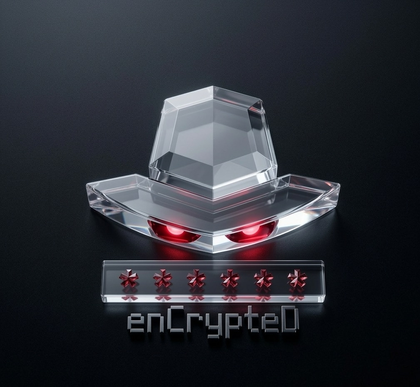

<meta name="viewport" content="width=device-width, initial-scale=1, viewport-fit=cover">
<meta charset="utf-8">
<title>Encryptando</title>
<link rel="icon" type="image/png" sizes="32x32" href="">
<link rel="apple-touch-icon" sizes="180x180" href="">
<meta name="theme-color" content="#0a0a0c">
<link rel="preconnect" href="https://fonts.googleapis.com">
<link rel="preconnect" href="https://fonts.gstatic.com" crossorigin>
<link href="https://fonts.googleapis.com/css2?family=Sora:wght@500;600;700;800&family=DM+Sans:wght@400;500;600;700&family=JetBrains+Mono:wght@400;500;600&display=swap" rel="stylesheet">
<style>
  :root{
    color-scheme: dark;
    --bg:#0a0a0c;
    --bg-2:#111013;
    --surface:#171518;
    --surface-2:#221d21;
    --surface-3:#2c252a;
    --border:rgba(255,255,255,.09);
    --border-strong:rgba(255,255,255,.18);
    --text:#f6eef0;
    --muted:#b6a9ad;
    --faint:#847579;
    --violet:#ff2a1f;
    --violet-2:#ff6a5c;
    --mint:#35d98a;
    --mint-2:#74efb3;
    --gold:#ffcf5c;
    --danger:#ff5a6a;
    --glow-violet:0 0 0 1px rgba(255,42,31,.4), 0 10px 40px -12px rgba(255,42,31,.6);
    --glow-mint:0 0 0 1px rgba(53,217,138,.35), 0 10px 40px -12px rgba(53,217,138,.5);
    --radius:16px;
    --radius-sm:11px;
    --mono:"JetBrains Mono",ui-monospace,SFMono-Regular,Menlo,monospace;
    --display:"Sora",system-ui,sans-serif;
    --body:"DM Sans",system-ui,sans-serif;
  }
  *{box-sizing:border-box}
  body{
    margin:0;
    background:
      radial-gradient(1100px 620px at 82% -8%, rgba(255,42,31,.16), transparent 60%),
      radial-gradient(900px 560px at 6% 4%, rgba(55,224,166,.10), transparent 55%),
      var(--bg);
    color:var(--text);
    font-family:var(--body);
    line-height:1.55;
    -webkit-font-smoothing:antialiased;
  }
  a{color:var(--violet-2)}
  button{font-family:inherit}
  h1,h2,h3{font-family:var(--display);text-wrap:balance;margin:0}
  code{font-family:var(--mono);font-size:.9em;background:rgba(255,42,31,.13);color:var(--violet-2);padding:.08em .38em;border-radius:6px}

  .wrap{max-width:940px;margin:0 auto;padding-inline:18px}

  /* Header */
  header.app{
    position:sticky;top:env(safe-area-inset-top,0px);z-index:40;
    backdrop-filter:blur(14px);
    background:linear-gradient(180deg, rgba(10,10,12,.92), rgba(10,10,12,.72));
    border-bottom:1px solid var(--border);
  }
  .hbar{display:flex;align-items:center;gap:16px;padding-block:12px}
  .brand{display:flex;align-items:center;gap:11px;font-family:var(--display);font-weight:800;font-size:19px;letter-spacing:-.01em}
  .logo{width:36px;height:36px;border-radius:10px;overflow:hidden;background:#0b0b0d;border:1px solid rgba(255,255,255,.14);box-shadow:var(--glow-violet);flex:none}
  .logo img{width:100%;height:100%;object-fit:cover;display:block}
  .brand b{color:var(--violet-2)}
  .brand span.tag{font-family:var(--body);font-weight:600;font-size:10px;letter-spacing:.14em;text-transform:uppercase;color:var(--faint);border:1px solid var(--border);padding:2px 7px;border-radius:999px;margin-left:2px}
  .hstats{margin-left:auto;display:flex;align-items:center;gap:14px}
  .stat{display:flex;align-items:center;gap:7px;font-weight:600;font-size:13.5px}
  .stat svg{width:17px;height:17px;flex:none}
  .streak-n{color:var(--gold)}
  .lvlbox{min-width:150px}
  .lvlrow{display:flex;justify-content:space-between;font-size:11px;color:var(--muted);margin-bottom:4px;font-weight:600}
  .lvlrow b{color:var(--text)}
  .xpbar{height:8px;border-radius:999px;background:var(--surface-2);overflow:hidden;border:1px solid var(--border)}
  .xpfill{height:100%;border-radius:999px;background:linear-gradient(90deg,var(--violet-2),var(--violet));transition:width .7s cubic-bezier(.2,.8,.2,1)}
  @media (max-width:640px){
    .lvlbox{display:none}
    .brand span.tag{display:none}
  }

  main{padding-block:26px 60px}

  .eyebrow{font-size:12px;font-weight:700;letter-spacing:.16em;text-transform:uppercase;color:var(--violet-2);margin:0 0 8px}
  .lead{color:var(--muted);font-size:15.5px;max-width:62ch}
  h1.title{font-size:clamp(27px,5vw,40px);font-weight:800;letter-spacing:-.02em;line-height:1.08;margin-bottom:12px}
  h1.title .hl{background:linear-gradient(120deg,var(--violet-2),var(--violet));-webkit-background-clip:text;background-clip:text;color:transparent}

  /* Fases */
  .sec-h{display:flex;align-items:baseline;gap:12px;margin:38px 0 16px}
  .sec-h h2{font-size:21px;font-weight:700;letter-spacing:-.01em}
  .sec-h .muted{color:var(--faint);font-size:13px;font-weight:600}
  .fases{display:grid;grid-template-columns:repeat(4,1fr);gap:12px}
  @media (max-width:720px){.fases{grid-template-columns:repeat(2,1fr)}}
  @media (max-width:400px){.fases{grid-template-columns:1fr}}
  .fase{border:1px solid var(--border);background:linear-gradient(165deg,var(--surface),var(--bg-2));border-radius:var(--radius);padding:15px 15px 16px;position:relative;overflow:hidden}
  .fase.active{border-color:rgba(255,42,31,.4);box-shadow:0 14px 40px -22px rgba(255,42,31,.7)}
  .fase .num{font-family:var(--mono);font-size:12px;color:var(--faint);font-weight:600}
  .fase h3{font-size:15.5px;margin:8px 0 5px;font-weight:700}
  .fase p{margin:0;font-size:12.5px;color:var(--muted);line-height:1.45}
  .fase .badge{position:absolute;top:13px;right:13px;font-size:10px;font-weight:700;letter-spacing:.08em;text-transform:uppercase;padding:3px 8px;border-radius:999px}
  .badge.on{background:rgba(55,224,166,.16);color:var(--mint-2);border:1px solid rgba(55,224,166,.3)}
  .badge.soon{background:var(--surface-2);color:var(--faint);border:1px solid var(--border)}
  .fase.locked{opacity:.62}

  /* Trilha de aulas */
  .path{position:relative;margin-top:6px}
  .path::before{content:"";position:absolute;left:26px;top:22px;bottom:22px;width:3px;border-radius:3px;
    background:linear-gradient(180deg,var(--violet),rgba(255,42,31,.15));}
  .node{position:relative;display:flex;gap:16px;align-items:stretch;padding:7px 0}
  .dot{width:54px;flex:none;display:flex;justify-content:center}
  .disc{width:54px;height:54px;border-radius:16px;display:grid;place-items:center;font-family:var(--display);font-weight:800;font-size:18px;
    background:var(--surface-2);border:1px solid var(--border);color:var(--muted);position:relative;z-index:2;transition:transform .25s}
  .node.done .disc{background:linear-gradient(150deg,var(--mint),#12b98a);color:#04231b;border-color:transparent;box-shadow:var(--glow-mint)}
  .node.avail .disc{background:linear-gradient(150deg,var(--violet),#c00d08);color:#fff;border-color:transparent;box-shadow:var(--glow-violet);animation:pulse 2.4s infinite}
  .node.locked .disc{color:var(--faint)}
  .disc svg{width:22px;height:22px}
  @keyframes pulse{0%,100%{box-shadow:var(--glow-violet)}50%{box-shadow:0 0 0 1px rgba(255,42,31,.5),0 14px 46px -10px rgba(255,42,31,.85)}}

  .card-lesson{flex:1;min-width:0;text-align:left;border:1px solid var(--border);background:linear-gradient(165deg,var(--surface),var(--bg-2));
    border-radius:var(--radius);padding:14px 16px;display:flex;align-items:center;gap:14px;cursor:pointer;
    transition:transform .18s ease, border-color .18s ease, box-shadow .18s ease;color:inherit;width:100%}
  .card-lesson:hover{transform:translateY(-2px);border-color:var(--border-strong)}
  .node.locked .card-lesson{cursor:not-allowed}
  .card-lesson .meta{flex:1;min-width:0}
  .card-lesson .kicker{font-family:var(--mono);font-size:11px;color:var(--faint);font-weight:600;letter-spacing:.02em}
  .card-lesson h3{font-size:16px;font-weight:700;margin:2px 0 3px}
  .card-lesson p{margin:0;font-size:13px;color:var(--muted);overflow:hidden;text-overflow:ellipsis;white-space:nowrap}
  .card-lesson .go{flex:none;color:var(--faint);display:flex;align-items:center;gap:6px;font-size:12.5px;font-weight:600}
  .node.done .card-lesson .go{color:var(--mint-2)}
  .card-lesson .go svg{width:18px;height:18px}
  .node.locked .card-lesson{opacity:.6}
  .node.shake .card-lesson{animation:shake .4s}
  @keyframes shake{0%,100%{transform:translateX(0)}20%,60%{transform:translateX(-6px)}40%,80%{transform:translateX(6px)}}

  .prova-node .card-lesson{background:linear-gradient(150deg,rgba(255,207,92,.1),var(--bg-2));border-color:rgba(255,207,92,.28)}
  .prova-node.locked .card-lesson{background:linear-gradient(165deg,var(--surface),var(--bg-2));border-color:var(--border)}
  .prova-node.avail .disc{background:linear-gradient(150deg,var(--gold),#e0a52d);color:#2b1d00;box-shadow:0 0 0 1px rgba(255,207,92,.4),0 12px 40px -12px rgba(255,207,92,.7);animation:pulse 2.4s infinite}
  .prova-node.done .disc{background:linear-gradient(150deg,var(--gold),#e0a52d);color:#2b1d00}

  /* Lesson view */
  .lv-top{display:flex;align-items:center;gap:12px;margin-bottom:6px}
  .back{display:inline-flex;align-items:center;gap:7px;background:var(--surface-2);border:1px solid var(--border);color:var(--text);
    padding:8px 13px;border-radius:10px;font-weight:600;font-size:13.5px;cursor:pointer;transition:border-color .18s}
  .back:hover{border-color:var(--border-strong)}
  .back svg{width:16px;height:16px}
  .lv-kicker{font-family:var(--mono);font-size:12px;color:var(--faint);font-weight:600}
  h1.lv-title{font-size:clamp(23px,4.5vw,32px);font-weight:800;letter-spacing:-.02em;margin:4px 0 6px}
  .lv-goal{color:var(--muted);font-size:15px;margin-bottom:18px}

  .tabs{display:flex;gap:6px;background:var(--surface);border:1px solid var(--border);border-radius:13px;padding:5px;margin-bottom:20px;width:fit-content;max-width:100%}
  .tab{flex:1;white-space:nowrap;border:0;background:transparent;color:var(--muted);font-weight:700;font-size:13.5px;padding:9px 16px;border-radius:9px;cursor:pointer;transition:all .18s;display:flex;align-items:center;gap:7px;justify-content:center}
  .tab svg{width:15px;height:15px}
  .tab[aria-selected="true"]{background:var(--surface-3);color:var(--text);box-shadow:0 2px 12px -6px rgba(0,0,0,.6)}
  .tab .chk{color:var(--mint)}

  .panel{animation:fade .35s ease}
  @keyframes fade{from{opacity:0;transform:translateY(8px)}to{opacity:1;transform:none}}

  .prose p{font-size:15.5px;color:#dfe2ff;margin:0 0 13px}
  .prose ul{margin:0 0 14px;padding-left:20px}
  .prose li{font-size:15px;color:#dfe2ff;margin-bottom:6px}
  .prose strong{color:#fff}

  /* Code playground */
  .play{border:1px solid var(--border);border-radius:var(--radius);overflow:hidden;background:#0a0c1a;margin:16px 0 6px}
  .play-h{display:flex;align-items:center;gap:9px;padding:10px 14px;background:linear-gradient(180deg,var(--surface-2),var(--surface));border-bottom:1px solid var(--border)}
  .dots{display:flex;gap:6px}
  .dots i{width:11px;height:11px;border-radius:50%;display:block}
  .dots i:nth-child(1){background:#ff5f57}.dots i:nth-child(2){background:#febc2e}.dots i:nth-child(3){background:#28c840}
  .play-h .fn{font-family:var(--mono);font-size:12px;color:var(--faint);margin-left:4px}
  .play-h .run{margin-left:auto}
  .btn{display:inline-flex;align-items:center;gap:8px;border:0;cursor:pointer;font-weight:700;font-size:13.5px;padding:9px 16px;border-radius:10px;transition:transform .12s, box-shadow .2s, opacity .2s}
  .btn:active{transform:scale(.97)}
  .btn:disabled{opacity:.45;cursor:not-allowed}
  .btn-run{background:linear-gradient(135deg,var(--mint),#12b98a);color:#04231b;box-shadow:0 8px 26px -12px rgba(55,224,166,.9)}
  .btn-primary{background:linear-gradient(135deg,var(--violet),#c00d08);color:#fff;box-shadow:0 8px 26px -12px rgba(255,42,31,.9)}
  .btn-ghost{background:var(--surface-2);color:var(--text);border:1px solid var(--border)}
  .btn svg{width:16px;height:16px}
  .editor{width:100%;border:0;outline:0;resize:vertical;min-height:150px;background:#0a0c1a;color:#e6e9ff;
    font-family:var(--mono);font-size:13.5px;line-height:1.7;padding:14px;tab-size:2;display:block}
  .editor:focus{box-shadow:inset 0 0 0 2px rgba(255,42,31,.4)}
  .out{border-top:1px solid var(--border);background:#070812;padding:12px 14px;font-family:var(--mono);font-size:13px;min-height:44px;color:var(--mint-2)}
  .out-label{font-size:10px;letter-spacing:.14em;text-transform:uppercase;color:var(--faint);font-weight:700;margin-bottom:6px;font-family:var(--body)}
  .out-line{white-space:pre-wrap;word-break:break-word;padding:1px 0}
  .out.out-error{color:var(--danger)}
  .tip{display:flex;gap:10px;align-items:flex-start;background:rgba(255,42,31,.08);border:1px solid rgba(255,42,31,.2);border-radius:12px;padding:12px 14px;margin-top:14px;font-size:14px;color:#dfe2ff}
  .tip svg{width:18px;height:18px;flex:none;color:var(--violet-2);margin-top:2px}

  /* Quiz */
  .q{border:1px solid var(--border);background:var(--surface);border-radius:var(--radius);padding:18px 18px 16px;margin-bottom:14px}
  .q .qn{font-family:var(--mono);font-size:11px;color:var(--faint);font-weight:600;letter-spacing:.05em}
  .q .qt{font-size:16px;font-weight:600;margin:5px 0 8px;color:#fff}
  pre.snip{background:#0a0c1a;border:1px solid var(--border);border-radius:10px;padding:12px 14px;overflow-x:auto;margin:0 0 12px}
  pre.snip code{background:none;color:#e6e9ff;padding:0;font-size:12.8px;line-height:1.65;white-space:pre}
  .opts{display:flex;flex-direction:column;gap:8px}
  .opt{text-align:left;border:1px solid var(--border);background:var(--surface-2);color:var(--text);padding:11px 14px;border-radius:11px;cursor:pointer;font-size:14.5px;font-weight:500;transition:all .16s;display:flex;align-items:center;gap:11px}
  .opt:hover:not(:disabled){border-color:var(--border-strong);transform:translateX(2px)}
  .opt .mk{width:20px;height:20px;border-radius:6px;border:1.5px solid var(--faint);flex:none;display:grid;place-items:center}
  .opt .mk svg{width:13px;height:13px;opacity:0}
  .opt.correct{border-color:rgba(55,224,166,.55);background:rgba(55,224,166,.12);color:var(--mint-2)}
  .opt.correct .mk{border-color:var(--mint);background:var(--mint)}
  .opt.correct .mk svg{opacity:1;color:#04231b}
  .opt.wrong{border-color:rgba(255,107,129,.5);background:rgba(255,107,129,.1);color:#ffb3bf}
  .opt.wrong .mk{border-color:var(--danger)}
  .opt:disabled{cursor:default}
  .fb{margin-top:10px;font-size:13.5px;padding:10px 13px;border-radius:10px;display:none}
  .fb.show{display:block;animation:fade .25s}
  .fb.ok{background:rgba(55,224,166,.1);color:var(--mint-2);border:1px solid rgba(55,224,166,.25)}
  .fb.no{background:rgba(255,107,129,.09);color:#ffb3bf;border:1px solid rgba(255,107,129,.22)}

  .finish{display:flex;align-items:center;gap:14px;flex-wrap:wrap;margin-top:20px;padding:18px;border:1px solid var(--border);border-radius:var(--radius);background:linear-gradient(150deg,var(--surface),var(--bg-2))}
  .finish .prog{flex:1;min-width:180px}
  .finish .prog .lbl{font-size:12.5px;color:var(--muted);font-weight:600;margin-bottom:6px}
  .miniprog{height:7px;border-radius:999px;background:var(--surface-2);overflow:hidden;border:1px solid var(--border)}
  .miniprog i{display:block;height:100%;background:linear-gradient(90deg,var(--violet-2),var(--violet));border-radius:999px;transition:width .4s}

  /* Prova */
  .prova-desc{border:1px solid rgba(255,207,92,.28);background:linear-gradient(150deg,rgba(255,207,92,.08),var(--bg-2));border-radius:var(--radius);padding:18px;margin-bottom:18px}
  .prova-desc h3{font-size:16px;color:var(--gold);margin-bottom:8px}
  .prova-desc p{font-size:15px;color:#dfe2ff;margin:0 0 10px}
  .prova-desc ul{margin:0;padding-left:20px}
  .prova-desc li{font-size:14.5px;color:#dfe2ff;margin-bottom:5px}
  .tests{margin-top:16px;border:1px solid var(--border);border-radius:var(--radius);overflow:hidden}
  .tests table{width:100%;border-collapse:collapse;font-size:13px}
  .tests th{text-align:left;font-size:10.5px;letter-spacing:.1em;text-transform:uppercase;color:var(--faint);font-weight:700;padding:10px 14px;background:var(--surface);border-bottom:1px solid var(--border)}
  .tests td{padding:11px 14px;border-bottom:1px solid var(--border);font-family:var(--mono);font-size:12.5px;color:#dfe2ff;vertical-align:top}
  .tests tr:last-child td{border-bottom:0}
  .tests .st{font-family:var(--body);font-weight:700;display:inline-flex;align-items:center;gap:6px}
  .tests .st svg{width:15px;height:15px}
  .st.pass{color:var(--mint-2)}.st.fail{color:var(--danger)}.st.idle{color:var(--faint)}

  /* Toast */
  #toast{position:fixed;left:50%;bottom:26px;transform:translateX(-50%) translateY(120%);z-index:80;
    background:var(--surface-3);border:1px solid var(--border-strong);color:var(--text);padding:13px 20px;border-radius:13px;
    font-weight:600;font-size:14px;box-shadow:0 20px 50px -18px rgba(0,0,0,.8);display:flex;align-items:center;gap:10px;
    transition:transform .45s cubic-bezier(.2,.9,.2,1);max-width:90vw}
  #toast.show{transform:translateX(-50%) translateY(0)}
  #toast svg{width:19px;height:19px;flex:none}
  #toast.gold{border-color:rgba(255,207,92,.4)}#toast.gold svg{color:var(--gold)}
  #toast.mint svg{color:var(--mint)}

  /* Pré-visualização de HTML + checklist da prova */
  .prev-wrap{border-top:1px solid var(--border);background:#070812}
  .prev-wrap .out-label{padding:10px 14px 8px;margin:0}
  .preview{display:block;width:100%;height:260px;border:0;background:#fff}
  .checks{margin-top:16px;border:1px solid var(--border);border-radius:var(--radius);overflow:hidden;background:var(--surface)}
  .check{display:flex;gap:10px;align-items:center;padding:11px 14px;border-bottom:1px solid var(--border);font-size:14px;font-weight:600}
  .check:last-child{border-bottom:0}
  .check svg{width:16px;height:16px;flex:none}
  .check.pass{color:var(--mint-2)}.check.fail{color:#ffb3bf}.check.idle{color:var(--muted)}
  .modlock{display:flex;gap:10px;align-items:center;color:var(--muted);font-size:13.5px;background:var(--surface);border:1px dashed var(--border-strong);border-radius:12px;padding:12px 14px;margin-bottom:8px}
  .modlock svg{width:18px;height:18px;flex:none}
  /* Editor com cores e numeração */
  .edwrap{display:flex;background:#0a0c1a;max-width:100%;overflow:hidden}
  .edwrap:focus-within{box-shadow:inset 0 0 0 2px rgba(255,42,31,.35)}
  .gutter{flex:none;min-width:40px;padding:14px 8px 14px 12px;font-family:var(--mono);font-size:13.5px;line-height:1.7;color:#544c52;text-align:right;user-select:none;overflow:hidden;white-space:pre;border-right:1px solid var(--border)}
  .edbox{position:relative;flex:1;min-width:0}
  .hl{margin:0;padding:14px;font-family:var(--mono);font-size:13.5px;line-height:1.7;white-space:pre;overflow:auto;height:100%;color:#e6e9ff;scrollbar-width:none}
  .hl::-webkit-scrollbar{display:none}
  .hl code{font-family:inherit;background:none;padding:0;color:inherit;font-size:inherit;border-radius:0}
  textarea.editor{position:absolute;inset:0;width:100%;height:100%;padding:14px;margin:0;border:0;outline:0;resize:none;background:transparent;color:transparent;caret-color:#fff;font-family:var(--mono);font-size:13.5px;line-height:1.7;white-space:pre;overflow:auto;tab-size:2;display:block}
  textarea.editor::selection{background:rgba(255,42,31,.4);color:transparent}
  .t-tag{color:#ff6a5c}
  .t-attr{color:#ffcf5c}
  .t-str{color:#74efb3}
  .t-com{color:#7b7280;font-style:italic}
  .t-kw{color:#ff8a95}
  .t-num{color:#c8f542}
  .t-fn{color:#8fd8ff}
  .t-sel{color:#ff6a5c}
  .t-prop{color:#ffcf5c}
  .t-punc{color:#9a9298}
  /* Terminal simulado */
  .term{border:1px solid var(--border);border-radius:var(--radius);overflow:hidden;background:#07080f;margin:16px 0 6px}
  .term-h{display:flex;align-items:center;gap:9px;padding:10px 14px;background:linear-gradient(180deg,var(--surface-2),var(--surface));border-bottom:1px solid var(--border)}
  .term-h .fn{font-family:var(--mono);font-size:12px;color:var(--faint);margin-left:4px}
  .term-out{padding:14px;font-family:var(--mono);font-size:13px;line-height:1.65;max-height:320px;overflow:auto;min-height:150px}
  .tl{white-space:pre-wrap;word-break:break-word}
  .tl-cmd{color:#f6eef0;font-weight:600}
  .tl-out{color:#b6a9ad}
  .tl-ok{color:#74efb3}
  .tl-err{color:#ff8a95}
  .tl-info{color:var(--faint);font-style:italic}
  .term-line{display:flex;align-items:center;gap:9px;padding:11px 14px;border-top:1px solid var(--border);background:#0a0c14}
  .tprompt{color:#ff6a5c;font-family:var(--mono);font-weight:700;flex:none}
  .term-in{flex:1;min-width:0;background:transparent;border:0;outline:0;color:#f6eef0;font-family:var(--mono);font-size:13.5px;padding:2px 0}
  .term-in::placeholder{color:#544c52}
  .cmds{display:flex;flex-wrap:wrap;gap:7px;align-items:center;margin-top:12px}
  .cmds-t{font-size:12.5px;color:var(--muted);font-weight:600;margin-right:2px}
  .cmdchip{font-family:var(--mono);font-size:12.5px;padding:6px 11px;border-radius:9px;cursor:pointer;
    border:1px solid var(--border);background:var(--surface-2);color:var(--violet-2);transition:all .16s}
  .cmdchip:hover{border-color:var(--violet);transform:translateY(-1px)}
  /* Meta semanal, glossário e anotações */
  .meta{border:1px solid var(--border);background:linear-gradient(150deg,var(--surface),var(--bg-2));border-radius:var(--radius);padding:14px 16px;margin:18px 0 4px}
  .meta.ok{border-color:rgba(57,255,136,.4)}
  .meta-top{display:flex;align-items:center;justify-content:space-between;gap:10px;margin-bottom:9px}
  .meta-t{display:inline-flex;align-items:center;gap:8px;font-weight:700;font-size:14px}
  .meta-t svg{width:16px;height:16px;color:var(--gold)}
  .meta-n{font-family:var(--mono);font-size:13px;color:var(--muted);font-variant-numeric:tabular-nums}
  .meta-foot{display:flex;align-items:center;justify-content:space-between;gap:10px;flex-wrap:wrap;margin-top:9px;font-size:12.5px;color:var(--muted)}
  .meta-set{display:flex;align-items:center;gap:5px}
  .metabtn{width:26px;height:26px;border-radius:8px;border:1px solid var(--border);background:var(--surface-2);color:var(--muted);
    font-family:var(--mono);font-size:12px;font-weight:600;cursor:pointer;transition:all .18s}
  .metabtn:hover{border-color:var(--border-strong)}
  .metabtn.on{background:var(--violet);border-color:transparent;color:#fff}
  .gfilters{display:flex;gap:7px;flex-wrap:wrap;margin-bottom:14px}
  .gf{border:1px solid var(--border);background:var(--surface);color:var(--muted);font-weight:600;font-size:13px;
    padding:7px 14px;border-radius:999px;cursor:pointer;transition:all .18s}
  .gf:hover{border-color:var(--border-strong)}
  .gf.on{background:var(--violet);border-color:transparent;color:#fff}
  .glist{display:grid;grid-template-columns:repeat(auto-fill,minmax(280px,1fr));gap:10px}
  .gitem{border:1px solid var(--border);background:var(--surface);border-radius:var(--radius);padding:14px 15px;min-width:0}
  .gtop{display:flex;align-items:center;justify-content:space-between;gap:9px;margin-bottom:6px}
  .gtop b{font-size:15px}
  .gtag{font-size:10px;font-weight:800;letter-spacing:.08em;text-transform:uppercase;padding:3px 8px;border-radius:999px;flex:none}
  .gt-html{background:rgba(255,42,31,.14);color:#ff8a95}
  .gt-css{background:rgba(255,207,92,.14);color:var(--gold)}
  .gt-logica{background:rgba(57,255,136,.12);color:#74efb3}
  .gt-dom{background:rgba(143,216,255,.14);color:#8fd8ff}
  .gt-git{background:rgba(255,138,60,.14);color:#ffae6b}
  /* Perfil e conta */
  .perfil-topo{display:flex;align-items:center;gap:18px;margin:6px 0 22px}
  .avatar{width:74px;height:74px;flex:none;border-radius:50%;display:grid;place-items:center;font:800 26px/1 var(--head);
    color:#fff;background:linear-gradient(145deg,var(--red),#8b1109);border:2px solid rgba(255,255,255,.14);box-shadow:0 8px 24px rgba(255,42,31,.28)}
  .perfil-id{min-width:0}
  .perfil-nome{background:var(--card);border:1px solid var(--border);border-radius:16px;padding:16px 18px;margin-bottom:14px}
  .perfil-nome label{display:block;font-size:13px;color:var(--faint);margin-bottom:8px}
  .conta-box{display:flex;flex-wrap:wrap;gap:12px;align-items:center;justify-content:space-between;
    background:var(--card);border:1px solid var(--border);border-radius:16px;padding:16px 18px;margin-bottom:20px}
  .conta-box.ok{border-color:rgba(57,255,136,.3);background:linear-gradient(180deg,rgba(57,255,136,.06),var(--card))}
  .conta-box b{display:block;font:700 15px/1.3 var(--head)}
  .conta-box small{display:block;color:var(--faint);font-size:13px;margin-top:3px}
  .conta-acoes{display:flex;gap:8px;flex-wrap:wrap}
  .stats-grid{display:grid;grid-template-columns:repeat(auto-fill,minmax(210px,1fr));gap:12px;margin-bottom:26px}
  .statcard{background:var(--card);border:1px solid var(--border);border-radius:14px;padding:16px 16px 14px;min-width:0}
  .statcard .sv{display:block;font:800 26px/1.1 var(--head);color:var(--gold)}
  .statcard .sk{display:block;font-size:14px;font-weight:600;margin-top:6px}
  .statcard small{display:block;color:var(--faint);font-size:12px;margin-top:3px}
  .medalhas{display:grid;grid-template-columns:repeat(auto-fill,minmax(250px,1fr));gap:10px;margin-bottom:26px}
  .medalha{display:flex;gap:12px;align-items:flex-start;background:var(--card);border:1px solid var(--border);
    border-radius:14px;padding:14px 15px;opacity:.5;min-width:0}
  .medalha.on{opacity:1;border-color:rgba(255,207,92,.34);background:linear-gradient(180deg,rgba(255,207,92,.07),var(--card))}
  .medalha .mic{flex:none;width:34px;height:34px;display:grid;place-items:center;border-radius:10px;
    background:rgba(255,255,255,.05);color:var(--faint)}
  .medalha .mic svg{width:18px;height:18px}
  .medalha.on .mic{background:rgba(255,207,92,.16);color:var(--gold)}
  .medalha .mtx{min-width:0}
  .medalha b{display:block;font:700 14px/1.3 var(--head)}
  .medalha small{display:block;color:var(--faint);font-size:12.5px;margin-top:3px;line-height:1.45}
  .form-conta{max-width:430px;background:var(--card);border:1px solid var(--border);border-radius:18px;padding:22px}
  .form-conta label{display:block;font-size:13px;color:var(--faint);margin:14px 0 6px}
  .form-conta label:first-child{margin-top:0}
  .form-conta .cinput{width:100%}
  .btn-largo{width:100%;justify-content:center;margin-top:20px}
  .fmsg{min-height:20px;margin:12px 0 0;font-size:13.5px;color:var(--danger)}
  .ftroca{margin-top:10px;font-size:13.5px;color:var(--faint);text-align:center}
  .linkbtn{background:none;border:0;color:var(--red);font:inherit;font-weight:700;cursor:pointer;padding:0;text-decoration:underline}
  .linkbtn:hover{color:#ff6a5c}
  .hbtn{display:flex;align-items:center;gap:7px;min-height:38px;background:rgba(255,255,255,.05);border:1px solid var(--border);
    color:var(--text);border-radius:999px;padding:6px 12px 6px 6px;cursor:pointer;font:600 13px/1 var(--body)}
  .hbtn:hover{border-color:var(--border-strong);background:rgba(255,255,255,.08)}
  .hbtn .av{width:24px;height:24px;border-radius:50%;display:grid;place-items:center;font:800 11px/1 var(--head);
    color:#fff;background:linear-gradient(145deg,var(--red),#8b1109)}
  .hbtn .nuvem{width:7px;height:7px;border-radius:50%;background:#39ff88;flex:none}
  .hbtn .nuvem.off{background:var(--faint)}
  .hbtn .nuvem.erro{background:var(--danger)}
  @media (max-width:640px){
    .perfil-topo{gap:14px}
    .avatar{width:58px;height:58px;font-size:20px}
    .hbtn span.rot{display:none}
  }

  .gt-apis{background:rgba(196,153,255,.16);color:#c9a6ff}
  .gt-ia{background:rgba(143,107,255,.16);color:#b49bff}
  .gt-editor{background:rgba(110,231,255,.14);color:#7fe0f5}
  .gt-ads{background:rgba(24,119,242,.18);color:#6aa8ff}
  /* Links e downloads */
  /* Selos e convites */
  .selo{display:inline-block;font:700 10.5px/1 var(--head);letter-spacing:.05em;text-transform:uppercase;
    padding:4px 8px;border-radius:6px;margin-left:8px;vertical-align:middle}
  .selo.ativo{background:rgba(57,255,136,.14);color:#5ee89f}
  .selo.parado{background:rgba(255,42,31,.16);color:#ff8a95}
  .selo.novo{background:rgba(255,255,255,.07);color:var(--faint)}
  .aluno.alerta{border-color:rgba(255,42,31,.35)}
  .nota-mentor{margin-top:14px}
  .nota-mentor label{display:flex;align-items:center;gap:8px;font-size:12.5px;color:var(--faint);margin-bottom:7px}
  .nota-mentor label b{color:var(--text);font:700 13px/1 var(--head)}
  .nota-mentor .salvo{margin-left:auto;font-size:11.5px;color:#5ee89f}
  .nota-mentor textarea{width:100%;min-height:74px;resize:vertical;background:var(--bg);
    border:1px solid var(--border);color:var(--text);border-radius:11px;padding:11px 13px;
    font:400 13.5px/1.55 var(--body)}
  .nota-mentor textarea:focus{outline:none;border-color:var(--border-strong)}
  .conv{background:var(--card);border:1px solid var(--border);border-radius:14px;padding:13px 15px;
    margin-bottom:9px;display:flex;flex-wrap:wrap;gap:10px;align-items:center}
  .conv .cod{font:800 15px/1 var(--mono);letter-spacing:.06em;color:var(--gold)}
  .conv .para{font-size:13px;color:var(--faint);flex:1;min-width:120px}
  .conv .est{font:700 10.5px/1 var(--head);letter-spacing:.05em;text-transform:uppercase;padding:4px 8px;border-radius:6px}
  .conv .est.livre{background:rgba(57,255,136,.14);color:#5ee89f}
  .conv .est.usado{background:rgba(255,255,255,.07);color:var(--faint)}
  .conv-acoes{display:flex;gap:7px;flex-wrap:wrap}
  .conv-acoes .btn{padding:7px 12px;font-size:12.5px}
  .conv-topo{display:flex;gap:9px;flex-wrap:wrap;align-items:center;margin-bottom:14px}
  .conv-topo input{flex:1;min-width:160px;background:var(--bg);border:1px solid var(--border);
    color:var(--text);border-radius:10px;padding:10px 13px;font:400 13.5px/1.3 var(--body)}
  .conv-topo input:focus{outline:none;border-color:var(--border-strong)}
  .sec-h h2 svg{width:17px;height:17px;vertical-align:-2px;margin-right:7px;stroke:#5ee89f}
  .links{display:grid;grid-template-columns:repeat(auto-fill,minmax(260px,1fr));gap:10px;margin-bottom:8px}
  .linkcard{display:flex;align-items:center;gap:12px;background:var(--card);border:1px solid var(--border);
    border-radius:14px;padding:13px 15px;text-decoration:none;color:var(--text);min-width:0;transition:.15s}
  .linkcard:hover{border-color:var(--border-strong);transform:translateY(-1px);background:rgba(255,255,255,.03)}
  .linkcard .lk-ic{width:32px;height:32px;flex:none;display:grid;place-items:center;border-radius:9px;
    background:rgba(57,255,136,.12);color:#5ee89f}
  .linkcard .lk-ic svg{width:17px;height:17px}
  .linkcard .lk-tx{min-width:0;flex:1}
  .linkcard b{display:block;font:700 13.5px/1.3 var(--head)}
  .linkcard small{display:block;color:var(--faint);font-size:12px;margin-top:2px;line-height:1.4}
  .linkcard .lk-go{flex:none;color:var(--faint)}
  .linkcard .lk-go svg{width:15px;height:15px}
  /* Foto de perfil */
  .avatar.comfoto,.hbtn .av.comfoto,.aluno-av.comfoto{padding:0;overflow:hidden;background:none}
  .avatar img,.hbtn .av img,.aluno-av img{width:100%;height:100%;object-fit:cover;display:block;border-radius:50%}
  .foto-acoes{display:flex;gap:8px;flex-wrap:wrap;margin-top:12px;align-items:center}
  .foto-acoes .fmsg2{font-size:12.5px;color:var(--faint)}
  /* Painel do mentor */
  .aluno{background:var(--card);border:1px solid var(--border);border-radius:16px;margin-bottom:10px;overflow:hidden}
  .aluno-top{display:flex;align-items:center;gap:13px;width:100%;background:none;border:0;color:var(--text);
    padding:14px 16px;cursor:pointer;text-align:left;font:inherit}
  .aluno-top:hover{background:rgba(255,255,255,.03)}
  .aluno-av{width:40px;height:40px;flex:none;border-radius:50%;display:grid;place-items:center;
    font:800 14px/1 var(--head);color:#fff;background:linear-gradient(145deg,var(--red),#8b1109)}
  .aluno-id{flex:1;min-width:0}
  .aluno-id b{display:block;font:700 14.5px/1.3 var(--head)}
  .aluno-id small{display:block;color:var(--faint);font-size:12.5px;margin-top:3px}
  .tag-eu{font:700 10px/1 var(--head);letter-spacing:.06em;text-transform:uppercase;color:var(--gold);
    background:rgba(255,207,92,.14);padding:3px 6px;border-radius:5px;vertical-align:middle}
  .aluno-pct{flex:none;text-align:right}
  .aluno-pct b{display:block;font:800 19px/1 var(--head);color:var(--gold)}
  .aluno-pct small{display:block;color:var(--faint);font-size:11.5px;margin-top:3px}
  .aluno-seta{flex:none;color:var(--faint);transition:.2s}
  .aluno-seta svg{width:16px;height:16px}
  .aluno-top.aberto .aluno-seta{transform:rotate(90deg)}
  .aluno-det{padding:0 16px 16px;border-top:1px solid var(--border)}
  .miniprog.grande{height:7px;margin:14px 0}
  .aluno-nums{display:flex;flex-wrap:wrap;gap:8px;margin-bottom:14px}
  .aluno-nums span{background:rgba(255,255,255,.04);border:1px solid var(--border);border-radius:10px;
    padding:8px 12px;font-size:12px;color:var(--faint);text-align:center}
  .aluno-nums b{display:block;font:800 16px/1.2 var(--head);color:var(--text);margin-bottom:2px}
  .tab-mod{width:100%;border-collapse:collapse;font-size:13px}
  .tab-mod th{text-align:left;color:var(--faint);font:700 11px/1 var(--head);letter-spacing:.07em;
    text-transform:uppercase;padding:0 8px 8px}
  .tab-mod th:nth-child(2),.tab-mod th:nth-child(3){text-align:center;width:86px}
  .tab-mod td{padding:8px;border-top:1px solid rgba(255,255,255,.05)}
  .tab-mod td:nth-child(2),.tab-mod td:nth-child(3){text-align:center;font-family:var(--mono);font-size:12px;color:var(--faint)}
  .tab-mod tr.ok td{color:#7fe3a8}
  .tab-mod tr.ok td:nth-child(3){color:#39ff88;font-weight:700}
  @media (max-width:640px){
    .aluno-top{gap:10px;padding:12px 13px}
    .aluno-av{width:34px;height:34px;font-size:12px}
    .aluno-pct b{font-size:16px}
    .tab-mod{font-size:12px}
  }
  /* Simulador do Gerenciador de Anúncios */
  .ads{background:var(--card);border:1px solid var(--border);border-radius:16px;overflow:hidden}
  .ads-h{display:flex;align-items:center;gap:9px;padding:11px 15px;background:rgba(255,255,255,.03);
    border-bottom:1px solid var(--border);font:600 13px/1 var(--body)}
  .ads-h .pt{width:20px;height:20px;border-radius:6px;flex:none;background:linear-gradient(145deg,#1877f2,#0b5ed7)}
  .ads-h small{margin-left:auto;color:var(--faint);font-weight:500;font-size:12px}
  .ads-nivel{padding:9px 15px;background:rgba(255,255,255,.02);border-top:1px solid var(--border);
    font:700 11px/1 var(--head);letter-spacing:.1em;text-transform:uppercase;color:var(--gold)}
  .ads-nivel:first-of-type{border-top:0}
  .ads-campo{padding:12px 15px;border-top:1px solid rgba(255,255,255,.05);display:grid;
    grid-template-columns:minmax(150px,1fr) minmax(0,1.6fr);gap:12px;align-items:center}
  .ads-campo label{font-size:13.5px;font-weight:600}
  .ads-campo .dica{display:block;color:var(--faint);font-size:12px;font-weight:400;margin-top:2px}
  .ads-campo select,.ads-campo input,.ads-campo textarea{width:100%;min-width:0;background:var(--bg);
    border:1px solid var(--border);color:var(--text);border-radius:9px;padding:9px 11px;
    font:400 13.5px/1.4 var(--body)}
  .ads-campo textarea{min-height:66px;resize:vertical}
  .ads-campo select:focus,.ads-campo input:focus,.ads-campo textarea:focus{outline:none;border-color:var(--border-strong)}
  .ads-campo.ok select,.ads-campo.ok input,.ads-campo.ok textarea{border-color:rgba(57,255,136,.45)}
  .ads-previa{margin-top:14px;background:#fff;color:#16161a;border-radius:14px;overflow:hidden;
    border:1px solid var(--border);max-width:400px}
  .ads-previa .pv-top{display:flex;align-items:center;gap:9px;padding:11px 13px}
  .ads-previa .pv-av{width:34px;height:34px;border-radius:50%;flex:none;
    background:linear-gradient(145deg,var(--red),#8b1109);display:grid;place-items:center;
    color:#fff;font:800 12px/1 var(--head)}
  .ads-previa .pv-nome{font:700 13px/1.25 var(--body)}
  .ads-previa .pv-pat{font-size:11px;color:#65676b}
  .ads-previa .pv-txt{padding:0 13px 11px;font-size:13.5px;line-height:1.45;white-space:pre-wrap;word-break:break-word}
  .ads-previa .pv-img{height:150px;background:linear-gradient(135deg,#1c1c22,#2a1114);display:grid;place-items:center;
    color:#6b6b73;font:600 12px/1 var(--body)}
  .ads-previa .pv-bar{display:flex;align-items:center;gap:10px;padding:10px 13px;background:#f0f2f5}
  .ads-previa .pv-bar b{font:700 13px/1.3 var(--body);flex:1;min-width:0;word-break:break-word}
  .ads-previa .pv-bar small{display:block;font-weight:400;color:#65676b;font-size:11px}
  .ads-previa .pv-bt{background:#e4e6eb;border-radius:7px;padding:7px 12px;font:600 12.5px/1 var(--body);flex:none}
  @media (max-width:640px){ .ads-campo{grid-template-columns:1fr;gap:6px} }
  /* Chat de treino com IA */
  .chat{background:var(--card);border:1px solid var(--border);border-radius:16px;overflow:hidden;margin:18px 0}
  .chat-h{display:flex;align-items:center;gap:9px;padding:11px 15px;background:rgba(255,255,255,.03);
    border-bottom:1px solid var(--border);font:600 13px/1 var(--body)}
  .chat-h .bolha{width:22px;height:22px;border-radius:50%;display:grid;place-items:center;flex:none;
    background:linear-gradient(145deg,#8f6bff,#5b3bd6);color:#fff;font:800 10px/1 var(--head)}
  .chat-h small{margin-left:auto;color:var(--faint);font-weight:500;font-size:12px}
  .chat-body{padding:16px;max-height:340px;overflow-y:auto;display:flex;flex-direction:column;gap:12px}
  .msg{max-width:86%;padding:11px 14px;border-radius:14px;font-size:14.5px;line-height:1.58}
  .msg.ia{align-self:flex-start;background:rgba(143,107,255,.1);border:1px solid rgba(143,107,255,.22);border-bottom-left-radius:5px}
  .msg.eu{align-self:flex-end;background:rgba(255,42,31,.12);border:1px solid rgba(255,42,31,.26);border-bottom-right-radius:5px}
  .msg code{background:rgba(0,0,0,.35);padding:1px 5px;border-radius:5px;font-family:var(--mono);font-size:13px}
  .msg .snip{margin:9px 0 2px;max-height:none}
  .msg.pensando{color:var(--faint);font-style:italic}
  .chat-f{display:flex;gap:8px;padding:12px 14px;border-top:1px solid var(--border);background:rgba(0,0,0,.18)}
  .chat-f input{flex:1;min-width:0;background:var(--bg);border:1px solid var(--border);color:var(--text);
    border-radius:10px;padding:10px 13px;font:400 14px/1.3 var(--body)}
  .chat-f input:focus{outline:none;border-color:var(--border-strong)}
  .chat-sug{display:flex;flex-wrap:wrap;gap:7px;padding:0 14px 13px}
  .chat-sug button{background:rgba(255,255,255,.05);border:1px solid var(--border);color:var(--faint);
    border-radius:999px;padding:6px 11px;font:500 12.5px/1 var(--body);cursor:pointer}
  .chat-sug button:hover{border-color:var(--border-strong);color:var(--text)}
  .chat-aviso{padding:9px 15px;background:rgba(255,207,92,.07);border-top:1px solid var(--border);
    color:var(--faint);font-size:12.5px;line-height:1.5}
  .gitem p{margin:0 0 9px;font-size:13.5px;color:var(--muted);line-height:1.5}
  .gitem .snip{margin:0}
  .gitem .snip code{font-size:12px}
  .notes{margin-top:16px;border:1px solid var(--border);background:var(--surface);border-radius:var(--radius);padding:14px 16px}
  .notes label{display:flex;align-items:center;gap:8px;font-size:13px;font-weight:700;color:var(--muted);margin-bottom:9px}
  .notes label svg{width:16px;height:16px;color:var(--gold)}
  .nsaved{margin-left:auto;font-size:11px;font-weight:600;color:var(--faint);letter-spacing:.06em;text-transform:uppercase}
  .nsaved.flash{color:#39ff88}
  .notebox{width:100%;min-height:92px;resize:vertical;background:var(--surface-2);border:1px solid var(--border);border-radius:11px;
    color:var(--text);font-family:var(--body);font-size:14.5px;line-height:1.6;padding:11px 13px;outline:0}
  .notebox:focus{border-color:rgba(255,42,31,.45)}
  .homefoot{display:flex;justify-content:center;gap:10px;flex-wrap:wrap;margin-top:26px}
  /* Projetos, certificados e progresso */
  .proj-node .card-lesson{background:linear-gradient(150deg,rgba(57,255,136,.07),var(--bg-2));border-color:rgba(57,255,136,.25)}
  .proj-node.locked .card-lesson{background:linear-gradient(165deg,var(--surface),var(--bg-2));border-color:var(--border)}
  .proj-node.avail .disc{background:linear-gradient(150deg,#39ff88,#12b98a);color:#04231b;box-shadow:0 0 0 1px rgba(57,255,136,.4),0 12px 40px -12px rgba(57,255,136,.8);animation:pulse 2.4s infinite}
  .proj-node.done .disc{background:linear-gradient(150deg,#39ff88,#12b98a);color:#04231b}
  .certs{display:grid;grid-template-columns:repeat(auto-fill,minmax(260px,1fr));gap:10px}
  .certcard{display:flex;align-items:center;gap:12px;text-align:left;padding:13px 15px;cursor:pointer;color:inherit;min-width:0;
    border:1px solid rgba(255,207,92,.3);border-radius:var(--radius);background:linear-gradient(150deg,rgba(255,207,92,.08),var(--bg-2));transition:transform .18s,border-color .18s}
  .certcard:hover{transform:translateY(-2px);border-color:rgba(255,207,92,.6)}
  .certic{flex:none;width:36px;height:36px;border-radius:10px;display:grid;place-items:center;background:linear-gradient(150deg,var(--gold),#e0a52d);color:#2b1d00}
  .certic svg{width:18px;height:18px}
  .certtx{flex:1;display:flex;flex-direction:column;min-width:0}
  .certtx b{font-size:14px;line-height:1.3}
  .certtx small{font-size:12px;color:var(--muted);margin-top:2px}
  .certgo svg{width:17px;height:17px;color:var(--faint)}
  .certform{border:1px solid var(--border);background:var(--surface);border-radius:var(--radius);padding:15px 17px;margin-bottom:14px}
  .certform label{display:block;font-size:12.5px;color:var(--muted);font-weight:600;margin-bottom:8px}
  .certrow{display:flex;gap:9px;flex-wrap:wrap}
  .cinput{flex:1;min-width:180px;background:var(--surface-2);border:1px solid var(--border);border-radius:10px;color:var(--text);
    padding:10px 13px;font-family:var(--body);font-size:14.5px;outline:0}
  .cinput:focus{border-color:rgba(255,42,31,.5)}
  .certwrap{border:1px solid var(--border);border-radius:var(--radius);overflow:hidden;background:#0a0a0c}
  .certwrap canvas{display:block;width:100%;height:auto}
  .codebox{width:100%;min-height:96px;resize:vertical;background:#0a0c1a;border:1px solid var(--border);border-radius:12px;color:#74efb3;
    font-family:var(--mono);font-size:12px;line-height:1.5;padding:12px 14px;outline:0;word-break:break-all;white-space:pre-wrap}
  .codebox:focus{border-color:rgba(255,42,31,.5)}
  .psum{margin:0;font-family:var(--mono);font-size:13px;line-height:1.7;color:#e9e2e4;white-space:pre-wrap}
  /* Cartão de revisão */
  .revcard{display:flex;align-items:center;gap:13px;width:100%;text-align:left;margin:18px 0 4px;padding:14px 16px;cursor:pointer;
    border:1px solid rgba(255,207,92,.35);border-radius:var(--radius);background:linear-gradient(150deg,rgba(255,207,92,.09),var(--bg-2));color:inherit;
    transition:transform .18s,border-color .18s}
  .revcard:hover{transform:translateY(-2px);border-color:rgba(255,207,92,.6)}
  .revic{flex:none;width:38px;height:38px;border-radius:11px;display:grid;place-items:center;background:linear-gradient(150deg,var(--gold),#e0a52d);color:#2b1d00}
  .revic svg{width:19px;height:19px}
  .revtxt{flex:1;display:flex;flex-direction:column;min-width:0}
  .revtxt b{font-size:15px}
  .revtxt small{font-size:12.5px;color:var(--muted);margin-top:2px}
  .revgo svg{width:18px;height:18px;color:var(--gold)}
  /* Vídeo-aulas */
  .vid-sec{margin:14px 0 6px}
  .vid-h{display:flex;align-items:center;gap:9px;margin-bottom:10px;flex-wrap:wrap}
  .vid-h svg{width:18px;height:18px;color:var(--violet-2)}
  .vid-h h3{font-size:16px;font-weight:700}
  .vid-h span{font-size:12.5px;color:var(--faint)}
  .vids{display:grid;grid-template-columns:repeat(auto-fill,minmax(240px,1fr));gap:10px}
  .vid{border:1px solid var(--border);background:linear-gradient(165deg,var(--surface),var(--bg-2));border-radius:14px;padding:12px;display:flex;flex-direction:column;gap:10px;min-width:0}
  .vid.playing{grid-column:1/-1}
  .vbody{display:flex;gap:11px;align-items:center;min-width:0}
  .vthumb{flex:none;width:54px;height:40px;border-radius:9px;border:0;cursor:pointer;display:grid;place-items:center;color:#fff;background:linear-gradient(135deg,var(--violet),#c00d08);box-shadow:0 8px 20px -10px rgba(255,42,31,.9);transition:transform .15s}
  .vthumb:hover{transform:scale(1.06)}
  .vthumb svg{width:17px;height:17px}
  .vmeta{min-width:0}
  .vt{margin:0;font-weight:700;font-size:13.5px;line-height:1.35}
  .vc{margin:2px 0 0;font-size:12px;color:var(--muted)}
  .vacts{display:flex;gap:8px;flex-wrap:wrap;margin-top:auto}
  .btn-sm{padding:7px 12px;font-size:12.5px;border-radius:9px}
  .vid .frame{width:100%;aspect-ratio:16/9;border-radius:10px;overflow:hidden;background:#000;max-width:100%}
  .vid .frame iframe{width:100%;height:100%;border:0;display:block}
  .playlist{display:flex;align-items:center;gap:11px;margin-top:10px;padding:12px 14px;border:1px solid var(--border);border-radius:13px;background:var(--surface);color:inherit;text-decoration:none;transition:border-color .18s,transform .18s}
  .playlist:hover{border-color:var(--border-strong);transform:translateY(-1px)}
  .playlist>svg{width:20px;height:20px;flex:none;color:var(--gold)}
  .playlist>svg:last-child{width:17px;height:17px;color:var(--faint);margin-left:auto}
  .playlist span{display:flex;flex-direction:column;min-width:0}
  .playlist b{font-size:13.5px;line-height:1.3}
  .playlist small{font-size:12px;color:var(--muted);margin-top:2px}
  .run-tag{margin-left:8px;color:#39ff88;font-size:10px;letter-spacing:.06em;font-weight:800}
  .vfall{display:flex;gap:11px;align-items:flex-start;border:1px dashed var(--border-strong);background:var(--surface-2);border-radius:11px;padding:12px}
  .vfall svg{width:20px;height:20px;flex:none;color:var(--gold);margin-top:2px}
  .vfall p{margin:0;font-size:13px;color:var(--muted);line-height:1.45}
  .vfall p+p{margin-top:4px}
  .vhint{margin:9px 0 0;font-size:12px;color:var(--faint)}
  /* Prova: modo desafio */
  .hud{display:flex;flex-wrap:wrap;gap:10px;align-items:center;justify-content:space-between;margin:4px 0 16px}
  .chip-timer{display:inline-flex;align-items:center;gap:8px;font-family:var(--mono);font-size:13px;font-weight:600;background:var(--surface-2);border:1px solid var(--border);padding:7px 13px;border-radius:999px;font-variant-numeric:tabular-nums}
  .chip-timer svg{width:15px;height:15px;color:var(--gold)}
  .chip-timer .best{color:var(--gold);font-size:12px;border-left:1px solid var(--border);padding-left:8px}
  .btn-submit{background:var(--surface-3);color:var(--faint)}
  .btn-submit.btn-win{background:linear-gradient(135deg,#39ff88,#12b98a);color:#04231b;animation:glowg 1.6s infinite}
  @keyframes glowg{0%,100%{box-shadow:0 0 0 0 rgba(57,255,136,.55),0 0 24px -6px rgba(57,255,136,.9)}50%{box-shadow:0 0 0 7px rgba(57,255,136,0),0 0 36px -4px rgba(57,255,136,1)}}
  .arena{display:grid;grid-template-columns:minmax(0,1fr) 300px;gap:18px;align-items:start}
  @media (max-width:880px){.arena{grid-template-columns:1fr}}
  .arena-main{min-width:0;display:flex;flex-direction:column;gap:14px}
  .arena-main .play{margin:0}
  .brief{border:1px solid rgba(255,207,92,.28);background:linear-gradient(150deg,rgba(255,207,92,.07),var(--bg-2));border-radius:var(--radius);padding:15px 17px}
  .brief p{margin:0 0 8px;font-size:15px;color:#e9e2e4}
  .brief ul{margin:0 0 8px;padding-left:20px}.brief li{font-size:14.5px;color:#e9e2e4;margin-bottom:4px}
  .brief .g{color:#39ff88;font-weight:700}
  .brief .hint{color:var(--muted);font-size:13.5px;margin:0}
  .meter{--lv:#ff4d5e;border:1px solid var(--border);background:linear-gradient(160deg,var(--surface),var(--bg-2));border-radius:var(--radius);padding:15px 17px}
  .meter-top{display:flex;align-items:baseline;gap:10px;margin-bottom:10px;flex-wrap:wrap}
  .meter-title{font-weight:700;font-size:13.5px;color:var(--muted)}
  .meter-level{display:inline-block;font-family:var(--display);font-weight:800;font-size:21px;color:var(--lv);text-shadow:0 0 18px var(--lv);transition:color .3s}
  .meter-count{margin-left:auto;font-family:var(--mono);font-size:13px;color:var(--muted);font-variant-numeric:tabular-nums}
  .meter-bars{display:grid;grid-auto-flow:column;grid-auto-columns:1fr;gap:6px}
  .meter-bars i{height:12px;border-radius:6px;background:var(--surface-3);transition:background .35s,box-shadow .35s}
  .meter-bars i.on{background:var(--lv);box-shadow:0 0 14px var(--lv)}
  .missions{display:grid;gap:8px}
  .mission{display:flex;gap:12px;align-items:center;padding:11px 14px;border-radius:12px;border:1px solid rgba(255,77,94,.4);background:rgba(255,77,94,.06);transition:border-color .3s,background .3s,box-shadow .3s}
  .mission .mi{width:26px;height:26px;border-radius:50%;display:grid;place-items:center;flex:none;border:2px solid #ff4d5e;color:#ff6b78;font-family:var(--mono);font-size:12px;font-weight:700;transition:all .3s}
  .mission .ml{flex:1;min-width:0;font-weight:600;font-size:14px}
  .mission .mx{display:block;font-family:var(--mono);font-size:12px;color:#ffb3bf;font-weight:500}
  .mission .mx:empty{display:none}
  .mission .ms{font-size:11px;letter-spacing:.1em;text-transform:uppercase;font-weight:800;color:#ff6b78}
  .mission.ok{border-color:rgba(57,255,136,.6);background:rgba(57,255,136,.08);box-shadow:0 0 22px -8px rgba(57,255,136,.7)}
  .mission.ok .mi{background:#39ff88;border-color:#39ff88;color:#04231b}
  .mission.ok .ms{color:#39ff88}
  .pop{animation:pop .5s cubic-bezier(.2,1.6,.4,1)}
  @keyframes pop{0%{transform:scale(1)}40%{transform:scale(1.06)}100%{transform:scale(1)}}
  .live-tag{margin-left:auto;display:inline-flex;align-items:center;gap:7px;font-size:12px;font-weight:700;color:#39ff88;letter-spacing:.03em}
  .live-tag i{width:8px;height:8px;border-radius:50%;background:#39ff88;box-shadow:0 0 10px #39ff88;animation:blink 1.4s infinite}
  @keyframes blink{50%{opacity:.3}}
  .prova-foot{display:flex;justify-content:space-between;gap:12px;flex-wrap:wrap;align-items:center}
  .pstatus{color:var(--muted);font-weight:600;font-size:13.5px}
  .cola{position:sticky;top:calc(env(safe-area-inset-top,0px) + 76px);border:1px solid var(--border);background:var(--surface);border-radius:var(--radius);padding:16px}
  @media (max-width:880px){.cola{position:static}}
  .cola h3{font-size:15.5px;margin-bottom:4px}
  .cola .sub{font-size:12.5px;color:var(--muted);margin:0 0 10px;line-height:1.45}
  .cola-legend{display:flex;gap:14px;font-size:11.5px;color:var(--muted);margin-bottom:6px;font-weight:600}
  .dotk{width:9px;height:9px;border-radius:50%;display:inline-block;margin-right:5px;vertical-align:middle}
  .cheat{padding:9px 0;border-top:1px solid var(--border)}
  .cheat .cn{font-size:12px;color:var(--muted);font-weight:600;margin-bottom:6px;display:flex;justify-content:space-between;gap:8px}
  .cheat .note{font-size:10px;color:var(--gold);letter-spacing:.08em;text-transform:uppercase;font-weight:800}
  .cheat .parts{display:flex;flex-wrap:wrap;gap:6px;align-items:center}
  .cheat .arrow{color:var(--faint);font-size:12px}
  .tagchip{font-family:var(--mono);font-size:12.5px;padding:4px 9px;border-radius:8px;border:1px solid rgba(255,77,94,.55);color:#ff8a95;background:rgba(255,77,94,.08);transition:border-color .3s,color .3s,background .3s,box-shadow .3s;word-break:break-word}
  .tagchip.ok{border-color:#39ff88;color:#39ff88;background:rgba(57,255,136,.1);box-shadow:0 0 14px -4px rgba(57,255,136,.9)}
  .spark{position:fixed;width:6px;height:6px;border-radius:50%;background:#39ff88;box-shadow:0 0 8px #39ff88;pointer-events:none;z-index:85;animation:spark .75s ease-out forwards}
  @keyframes spark{to{transform:translate(var(--dx),var(--dy));opacity:0}}
  #win{position:fixed;inset:0;z-index:90;display:grid;place-items:center;padding:16px;background:rgba(5,5,7,.72);backdrop-filter:blur(6px)}
  #win[hidden]{display:none}
  .win-card{width:100%;max-width:420px;text-align:center;background:linear-gradient(165deg,var(--surface-2),var(--bg));border:1px solid rgba(255,207,92,.45);border-radius:22px;padding:28px 22px 22px;box-shadow:0 30px 80px -20px rgba(0,0,0,.9),0 0 60px -20px rgba(255,207,92,.5);animation:rise .55s cubic-bezier(.2,1.4,.4,1)}
  @keyframes rise{from{opacity:0;transform:translateY(24px) scale(.94)}to{opacity:1;transform:none}}
  .win-ic{width:72px;height:72px;margin:0 auto 12px;border-radius:20px;display:grid;place-items:center;background:linear-gradient(150deg,var(--gold),#e0a52d);color:#2b1d00;box-shadow:0 0 40px -6px rgba(255,207,92,.8)}
  .win-ic svg{width:38px;height:38px}
  .win-card h2{font-size:24px;margin-bottom:16px}
  .win-stats{display:grid;grid-template-columns:repeat(3,1fr);gap:8px;margin-bottom:14px}
  .win-stats div{background:var(--surface);border:1px solid var(--border);border-radius:12px;padding:10px 6px;display:flex;flex-direction:column;gap:2px}
  .win-stats b{font-family:var(--display);font-size:18px;font-variant-numeric:tabular-nums}
  .win-stats span{font-size:10.5px;color:var(--muted);text-transform:uppercase;letter-spacing:.08em;font-weight:700}
  .win-next{display:flex;gap:8px;justify-content:center;align-items:center;color:var(--mint-2);font-weight:700;margin:0 0 14px}
  .win-next svg{width:16px;height:16px}
  .win-actions{display:flex;gap:10px;justify-content:center;flex-wrap:wrap}
  #fx{position:fixed;inset:0;pointer-events:none;z-index:70;display:none}

  .foot{color:var(--faint);font-size:12.5px;text-align:center;margin-top:46px;border-top:1px solid var(--border);padding-top:20px;line-height:1.7}
  .foot b{color:var(--muted)}


  /* ============ RESPONSIVIDADE ============ */

  /* Base: nada estoura a largura, e o navegador não redimensiona o texto sozinho */
  html{-webkit-text-size-adjust:100%;text-size-adjust:100%}
  *{-webkit-tap-highlight-color:transparent}
  body{overflow-x:hidden}
  img,svg,canvas,video,iframe,table,pre{max-width:100%}
  pre,code{overflow-wrap:anywhere}
  .missions,.meter,.stats-grid,.medalhas,.links,.certs{overflow-x:clip}

  /* Respeita o recorte da tela (notch, barra do iPhone) */
  header.app{padding-left:env(safe-area-inset-left);padding-right:env(safe-area-inset-right)}
  .wrap{padding-left:calc(18px + env(safe-area-inset-left));padding-right:calc(18px + env(safe-area-inset-right))}
  main{padding-bottom:calc(24px + env(safe-area-inset-bottom))}

  /* Telas grandes: não deixa a linha de texto ficar longa demais */
  @media (min-width:1500px){
    .wrap{max-width:1040px}
  }

  /* Notebook pequeno e tablet deitado */
  @media (max-width:1100px){
    .stats-grid{grid-template-columns:repeat(auto-fill,minmax(180px,1fr))}
    .medalhas{grid-template-columns:repeat(auto-fill,minmax(220px,1fr))}
  }

  /* Tablet em pé */
  @media (max-width:820px){
    .wrap{padding-left:calc(16px + env(safe-area-inset-left));padding-right:calc(16px + env(safe-area-inset-right))}
    .hbar{gap:12px}
    .conta-box{flex-direction:column;align-items:flex-start}
    .conta-acoes{width:100%}
    .conta-acoes .btn{flex:1;justify-content:center}
  }

  /* Celular */
  @media (max-width:640px){
    .wrap{padding-left:calc(14px + env(safe-area-inset-left));padding-right:calc(14px + env(safe-area-inset-right))}
    .hbar{gap:10px;padding-block:10px}
    .brand span:not(.logo){font-size:17px}
    .logo,.logo img{width:30px;height:30px}
    .fase .badge{font-size:11px;padding:3px 8px}
    .card-lesson .kicker{font-size:12px}
    .lv-top .lv-kicker,.sec-h .muted{font-size:12px}
    .lv-kicker{font-size:12px}
    .meta-foot{flex-direction:column;align-items:flex-start;gap:10px}
    .meta-set{width:100%;display:flex;gap:8px}
    .prova-foot{flex-direction:column;align-items:stretch;gap:10px}
    .prova-foot .btn{justify-content:center}
    .hud{flex-wrap:wrap;gap:10px}
    .hud .btn-submit{flex:1;justify-content:center}
    .certrow{flex-direction:column;align-items:stretch}
    .certrow .btn{justify-content:center}
    .foto-acoes .btn{flex:1;justify-content:center}
    .stats-grid{grid-template-columns:repeat(auto-fill,minmax(150px,1fr));gap:9px}
    .statcard{padding:13px 13px 11px}
    .statcard .sv{font-size:22px}
    .medalhas,.links,.certs{grid-template-columns:1fr}
    .conv{flex-direction:column;align-items:flex-start;gap:8px}
    .conv-acoes{width:100%}
    .conv-acoes .btn{flex:1;justify-content:center}
    .conv-topo{flex-direction:column;align-items:stretch}
    .aluno-nums{gap:6px}
    .aluno-nums span{flex:1;min-width:84px;padding:7px 8px;font-size:11px}
    .form-conta{padding:18px}
    .chat-body{max-height:none}
    .msg{max-width:94%}
    .gutter{min-width:32px;padding-left:8px;padding-right:6px}
    .tabs{overflow-x:auto;scrollbar-width:none}
    .tabs::-webkit-scrollbar{display:none}
    .gfilters{overflow-x:auto;flex-wrap:nowrap;scrollbar-width:none;padding-bottom:4px}
    .gfilters::-webkit-scrollbar{display:none}
    .gf{flex:none}
  }

  /* Celular estreito */
  @media (max-width:390px){
    .wrap{padding-left:calc(12px + env(safe-area-inset-left));padding-right:calc(12px + env(safe-area-inset-right))}
    .brand span:not(.logo){font-size:16px}
    .stats-grid{grid-template-columns:1fr 1fr}
    .aluno-pct b{font-size:15px}
    .tab-mod th:nth-child(2),.tab-mod th:nth-child(3){width:60px}
    .conv .cod{font-size:14px}
  }

  /* Celular deitado e telas baixas: cabeçalho não pode comer a tela */
  @media (max-height:460px) and (orientation:landscape){
    header.app{position:static}
    .hbar{padding-block:7px}
    .chat-body{max-height:200px}
    .editor,textarea.editor{min-height:110px}
  }

  /* Dedo em vez de mouse: alvos maiores e nada de zoom automático no iOS */
  @media (pointer:coarse){
    input,select,textarea,.cinput,.codebox,.notebox{font-size:16px}
    .ads-campo select,.ads-campo input,.ads-campo textarea,
    .chat-f input,.conv-topo input,.nota-mentor textarea,.form-conta .cinput{font-size:16px}
    .btn,.gf,.metabtn,.cmdchip,.chat-sug button,.opt,.tab,.hbtn{min-height:40px}
    .metabtn{min-width:40px;border-radius:12px}
    .gf{padding-inline:14px}
    .linkcard,.certcard,.aluno-top,.medalha{min-height:52px}
    .mission{padding-block:13px}
  }

  @media (prefers-reduced-motion: reduce){
    *{animation:none!important;transition:none!important}
  }
</style>

<header class="app">
  <div class="wrap hbar">
    <div class="brand">
      <span class="logo"><img src="" alt="Logo da enCrypteD"></span>
      <span>Encrypt<b>ando</b></span>
    </div>
    <div class="hstats">
      <div class="stat" title="Ofensiva de dias">
        <svg viewBox="0 0 24 24" fill="none" stroke="currentColor" stroke-width="2" stroke-linecap="round" stroke-linejoin="round" style="color:var(--gold)"><path d="M12 2s5 4 5 9a5 5 0 0 1-10 0c0-1.5.5-2.5.5-2.5S9 10 9 12c0-3 3-4 3-10z"/></svg>
        <span class="streak-n" id="streakN">0</span>
      </div>
      <div class="lvlbox">
        <div class="lvlrow"><span>Nível <b id="lvlN">1</b></span><span id="xpN">0 XP</span></div>
        <div class="xpbar"><div class="xpfill" id="xpFill" style="width:0%"></div></div>
      </div>
      <button class="hbtn" id="perfilBtn" title="Meu perfil"><span class="av" id="perfilAv">?</span><span class="rot" id="perfilNome">Perfil</span><i class="nuvem off" id="perfilNuvem"></i></button>
    </div>
  </div>
</header>

<main><div class="wrap" id="view"></div></main>

<div id="toast" role="status" aria-live="polite"></div>
<canvas id="fx"></canvas>

<script>
/* ---------- Ícones ---------- */
const IC = {
  check:'<svg viewBox="0 0 24 24" fill="none" stroke="currentColor" stroke-width="3" stroke-linecap="round" stroke-linejoin="round"><path d="M20 6 9 17l-5-5"/></svg>',
  lock:'<svg viewBox="0 0 24 24" fill="none" stroke="currentColor" stroke-width="2" stroke-linecap="round" stroke-linejoin="round"><rect x="4" y="11" width="16" height="9" rx="2"/><path d="M8 11V8a4 4 0 0 1 8 0v3"/></svg>',
  play:'<svg viewBox="0 0 24 24" fill="currentColor"><path d="M8 5v14l11-7z"/></svg>',
  arrow:'<svg viewBox="0 0 24 24" fill="none" stroke="currentColor" stroke-width="2.2" stroke-linecap="round" stroke-linejoin="round"><path d="M5 12h14"/><path d="m13 6 6 6-6 6"/></svg>',
  back:'<svg viewBox="0 0 24 24" fill="none" stroke="currentColor" stroke-width="2.2" stroke-linecap="round" stroke-linejoin="round"><path d="M19 12H5"/><path d="m11 18-6-6 6-6"/></svg>',
  book:'<svg viewBox="0 0 24 24" fill="none" stroke="currentColor" stroke-width="2" stroke-linecap="round" stroke-linejoin="round"><path d="M4 5a2 2 0 0 1 2-2h12v16H6a2 2 0 0 0-2 2z"/><path d="M18 3v16"/></svg>',
  quiz:'<svg viewBox="0 0 24 24" fill="none" stroke="currentColor" stroke-width="2" stroke-linecap="round" stroke-linejoin="round"><path d="M9.1 9a3 3 0 0 1 5.8 1c0 2-3 3-3 3"/><path d="M12 17h.01"/><circle cx="12" cy="12" r="10"/></svg>',
  trophy:'<svg viewBox="0 0 24 24" fill="none" stroke="currentColor" stroke-width="2" stroke-linecap="round" stroke-linejoin="round"><path d="M6 4h12v4a6 6 0 0 1-12 0z"/><path d="M6 6H3v2a3 3 0 0 0 3 3M18 6h3v2a3 3 0 0 1-3 3"/><path d="M9 20h6M12 15v5"/></svg>',
  bulb:'<svg viewBox="0 0 24 24" fill="none" stroke="currentColor" stroke-width="2" stroke-linecap="round" stroke-linejoin="round"><path d="M9 18h6"/><path d="M10 21h4"/><path d="M12 3a6 6 0 0 0-4 10.5c.7.7 1 1.3 1 2.5h6c0-1.2.3-1.8 1-2.5A6 6 0 0 0 12 3z"/></svg>',
  x:'<svg viewBox="0 0 24 24" fill="none" stroke="currentColor" stroke-width="3" stroke-linecap="round" stroke-linejoin="round"><path d="M18 6 6 18M6 6l12 12"/></svg>',
  spark:'<svg viewBox="0 0 24 24" fill="currentColor"><path d="M12 2l2.2 6.3L20 10l-5.8 1.7L12 18l-2.2-6.3L4 10l5.8-1.7z"/></svg>'
};

/* ---------- Conteúdo: Módulo 2 — Lógica com JavaScript ---------- */
const LESSONS = [
  {
    title:"Primeiros passos",
    goal:"Falar com o computador e entender o que é um algoritmo.",
    learn:`<p>Programar é dar <strong>ordens claras</strong> ao computador, uma de cada vez. Essa sequência de passos tem um nome: <strong>algoritmo</strong> — pense numa receita de bolo.</p>
<p>O comando que você vai usar o tempo todo é o <code>console.log()</code>. Ele mostra na tela o que estiver dentro dos parênteses.</p>
<p>Tudo entre aspas é <strong>texto</strong>. Números vão <strong>sem</strong> aspas — e o computador ainda faz as contas.</p>`,
    code:`console.log("Olá, mundo!");\nconsole.log("Estou aprendendo a programar");\nconsole.log(3 + 2);`,
    tip:"Clique em Rodar e veja o resultado. Depois troque o texto e rode de novo.",
    quiz:[
      {q:"Para que serve o console.log()?",opts:[
        {t:"Mostrar algo na tela",ok:true,fb:"Isso. Ele imprime no console o que estiver entre parênteses."},
        {t:"Apagar o código",ok:false,fb:"Não — ele só exibe informação, não apaga nada."},
        {t:"Desligar o computador",ok:false,fb:"Não. É apenas uma forma de exibir valores."}]},
      {q:"Um algoritmo é...",opts:[
        {t:"Uma sequência de passos para resolver um problema",ok:true,fb:"Exato — como uma receita."},
        {t:"Um tipo de vírus",ok:false,fb:"Não. Algoritmo é só um passo a passo."},
        {t:"Uma peça do computador",ok:false,fb:"Não — é uma ideia: a ordem dos passos."}]},
      {q:"O que aparece ao rodar este código?",code:`console.log(3 + 2);`,opts:[
        {t:"5",ok:true,fb:"Certo — sem aspas, ele faz a conta antes de mostrar."},
        {t:"3 + 2",ok:false,fb:"Só apareceria assim se estivesse entre aspas (texto)."},
        {t:"Erro",ok:false,fb:"Não dá erro; ele soma normalmente."}]}
    ]
  },
  {
    title:"Variáveis e tipos",
    goal:"Guardar informações para usar quando quiser.",
    learn:`<p>Uma <strong>variável</strong> é uma caixa com nome onde você guarda um valor. Criamos com a palavra <code>let</code>.</p>
<p>Os três tipos mais comuns:</p>
<ul>
<li><code>number</code> — números: <code>25</code>, <code>3.5</code></li>
<li><code>string</code> — textos, sempre entre aspas: <code>"David"</code></li>
<li><code>boolean</code> — verdadeiro ou falso: <code>true</code> / <code>false</code></li>
</ul>`,
    code:`let nome = "David";\nlet idade = 25;\nlet estudando = true;\n\nconsole.log(nome);\nconsole.log(idade);\nconsole.log(estudando);`,
    tip:"Troque o que está guardado nas caixas e veja a saída mudar.",
    quiz:[
      {q:"Qual palavra cria uma variável?",opts:[
        {t:"let",ok:true,fb:"Isso — let cria uma nova variável."},
        {t:"print",ok:false,fb:"print não existe assim em JavaScript."},
        {t:"box",ok:false,fb:"Não é uma palavra da linguagem."}]},
      {q:"Qual destes valores é uma string?",opts:[
        {t:'"joão"',ok:true,fb:"Texto entre aspas é string."},
        {t:"42",ok:false,fb:"Isso é um number."},
        {t:"true",ok:false,fb:"Isso é um boolean."}]},
      {q:"De que tipo é a variável pontos?",code:`let pontos = 10;`,opts:[
        {t:"number",ok:true,fb:"Número sem aspas — é number."},
        {t:"string",ok:false,fb:"Seria string só se estivesse entre aspas."},
        {t:"boolean",ok:false,fb:"boolean é só true ou false."}]}
    ]
  },
  {
    title:"Operadores",
    goal:"Fazer contas e comparar valores.",
    learn:`<p>Operadores <strong>aritméticos</strong> fazem contas: <code>+</code> soma, <code>-</code> subtrai, <code>*</code> multiplica, <code>/</code> divide e <code>%</code> devolve o <strong>resto</strong> da divisão.</p>
<p>Operadores de <strong>comparação</strong> devolvem <code>true</code> ou <code>false</code>: <code>&gt;</code>, <code>&lt;</code>, <code>&gt;=</code>, <code>&lt;=</code>, <code>===</code> (igual) e <code>!==</code> (diferente).</p>
<p>Dica de ouro: o resto (<code>%</code>) descobre se um número é par — se <code>n % 2</code> dá 0, é par.</p>`,
    code:`console.log(10 + 4);\nconsole.log(10 % 3);\nconsole.log(7 > 2);\nconsole.log(5 === 5);`,
    tip:"Teste 8 % 2 e depois 7 % 2. Veja a diferença entre par e ímpar.",
    quiz:[
      {q:"Quanto é 10 % 3?",code:`console.log(10 % 3);`,opts:[
        {t:"1",ok:true,fb:"O resto de 10 dividido por 3 é 1."},
        {t:"3",ok:false,fb:"3 seria o resultado da divisão inteira, não o resto."},
        {t:"0",ok:false,fb:"Seria 0 só se a divisão fosse exata."}]},
      {q:"O que 8 > 12 devolve?",opts:[
        {t:"false",ok:true,fb:"Correto — 8 não é maior que 12."},
        {t:"true",ok:false,fb:"8 é menor que 12, então é false."},
        {t:"8",ok:false,fb:"Comparações devolvem true ou false."}]},
      {q:"Qual operador verifica se dois valores são iguais?",opts:[
        {t:"===",ok:true,fb:"Isso — === compara igualdade."},
        {t:"=",ok:false,fb:"= atribui valor; para comparar use ===."},
        {t:"=>",ok:false,fb:"=> é outra coisa (funções seta)."}]}
    ]
  },
  {
    title:"Condições",
    goal:"Fazer o programa tomar decisões.",
    learn:`<p>Com <code>if</code> (se) e <code>else</code> (senão) o programa escolhe o que fazer.</p>
<p>Ele testa uma condição: se der <code>true</code>, roda o bloco do <code>if</code>; senão, roda o bloco do <code>else</code>.</p>
<p>É a mesma decisão do dia a dia: "<em>se</em> estiver chovendo, levo guarda-chuva; <em>senão</em>, vou sem".</p>`,
    code:`let idade = 18;\n\nif (idade >= 18) {\n  console.log("Pode entrar");\n} else {\n  console.log("Ainda não pode");\n}`,
    tip:"Troque idade para 15 e rode. Depois volte para 18.",
    quiz:[
      {q:"O que aparece ao rodar este código?",code:`let nota = 7;\nif (nota >= 6) {\n  console.log("Aprovado");\n} else {\n  console.log("Reprovado");\n}`,opts:[
        {t:"Aprovado",ok:true,fb:"7 é maior ou igual a 6, então roda o if."},
        {t:"Reprovado",ok:false,fb:"Só apareceria se nota fosse menor que 6."},
        {t:"7",ok:false,fb:"O código imprime um texto, não o número."}]},
      {q:"Quando o bloco do else roda?",opts:[
        {t:"Quando a condição do if é false",ok:true,fb:"Exato — o else é o plano B."},
        {t:"Sempre",ok:false,fb:"Não — só quando o if não é atendido."},
        {t:"Nunca",ok:false,fb:"Ele roda sim, quando a condição falha."}]},
      {q:"O bloco do if abaixo vai rodar?",code:`if (5 > 10) {\n  console.log("oi");\n}`,opts:[
        {t:"Não",ok:true,fb:"5 não é maior que 10, então o if é pulado."},
        {t:"Sim",ok:false,fb:"A condição é false, então ele não roda."},
        {t:"Dá erro",ok:false,fb:"Não há erro; a condição só é false."}]}
    ]
  },
  {
    title:"Laços",
    goal:"Repetir tarefas sem copiar e colar.",
    learn:`<p>Um <strong>laço</strong> repete um bloco várias vezes. O <code>for</code> é o mais comum.</p>
<p><code>for (let i = 1; i &lt;= 5; i++)</code> quer dizer: comece com <code>i = 1</code>, repita <strong>enquanto</strong> <code>i &lt;= 5</code>, e some 1 a <code>i</code> a cada volta (<code>i++</code>).</p>`,
    code:`for (let i = 1; i <= 5; i++) {\n  console.log("Volta número " + i);\n}`,
    tip:"Mude o 5 para 3 e veja quantas voltas o laço dá.",
    quiz:[
      {q:"Quantas vezes este laço repete?",code:`for (let i = 0; i < 3; i++) {\n  console.log(i);\n}`,opts:[
        {t:"3",ok:true,fb:"i vale 0, 1 e 2 — três voltas."},
        {t:"4",ok:false,fb:"Para em i = 3 porque 3 não é < 3."},
        {t:"Infinitas",ok:false,fb:"Não — a condição faz ele parar."}]},
      {q:"O que o i++ faz a cada volta?",opts:[
        {t:"Soma 1 em i",ok:true,fb:"Isso — avança o contador."},
        {t:"Multiplica i por 2",ok:false,fb:"Não; i++ apenas soma 1."},
        {t:"Zera i",ok:false,fb:"Ele aumenta i, não zera."}]},
      {q:"O que este código imprime?",code:`for (let i = 1; i <= 2; i++) {\n  console.log(i);\n}`,opts:[
        {t:"1 e 2",ok:true,fb:"Começa em 1 e para depois do 2."},
        {t:"1, 2 e 3",ok:false,fb:"Para em 2, porque 3 não é <= 2."},
        {t:"Só 1",ok:false,fb:"Ele dá duas voltas: 1 e 2."}]}
    ]
  },
  {
    title:"Funções",
    goal:"Empacotar código para reusar quando quiser.",
    learn:`<p>Uma <strong>função</strong> é um bloco de código com nome, que você chama quantas vezes quiser. Cria-se com <code>function</code>.</p>
<p>Ela pode receber <strong>parâmetros</strong> (entradas) e devolver um resultado com <code>return</code>.</p>`,
    code:`function soma(a, b) {\n  return a + b;\n}\n\nconsole.log(soma(2, 3));\nconsole.log(soma(10, 7));`,
    tip:"Crie sua própria chamada: console.log(soma(100, 1));",
    quiz:[
      {q:"Para que serve o return?",opts:[
        {t:"Devolver um resultado da função",ok:true,fb:"Isso — é a resposta que a função entrega."},
        {t:"Repetir o código",ok:false,fb:"Repetir é papel dos laços."},
        {t:"Criar uma variável",ok:false,fb:"Variáveis se criam com let."}]},
      {q:"O que soma(4, 4) devolve?",code:`function soma(a, b) {\n  return a + b;\n}`,opts:[
        {t:"8",ok:true,fb:"Números somam: 4 + 4 = 8."},
        {t:"44",ok:false,fb:"Seria 44 só se fossem textos entre aspas."},
        {t:"Erro",ok:false,fb:"Sem erro — soma normalmente."}]},
      {q:"O que são a e b?",code:`function soma(a, b) { }`,opts:[
        {t:"Parâmetros (entradas da função)",ok:true,fb:"Isso — os valores que a função recebe."},
        {t:"O resultado",ok:false,fb:"O resultado vem do return."},
        {t:"Mensagens de erro",ok:false,fb:"Não têm relação com erros."}]}
    ]
  },
  {
    title:"Listas (arrays)",
    goal:"Guardar vários valores em uma coisa só.",
    learn:`<p>Um <strong>array</strong> é uma lista de valores, escrita entre colchetes <code>[]</code>. Cada item tem uma posição (índice), começando em <strong>0</strong>.</p>
<p><code>.length</code> diz quantos itens há. Um <code>for</code> percorre a lista inteira, item por item.</p>`,
    code:`let notas = [8, 6, 10];\n\nconsole.log(notas[0]);\nconsole.log(notas.length);\n\nfor (let i = 0; i < notas.length; i++) {\n  console.log(notas[i]);\n}`,
    tip:"Adicione uma nota na lista e rode de novo. O length muda sozinho.",
    quiz:[
      {q:"Em qual índice fica o primeiro item de um array?",opts:[
        {t:"0",ok:true,fb:"Arrays começam no índice 0."},
        {t:"1",ok:false,fb:"O item 1 é, na verdade, o segundo."},
        {t:"-1",ok:false,fb:"-1 costuma ser o último, não o primeiro."}]},
      {q:"Quanto vale x.length?",code:`let x = [5, 9, 2];`,opts:[
        {t:"3",ok:true,fb:"São três itens na lista."},
        {t:"2",ok:false,fb:"length conta itens, não índices."},
        {t:"9",ok:false,fb:"9 é um valor da lista, não a quantidade."}]},
      {q:"O que é x[1]?",code:`let x = [5, 9, 2];`,opts:[
        {t:"9",ok:true,fb:"Índice 1 é o segundo item: 9."},
        {t:"5",ok:false,fb:"5 está no índice 0."},
        {t:"2",ok:false,fb:"2 está no índice 2."}]}
    ]
  },
  {
    title:"Juntando tudo",
    goal:"Combinar as peças num programinha de verdade.",
    learn:`<p>Agora junte tudo: <strong>array + laço + condição + função</strong>. Veja um programa que conta quantas notas passaram de 6.</p>
<p>Leia devagar: cada linha usa algo que você já aprendeu nas aulas anteriores.</p>`,
    code:`function contarAprovados(notas) {\n  let total = 0;\n  for (let i = 0; i < notas.length; i++) {\n    if (notas[i] >= 6) {\n      total = total + 1;\n    }\n  }\n  return total;\n}\n\nconsole.log(contarAprovados([8, 4, 6, 9, 3]));`,
    tip:"Troque a lista de notas e veja o total mudar. Você já lê código!",
    quiz:[
      {q:"O que a variável total guarda no fim?",opts:[
        {t:"Quantas notas são maiores ou iguais a 6",ok:true,fb:"Isso — ela conta os aprovados."},
        {t:"A soma de todas as notas",ok:false,fb:"Ela conta itens, não soma valores."},
        {t:"A maior nota da lista",ok:false,fb:"Não compara qual é a maior."}]},
      {q:"Quanto devolve contarAprovados([8, 4, 6])?",opts:[
        {t:"2",ok:true,fb:"8 e 6 passam; 4 não. Total = 2."},
        {t:"3",ok:false,fb:"Só 8 e 6 são >= 6."},
        {t:"1",ok:false,fb:"São duas notas aprovadas, não uma."}]},
      {q:"Qual peça decide se a nota é contada?",opts:[
        {t:"O if (a condição)",ok:true,fb:"Exato — o if testa notas[i] >= 6."},
        {t:"O return",ok:false,fb:"O return só entrega o total no fim."},
        {t:"O .length",ok:false,fb:"length só diz o tamanho da lista."}]}
    ]
  }
];

const PROVA = {
  title:"Prova prática — Boletim do aluno",
  descHTML:`<h3>Desafio final do Módulo 3</h3>
  <p>Escreva a função <code>media(notas)</code>, que recebe uma lista de notas e devolve o resultado do aluno com base na média:</p>
  <ul>
    <li><code>"Aprovado"</code> — se a média for maior ou igual a 6</li>
    <li><code>"Recuperacao"</code> — se a média ficar entre 4 e 6 (4 até menos de 6)</li>
    <li><code>"Reprovado"</code> — se a média for menor que 4</li>
  </ul>
  <p>Este desafio junta <strong>array, laço, operadores, condições e função</strong> — tudo o que você viu no módulo. Seu código roda automaticamente contra os testes abaixo.</p>`,
  starter:`function media(notas) {\n  // 1) some todas as notas usando um laço\n  // 2) divida pela quantidade (notas.length) para achar a média\n  // 3) devolva "Aprovado", "Recuperacao" ou "Reprovado"\n\n}`,
  cases:[
    {args:[[8,7,9]],exp:"Aprovado"},
    {args:[[5,5,4]],exp:"Recuperacao"},
    {args:[[2,3,1]],exp:"Reprovado"}
  ]
};


/* ---------- Conteúdo: Módulo 1 — HTML do zero ---------- */
const HTML_LESSONS = [
  {
    title:"O que é HTML",
    goal:"Entender como uma página nasce.",
    learn:`<p>Todo site que você abre é, no fundo, um <strong>arquivo de texto</strong> que o navegador lê e transforma em página. A linguagem desse arquivo se chama <strong>HTML</strong>.</p>
<p>HTML não é programação: é uma linguagem de <strong>marcação</strong>. Você marca o que cada pedaço é ("isto é um título", "isto é um parágrafo") e o navegador desenha na tela.</p>
<p>Edite o código abaixo: o resultado se atualiza sozinho, igual ao que o navegador mostraria.</p>`,
    code:`<h1>Olá, mundo!</h1>\n<p>Esta é a minha primeira página.</p>`,
    tip:"Troque o texto dentro das marcações e veja a página mudar na hora.",
    quiz:[
      {q:"O que é HTML?",opts:[
        {t:"A linguagem que estrutura o conteúdo das páginas",ok:true,fb:"Isso. Todo site da internet tem HTML por baixo."},
        {t:"Um programa para editar fotos",ok:false,fb:"Não. HTML é texto que o navegador transforma em página."},
        {t:"Um tipo de banco de dados",ok:false,fb:"Não. Banco de dados guarda informação; HTML monta a página."}]},
      {q:"Quem transforma o HTML em página visual?",opts:[
        {t:"O navegador (Chrome, Edge, Firefox)",ok:true,fb:"Exato. O navegador lê as marcações e desenha a página."},
        {t:"O teclado",ok:false,fb:"O teclado só serve para digitar o código."},
        {t:"O provedor de internet",ok:false,fb:"O provedor só entrega o arquivo. Quem desenha é o navegador."}]},
      {q:"HTML é uma linguagem de...",opts:[
        {t:"Marcação",ok:true,fb:"Certo. Você marca o que cada parte do conteúdo é."},
        {t:"Programação, com contas e repetições",ok:false,fb:"Contas e repetições vêm depois, com JavaScript."},
        {t:"Design de logotipos",ok:false,fb:"Não. O visual fica por conta do CSS e das imagens."}]}
    ]
  },
  {
    title:"Tags: as etiquetas",
    goal:"Conhecer a peça básica de todo HTML.",
    learn:`<p>Cada marcação se chama <strong>tag</strong>. Quase toda tag tem uma <strong>abertura</strong> e um <strong>fechamento</strong>: <code>&lt;p&gt;</code> abre e <code>&lt;/p&gt;</code> fecha. Repare na barra <code>/</code>.</p>
<p>O que fica entre as duas é o <strong>conteúdo</strong>. O conjunto todo (abertura + conteúdo + fechamento) se chama <strong>elemento</strong>.</p>
<p>Tags podem ficar dentro de outras, e isso se chama <strong>aninhar</strong>: <code>&lt;p&gt;Eu sou &lt;strong&gt;forte&lt;/strong&gt;&lt;/p&gt;</code>. <code>&lt;strong&gt;</code> deixa o texto em destaque (negrito) e <code>&lt;em&gt;</code> dá ênfase (itálico).</p>`,
    code:`<p>Isto é um parágrafo.</p>\n<p>Isto é <strong>importante</strong> e isto é <em>ênfase</em>.</p>`,
    tip:"Apague o </strong> e veja o que acontece com o resto do texto. Depois coloque de volta.",
    quiz:[
      {q:"Qual é a tag de fechamento de <p>?",opts:[
        {t:"</p>",ok:true,fb:"Isso. O fechamento repete o nome com uma barra na frente."},
        {t:"<p/>",ok:false,fb:"A barra vem antes do nome: </p>."},
        {t:"<fim p>",ok:false,fb:"Não existe essa tag. O fechamento é </p>."}]},
      {q:"Como se chama o conjunto abertura + conteúdo + fechamento?",opts:[
        {t:"Elemento",ok:true,fb:"Certo. <p>Oi</p> é um elemento parágrafo."},
        {t:"Navegador",ok:false,fb:"O navegador é o programa que lê o HTML."},
        {t:"Atributo",ok:false,fb:"Atributo é outra coisa, você vai ver na aula de links."}]},
      {q:"O que aparece em negrito aqui?",code:`<p>Eu gosto de <strong>pizza</strong>.</p>`,opts:[
        {t:"pizza",ok:true,fb:"Isso. Só o que está dentro do <strong> fica em destaque."},
        {t:"Eu gosto de",ok:false,fb:"Esse trecho está fora do <strong>."},
        {t:"A frase inteira",ok:false,fb:"Só a palavra dentro do <strong> fica em negrito."}]}
    ]
  },
  {
    title:"Títulos e parágrafos",
    goal:"Organizar o texto da página.",
    learn:`<p>Existem seis níveis de título: de <code>&lt;h1&gt;</code> (o mais importante) até <code>&lt;h6&gt;</code> (o menor).</p>
<p>Use <strong>um</strong> <code>&lt;h1&gt;</code> por página, que é o título principal. Os outros organizam as seções, como capítulos de um livro.</p>
<p>Texto corrido vai em <code>&lt;p&gt;</code>. Para quebrar a linha dentro de um parágrafo, use <code>&lt;br&gt;</code>, uma tag que não tem fechamento.</p>`,
    code:`<h1>Minha receita de bolo</h1>\n<h2>Ingredientes</h2>\n<p>Farinha, ovos e açúcar.</p>\n<h2>Modo de preparo</h2>\n<p>Misture tudo.<br>Asse por 40 minutos.</p>`,
    tip:"Troque um <h2> por <h3> e compare o tamanho dos títulos.",
    quiz:[
      {q:"Qual é o título mais importante da página?",opts:[
        {t:"<h1>",ok:true,fb:"Isso. O h1 é o título principal."},
        {t:"<h6>",ok:false,fb:"O h6 é o menor nível de título."},
        {t:"<p>",ok:false,fb:"<p> é parágrafo, não título."}]},
      {q:"Quantos <h1> o ideal é ter por página?",opts:[
        {t:"Um",ok:true,fb:"Certo. Um título principal, e as seções usam h2, h3..."},
        {t:"Seis",ok:false,fb:"Seis são os níveis (h1 a h6), não a quantidade de h1."},
        {t:"Nenhum",ok:false,fb:"Toda página precisa de um título principal."}]},
      {q:"Qual tag quebra a linha e não tem fechamento?",opts:[
        {t:"<br>",ok:true,fb:"Isso. <br> quebra a linha sozinha, sem </br>."},
        {t:"<p>",ok:false,fb:"<p> cria um parágrafo e precisa de </p>."},
        {t:"<h2>",ok:false,fb:"<h2> é um título e precisa de </h2>."}]}
    ]
  },
  {
    title:"Listas",
    goal:"Mostrar itens em sequência.",
    learn:`<p><code>&lt;ul&gt;</code> cria uma lista com marcadores (bolinhas), boa quando a ordem não importa. <code>&lt;ol&gt;</code> cria uma lista numerada, para passos em ordem.</p>
<p>Nos dois casos, cada item vai dentro de <code>&lt;li&gt;</code>. Recuar os itens com espaços não muda nada na tela, mas deixa o código muito mais fácil de ler.</p>`,
    code:`<h2>Compras</h2>\n<ul>\n  <li>Arroz</li>\n  <li>Feijão</li>\n  <li>Café</li>\n</ul>\n\n<h2>Como fazer café</h2>\n<ol>\n  <li>Ferva a água</li>\n  <li>Coloque o pó no filtro</li>\n  <li>Despeje a água</li>\n</ol>`,
    tip:"Troque o <ul> por <ol> (e o </ul> por </ol>) e veja as bolinhas virarem números.",
    quiz:[
      {q:"Qual tag cria uma lista numerada?",opts:[
        {t:"<ol>",ok:true,fb:"Isso. ol = ordered list, lista ordenada."},
        {t:"<ul>",ok:false,fb:"<ul> cria a lista com bolinhas."},
        {t:"<li>",ok:false,fb:"<li> é cada item, não a lista."}]},
      {q:"Cada item da lista vai dentro de...",opts:[
        {t:"<li>",ok:true,fb:"Certo. li = list item."},
        {t:"<item>",ok:false,fb:"Não existe <item> em HTML. O certo é <li>."},
        {t:"<p>",ok:false,fb:"<p> é parágrafo. Itens de lista usam <li>."}]},
      {q:"Quantos itens tem esta lista?",code:`<ul>\n  <li>A</li>\n  <li>B</li>\n</ul>`,opts:[
        {t:"2",ok:true,fb:"Isso. Dois <li>, dois itens."},
        {t:"1",ok:false,fb:"Conte os <li>: são dois."},
        {t:"3",ok:false,fb:"O <ul> não conta como item. São dois <li>."}]}
    ]
  },
  {
    title:"Links",
    goal:"Ligar uma página a outra.",
    learn:`<p>Um link é criado com a tag <code>&lt;a&gt;</code>. O endereço vai no <strong>atributo</strong> <code>href</code>: <code>&lt;a href="https://encryptedgroup.com"&gt;Visite&lt;/a&gt;</code>.</p>
<p><strong>Atributo</strong> é uma informação extra escrita <strong>dentro da abertura</strong> da tag, no formato <code>nome="valor"</code>.</p>
<p>Com <code>target="_blank"</code>, o link abre numa nova aba.</p>`,
    code:`<p>Conheça a <a href="https://encryptedgroup.com" target="_blank">Encrypted Group</a>.</p>\n<p><a href="https://developer.mozilla.org/pt-BR/docs/Web/HTML" target="_blank">Guia de HTML da MDN</a></p>`,
    tip:"Troque o texto entre <a> e </a>: é o que a pessoa vê e clica.",
    quiz:[
      {q:"Qual tag cria um link?",opts:[
        {t:"<a>",ok:true,fb:"Isso. a vem de anchor, âncora."},
        {t:"<link>",ok:false,fb:"<link> existe, mas serve para ligar arquivos no <head>, não para links clicáveis."},
        {t:"<href>",ok:false,fb:"href é o atributo, não a tag."}]},
      {q:"Onde fica o endereço do link?",opts:[
        {t:"No atributo href",ok:true,fb:"Certo. href guarda o destino do link."},
        {t:"Entre <a> e </a>",ok:false,fb:"Ali fica o texto clicável, não o endereço."},
        {t:"Dentro de um <h1>",ok:false,fb:"O endereço vai sempre no href."}]},
      {q:"O que target=\"_blank\" faz?",opts:[
        {t:"Abre o link em uma nova aba",ok:true,fb:"Isso. A página atual continua aberta."},
        {t:"Deixa o link em branco",ok:false,fb:"_blank aqui significa nova aba."},
        {t:"Desativa o link",ok:false,fb:"O link continua funcionando, só abre em outra aba."}]}
    ]
  },
  {
    title:"Imagens",
    goal:"Colocar imagens na página.",
    learn:`<p>Imagens usam a tag <code>&lt;img&gt;</code>, que <strong>não tem fechamento</strong>. O caminho da imagem vai no atributo <code>src</code>.</p>
<p>O atributo <code>alt</code> descreve a imagem em texto. Ele aparece quando a imagem não carrega, é lido por leitores de tela para quem não enxerga, e o Google também usa. Sempre preencha.</p>
<p><code>width</code> define a largura em pixels.</p>`,
    code:`<h2>Minha logo</h2>\n\n<p>Se a imagem não existir, o navegador mostra o texto do alt.</p>`,
    tip:"O arquivo logo.png não existe aqui, então aparece o texto do alt. É exatamente para isso que ele serve.",
    quiz:[
      {q:"Qual atributo diz onde está a imagem?",opts:[
        {t:"src",ok:true,fb:"Isso. src = source, a origem da imagem."},
        {t:"alt",ok:false,fb:"alt é a descrição em texto."},
        {t:"href",ok:false,fb:"href é o endereço dos links."}]},
      {q:"Para que serve o alt?",opts:[
        {t:"Descrever a imagem em texto",ok:true,fb:"Certo. Ajuda quem não vê a imagem e quando ela não carrega."},
        {t:"Deixar a imagem maior",ok:false,fb:"Tamanho é com width."},
        {t:"Transformar a imagem em link",ok:false,fb:"Para isso, a imagem precisaria ficar dentro de um <a>."}]},
      {q:"A tag  precisa de fechamento?",opts:[
        {t:"Não",ok:true,fb:"Isso. Ela não tem conteúdo dentro, então não fecha."},
        {t:"Sim, com </img>",ok:false,fb:"</img> não existe. A  não tem fechamento."},
        {t:"Só em sites grandes",ok:false,fb:"A regra vale para qualquer página."}]}
    ]
  },
  {
    title:"A estrutura da página",
    goal:"Montar o esqueleto de todo arquivo HTML.",
    learn:`<p>Toda página completa segue o mesmo esqueleto:</p>
<ul>
<li><code>&lt;!DOCTYPE html&gt;</code>: avisa que é HTML moderno.</li>
<li><code>&lt;html&gt;</code>: envolve tudo.</li>
<li><code>&lt;head&gt;</code>: informações <strong>sobre</strong> a página, como o <code>&lt;title&gt;</code> (o nome que aparece na aba). Nada do head aparece na tela.</li>
<li><code>&lt;body&gt;</code>: tudo o que <strong>aparece</strong> na tela.</li>
</ul>`,
    code:`<!DOCTYPE html>\n<html lang="pt-BR">\n  <head>\n    <meta charset="UTF-8">\n    <title>Meu primeiro site</title>\n  </head>\n  <body>\n    <h1>Bem-vindo!</h1>\n    <p>Tudo que aparece fica dentro do body.</p>\n  </body>\n</html>`,
    tip:"Copie este código, salve num arquivo chamado index.html e abra no navegador. É um site de verdade.",
    quiz:[
      {q:"O que aparece na tela do usuário?",opts:[
        {t:"O conteúdo do <body>",ok:true,fb:"Isso. O body é a parte visível."},
        {t:"O conteúdo do <head>",ok:false,fb:"O head guarda informações sobre a página, que não aparecem."},
        {t:"Só o <title>",ok:false,fb:"O title aparece na aba, não dentro da página."}]},
      {q:"Onde fica o <title>?",opts:[
        {t:"Dentro do <head>",ok:true,fb:"Certo. Ele é informação sobre a página."},
        {t:"Dentro do <body>",ok:false,fb:"No body fica o conteúdo visível. O title vai no head."},
        {t:"Fora do <html>",ok:false,fb:"Tudo fica dentro do <html>, menos o DOCTYPE."}]},
      {q:"Para que serve o <!DOCTYPE html>?",opts:[
        {t:"Avisar o navegador que é HTML moderno",ok:true,fb:"Isso. É sempre a primeira linha."},
        {t:"Criar o título da página",ok:false,fb:"O título é o <title>."},
        {t:"Colocar uma imagem",ok:false,fb:"Imagem é com ."}]}
    ]
  },
  {
    title:"Juntando tudo",
    goal:"Montar uma página de perfil completa.",
    learn:`<p>Agora junte as peças: <strong>título, imagem, parágrafo, lista e link</strong> numa página de apresentação.</p>
<p>Leia devagar: cada linha usa algo que você já aprendeu. Depois troque pelos seus dados. Esse é o treino para a prova do módulo.</p>`,
    code:`<h1>Seu Nome</h1>\n\n<p>Estou aprendendo a <strong>programar</strong> do zero.</p>\n\n<h2>O que já sei</h2>\n<ul>\n  <li>O que é HTML</li>\n  <li>Títulos, listas e links</li>\n  <li>A estrutura de uma página</li>\n</ul>\n\n<p>Acompanhe no <a href="https://encryptedgroup.com" target="_blank">site da Encrypted</a>.</p>`,
    tip:"Coloque seu nome, mude a lista e adicione um novo item. Você já monta páginas!",
    quiz:[
      {q:"Qual combinação monta uma lista corretamente?",opts:[
        {t:"<ul> com vários <li> dentro",ok:true,fb:"Isso. A lista envolve os itens."},
        {t:"<li> com um <ul> dentro",ok:false,fb:"É ao contrário: a lista (<ul>) envolve os itens (<li>)."},
        {t:"<a> com <li> dentro",ok:false,fb:"<a> é link. Itens de lista ficam dentro de <ul> ou <ol>."}]},
      {q:"Que tag usar para o seu nome no topo, como título principal?",opts:[
        {t:"<h1>",ok:true,fb:"Certo. O título principal da página é o h1."},
        {t:"<p>",ok:false,fb:"<p> é para texto corrido."},
        {t:"<li>",ok:false,fb:"<li> é item de lista."}]},
      {q:"Qual destes links está escrito corretamente?",opts:[
        {t:"<a href=\"site.com\">Site</a>",ok:true,fb:"Isso. O href fica na abertura e o texto entre as tags."},
        {t:"<a>site.com</a href>",ok:false,fb:"Atributos nunca vão no fechamento."},
        {t:"<href=\"site.com\">Site</href>",ok:false,fb:"A tag é <a>. href é só o atributo."}]}
    ]
  }
];

const HTML_PROVA = {
  title:"Prova prática — Minha página de apresentação",
  descHTML:`<h3>Desafio final do Módulo 1</h3>
  <p>Monte uma página se apresentando. O corretor confere se ela tem:</p>
  <ul>
    <li>um título principal <code>&lt;h1&gt;</code> com o seu nome</li>
    <li>pelo menos um parágrafo <code>&lt;p&gt;</code> falando de você</li>
    <li>uma lista (<code>&lt;ul&gt;</code> ou <code>&lt;ol&gt;</code>) com pelo menos 3 itens</li>
    <li>um link <code>&lt;a&gt;</code> com o endereço no <code>href</code></li>
    <li>uma imagem <code>&lt;img&gt;</code> com o <code>alt</code> preenchido</li>
  </ul>
  <p>O resultado aparece ao vivo embaixo do editor. Quando terminar, clique em <strong>Corrigir</strong>.</p>`,
  starter:`<h1>Seu nome</h1>\n\n`,
  checks:[
    {label:"Título principal <h1> com texto",test:d=>{const h=d.querySelector('h1');return !!(h&&h.textContent.trim());}},
    {label:"Parágrafo <p> com texto",test:d=>[...d.querySelectorAll('p')].some(p=>p.textContent.trim().length>0)},
    {label:"Lista <ul> ou <ol> com 3 itens ou mais",test:d=>[...d.querySelectorAll('ul,ol')].some(l=>l.querySelectorAll(':scope > li').length>=3)},
    {label:"Link <a> com href preenchido",test:d=>[...d.querySelectorAll('a[href]')].some(a=>a.getAttribute('href').trim().length>0)},
    {label:"Imagem  com alt preenchido",test:d=>[...d.querySelectorAll('img[alt]')].some(i=>i.getAttribute('alt').trim().length>0)}
  ]
};


/* ---------- Conteúdo: Módulo 2 — CSS: o visual ---------- */
const CSS_LESSONS = [
  {
    title:"O que é CSS",
    goal:"Entender quem cuida do visual da página.",
    learn:`<p>O HTML diz <strong>o que</strong> cada coisa é. O <strong>CSS</strong> diz <strong>como</strong> ela aparece: cor, tamanho, fonte, espaço, posição.</p>
<p>Toda regra de CSS tem o mesmo formato: <code>seletor { propriedade: valor; }</code>. O <strong>seletor</strong> escolhe quem vai mudar, e dentro das chaves vêm as mudanças.</p>
<p>A forma mais simples de usar é dentro de uma tag <code>&lt;style&gt;</code>, no começo da página.</p>`,
    code:`<style>\n  h1 {\n    color: red;\n  }\n  p {\n    color: gray;\n  }\n</style>\n\n<h1>Meu primeiro CSS</h1>\n<p>Este parágrafo ficou cinza.</p>`,
    tip:"Troque red por blue e veja o título mudar na hora.",
    quiz:[
      {q:"Para que serve o CSS?",opts:[
        {t:"Definir o visual da página: cores, fontes, espaços",ok:true,fb:"Isso. HTML estrutura, CSS deixa bonito."},
        {t:"Criar a estrutura com títulos e parágrafos",ok:false,fb:"Isso é papel do HTML."},
        {t:"Fazer contas e tomar decisões",ok:false,fb:"Isso é papel do JavaScript, que vem no próximo módulo."}]},
      {q:"Nesta regra, qual é o seletor?",code:`h1 {\n  color: red;\n}`,opts:[
        {t:"h1",ok:true,fb:"Certo. O seletor escolhe quais elementos mudam."},
        {t:"color",ok:false,fb:"color é a propriedade."},
        {t:"red",ok:false,fb:"red é o valor."}]},
      {q:"Onde o CSS pode ser escrito dentro da página?",opts:[
        {t:"Dentro de uma tag <style>",ok:true,fb:"Isso. Tudo dentro do <style> é CSS."},
        {t:"Dentro de um <p>",ok:false,fb:"O <p> é para texto. CSS vai no <style>."},
        {t:"Dentro do <title>",ok:false,fb:"O <title> é o nome da aba."}]}
    ]
  },
  {
    title:"Cores",
    goal:"Pintar textos e fundos.",
    learn:`<p><code>color</code> muda a cor do <strong>texto</strong>. <code>background-color</code> muda a cor do <strong>fundo</strong>.</p>
<p>Você pode escrever a cor de três jeitos:</p>
<ul>
<li>Pelo nome: <code>red</code>, <code>black</code>, <code>white</code></li>
<li>Em hexadecimal: <code>#ff2a1f</code> (o vermelho da Encrypted)</li>
<li>Em RGB: <code>rgb(255, 42, 31)</code> (quanto de vermelho, verde e azul, de 0 a 255)</li>
</ul>`,
    code:`<style>\n  body {\n    background-color: #0a0a0c;\n  }\n  h1 {\n    color: #ff2a1f;\n  }\n  p {\n    color: rgb(230, 230, 230);\n  }\n</style>\n\n<h1>Vermelho e preto</h1>\n<p>As cores da Encrypted Group.</p>`,
    tip:"Troque o fundo para white e o texto do parágrafo para black.",
    quiz:[
      {q:"Qual propriedade muda a cor do fundo?",opts:[
        {t:"background-color",ok:true,fb:"Isso. background = fundo."},
        {t:"color",ok:false,fb:"color muda a cor do texto."},
        {t:"font-color",ok:false,fb:"Essa propriedade não existe em CSS."}]},
      {q:"#ff2a1f é uma cor escrita em...",opts:[
        {t:"Hexadecimal",ok:true,fb:"Certo. Começa com # e usa números e letras de 0 a f."},
        {t:"RGB",ok:false,fb:"RGB se escreve rgb(255, 42, 31)."},
        {t:"Nome da cor",ok:false,fb:"Nomes são palavras, como red ou blue."}]},
      {q:"Qual regra deixa o texto dos parágrafos branco?",opts:[
        {t:"p { color: white; }",ok:true,fb:"Isso. Seletor p, propriedade color, valor white."},
        {t:"p { background-color: white; }",ok:false,fb:"Essa pinta o fundo, não o texto."},
        {t:"white { color: p; }",ok:false,fb:"Invertido: o seletor vem antes e o valor dentro."}]}
    ]
  },
  {
    title:"Textos e fontes",
    goal:"Controlar fonte, tamanho e alinhamento.",
    learn:`<p>As propriedades mais usadas para texto:</p>
<ul>
<li><code>font-family</code>: a fonte, como <code>Arial</code> ou <code>sans-serif</code></li>
<li><code>font-size</code>: o tamanho, geralmente em pixels (<code>24px</code>)</li>
<li><code>font-weight</code>: a espessura, como <code>bold</code> (negrito)</li>
<li><code>text-align</code>: o alinhamento: <code>left</code>, <code>center</code> ou <code>right</code></li>
</ul>`,
    code:`<style>\n  body {\n    font-family: Arial, sans-serif;\n  }\n  h1 {\n    font-size: 36px;\n    text-align: center;\n  }\n  p {\n    font-size: 18px;\n    font-weight: bold;\n  }\n</style>\n\n<h1>Título centralizado</h1>\n<p>Texto maior e em negrito.</p>`,
    tip:"Mude o text-align do título para right e o font-size para 50px.",
    quiz:[
      {q:"Qual propriedade muda o tamanho da letra?",opts:[
        {t:"font-size",ok:true,fb:"Isso. size = tamanho."},
        {t:"font-weight",ok:false,fb:"font-weight muda a espessura (negrito)."},
        {t:"text-align",ok:false,fb:"text-align muda o alinhamento."}]},
      {q:"Como centralizar um texto?",opts:[
        {t:"text-align: center;",ok:true,fb:"Certo."},
        {t:"font-size: center;",ok:false,fb:"font-size recebe um tamanho, como 20px."},
        {t:"align: middle;",ok:false,fb:"Essa propriedade não existe. O certo é text-align."}]},
      {q:"O que font-weight: bold; faz?",opts:[
        {t:"Deixa o texto em negrito",ok:true,fb:"Isso."},
        {t:"Aumenta o tamanho",ok:false,fb:"Tamanho é com font-size."},
        {t:"Muda a fonte",ok:false,fb:"A fonte muda com font-family."}]}
    ]
  },
  {
    title:"Classes e IDs",
    goal:"Estilizar só os elementos que você escolher.",
    learn:`<p>Um seletor como <code>p</code> muda <strong>todos</strong> os parágrafos. Para mudar só alguns, use uma <strong>classe</strong>.</p>
<p>No HTML você marca o elemento com <code>class="destaque"</code>. No CSS, o seletor da classe começa com <strong>ponto</strong>: <code>.destaque { ... }</code>.</p>
<p>O <strong>id</strong> funciona parecido, mas é único na página: <code>id="topo"</code> no HTML e <code>#topo</code> no CSS. Na dúvida, use classe: ela pode se repetir em vários elementos.</p>`,
    code:`<style>\n  .destaque {\n    color: #ff2a1f;\n    font-weight: bold;\n  }\n  #aviso {\n    background-color: #fff3cd;\n  }\n</style>\n\n<p>Parágrafo normal.</p>\n<p class="destaque">Parágrafo com a classe destaque.</p>\n<p>Outro normal.</p>\n<p id="aviso">Parágrafo com o id aviso.</p>`,
    tip:"Adicione class=\"destaque\" no primeiro parágrafo e veja ele mudar também.",
    quiz:[
      {q:"Como se escreve o seletor da classe \"botao\" no CSS?",opts:[
        {t:".botao",ok:true,fb:"Isso. Classe começa com ponto."},
        {t:"#botao",ok:false,fb:"# é para id."},
        {t:"botao",ok:false,fb:"Sem o ponto, o CSS procura uma tag chamada botao."}]},
      {q:"Qual a diferença entre classe e id?",opts:[
        {t:"A classe pode se repetir, o id é único na página",ok:true,fb:"Certo."},
        {t:"O id pode se repetir, a classe é única",ok:false,fb:"É o contrário."},
        {t:"Não existe diferença",ok:false,fb:"Existe: o id é único na página."}]},
      {q:"Qual parágrafo fica vermelho?",code:`<style>\n  .alerta { color: red; }\n</style>\n<p>Um</p>\n<p class="alerta">Dois</p>`,opts:[
        {t:"Dois",ok:true,fb:"Isso. Só ele tem a classe alerta."},
        {t:"Um",ok:false,fb:"O primeiro não tem a classe."},
        {t:"Os dois",ok:false,fb:"A regra .alerta só pega quem tem a classe."}]}
    ]
  },
  {
    title:"O modelo de caixa",
    goal:"Entender espaço interno, borda e espaço externo.",
    learn:`<p>Para o navegador, todo elemento é uma <strong>caixa</strong> com quatro camadas, de dentro para fora:</p>
<ul>
<li><strong>conteúdo</strong>: o texto ou a imagem</li>
<li><code>padding</code>: o espaço <strong>interno</strong>, entre o conteúdo e a borda</li>
<li><code>border</code>: a borda</li>
<li><code>margin</code>: o espaço <strong>externo</strong>, que afasta a caixa das outras</li>
</ul>
<p><code>width</code> define a largura da caixa.</p>`,
    code:`<style>\n  .caixa {\n    width: 220px;\n    padding: 20px;\n    border: 3px solid #ff2a1f;\n    margin: 30px;\n    background-color: #f2f2f2;\n  }\n</style>\n\n<div class="caixa">Eu sou uma caixa.</div>\n<div class="caixa">Eu sou outra caixa.</div>`,
    tip:"Coloque padding: 0 e depois padding: 50px. Compare o espaço dentro da caixa.",
    quiz:[
      {q:"Qual propriedade cria espaço DENTRO da caixa?",opts:[
        {t:"padding",ok:true,fb:"Isso. padding é o espaço interno."},
        {t:"margin",ok:false,fb:"margin é o espaço de fora."},
        {t:"border",ok:false,fb:"border é a borda."}]},
      {q:"Qual propriedade afasta uma caixa das outras?",opts:[
        {t:"margin",ok:true,fb:"Certo. margin é o espaço externo."},
        {t:"padding",ok:false,fb:"padding é o espaço interno."},
        {t:"width",ok:false,fb:"width é a largura."}]},
      {q:"O que border: 3px solid red; desenha?",opts:[
        {t:"Uma borda vermelha, contínua, de 3 pixels",ok:true,fb:"Isso: espessura, estilo e cor."},
        {t:"Um fundo vermelho",ok:false,fb:"O fundo é com background-color."},
        {t:"Um texto de 3 pixels",ok:false,fb:"Tamanho de texto é com font-size."}]}
    ]
  },
  {
    title:"Bordas e cantos",
    goal:"Arredondar cantos e dar profundidade.",
    learn:`<p><code>border-radius</code> arredonda os cantos. Com valores pequenos (<code>8px</code>) os cantos ficam suaves. Com <code>50%</code> um quadrado vira círculo.</p>
<p><code>box-shadow</code> coloca uma sombra: <code>box-shadow: 0 4px 12px black;</code> significa deslocamento horizontal, vertical, desfoque e cor.</p>`,
    code:`<style>\n  .cartao {\n    width: 200px;\n    padding: 20px;\n    background-color: white;\n    border-radius: 12px;\n    box-shadow: 0 4px 14px rgba(0, 0, 0, 0.25);\n  }\n  .bola {\n    width: 80px;\n    height: 80px;\n    background-color: #ff2a1f;\n    border-radius: 50%;\n    margin-top: 20px;\n  }\n</style>\n\n<div class="cartao">Cartão com cantos arredondados.</div>\n<div class="bola"></div>`,
    tip:"Troque o border-radius do cartão para 40px e veja os cantos.",
    quiz:[
      {q:"Qual propriedade arredonda os cantos?",opts:[
        {t:"border-radius",ok:true,fb:"Isso. radius = raio da curva."},
        {t:"border-round",ok:false,fb:"Essa propriedade não existe."},
        {t:"box-shadow",ok:false,fb:"box-shadow cria sombra."}]},
      {q:"Com que valor um quadrado vira círculo?",opts:[
        {t:"border-radius: 50%;",ok:true,fb:"Certo. Metade da largura em todos os cantos forma um círculo."},
        {t:"border-radius: 1px;",ok:false,fb:"1px arredonda quase nada."},
        {t:"border: circle;",ok:false,fb:"Esse valor não existe."}]},
      {q:"Para que serve box-shadow?",opts:[
        {t:"Criar uma sombra na caixa",ok:true,fb:"Isso. Dá sensação de profundidade."},
        {t:"Escurecer o texto",ok:false,fb:"Cor do texto é com color."},
        {t:"Esconder a caixa",ok:false,fb:"A caixa continua visível, só ganha sombra."}]}
    ]
  },
  {
    title:"Flexbox: lado a lado",
    goal:"Organizar elementos em linha com poucas regras.",
    learn:`<p>Por padrão, blocos como <code>&lt;div&gt;</code> ficam um embaixo do outro. Com <code>display: flex</code> no elemento <strong>pai</strong>, os filhos ficam lado a lado.</p>
<ul>
<li><code>gap</code>: o espaço entre os filhos</li>
<li><code>justify-content</code>: como eles se distribuem na linha (<code>center</code>, <code>space-between</code>)</li>
<li><code>align-items</code>: o alinhamento na vertical (<code>center</code>)</li>
</ul>`,
    code:`<style>\n  .linha {\n    display: flex;\n    gap: 12px;\n    justify-content: center;\n  }\n  .item {\n    padding: 16px 20px;\n    background-color: #ff2a1f;\n    color: white;\n    border-radius: 8px;\n  }\n</style>\n\n<div class="linha">\n  <div class="item">HTML</div>\n  <div class="item">CSS</div>\n  <div class="item">JS</div>\n</div>`,
    tip:"Troque justify-content: center por space-between e veja os itens se espalharem.",
    quiz:[
      {q:"Onde se coloca display: flex?",opts:[
        {t:"No elemento pai, que envolve os itens",ok:true,fb:"Isso. O pai organiza os filhos."},
        {t:"Em cada item filho",ok:false,fb:"O flex vai no pai."},
        {t:"No <style>",ok:false,fb:"O <style> guarda as regras. O flex vai numa regra do pai."}]},
      {q:"Qual propriedade define o espaço entre os itens?",opts:[
        {t:"gap",ok:true,fb:"Certo. gap = vão entre os itens."},
        {t:"padding",ok:false,fb:"padding é o espaço interno de cada caixa."},
        {t:"border",ok:false,fb:"border é a borda."}]},
      {q:"O que justify-content: center; faz num container flex?",opts:[
        {t:"Centraliza os itens na linha",ok:true,fb:"Isso."},
        {t:"Centraliza o texto de cada item",ok:false,fb:"Para o texto, use text-align."},
        {t:"Empilha os itens",ok:false,fb:"Com flex eles ficam lado a lado."}]}
    ]
  },
  {
    title:"Juntando tudo",
    goal:"Transformar uma página simples num cartão de perfil.",
    learn:`<p>Agora junte tudo: <strong>cores, fontes, classes, caixa, cantos e flexbox</strong> num cartão de perfil.</p>
<p>Repare que o HTML é quase igual ao do Módulo 1. Todo o visual novo veio do CSS. Esse é o treino para a prova.</p>`,
    code:`<style>\n  body {\n    font-family: Arial, sans-serif;\n    background-color: #0a0a0c;\n  }\n  .cartao {\n    max-width: 320px;\n    margin: 20px auto;\n    padding: 24px;\n    background-color: #1a1a1d;\n    color: white;\n    border-radius: 16px;\n    border-top: 4px solid #ff2a1f;\n  }\n  .cartao h1 {\n    color: #ff2a1f;\n    margin-top: 0;\n  }\n  .tags {\n    display: flex;\n    gap: 8px;\n  }\n  .tag {\n    padding: 4px 10px;\n    background-color: #ff2a1f;\n    border-radius: 999px;\n    font-size: 13px;\n  }\n</style>\n\n<div class="cartao">\n  <h1>Seu Nome</h1>\n  <p>Aprendendo a programar do zero.</p>\n  <div class="tags">\n    <span class="tag">HTML</span>\n    <span class="tag">CSS</span>\n  </div>\n</div>`,
    tip:"Coloque seu nome, troque as cores e adicione uma tag JS. O cartão é seu.",
    quiz:[
      {q:"O que o seletor .cartao h1 escolhe?",opts:[
        {t:"Só os h1 que estão dentro de algo com a classe cartao",ok:true,fb:"Isso. O espaço significa \"dentro de\"."},
        {t:"Todos os h1 da página",ok:false,fb:"Só os que estão dentro do .cartao."},
        {t:"Só o elemento com a classe cartao",ok:false,fb:"Ele escolhe os h1 dentro dele."}]},
      {q:"O que margin: 20px auto; faz com o cartão?",opts:[
        {t:"Dá 20px em cima e embaixo e centraliza na horizontal",ok:true,fb:"Certo. auto divide o espaço dos lados igualmente."},
        {t:"Aumenta a fonte para 20px",ok:false,fb:"Fonte é com font-size."},
        {t:"Arredonda os cantos",ok:false,fb:"Cantos são com border-radius."}]},
      {q:"O que deixa as tags HTML e CSS lado a lado?",opts:[
        {t:"O display: flex na classe .tags",ok:true,fb:"Isso. O pai .tags organiza as filhas em linha."},
        {t:"O border-radius das tags",ok:false,fb:"border-radius só arredonda."},
        {t:"A cor de fundo vermelha",ok:false,fb:"Cor não muda a posição."}]}
    ]
  }
];

const CSS_PROVA = {
  title:"Prova prática — Deixe a página com a sua cara",
  descHTML:`<h3>Desafio final do Módulo 2</h3>
  <p>O HTML da página já está pronto. Escreva o CSS dentro do <code>&lt;style&gt;</code> para deixar ela com a sua cara. O corretor confere se você:</p>
  <ul>
    <li>colocou uma cor de fundo no <code>body</code></li>
    <li>mudou a cor do título <code>h1</code></li>
    <li>definiu uma fonte com <code>font-family</code></li>
    <li>estilizou a classe <code>.cartao</code> (ou outra classe que você criar e usar)</li>
    <li>usou espaçamento com <code>padding</code> ou <code>margin</code></li>
  </ul>
  <p>O resultado aparece ao vivo embaixo do editor. Quando terminar, clique em <strong>Corrigir</strong>.</p>`,
  starter:`<style>\n\n</style>\n\n<div class="cartao">\n  <h1>Seu nome</h1>\n  <p>Estou aprendendo HTML e CSS.</p>\n  <ul>\n    <li>HTML</li>\n    <li>CSS</li>\n    <li>Lógica (em breve)</li>\n  </ul>\n  <a href="https://encryptedgroup.com">Encrypted Group</a>\n</div>`,
  checks:[
    {label:"Cor de fundo no body",test:c=>c.rules.some(r=>c.hits(r,c.doc.body)&&(r.style.backgroundColor||r.style.background))},
    {label:"Cor diferente no título h1",test:c=>{const h=c.doc.querySelector('h1');return !!h&&c.rules.some(r=>c.hits(r,h)&&r.style.color);}},
    {label:"Fonte definida com font-family",test:c=>c.rules.some(r=>r.style.fontFamily)},
    {label:"Uma classe estilizada e usada no HTML",test:c=>c.rules.some(r=>r.selectorText.indexOf('.')>=0&&r.style.length>0&&c.any(r))},
    {label:"Espaçamento com padding ou margin",test:c=>c.rules.some(r=>['padding','margin','paddingTop','paddingRight','paddingBottom','paddingLeft','marginTop','marginRight','marginBottom','marginLeft'].some(k=>r.style[k]))}
  ]
};

/* ---------- Conteúdo: Módulo 4 — JavaScript na página (DOM) ---------- */
const DOM_LESSONS = [
  {
    title:"O que é o DOM",
    goal:"Entender como o JavaScript enxerga a página.",
    learn:`<p>Quando o navegador lê o seu HTML, ele monta na memória uma árvore de objetos com tudo que está na página. Essa árvore se chama <strong>DOM</strong>.</p>
<p>O JavaScript conversa com essa árvore pelo objeto <code>document</code>. É assim que o código consegue ler e mudar a página <strong>depois</strong> que ela já apareceu na tela.</p>
<p>O código fica dentro da tag <code>&lt;script&gt;</code>, no fim da página, depois do conteúdo. Assim os elementos já existem quando o código roda.</p>`,
    code:`<h1>Olá!</h1>\n\n<script>\n  document.querySelector("h1").textContent = "Mudei pelo JavaScript!";\n<\/script>`,
    tip:"Apague a linha de dentro do script e veja o título voltar ao original.",
    quiz:[
      {q:"O que é o DOM?",opts:[
        {t:"A página transformada em objetos que o JavaScript consegue mexer",ok:true,fb:"Isso. É a ponte entre o HTML e o código."},
        {t:"Um programa de edição de imagens",ok:false,fb:"Não. DOM é a representação da página na memória."},
        {t:"Outro nome para o CSS",ok:false,fb:"CSS cuida do visual. O DOM é a estrutura que o JS manipula."}]},
      {q:"Qual objeto representa a página inteira?",opts:[
        {t:"document",ok:true,fb:"Certo. Tudo começa nele."},
        {t:"page",ok:false,fb:"Esse objeto não existe. O certo é document."},
        {t:"html",ok:false,fb:"<html> é uma tag; o objeto é document."}]},
      {q:"Por que o <script> costuma ficar no fim da página?",opts:[
        {t:"Para os elementos já existirem quando o código rodar",ok:true,fb:"Isso. No topo, o código procuraria algo que ainda não apareceu."},
        {t:"Porque fica mais bonito",ok:false,fb:"É uma questão de ordem, não de estética."},
        {t:"Porque o navegador ignora scripts no topo",ok:false,fb:"Ele não ignora; só roda antes da página existir."}]}
    ]
  },
  {
    title:"Encontrar elementos",
    goal:"Pegar na página o elemento que você quer mudar.",
    learn:`<p><code>document.querySelector()</code> devolve o <strong>primeiro</strong> elemento que combina com o que você pediu. E o que você pede é um <strong>seletor de CSS</strong>, igualzinho ao que você aprendeu no Módulo 2:</p>
<ul>
<li><code>"h1"</code> pega pela tag</li>
<li><code>".texto"</code> pega pela classe</li>
<li><code>"#titulo"</code> pega pelo id</li>
</ul>
<p><code>document.querySelectorAll()</code> devolve <strong>todos</strong> que combinam, em forma de lista, com <code>.length</code> igual ao dos arrays.</p>`,
    code:`<h1 id="titulo">Título</h1>\n<p class="texto">Primeiro</p>\n<p class="texto">Segundo</p>\n\n<script>\n  const titulo = document.querySelector("#titulo");\n  const paragrafos = document.querySelectorAll(".texto");\n\n  titulo.textContent = "Achei " + paragrafos.length + " parágrafos";\n<\/script>`,
    tip:"Adicione um terceiro parágrafo com class=\"texto\" e veja o número mudar sozinho.",
    quiz:[
      {q:"O que querySelector(\".caixa\") procura?",opts:[
        {t:"O primeiro elemento com a classe caixa",ok:true,fb:"Isso. O ponto indica classe, igual no CSS."},
        {t:"Todos os elementos com a classe caixa",ok:false,fb:"Para todos, use querySelectorAll."},
        {t:"O elemento com id caixa",ok:false,fb:"Id seria \"#caixa\", com cerquilha."}]},
      {q:"Como pegar o elemento de id \"menu\"?",opts:[
        {t:'document.querySelector("#menu")',ok:true,fb:"Certo. A cerquilha marca o id."},
        {t:'document.querySelector("menu")',ok:false,fb:"Sem a cerquilha, ele procura uma tag chamada menu."},
        {t:'document.querySelector(".menu")',ok:false,fb:"O ponto procura classe, não id."}]},
      {q:"O que querySelectorAll devolve?",opts:[
        {t:"Uma lista com todos os elementos que combinam",ok:true,fb:"Isso, e dá para usar .length nela."},
        {t:"Só o último elemento",ok:false,fb:"Ele devolve todos."},
        {t:"Um número",ok:false,fb:"Devolve a lista; o número vem do .length."}]}
    ]
  },
  {
    title:"Mudar o conteúdo",
    goal:"Trocar o texto de qualquer elemento.",
    learn:`<p>Todo elemento tem a propriedade <code>textContent</code>, que é o texto dentro dele. Ela funciona nos dois sentidos: você pode <strong>ler</strong> o que está escrito ou <strong>escrever</strong> algo novo.</p>
<p>Escrever é só usar o sinal de igual: <code>elemento.textContent = "novo texto"</code>. A página muda na hora, sem recarregar.</p>`,
    code:`<h2 id="saudacao">Texto antigo</h2>\n<p id="aviso">Este também vai mudar.</p>\n\n<script>\n  const saudacao = document.querySelector("#saudacao");\n  saudacao.textContent = "Texto novo!";\n\n  document.querySelector("#aviso").textContent = "Mudei também.";\n<\/script>`,
    tip:"Troque os textos entre aspas e veja a página se atualizar sozinha.",
    quiz:[
      {q:"O que textContent guarda?",opts:[
        {t:"O texto que está dentro do elemento",ok:true,fb:"Isso, e dá para trocar por outro."},
        {t:"A cor do elemento",ok:false,fb:"Cor é com style.color."},
        {t:"O id do elemento",ok:false,fb:"O id fica em element.id."}]},
      {q:"Qual linha troca o texto do título?",code:`<h1 id="t">Oi</h1>`,opts:[
        {t:'document.querySelector("#t").textContent = "Tchau";',ok:true,fb:"Certo."},
        {t:'document.querySelector("#t") = "Tchau";',ok:false,fb:"Falta dizer o que mudar: o textContent."},
        {t:'document.textContent("#t") = "Tchau";',ok:false,fb:"textContent é do elemento, não do document."}]},
      {q:"Depois de mudar o textContent, precisa recarregar a página?",opts:[
        {t:"Não, a mudança aparece na hora",ok:true,fb:"Isso. É essa a graça do DOM."},
        {t:"Sim, sempre",ok:false,fb:"Não precisa: o navegador redesenha sozinho."},
        {t:"Só no celular",ok:false,fb:"Vale para qualquer navegador."}]}
    ]
  },
  {
    title:"Mudar estilo e classes",
    goal:"Alterar o visual pelo código.",
    learn:`<p>Dá para mexer no CSS de um elemento pelo JavaScript, com <code>elemento.style</code>: <code>alvo.style.color = "#ff2a1f"</code>.</p>
<p>Atenção a um detalhe: propriedades com hífen viram <strong>maiúscula no meio</strong>. <code>background-color</code> vira <code>backgroundColor</code>, <code>font-size</code> vira <code>fontSize</code>.</p>
<p>Na prática, o caminho mais organizado é criar uma classe no CSS e ligar ou desligar com <code>elemento.classList.add("ativo")</code>, <code>.remove("ativo")</code> ou <code>.toggle("ativo")</code>.</p>`,
    code:`<style>\n  .destaque { background-color: #ff2a1f; color: white; padding: 10px; }\n<\/style>\n\n<p id="alvo">Eu vou mudar.</p>\n<p id="outro">Eu também.</p>\n\n<script>\n  const alvo = document.querySelector("#alvo");\n  alvo.style.color = "#ff2a1f";\n  alvo.style.fontSize = "24px";\n\n  document.querySelector("#outro").classList.add("destaque");\n<\/script>`,
    tip:"Troque classList.add por classList.remove e veja o destaque sumir.",
    quiz:[
      {q:"Como se escreve background-color no JavaScript?",opts:[
        {t:"backgroundColor",ok:true,fb:"Isso. O hífen some e a próxima letra vira maiúscula."},
        {t:"background-color",ok:false,fb:"Com hífen só funciona no CSS, não no style do JS."},
        {t:"backgroundcolor",ok:false,fb:"Falta a maiúscula: backgroundColor."}]},
      {q:"O que classList.toggle(\"ativo\") faz?",opts:[
        {t:"Põe a classe se não tiver, e tira se já tiver",ok:true,fb:"Isso. É um liga e desliga."},
        {t:"Sempre adiciona a classe",ok:false,fb:"Sempre adicionar é o add."},
        {t:"Apaga o elemento",ok:false,fb:"Apagar é com remove() no elemento, não no classList."}]},
      {q:"Qual jeito costuma ser mais organizado?",opts:[
        {t:"Criar uma classe no CSS e ligar com classList",ok:true,fb:"Certo: o visual fica no CSS e o código só liga e desliga."},
        {t:"Escrever dezenas de linhas de style no JavaScript",ok:false,fb:"Funciona, mas espalha o visual pelo código."},
        {t:"Repetir o CSS dentro de cada elemento",ok:false,fb:"Isso deixa a manutenção bem mais difícil."}]}
    ]
  },
  {
    title:"Eventos: o clique",
    goal:"Fazer a página reagir ao usuário.",
    learn:`<p>Um <strong>evento</strong> é algo que acontece na página: um clique, uma tecla, o mouse passando por cima.</p>
<p>Para reagir, use <code>addEventListener</code>, que recebe duas coisas: o <strong>nome do evento</strong> e a <strong>função</strong> que roda quando ele acontece.</p>
<p>Essa função fica guardada esperando. Ela só roda na hora do clique, quantas vezes o usuário clicar.</p>`,
    code:`<button id="botao">Clique em mim</button>\n<p id="resposta">Ainda não clicou.</p>\n\n<script>\n  const botao = document.querySelector("#botao");\n  const resposta = document.querySelector("#resposta");\n\n  botao.addEventListener("click", function () {\n    resposta.textContent = "Você clicou!";\n  });\n<\/script>`,
    tip:"Clique no botão aqui na pré-visualização: o código roda de verdade.",
    quiz:[
      {q:"O que addEventListener recebe?",opts:[
        {t:"O nome do evento e uma função",ok:true,fb:"Isso: o quê escutar e o que fazer."},
        {t:"Só o nome do evento",ok:false,fb:"Sem a função, nada aconteceria."},
        {t:"Uma cor e um tamanho",ok:false,fb:"Isso seria style."}]},
      {q:"Quando a função do clique roda?",opts:[
        {t:"Toda vez que o usuário clicar",ok:true,fb:"Certo. Ela fica esperando o clique."},
        {t:"Uma única vez, ao carregar a página",ok:false,fb:"Ela fica registrada e roda a cada clique."},
        {t:"Nunca, é só documentação",ok:false,fb:"Ela roda de verdade no clique."}]},
      {q:"Qual é o nome do evento de clique?",opts:[
        {t:'"click"',ok:true,fb:"Isso, em inglês e entre aspas."},
        {t:'"clique"',ok:false,fb:"Os nomes de evento são em inglês: click."},
        {t:'"onclick"',ok:false,fb:"No addEventListener é só click."}]}
    ]
  },
  {
    title:"Ler o que o usuário digita",
    goal:"Pegar o texto de um campo e usar no código.",
    learn:`<p>O campo de texto é a tag <code>&lt;input&gt;</code>. O que a pessoa digitou fica na propriedade <code>.value</code>.</p>
<p>Repare na diferença: em parágrafos e títulos você usa <code>textContent</code>; em campos de formulário, <code>value</code>.</p>
<p>Depois de usar, <code>input.value = ""</code> limpa o campo.</p>`,
    code:`<input id="nome" placeholder="Digite seu nome">\n<button id="ok">Enviar</button>\n<p id="saida"></p>\n\n<script>\n  document.querySelector("#ok").addEventListener("click", function () {\n    const nome = document.querySelector("#nome").value;\n    document.querySelector("#saida").textContent = "Olá, " + nome + "!";\n  });\n<\/script>`,
    tip:"Digite seu nome na pré-visualização e clique em Enviar.",
    quiz:[
      {q:"O que a pessoa digitou num input fica guardado em...",opts:[
        {t:".value",ok:true,fb:"Isso. É o valor do campo."},
        {t:".textContent",ok:false,fb:"textContent é para texto de parágrafos e títulos."},
        {t:".input",ok:false,fb:"Essa propriedade não existe."}]},
      {q:"Como limpar o campo depois de usar?",opts:[
        {t:'input.value = "";',ok:true,fb:"Certo: valor vazio limpa o campo."},
        {t:"input.remove();",ok:false,fb:"Isso apagaria o campo inteiro da página."},
        {t:"input.clear();",ok:false,fb:"Esse método não existe para input."}]},
      {q:"No código da aula, quando o nome é lido?",opts:[
        {t:"No momento do clique, dentro da função",ok:true,fb:"Isso. Por isso pega sempre o valor atual."},
        {t:"Assim que a página carrega",ok:false,fb:"Aí o campo ainda estaria vazio."},
        {t:"Nunca",ok:false,fb:"Ele é lido dentro da função do clique."}]}
    ]
  },
  {
    title:"Criar e remover elementos",
    goal:"Fazer a página crescer pelo código.",
    learn:`<p>São três passos para colocar algo novo na página:</p>
<ul>
<li><code>document.createElement("li")</code> cria o elemento</li>
<li><code>elemento.textContent = "..."</code> põe o conteúdo</li>
<li><code>lista.appendChild(elemento)</code> encaixa dentro de outro</li>
</ul>
<p>Para tirar, é só <code>elemento.remove()</code>.</p>`,
    code:`<ul id="lista"></ul>\n<button id="add">Adicionar item</button>\n\n<script>\n  let contador = 0;\n\n  document.querySelector("#add").addEventListener("click", function () {\n    contador = contador + 1;\n\n    const item = document.createElement("li");\n    item.textContent = "Item " + contador;\n    document.querySelector("#lista").appendChild(item);\n  });\n<\/script>`,
    tip:"Clique várias vezes no botão e veja a lista crescer.",
    quiz:[
      {q:"O que createElement faz?",opts:[
        {t:"Cria o elemento, que ainda não aparece na página",ok:true,fb:"Isso. Ele só aparece depois do appendChild."},
        {t:"Cria e já mostra na página",ok:false,fb:"Falta encaixar com appendChild."},
        {t:"Apaga um elemento",ok:false,fb:"Apagar é remove()."}]},
      {q:"O que appendChild faz?",opts:[
        {t:"Encaixa o elemento dentro de outro",ok:true,fb:"Certo: é aí que ele aparece."},
        {t:"Muda a cor",ok:false,fb:"Cor é style."},
        {t:"Lê o texto",ok:false,fb:"Ler é com textContent."}]},
      {q:"Como tirar um elemento da página?",opts:[
        {t:"elemento.remove()",ok:true,fb:"Isso."},
        {t:"elemento.delete()",ok:false,fb:"delete() não existe para elementos."},
        {t:'elemento.textContent = ""',ok:false,fb:"Isso só esvazia o texto; o elemento continua lá."}]}
    ]
  },
  {
    title:"Juntando tudo",
    goal:"Construir uma lista de tarefas de verdade.",
    learn:`<p>Hora de juntar tudo: <strong>ler o campo, criar elemento, escutar cliques e remover</strong>.</p>
<p>O código abaixo é uma lista de tarefas funcional. Adicione tarefas pelo botão e clique numa tarefa para riscá-la da lista.</p>
<p>Leia com calma: cada linha usa algo das aulas anteriores. Esse é o treino para a prova do módulo.</p>`,
    code:`<h2>Minhas tarefas</h2>\n<input id="tarefa" placeholder="O que precisa fazer?">\n<button id="add">Adicionar</button>\n<ul id="lista"></ul>\n\n<script>\n  const input = document.querySelector("#tarefa");\n  const lista = document.querySelector("#lista");\n\n  document.querySelector("#add").addEventListener("click", function () {\n    if (input.value === "") {\n      return;\n    }\n\n    const item = document.createElement("li");\n    item.textContent = input.value;\n\n    item.addEventListener("click", function () {\n      item.remove();\n    });\n\n    lista.appendChild(item);\n    input.value = "";\n  });\n<\/script>`,
    tip:"Adicione três tarefas e clique numa delas para remover. Você acabou de fazer um app.",
    quiz:[
      {q:"Para que serve o if com return no começo?",opts:[
        {t:"Para não adicionar tarefa vazia",ok:true,fb:"Isso. Se o campo está vazio, a função para ali."},
        {t:"Para limpar a lista",ok:false,fb:"Ele só interrompe quando o campo está vazio."},
        {t:"Para contar as tarefas",ok:false,fb:"Não há contagem nesse código."}]},
      {q:"O que faz cada item ser removido ao ser clicado?",opts:[
        {t:"Um addEventListener no próprio item",ok:true,fb:"Certo: cada item ganha o seu ao ser criado."},
        {t:"O appendChild",ok:false,fb:"appendChild só encaixa o item na lista."},
        {t:"O input.value",ok:false,fb:"Esse é o texto digitado."}]},
      {q:"Por que input.value = \"\" aparece no fim?",opts:[
        {t:"Para limpar o campo e já poder digitar a próxima",ok:true,fb:"Isso, é um detalhe que melhora o uso."},
        {t:"Para apagar a tarefa recém-criada",ok:false,fb:"A tarefa já foi para a lista; isso só limpa o campo."},
        {t:"Porque o JavaScript exige",ok:false,fb:"Não é obrigatório, é escolha de quem faz."}]}
    ]
  }
];

const DOM_PROVA = {
  title:"Prova prática — Contador de cliques",
  fn:null,
  brief:`<p><strong>Sua missão:</strong> fazer o contador funcionar. O HTML já está pronto na página; falta o JavaScript dentro do <code>&lt;script&gt;</code>. Cada missão cumprida acende em <span class="g">verde</span>.</p>
<p class="hint">O melhor teste é o de verdade: clique no botão na pré-visualização e veja o número subir.</p>`,
  starter:`<h1>Contador de cliques</h1>\n<p>Você clicou <span id="contador">0</span> vezes.</p>\n<button id="botao">Clique aqui</button>\n\n<script>\n  // 1) busque o botao e o span pelo id\n  // 2) crie uma variavel para contar, comecando em zero\n  // 3) quando clicar, some 1 e mostre o numero na tela\n\n<\/script>`,
  cheats:[
    {name:'Botão no HTML',parts:[{t:'<button id="botao">',re:/<button(\s[^>]*)?>/i},{t:'</button>',re:/<\/button\s*>/i}]},
    {name:'Buscar na página',parts:[{t:'document.querySelector("#botao")',re:/(querySelector|getElementById)\s*\(/}]},
    {name:'Guardar a contagem',parts:[{t:'let cliques = 0;',re:/let\s+\w+\s*=\s*0/}]},
    {name:'Escutar o clique',parts:[{t:'botao.addEventListener("click", function () {',re:/addEventListener\s*\(\s*["']click["']/},{t:'});',re:/\}\s*\)\s*;?/}]},
    {name:'Somar 1',parts:[{t:'cliques = cliques + 1;',re:/(\+\+|\+=\s*1|=\s*\w+\s*\+\s*1)/}]},
    {name:'Mostrar na tela',parts:[{t:'contador.textContent = cliques;',re:/\.textContent\s*=/}]}
  ],
  checks:[
    {label:"Um botão <button> na página",test:c=>!!c.doc.querySelector('button')},
    {label:"Um elemento com id para mostrar o número",test:c=>!!c.doc.querySelector('span[id], p[id], div[id], h1[id], h2[id]')},
    {label:"Buscar o elemento com querySelector ou getElementById",test:c=>/(querySelector|getElementById)\s*\(/.test(c.js)},
    {label:"Escutar o clique com addEventListener",test:c=>/addEventListener\s*\(\s*["']click["']/.test(c.js)},
    {label:"Uma variável (let) para contar, começando em zero",test:c=>/let\s+\w+\s*=\s*0/.test(c.js)},
    {label:"Mostrar o número na tela com textContent",test:c=>/\.textContent\s*=/.test(c.js)}
  ]
};

/* ---------- Terminal simulado: Git de verdade, sem instalar nada ---------- */
function newTerm(){
  return {files:{'index.html':'<h1>Meu site</h1>','style.css':'body { background: #111; }'},
    committed:null,init:false,staged:[],commits:[],branch:'main',branches:['main'],
    remote:null,pushed:0,hist:[]};
}
function tsplit(raw){
  const out=[]; let cur='', q=null;
  for(const ch of raw.trim()){
    if(q){ if(ch===q){q=null;} else cur+=ch; }
    else if(ch==='"'||ch==="'"){ q=ch; }
    else if(ch===' '){ if(cur){out.push(cur);cur='';} }
    else cur+=ch;
  }
  if(cur) out.push(cur);
  return out;
}
function modificados(s){
  if(!s.committed) return Object.keys(s.files);
  return Object.keys(s.files).filter(f=>s.files[f]!==s.committed[f]);
}
function hashCurto(){ return Math.random().toString(16).slice(2,9); }
function termRun(s,raw){
  const L=[], out=x=>L.push({t:'out',s:x}), err=x=>L.push({t:'err',s:x}), ok=x=>L.push({t:'ok',s:x});
  const a=tsplit(raw);
  if(!a.length) return L;
  s.hist.push(raw.trim());
  const c=a[0];
  if(c==='help'){
    out('Comandos disponíveis neste terminal:');
    out('  ls                        lista os arquivos');
    out('  cat arquivo               mostra o conteúdo do arquivo');
    out('  echo "texto" > arquivo    escreve no arquivo');
    out('  git init                  começa a versionar a pasta');
    out('  git status                mostra o que mudou');
    out('  git add arquivo           prepara o arquivo para o commit (use . para todos)');
    out('  git commit -m "mensagem"  salva um ponto na história');
    out('  git log                   mostra os commits');
    out('  git remote add origin URL liga a pasta ao GitHub');
    out('  git push                  envia os commits para o GitHub');
    out('  git pull                  traz novidades do GitHub');
    out('  git branch                lista os ramos');
    out('  git checkout -b nome      cria e entra num ramo novo');
    out('  clear                     limpa a tela');
    return L;
  }
  if(c==='clear'){ L.push({t:'clear'}); return L; }
  if(c==='ls'){ const f=Object.keys(s.files); f.length?out(f.join('   ')):out('(pasta vazia)'); return L; }
  if(c==='cat'){
    if(!a[1]) return err('Diga qual arquivo: cat index.html'),L;
    if(!(a[1] in s.files)) return err('cat: '+a[1]+': arquivo não encontrado'),L;
    s.files[a[1]].split('\n').forEach(out); return L;
  }
  if(c==='echo'){
    const i=a.indexOf('>');
    if(i<0||!a[i+1]) return err('Para escrever num arquivo use: echo "texto" > arquivo.html'),L;
    const nome=a[i+1], txt=a.slice(1,i).join(' ');
    s.files[nome]=txt;
    return ok('Arquivo '+nome+' salvo.'),L;
  }
  if(c!=='git'){ err('Comando não encontrado: '+c); out('Digite help para ver os comandos.'); return L; }

  const g=a[1];
  if(g!=='init'&&!s.init){ err('fatal: esta pasta ainda não é um repositório Git.'); out('Comece com: git init'); return L; }

  if(g==='init'){
    if(s.init) return out('Esta pasta já é um repositório Git.'),L;
    s.init=true; return ok('Repositório Git vazio criado na pasta ~/meu-site'),L;
  }
  if(g==='status'){
    out('No ramo ' + s.branch);
    if(!s.commits.length) out('Nenhum commit ainda');
    const mod=modificados(s).filter(f=>s.staged.indexOf(f)<0);
    if(s.staged.length){ out(''); ok('Mudanças prontas para o commit:'); s.staged.forEach(f=>ok('        ' + f)); }
    if(mod.length){ out(''); err('Mudanças fora da área de preparo:'); mod.forEach(f=>err('        ' + f)); out('  (use "git add arquivo" para preparar)'); }
    if(!s.staged.length&&!mod.length) out('nada a fazer, diretório de trabalho limpo');
    return L;
  }
  if(g==='add'){
    if(!a[2]) return err('Diga o que adicionar: git add index.html   (ou git add . para tudo)'),L;
    const alvo=a.slice(2);
    let n=0;
    (alvo.indexOf('.')>=0?modificados(s):alvo).forEach(f=>{
      if(!(f in s.files)) return err('git add: '+f+' não existe');
      if(s.staged.indexOf(f)<0){ s.staged.push(f); n++; }
    });
    return n?ok(n+' arquivo(s) preparado(s) para o commit.'):out('Nada de novo para preparar.'),L;
  }
  if(g==='commit'){
    const i=a.indexOf('-m');
    if(i<0||!a[i+1]) return err('Todo commit precisa de mensagem: git commit -m "o que você fez"'),L;
    if(!s.staged.length) return err('Nada preparado para o commit.'),out('  (use "git add arquivo" antes)'),L;
    const msg=a[i+1], h=hashCurto();
    s.commits.unshift({h,msg,data:new Date(),n:s.staged.length});
    s.committed=Object.assign({},s.committed||{},Object.fromEntries(s.staged.map(f=>[f,s.files[f]])));
    ok('['+s.branch+' '+h+'] '+msg);
    out(' '+s.staged.length+' arquivo(s) alterado(s)');
    s.staged=[];
    return L;
  }
  if(g==='log'){
    if(!s.commits.length) return err('Ainda não há commits.'),L;
    s.commits.forEach(cm=>{
      ok('commit '+cm.h);
      out('Data: '+cm.data.toLocaleString('pt-BR'));
      out('');
      out('    '+cm.msg);
      out('');
    });
    return L;
  }
  if(g==='remote'){
    if(a[2]==='add'&&a[3]==='origin'&&a[4]){ s.remote=a[4]; return ok('Remoto "origin" apontando para '+a[4]),L; }
    if(a[2]==='-v'||!a[2]){ return s.remote?out('origin  '+s.remote):out('(nenhum remoto configurado)'),L; }
    return err('Use: git remote add origin https://github.com/usuario/repo.git'),L;
  }
  if(g==='push'){
    if(!s.remote) return err('Não há remoto configurado.'),out('  Use: git remote add origin URL'),L;
    const novos=s.commits.length-s.pushed;
    if(novos<=0) return out('Tudo em dia. Nada para enviar.'),L;
    s.pushed=s.commits.length;
    ok('Enviando para '+s.remote);
    return ok(novos+' commit(s) enviado(s). Ramo '+s.branch+' atualizado no GitHub.'),L;
  }
  if(g==='pull'){ return s.remote?out('Já está atualizado.'):(err('Não há remoto configurado.'),L),L; }
  if(g==='clone'){ return a[2]?ok('Cópia de '+a[2]+' baixada para esta pasta.'):(err('Diga o endereço: git clone URL'),L),L; }
  if(g==='branch'){
    if(a[2]){ if(s.branches.indexOf(a[2])<0) s.branches.push(a[2]); return ok('Ramo '+a[2]+' criado.'),L; }
    s.branches.forEach(b=>b===s.branch?ok('* '+b):out('  '+b));
    return L;
  }
  if(g==='checkout'){
    const nome=a[2]==='-b'?a[3]:a[2];
    if(!nome) return err('Diga o ramo: git checkout -b nome-do-ramo'),L;
    if(a[2]==='-b'){ if(s.branches.indexOf(nome)<0) s.branches.push(nome); s.branch=nome; return ok('Criou e entrou no ramo '+nome),L; }
    if(s.branches.indexOf(nome)<0) return err('Ramo '+nome+' não existe.'),L;
    s.branch=nome; return ok('Entrou no ramo '+nome),L;
  }
  if(g==='merge'){
    if(!a[2]) return err('Diga o ramo: git merge nome-do-ramo'),L;
    if(s.branches.indexOf(a[2])<0) return err('Ramo '+a[2]+' não existe.'),L;
    return ok('Ramo '+a[2]+' juntado em '+s.branch+'. Sem conflitos.'),L;
  }
  err('git: comando "'+g+'" não reconhecido aqui.');
  out('Digite help para ver o que este terminal entende.');
  return L;
}
function termBox(id,dica){
  return `<div class="term">
    <div class="term-h"><span class="dots"><i></i><i></i><i></i></span><span class="fn">terminal — ~/meu-site</span>
      <span class="live-tag"><i></i>comandos de verdade</span></div>
    <div class="term-out" id="to-${id}"></div>
    <div class="term-line"><span class="tprompt">$</span><input class="term-in" id="ti-${id}" spellcheck="false" autocomplete="off" placeholder="${esc(dica||'digite um comando e aperte Enter')}"></div>
  </div>`;
}
function bindTerm(id,state,onRun){
  const inp=$('#ti-'+id), out=$('#to-'+id);
  let hpos=-1;
  const print=(cls,txt)=>{ const d=document.createElement('div'); d.className='tl '+cls; d.textContent=txt; out.appendChild(d); };
  print('tl-info','Digite help para ver os comandos disponíveis.');
  function exec(raw){
    print('tl-cmd','$ '+raw);
    const linhas=termRun(state,raw);
    linhas.forEach(l=>{ if(l.t==='clear'){ out.innerHTML=''; } else print('tl-'+l.t,l.s); });
    out.scrollTop=out.scrollHeight;
    if(onRun) onRun(state);
  }
  inp.addEventListener('keydown',e=>{
    if(e.key==='Enter'){ const v=inp.value.trim(); if(!v) return; inp.value=''; hpos=-1; exec(v); }
    else if(e.key==='ArrowUp'){ e.preventDefault(); if(state.hist.length){ hpos=Math.min(hpos+1,state.hist.length-1); inp.value=state.hist[state.hist.length-1-hpos]||''; } }
    else if(e.key==='ArrowDown'){ e.preventDefault(); hpos=Math.max(hpos-1,-1); inp.value=hpos<0?'':(state.hist[state.hist.length-1-hpos]||''); }
  });
  return {exec,print};
}

/* ---------- Conteúdo: Módulo 5 — Git e GitHub ---------- */
const GIT_LESSONS = [
  {
    title:"Por que versionar",
    goal:"Entender o problema que o Git resolve.",
    learn:`<p>Quem nunca teve uma pasta com <code>site-final.zip</code>, <code>site-final-2.zip</code> e <code>site-final-AGORA-VAI.zip</code>? Esse é o problema.</p>
<p>O <strong>Git</strong> guarda a história do seu projeto: cada vez que você salva um ponto (um <strong>commit</strong>), ele grava o que mudou, quando e por quê. Dá para voltar no tempo e ver quem mexeu no quê.</p>
<p>O <strong>GitHub</strong> é outra coisa: é o site onde esse histórico fica guardado na internet. Git é a ferramenta, GitHub é o lugar. Dá para usar Git sem GitHub, mas ninguém quer perder o projeto se o computador morrer.</p>
<p>O terminal abaixo é de verdade no comportamento: ele entende os comandos e responde como o Git responderia. Comece com <code>ls</code> para ver os arquivos da pasta.</p>`,
    cmds:['help','ls','cat index.html'],
    tip:"Experimente ls e depois cat index.html. Nada aqui estraga nada: é um terminal de treino.",
    quiz:[
      {q:"Qual a diferença entre Git e GitHub?",opts:[
        {t:"Git é a ferramenta que guarda o histórico; GitHub é o site onde ele fica hospedado",ok:true,fb:"Isso. Um é o programa, o outro é o lugar."},
        {t:"São a mesma coisa, só muda o nome",ok:false,fb:"São coisas diferentes: ferramenta e serviço."},
        {t:"Git é pago e GitHub é grátis",ok:false,fb:"Git é livre e gratuito; o GitHub tem plano grátis também."}]},
      {q:"O que é um commit?",opts:[
        {t:"Um ponto salvo na história do projeto, com mensagem",ok:true,fb:"Certo. É uma fotografia do projeto naquele momento."},
        {t:"Um arquivo de imagem",ok:false,fb:"Não. É um registro de mudanças."},
        {t:"Um erro no código",ok:false,fb:"Nada a ver com erro."}]},
      {q:"Por que versionar em vez de salvar cópias com nomes diferentes?",opts:[
        {t:"Porque o Git guarda o histórico inteiro sem bagunçar a pasta",ok:true,fb:"Isso, e ainda diz o que mudou em cada ponto."},
        {t:"Porque copiar arquivo é proibido",ok:false,fb:"Não é proibido, só é desorganizado."},
        {t:"Porque o Git deixa o computador mais rápido",ok:false,fb:"Não é questão de velocidade."}]}
    ]
  },
  {
    title:"Os primeiros comandos",
    goal:"Começar a versionar uma pasta.",
    learn:`<p>O terminal é uma conversa: você digita um comando, ele responde. Três comandos bastam para começar:</p>
<ul>
<li><code>ls</code> lista os arquivos da pasta</li>
<li><code>git init</code> avisa o Git para começar a vigiar essa pasta</li>
<li><code>git status</code> mostra a situação: o que mudou e o que falta fazer</li>
</ul>
<p><code>git status</code> vai ser o comando que você mais usa na vida. Na dúvida sobre o que está acontecendo, rode ele.</p>`,
    cmds:['git init','git status'],
    tip:"Rode git status ANTES do git init e veja o erro. Depois rode git init e repita: a resposta muda.",
    quiz:[
      {q:"O que git init faz?",opts:[
        {t:"Começa a versionar a pasta atual",ok:true,fb:"Isso. A partir dele o Git passa a acompanhar o projeto."},
        {t:"Envia os arquivos para o GitHub",ok:false,fb:"Enviar é o git push, e ainda precisa de um remoto."},
        {t:"Apaga o histórico",ok:false,fb:"Ele cria o histórico, não apaga."}]},
      {q:"Para que serve git status?",opts:[
        {t:"Mostrar o que mudou e o que está preparado para o commit",ok:true,fb:"Certo. É a bússola do dia a dia."},
        {t:"Mostrar a velocidade da internet",ok:false,fb:"Nada a ver."},
        {t:"Criar um arquivo novo",ok:false,fb:"Ele só informa; não cria nada."}]},
      {q:"O que acontece se você rodar um comando git antes do git init?",opts:[
        {t:"O Git avisa que a pasta ainda não é um repositório",ok:true,fb:"Isso, e é justamente o aviso para rodar git init."},
        {t:"O computador trava",ok:false,fb:"Só aparece uma mensagem de erro."},
        {t:"Ele cria o repositório sozinho",ok:false,fb:"Não cria: você precisa rodar git init."}]}
    ]
  },
  {
    title:"O ciclo: mudar, preparar, salvar",
    goal:"Aprender o caminho de toda alteração.",
    learn:`<p>Toda mudança no Git passa por três lugares:</p>
<ol>
<li><strong>Diretório de trabalho</strong>: você edita o arquivo.</li>
<li><strong>Área de preparo</strong>: você escolhe o que entra no próximo commit, com <code>git add</code>.</li>
<li><strong>Repositório</strong>: você salva o ponto, com <code>git commit -m "mensagem"</code>.</li>
</ol>
<p>Por que essa etapa do meio existe? Porque nem tudo que você mexeu precisa ir junto. Você pode mexer em cinco arquivos e salvar só dois, separando o trabalho em pontos que fazem sentido.</p>
<p><code>git add .</code> prepara tudo que mudou de uma vez.</p>`,
    cmds:['echo "<h1>Oi</h1>" > index.html','git status','git add index.html','git commit -m "Primeira versao do site"'],
    tip:"Altere o arquivo com echo, rode git status, depois add, status de novo e commit. Veja a mensagem mudar em cada passo.",
    quiz:[
      {q:"O que git add faz?",opts:[
        {t:"Prepara o arquivo para entrar no próximo commit",ok:true,fb:"Isso. Ele coloca na área de preparo."},
        {t:"Salva o ponto na história",ok:false,fb:"Salvar é o commit."},
        {t:"Cria o arquivo",ok:false,fb:"O arquivo você cria editando."}]},
      {q:"Para que serve o -m no commit?",opts:[
        {t:"Para escrever a mensagem que explica o que foi feito",ok:true,fb:"Certo. Commit sem mensagem não é aceito."},
        {t:"Para marcar o commit como importante",ok:false,fb:"Não existe essa marcação."},
        {t:"Para mandar para o GitHub",ok:false,fb:"Mandar é o push."}]},
      {q:"Por que a área de preparo existe?",opts:[
        {t:"Para você escolher o que entra em cada commit",ok:true,fb:"Isso: dá para separar o trabalho em pontos que fazem sentido."},
        {t:"Para deixar o Git mais lento",ok:false,fb:"Ela existe para dar controle, não para atrasar."},
        {t:"Para guardar senha",ok:false,fb:"Nada a ver com senha."}]}
    ]
  },
  {
    title:"O histórico",
    goal:"Ler a história do projeto e escrever boas mensagens.",
    learn:`<p><code>git log</code> mostra todos os commits, do mais novo para o mais velho, com o código de identificação, a data e a mensagem.</p>
<p>Esse código estranho de letras e números é o <strong>hash</strong>: o nome único daquele commit.</p>
<p>Sobre mensagens: elas são para o você do futuro. "ajustes" não diz nada três meses depois. Prefira dizer o que mudou: "corrige o link quebrado do rodapé".</p>`,
    cmds:['git log','git status'],
    tip:"Faça dois commits com mensagens diferentes e rode git log. A história aparece de cima para baixo.",
    quiz:[
      {q:"O que git log mostra?",opts:[
        {t:"A lista de commits, do mais novo para o mais antigo",ok:true,fb:"Isso, com hash, data e mensagem."},
        {t:"Os arquivos da pasta",ok:false,fb:"Isso é o ls."},
        {t:"Os erros do código",ok:false,fb:"Git não analisa o seu código."}]},
      {q:"O que é o hash de um commit?",opts:[
        {t:"O identificador único daquele commit",ok:true,fb:"Certo. É como a impressão digital dele."},
        {t:"A senha do repositório",ok:false,fb:"Não tem função de senha."},
        {t:"O nome do autor",ok:false,fb:"O autor aparece separado."}]},
      {q:"Qual é a melhor mensagem de commit?",opts:[
        {t:'"corrige o link quebrado do rodapé"',ok:true,fb:"Isso: diz o que mudou e por quê."},
        {t:'"ajustes"',ok:false,fb:"Daqui a um mês isso não significa nada."},
        {t:'"asdasd"',ok:false,fb:"Pior ainda. A mensagem é para o você do futuro."}]}
    ]
  },
  {
    title:"Mandando para o GitHub",
    goal:"Ligar a pasta ao repositório na internet.",
    learn:`<p>Até aqui tudo mora só no seu computador. Para o projeto existir na internet, são dois passos:</p>
<ul>
<li><code>git remote add origin URL</code> liga a sua pasta ao repositório do GitHub. <strong>origin</strong> é só o apelido do endereço.</li>
<li><code>git push</code> envia os commits para lá.</li>
</ul>
<p>Depois disso, o código está salvo fora do seu computador, e é assim que o site do Encryptando foi publicado.</p>`,
    cmds:['git remote add origin https://github.com/usuario/meu-site.git','git remote -v','git push'],
    tip:"Tente dar push antes de configurar o remoto: o Git reclama. Depois configure e tente de novo.",
    quiz:[
      {q:"O que origin significa?",opts:[
        {t:"O apelido do endereço do repositório remoto",ok:true,fb:"Isso. Por convenção o principal se chama origin."},
        {t:"O primeiro commit",ok:false,fb:"Não tem relação com commits."},
        {t:"O nome do autor",ok:false,fb:"É o apelido do endereço remoto."}]},
      {q:"O que git push faz?",opts:[
        {t:"Envia os commits do seu computador para o GitHub",ok:true,fb:"Certo."},
        {t:"Baixa novidades do GitHub",ok:false,fb:"Baixar é o git pull."},
        {t:"Cria um commit",ok:false,fb:"Criar commit é git commit."}]},
      {q:"O que acontece se você der push sem ter remoto configurado?",opts:[
        {t:"O Git avisa que não há remoto e não envia nada",ok:true,fb:"Isso: primeiro o remote add, depois o push."},
        {t:"Ele cria um repositório sozinho no GitHub",ok:false,fb:"Não cria: você precisa criar e apontar."},
        {t:"Os arquivos são apagados",ok:false,fb:"Nada é apagado."}]}
    ]
  },
  {
    title:"O dia a dia",
    goal:"Trabalhar com um projeto que já existe.",
    learn:`<p>Nem todo projeto começa do zero. Os dois comandos do cotidiano:</p>
<ul>
<li><code>git clone URL</code> baixa um projeto que já existe no GitHub para o seu computador.</li>
<li><code>git pull</code> traz o que mudou lá para a sua cópia.</li>
</ul>
<p>Quando duas pessoas mexem na mesma linha do mesmo arquivo, acontece um <strong>conflito</strong>. O Git não adivinha quem está certo: ele marca o trecho e pede que você escolha. Não é erro, é uma pergunta.</p>
<p>A rotina saudável é: <code>git pull</code> antes de começar, <code>git push</code> quando terminar.</p>`,
    cmds:['git pull','git clone https://github.com/usuario/projeto.git','git status'],
    tip:"Pense no pull como 'me atualiza' e no push como 'guarda o que eu fiz'.",
    quiz:[
      {q:"O que git clone faz?",opts:[
        {t:"Baixa um projeto que já existe no GitHub",ok:true,fb:"Isso, com todo o histórico junto."},
        {t:"Apaga o repositório",ok:false,fb:"Nada é apagado."},
        {t:"Cria um commit",ok:false,fb:"Clone só copia o projeto."}]},
      {q:"O que é um conflito?",opts:[
        {t:"Quando duas pessoas mudam a mesma linha e o Git pede para você escolher",ok:true,fb:"Certo. É uma pergunta, não um defeito."},
        {t:"Um vírus no repositório",ok:false,fb:"Não tem nada a ver com vírus."},
        {t:"Um commit sem mensagem",ok:false,fb:"Esse nem é aceito pelo Git."}]},
      {q:"Qual é a boa rotina de trabalho?",opts:[
        {t:"Pull antes de começar, push quando terminar",ok:true,fb:"Isso evita a maioria dos conflitos."},
        {t:"Push a cada letra digitada",ok:false,fb:"Não precisa: agrupe em commits que façam sentido."},
        {t:"Nunca dar pull",ok:false,fb:"Aí você trabalha em cima de versão velha."}]}
    ]
  },
  {
    title:"Ramos (branches)",
    goal:"Trabalhar numa ideia sem quebrar o que funciona.",
    learn:`<p>Um <strong>ramo</strong> é uma linha paralela da história. Você cria um ramo, mexe à vontade, e o que está funcionando continua intacto no ramo principal.</p>
<p>O ramo principal costuma se chamar <code>main</code>. Para criar e entrar num novo: <code>git checkout -b nome-do-ramo</code>.</p>
<p>Quando a ideia dá certo, você junta com <code>git merge</code>. Quando não dá, é só abandonar o ramo. Nada foi perdido.</p>
<p>Na prática, todo trabalho sério é feito assim: ninguém mexe direto no que está no ar.</p>`,
    cmds:['git branch','git checkout -b nova-pagina','git branch','git merge nova-pagina'],
    tip:"Crie um ramo, veja o git branch mostrar o asterisco no ramo atual, e depois volte com git checkout main.",
    quiz:[
      {q:"Para que serve um ramo?",opts:[
        {t:"Trabalhar numa mudança sem afetar o que já funciona",ok:true,fb:"Isso. É uma linha paralela."},
        {t:"Apagar commits antigos",ok:false,fb:"Nada é apagado ao criar ramo."},
        {t:"Guardar imagens",ok:false,fb:"Ramo é sobre versões do projeto."}]},
      {q:"O que git checkout -b nome faz?",opts:[
        {t:"Cria o ramo e já entra nele",ok:true,fb:"Certo. O -b é de branch."},
        {t:"Só lista os ramos",ok:false,fb:"Listar é git branch sozinho."},
        {t:"Envia para o GitHub",ok:false,fb:"Enviar é push."}]},
      {q:"O que git merge faz?",opts:[
        {t:"Junta o trabalho de um ramo no ramo atual",ok:true,fb:"Isso."},
        {t:"Divide o projeto em dois",ok:false,fb:"É o contrário: ele junta."},
        {t:"Apaga o ramo",ok:false,fb:"Apagar é outro comando."}]}
    ]
  },
  {
    title:"Juntando tudo",
    goal:"Fazer o caminho completo, do zero ao GitHub.",
    learn:`<p>Esta é a sequência que você vai repetir a vida inteira como desenvolvedor:</p>
<ol>
<li><code>git init</code> — começa a versionar</li>
<li>edita os arquivos</li>
<li><code>git add .</code> — prepara o que mudou</li>
<li><code>git commit -m "mensagem"</code> — salva o ponto</li>
<li><code>git remote add origin URL</code> — liga ao GitHub (só na primeira vez)</li>
<li><code>git push</code> — envia</li>
</ol>
<p>Faça o caminho inteiro aqui no terminal. É exatamente isso que a prova do módulo vai pedir.</p>`,
    cmds:['git init','echo "<h1>Meu portfolio</h1>" > index.html','git add .','git commit -m "Primeira versao"','git remote add origin https://github.com/usuario/portfolio.git','git push'],
    tip:"Rode os seis comandos em ordem. No fim, git log e git status devem mostrar tudo limpo e enviado.",
    quiz:[
      {q:"Qual é a ordem certa?",opts:[
        {t:"init, add, commit, remote add, push",ok:true,fb:"Isso. Preparar, salvar, ligar e enviar."},
        {t:"push, commit, add, init",ok:false,fb:"Está invertido: sem init nada funciona."},
        {t:"commit, init, push, add",ok:false,fb:"O init vem sempre primeiro."}]},
      {q:"O remote add precisa ser feito a cada push?",opts:[
        {t:"Não, só na primeira vez do projeto",ok:true,fb:"Certo. Depois o Git já sabe o endereço."},
        {t:"Sim, sempre",ok:false,fb:"Só uma vez por projeto."},
        {t:"Só às segundas",ok:false,fb:"Só na primeira vez."}]},
      {q:"Depois do push, o que acontece se o seu computador queimar?",opts:[
        {t:"O projeto continua salvo no GitHub",ok:true,fb:"Exatamente por isso vale a pena versionar."},
        {t:"Perde tudo",ok:false,fb:"O que foi enviado está seguro no GitHub."},
        {t:"O Git recupera o computador",ok:false,fb:"Ele salva o código, não o computador."}]}
    ]
  }
];

const GIT_PROVA = {
  kind:'term',
  title:"Prova prática — Do zero ao GitHub",
  brief:`<p><strong>Sua missão:</strong> levar este projeto do nada até o GitHub, usando o terminal. Cada comando certo acende uma missão em <span class="g">verde</span>.</p>
  <p class="hint">Digite <code>help</code> se esquecer algum comando. Errar aqui não custa nada: é um terminal de treino.</p>`,
  cheats:[
    {name:'Começar a versionar',parts:[{t:'git init',re:/git\s+init/}]},
    {name:'Ver a situação',parts:[{t:'git status',re:/git\s+status/}]},
    {name:'Preparar o que mudou',parts:[{t:'git add .',re:/git\s+add\s+/}]},
    {name:'Salvar o ponto',parts:[{t:'git commit -m "mensagem"',re:/git\s+commit\s+-m/}]},
    {name:'Ligar ao GitHub',parts:[{t:'git remote add origin URL',re:/git\s+remote\s+add\s+origin/}]},
    {name:'Enviar',parts:[{t:'git push',re:/git\s+push/}]}
  ],
  checks:[
    {label:"Repositório iniciado com git init",test:c=>c.s.init},
    {label:"Um arquivo alterado ou criado por você",test:c=>c.h.some(x=>/^echo\s/.test(x))},
    {label:"Arquivo preparado com git add",test:c=>c.h.some(x=>/git\s+add\s+\S/.test(x))},
    {label:"Commit feito com mensagem",test:c=>c.s.commits.length>0},
    {label:"Remoto origin configurado",test:c=>!!c.s.remote},
    {label:"Commits enviados com git push",test:c=>c.s.pushed>0}
  ]
};

/* ---------- Anotações, glossário e meta semanal ---------- */
const META_PADRAO=3;
function hojeKey(d){ d=d||new Date(); return d.getFullYear()+'-'+String(d.getMonth()+1).padStart(2,'0')+'-'+String(d.getDate()).padStart(2,'0'); }
function registrarAula(){
  P.hist=P.hist||{};
  const k=hojeKey();
  P.hist[k]=(P.hist[k]||0)+1;
}
function semanaAtual(){
  const hoje=new Date(), dia=(hoje.getDay()+6)%7;
  let n=0;
  for(let i=0;i<=dia;i++){
    const d=new Date(hoje); d.setDate(hoje.getDate()-i);
    n+=(P.hist||{})[hojeKey(d)]||0;
  }
  return n;
}
function metaCard(){
  const alvo=P.meta||META_PADRAO, feito=semanaAtual();
  const pct=Math.min(100,Math.round(feito/alvo*100));
  const ok=feito>=alvo;
  return `<div class="meta ${ok?'ok':''}">
    <div class="meta-top">
      <span class="meta-t">${IC.clock} Meta da semana</span>
      <span class="meta-n">${feito}/${alvo} aula${alvo>1?'s':''}</span>
    </div>
    <div class="miniprog"><i style="width:${pct}%"></i></div>
    <div class="meta-foot">
      <span>${ok?'Meta batida. Bom trabalho!':'Faltam '+(alvo-feito)+' para bater a meta.'}</span>
      <span class="meta-set">Alvo: ${[2,3,5,7].map(n=>`<button class="metabtn ${n===alvo?'on':''}" data-meta="${n}">${n}</button>`).join('')}</span>
    </div>
  </div>`;
}

const GLOSS=[
  {t:'HTML',k:'HTML',d:'Linguagem de marcação que estrutura o conteúdo da página. Não é programação: você marca o que cada pedaço é.',e:'<h1>Título</h1>'},
  {t:'HTML',k:'tag',d:'A etiqueta que marca um pedaço de conteúdo. Quase toda tag abre e fecha.',e:'<p>texto</p>'},
  {t:'HTML',k:'elemento',d:'O conjunto completo: abertura, conteúdo e fechamento.',e:'<p>Oi</p>'},
  {t:'HTML',k:'atributo',d:'Informação extra escrita dentro da abertura da tag, no formato nome="valor".',e:'<a href="site.com">'},
  {t:'HTML',k:'h1 a h6',d:'Os seis níveis de título. O h1 é o principal e costuma ser único na página.',e:'<h2>Seção</h2>'},
  {t:'HTML',k:'p',d:'Parágrafo: bloco de texto corrido.',e:'<p>Um texto.</p>'},
  {t:'HTML',k:'br',d:'Quebra a linha dentro de um texto. Não tem fechamento.',e:'linha um<br>linha dois'},
  {t:'HTML',k:'ul, ol, li',d:'Listas: ul com marcadores, ol numerada, e li para cada item.',e:'<ul><li>Item</li></ul>'},
  {t:'HTML',k:'a (link)',d:'Cria um link. O destino vai no atributo href.',e:'<a href="https://x.com">ir</a>'},
  {t:'HTML',k:'href',d:'Atributo que guarda o endereço de destino de um link.',e:'href="contato.html"'},
  {t:'HTML',k:'img',d:'Insere uma imagem. Não tem fechamento.',e:''},
  {t:'HTML',k:'src',d:'Atributo que diz onde está o arquivo da imagem.',e:'src="logo.png"'},
  {t:'HTML',k:'alt',d:'Descrição da imagem em texto. Aparece se ela não carregar e é lida por leitores de tela.',e:'alt="Logo da empresa"'},
  {t:'HTML',k:'DOCTYPE',d:'Primeira linha do arquivo: avisa o navegador que é HTML moderno.',e:'<!DOCTYPE html>'},
  {t:'HTML',k:'head',d:'Guarda informações sobre a página. Nada dele aparece na tela.',e:'<head><title>Site</title></head>'},
  {t:'HTML',k:'body',d:'Tudo que aparece na tela fica aqui dentro.',e:'<body><h1>Oi</h1></body>'},
  {t:'HTML',k:'title',d:'O nome da página, que aparece na aba do navegador.',e:'<title>Meu site</title>'},
  {t:'CSS',k:'CSS',d:'Linguagem que define o visual: cores, fontes, espaços e posição.',e:'h1 { color: red; }'},
  {t:'CSS',k:'seletor',d:'A parte da regra que escolhe quais elementos vão mudar.',e:'.cartao { }'},
  {t:'CSS',k:'propriedade e valor',d:'O que muda e para quanto. Vão dentro das chaves, separados por dois pontos.',e:'font-size: 20px;'},
  {t:'CSS',k:'color',d:'Cor do texto.',e:'color: #ff2a1f;'},
  {t:'CSS',k:'background-color',d:'Cor do fundo do elemento.',e:'background-color: black;'},
  {t:'CSS',k:'hexadecimal',d:'Jeito de escrever cor começando com # e usando números e letras de 0 a f.',e:'#0a0a0c'},
  {t:'CSS',k:'font-family',d:'A fonte usada no texto.',e:'font-family: Arial, sans-serif;'},
  {t:'CSS',k:'font-size',d:'Tamanho da letra, normalmente em pixels.',e:'font-size: 18px;'},
  {t:'CSS',k:'text-align',d:'Alinhamento do texto: left, center ou right.',e:'text-align: center;'},
  {t:'CSS',k:'classe',d:'Marca que você cria para estilizar só alguns elementos. No CSS começa com ponto.',e:'.destaque { color: red; }'},
  {t:'CSS',k:'id',d:'Identificador único de um elemento. No CSS começa com cerquilha.',e:'#topo { }'},
  {t:'CSS',k:'padding',d:'Espaço interno, entre o conteúdo e a borda da caixa.',e:'padding: 20px;'},
  {t:'CSS',k:'margin',d:'Espaço externo, que afasta a caixa das outras.',e:'margin: 30px;'},
  {t:'CSS',k:'border',d:'Borda da caixa: espessura, estilo e cor.',e:'border: 2px solid red;'},
  {t:'CSS',k:'border-radius',d:'Arredonda os cantos. Com 50% um quadrado vira círculo.',e:'border-radius: 12px;'},
  {t:'CSS',k:'box-shadow',d:'Sombra da caixa: deslocamento, desfoque e cor.',e:'box-shadow: 0 4px 14px black;'},
  {t:'CSS',k:'display: flex',d:'Coloca os elementos filhos lado a lado. Vai no elemento pai.',e:'.linha { display: flex; }'},
  {t:'CSS',k:'gap',d:'Espaço entre os itens de um container flex.',e:'gap: 12px;'},
  {t:'CSS',k:'justify-content',d:'Distribui os itens na linha: center, space-between e outros.',e:'justify-content: center;'},
  {t:'Lógica',k:'variável',d:'Caixa com nome que guarda um valor para usar depois.',e:'let nome = "David";'},
  {t:'Lógica',k:'let',d:'Palavra que cria uma variável.',e:'let idade = 25;'},
  {t:'Lógica',k:'string',d:'Texto. Vai sempre entre aspas.',e:'"Olá"'},
  {t:'Lógica',k:'number',d:'Número, escrito sem aspas.',e:'42'},
  {t:'Lógica',k:'boolean',d:'Valor de verdadeiro ou falso.',e:'true'},
  {t:'Lógica',k:'operador %',d:'Resto da divisão. Serve para descobrir se um número é par.',e:'10 % 3  // 1'},
  {t:'Lógica',k:'=== e !==',d:'Comparam igualdade e diferença, devolvendo true ou false.',e:'5 === 5  // true'},
  {t:'Lógica',k:'if / else',d:'Faz o programa decidir: se a condição for verdadeira faz uma coisa, senão faz outra.',e:'if (n >= 6) { } else { }'},
  {t:'Lógica',k:'for',d:'Laço que repete um bloco um número de vezes.',e:'for (let i = 0; i < 3; i++) { }'},
  {t:'Lógica',k:'função',d:'Bloco de código com nome, que você chama quando quiser.',e:'function soma(a, b) { }'},
  {t:'Lógica',k:'return',d:'Devolve o resultado de uma função para quem a chamou.',e:'return a + b;'},
  {t:'Lógica',k:'parâmetro',d:'Valor que a função recebe para trabalhar.',e:'function media(notas) { }'},
  {t:'Lógica',k:'array',d:'Lista de valores. O primeiro item fica na posição 0.',e:'let notas = [8, 6, 10];'},
  {t:'Lógica',k:'.length',d:'Quantidade de itens de um array.',e:'notas.length  // 3'},
  {t:'DOM',k:'DOM',d:'A página transformada em objetos, que o JavaScript consegue ler e mudar.',e:'document'},
  {t:'DOM',k:'document',d:'Objeto que representa a página inteira.',e:'document.querySelector("h1")'},
  {t:'DOM',k:'querySelector',d:'Busca o primeiro elemento que combina com um seletor de CSS.',e:'document.querySelector("#titulo")'},
  {t:'DOM',k:'querySelectorAll',d:'Busca todos os elementos que combinam, em forma de lista.',e:'document.querySelectorAll(".item")'},
  {t:'DOM',k:'textContent',d:'O texto dentro de um elemento. Serve para ler e para trocar.',e:'alvo.textContent = "Novo";'},
  {t:'DOM',k:'value',d:'O que a pessoa digitou num campo de formulário.',e:'input.value'},
  {t:'DOM',k:'style',d:'Muda o CSS do elemento pelo código. Propriedades com hífen viram maiúscula no meio.',e:'el.style.backgroundColor = "red";'},
  {t:'DOM',k:'classList',d:'Liga e desliga classes do elemento: add, remove e toggle.',e:'el.classList.add("ativo");'},
  {t:'DOM',k:'evento',d:'Algo que acontece na página: um clique, uma tecla, o mouse passando.',e:'"click"'},
  {t:'DOM',k:'addEventListener',d:'Registra uma função para rodar quando o evento acontecer.',e:'botao.addEventListener("click", fn);'},
  {t:'DOM',k:'createElement',d:'Cria um elemento novo, que ainda não aparece na página.',e:'document.createElement("li")'},
  {t:'DOM',k:'appendChild',d:'Encaixa um elemento dentro de outro. É aí que ele aparece.',e:'lista.appendChild(item);'},
  {t:'DOM',k:'remove',d:'Tira o elemento da página.',e:'item.remove();'},
  {t:'Git',k:'Git',d:'Programa que guarda o histórico do seu projeto e deixa voltar a qualquer ponto salvo.',e:'git --version'},
  {t:'Git',k:'GitHub',d:'Site onde o projeto fica guardado na internet. O Git é o programa; o GitHub é o lugar.',e:'github.com/seu-usuario'},
  {t:'Git',k:'repositório',d:'A pasta do projeto que o Git está acompanhando.',e:'git init'},
  {t:'Git',k:'git init',d:'Começa a acompanhar a pasta atual. Só se faz uma vez por projeto.',e:'git init'},
  {t:'Git',k:'git status',d:'Mostra o que mudou e o que já está preparado para salvar.',e:'git status'},
  {t:'Git',k:'git add',d:'Escolhe quais arquivos entram no próximo salvamento. O ponto significa todos.',e:'git add .'},
  {t:'Git',k:'staging',d:'A área de espera entre mudar o arquivo e salvar de verdade.',e:'git add index.html'},
  {t:'Git',k:'commit',d:'Um ponto salvo do projeto, com uma mensagem dizendo o que mudou.',e:'git commit -m "primeira pagina"'},
  {t:'Git',k:'git log',d:'Lista os commits, do mais novo para o mais antigo.',e:'git log --oneline'},
  {t:'Git',k:'remote',d:'O endereço do projeto lá no GitHub, guardado com um apelido (quase sempre origin).',e:'git remote add origin URL'},
  {t:'Git',k:'origin',d:'Apelido padrão do repositório no GitHub.',e:'git push origin main'},
  {t:'Git',k:'git push',d:'Manda os commits do seu computador para o GitHub.',e:'git push -u origin main'},
  {t:'Git',k:'git pull',d:'Traz para o seu computador o que mudou no GitHub.',e:'git pull'},
  {t:'Git',k:'git clone',d:'Baixa um projeto inteiro do GitHub para o seu computador.',e:'git clone URL'},
  {t:'Git',k:'branch',d:'Um ramo do projeto: você mexe nele sem bagunçar o principal.',e:'git branch'},
  {t:'Git',k:'main',d:'O ramo principal, o que está valendo.',e:'git checkout main'},
  {t:'Git',k:'git checkout -b',d:'Cria um ramo novo e já troca para ele.',e:'git checkout -b menu-novo'},
  {t:'Git',k:'merge',d:'Junta o que você fez num ramo de volta no principal.',e:'git merge menu-novo'},
  {t:'APIs',k:'const',d:'Cria um valor que não vai ser trocado depois. É o padrão de hoje.',e:'const nome = "Ana";'},
  {t:'APIs',k:'arrow function',d:'Jeito curto de escrever função, com uma seta.',e:'const dobro = (n) => n * 2;'},
  {t:'APIs',k:'.map()',d:'Passa por cada item da lista e devolve uma lista nova, do mesmo tamanho.',e:'precos.map((p) => p * 2)'},
  {t:'APIs',k:'.filter()',d:'Devolve só os itens que passam no teste.',e:'nums.filter((n) => n > 5)'},
  {t:'APIs',k:'.find()',d:'Devolve o primeiro item que passa no teste, não uma lista.',e:'alunos.find((a) => a.nota > 9)'},
  {t:'APIs',k:'.includes()',d:'Diz se um texto ou lista contém algo. Muito usado em busca.',e:'nome.includes("an")'},
  {t:'APIs',k:'objeto',d:'Guarda vários dados com nome dentro de uma coisa só.',e:'{ nome: "Ana", nota: 9.5 }'},
  {t:'APIs',k:'JSON',d:'Formato de texto que representa dados. É assim que eles viajam pela internet.',e:'{"nome":"Ana"}'},
  {t:'APIs',k:'JSON.parse',d:'Transforma o texto JSON em objeto do JavaScript.',e:'JSON.parse(texto)'},
  {t:'APIs',k:'JSON.stringify',d:'Transforma um objeto em texto JSON.',e:'JSON.stringify(aluno)'},
  {t:'APIs',k:'API',d:'Endereço que entrega dados prontos para o seu código usar.',e:'https://api.encryptando.dev/produtos'},
  {t:'APIs',k:'endpoint',d:'Cada caminho da API, com os seus próprios dados.',e:'/produtos'},
  {t:'APIs',k:'fetch',d:'Comando que busca os dados de um endereço.',e:'fetch("https://api.encryptando.dev/produtos")'},
  {t:'APIs',k:'.json()',d:'Extrai os dados da resposta da API e vira lista ou objeto.',e:'const dados = await r.json();'},
  {t:'APIs',k:'async',d:'Marca uma função que vai precisar esperar por algo.',e:'async function carregar() { }'},
  {t:'APIs',k:'await',d:'Espera a resposta chegar antes de seguir para a próxima linha.',e:'await fetch(url)'},
  {t:'APIs',k:'try / catch',d:'Tenta rodar o código e, se der erro, cai no catch em vez de quebrar a página.',e:'try { } catch (e) { }'},
  {t:'APIs',k:'innerHTML',d:'Troca todo o conteúdo de um elemento por HTML novo.',e:'lista.innerHTML = html;'},
  {t:'APIs',k:'.join("")',d:'Cola os itens de uma lista num texto só. Fecha o combo com o map.',e:'itens.map(f).join("")'},
  {t:'Editor',k:'VS Code',d:'Editor de código gratuito onde você escreve os arquivos do projeto, no seu computador.',e:'code.visualstudio.com'},
  {t:'Editor',k:'paleta de comandos',d:'Caixa onde você digita em palavras o que quer que o editor faça.',e:'Ctrl+Shift+P'},
  {t:'Editor',k:'Ctrl+P',d:'Busca um arquivo do projeto pelo nome.',e:'Ctrl+P → index'},
  {t:'Editor',k:'explorador',d:'A coluna da esquerda, onde ficam os arquivos e pastas do projeto.',e:'Ctrl+Shift+E'},
  {t:'Editor',k:'multi-cursor',d:'Vários pontos de digitação ao mesmo tempo. Você digita uma vez e muda em todos.',e:'Ctrl+D (repetido)'},
  {t:'Editor',k:'duplicar linha',d:'Copia a linha atual para baixo, sem recortar e colar.',e:'Shift+Alt+↓'},
  {t:'Editor',k:'mover linha',d:'Sobe ou desce a linha inteira de lugar.',e:'Alt+↑ / Alt+↓'},
  {t:'Editor',k:'comentar',d:'Desliga a linha sem apagar. O navegador passa direto por ela.',e:'Ctrl+/'},
  {t:'Editor',k:'Emmet',d:'Abreviações que viram HTML completo ao apertar Tab. Já vem no VS Code.',e:'ul>li*3 + Tab'},
  {t:'Editor',k:'extensão',d:'Programinha que acrescenta uma função ao editor.',e:'Live Server, Prettier'},
  {t:'Editor',k:'Live Server',d:'Extensão que abre a página no navegador e recarrega sozinha quando você salva.',e:'botão direito → Open with Live Server'},
  {t:'Editor',k:'Prettier',d:'Extensão que arruma indentação e espaçamento do arquivo inteiro.',e:'Shift+Alt+F'},
  {t:'Editor',k:'terminal embutido',d:'A linha de comando dentro do editor, já apontando para a pasta do projeto.',e:"Ctrl+'"},
  {t:'Editor',k:'caminho relativo',d:'Endereço de um arquivo a partir de onde você está. Dois pontos sobem uma pasta.',e:'../css/estilo.css'},
  {t:'IA',k:'prompt',d:'O pedido que você escreve para a IA. Quanto mais informação, melhor a resposta.',e:'contexto + tarefa + formato'},
  {t:'IA',k:'contexto',d:'Tudo que a IA enxerga na conversa. Ela não conhece o seu projeto fora disso.',e:'o código que você colou'},
  {t:'IA',k:'alucinação',d:'Quando a IA inventa algo que não existe — função, biblioteca, parâmetro — com cara de verdade.',e:'array.sortByName()'},
  {t:'IA',k:'vibe coding',d:'Construir descrevendo o que quer e aceitando o que a IA escreve, sem parar em cada linha.',e:'ótimo para protótipo'},
  {t:'IA',k:'caso de borda',d:'A situação incomum que quebra o código: lista vazia, número negativo, campo em branco.',e:'if (lista.length === 0)'},
  {t:'IA',k:'iterar',d:'Pedir uma peça por vez e testar entre uma e outra, em vez de encomendar tudo.',e:'"agora mude só a cor"'},
  {t:'IA',k:'autocompletar por IA',d:'Sugestão em cinza claro dentro do editor. Tab aceita.',e:'Copilot, Continue'},
  {t:'IA',k:'modo agente',d:'A IA mexe em vários arquivos sozinha a partir de uma tarefa descrita. Revise sempre.',e:'revisar antes de aceitar'},
  {t:'IA',k:'chave de API',d:'Senha que dá acesso a um serviço. Nunca cole num chat e nunca deixe no código do navegador.',e:'sk-... (nunca compartilhe)'},
  {t:'Ads',k:'Meta Ads',d:'A plataforma onde se compra anúncio no Instagram, Facebook, WhatsApp e Messenger.',e:'adsmanager.facebook.com'},
  {t:'Ads',k:'leilão',d:'A disputa instantânea que decide qual anúncio aparece. Vale lance, chance de ação e qualidade.',e:'anúncio bom custa menos'},
  {t:'Ads',k:'campanha',d:'O nível de cima. É onde se escolhe o objetivo.',e:'objetivo: Vendas'},
  {t:'Ads',k:'conjunto de anúncios',d:'O nível do meio: público, orçamento, posicionamento e período.',e:'Brasil · 18-65+ · R$30/dia'},
  {t:'Ads',k:'anúncio',d:'O nível de baixo: imagem ou vídeo, texto, título, botão e link.',e:'o que a pessoa vê'},
  {t:'Ads',k:'objetivo',d:'O que você quer que aconteça. Treina a entrega a procurar um tipo de pessoa.',e:'Vendas, Tráfego, Cadastros...'},
  {t:'Ads',k:'posicionamento',d:'Onde o anúncio aparece: feed, stories, reels, explorar.',e:'Advantage+ escolhe sozinho'},
  {t:'Ads',k:'pixel da Meta',d:'Script no seu site que avisa a Meta o que a pessoa fez depois de clicar.',e:'<script> do pixel'},
  {t:'Ads',k:'evento',d:'A ação que o pixel registra. Purchase é a compra e carrega o valor.',e:'PageView, AddToCart, Purchase'},
  {t:'Ads',k:'público personalizado',d:'Lista de quem já interagiu: visitou o site, viu o vídeo, mandou mensagem.',e:'base do remarketing'},
  {t:'Ads',k:'lookalike',d:'Público semelhante: a Meta procura gente parecida com uma lista sua.',e:'1% é mais parecido'},
  {t:'Ads',k:'remarketing',d:'Anunciar para quem já te conheceu. Costuma ter o menor custo por venda.',e:'quem visitou e não comprou'},
  {t:'Ads',k:'criativo',d:'A imagem ou vídeo mais o texto. É a peça que mais muda resultado.',e:'vertical 9:16'},
  {t:'Ads',k:'CPM',d:'Custo por mil impressões. É o preço de aparecer.',e:'CPM alto = público estreito'},
  {t:'Ads',k:'CTR',d:'Porcentagem de quem viu e clicou. É a nota do seu criativo.',e:'abaixo de 1% acende alerta'},
  {t:'Ads',k:'CPC',d:'Custo por clique. Consequência do CPM e do CTR.',e:'R$0,80 por clique'},
  {t:'Ads',k:'custo por resultado',d:'Quanto custou cada venda, cadastro ou mensagem. É o número que importa.',e:'R$32 por venda'},
  {t:'Ads',k:'ROAS',d:'Quanto de receita voltou para cada real investido.',e:'ROAS 3 = R$3 para cada R$1'},
  {t:'Ads',k:'Advantage+',d:'Os recursos automáticos da Meta, incluindo o orçamento no nível da campanha (o antigo CBO).',e:'a Meta distribui entre os conjuntos'}
];
function openGloss(){
  const v=$('#view');
  v.innerHTML=`
    <div class="lv-top">
      <button class="back" id="back">${IC.back} Trilha</button>
      <span class="lv-kicker">${GLOSS.length} termos</span>
    </div>
    <h1 class="lv-title">Glossário</h1>
    <p class="lv-goal">Esqueceu o que uma palavra significa? Procure aqui. Tudo que aparece nas aulas está nesta lista.</p>
    <input id="gq" class="cinput" style="width:100%;margin-bottom:14px" placeholder="Buscar termo, por exemplo: classe, commit, Emmet, prompt, ROAS...">
    <div class="gfilters">${['Tudo','HTML','CSS','Lógica','DOM','Git','APIs','Editor','IA','Ads'].map((f,i)=>`<button class="gf ${i===0?'on':''}" data-f="${f}">${f}</button>`).join('')}</div>
    <div id="glist" class="glist"></div>`;
  $('#back').addEventListener('click',renderHome);
  let filtro='Tudo';
  function pinta(){
    const q=($('#gq').value||'').toLowerCase().trim();
    const itens=GLOSS.filter(g=>(filtro==='Tudo'||g.t===filtro)&&(!q||g.k.toLowerCase().includes(q)||g.d.toLowerCase().includes(q)));
    $('#glist').innerHTML=itens.length?itens.map(g=>`<div class="gitem">
      <div class="gtop"><b>${esc(g.k)}</b><span class="gtag gt-${g.t==='Lógica'?'logica':g.t.toLowerCase()}">${esc(g.t)}</span></div>
      <p>${esc(g.d)}</p><pre class="snip"><code>${esc(g.e)}</code></pre></div>`).join('')
      :`<p class="pstatus">Nenhum termo encontrado para "${esc(q)}".</p>`;
  }
  $('#gq').addEventListener('input',pinta);
  v.querySelectorAll('.gf').forEach(b=>b.addEventListener('click',()=>{
    filtro=b.dataset.f;
    v.querySelectorAll('.gf').forEach(x=>x.classList.toggle('on',x===b));
    pinta();
  }));
  pinta();
  scrollTo({top:0,behavior:'auto'});
}
function notesBox(m,i){
  const k=m+':'+i, val=(P.notes||{})[k]||'';
  return `<div class="notes">
    <label for="note">${IC.bulb} Minhas anotações desta aula <span class="nsaved" id="nsaved">${val?'salvo':''}</span></label>
    <textarea id="note" class="notebox" placeholder="Escreva o que não quer esquecer. Fica salvo neste navegador.">${esc(val)}</textarea>
  </div>`;
}
function bindNotes(m,i){
  const ta=$('#note'); if(!ta) return;
  let t;
  ta.addEventListener('input',()=>{
    clearTimeout(t);
    t=setTimeout(()=>{
      P.notes=P.notes||{};
      const k=m+':'+i;
      if(ta.value.trim()) P.notes[k]=ta.value; else delete P.notes[k];
      save();
      const s=$('#nsaved'); if(s){ s.textContent='salvo'; s.classList.add('flash'); setTimeout(()=>s.classList.remove('flash'),600); }
    },600);
  });
}

/* ---------- Projetos de fase: o que vira portfólio ---------- */
const XP_PROJETO=400;

const PROJETO_FASE0={
  kind:'css',
  title:'Projeto da Fase 0 — Sua página pessoal',
  brief:`<p><strong>Seu projeto:</strong> uma página de verdade sobre você, juntando tudo da Fase 0. HTML para a estrutura, CSS para o visual.</p>
  <p class="hint">Diferente das provas, aqui o conteúdo é seu: seu nome, seus interesses, suas cores. Quando terminar, essa página é a primeira peça do seu portfólio.</p>`,
  starter:`<style>\n  body {\n    \n  }\n</style>\n\n<h1>Seu nome</h1>\n\n\n<p>Escreva aqui quem você é e o que está aprendendo.</p>\n\n<h2>O que eu já sei</h2>\n<ul>\n  <li></li>\n  <li></li>\n  <li></li>\n</ul>\n\n<p><a href="https://encryptedgroup.com">Um link que importa para você</a></p>`,
  cheats:[
    {name:'Estrutura',parts:[{t:'<h1>',re:/<h1(\s[^>]*)?>/i},{t:'</h1>',re:/<\/h1\s*>/i}]},
    {name:'Imagem',note:'não fecha',parts:[{t:'',re:/]*alt\s*=\s*["'][^"']+["']/i}]},
    {name:'Lista com itens',parts:[{t:'<li>',re:/<li(\s[^>]*)?>[^<]/i},{t:'</li>',re:/<\/li\s*>/i}]},
    {name:'Fundo da página',parts:[{t:'body {',re:/(^|[\s,}>])body\s*\{/},{t:'background-color:',re:/background(-color)?\s*:/}]},
    {name:'Fonte',parts:[{t:'font-family:',re:/font-family\s*:/}]},
    {name:'Classe sua',parts:[{t:'.destaque {',re:/\.[a-zA-Z_][\w-]*\s*\{/},{t:'class="destaque"',re:/class\s*=\s*["'][^"']+["']/i}]}
  ],
  checks:[
    {label:"Título <h1> com o seu nome (troque o texto)",test:c=>{const h=c.doc.querySelector('h1');return !!(h&&h.textContent.trim()&&h.textContent.trim()!=='Seu nome');}},
    {label:"Imagem com alt preenchido",test:c=>[...c.doc.querySelectorAll('img[alt]')].some(i=>i.getAttribute('alt').trim())},
    {label:"Lista com 3 itens escritos",test:c=>[...c.doc.querySelectorAll('ul,ol')].some(l=>[...l.querySelectorAll(':scope > li')].filter(li=>li.textContent.trim()).length>=3)},
    {label:"Um link <a> com href",test:c=>[...c.doc.querySelectorAll('a[href]')].some(a=>a.getAttribute('href').trim())},
    {label:"Cor de fundo no body",test:c=>c.rules.some(r=>c.hits(r,c.doc.body)&&(r.style.backgroundColor||r.style.background))},
    {label:"Uma classe criada por você e usada no HTML",test:c=>c.rules.some(r=>r.selectorText.indexOf('.')>=0&&r.style.length>0&&c.any(r))}
  ]
};

const PROJETO_FASE1={
  kind:'dom',
  title:'Projeto da Fase 1 — Seu app de tarefas',
  brief:`<p><strong>Seu projeto:</strong> um app de tarefas que funciona. A pessoa digita, clica em adicionar, o item aparece na lista, e clicar no item remove.</p>
  <p class="hint">É o mesmo tipo de app que todo dev faz no começo, e o primeiro que realmente parece um programa. Teste clicando na pré-visualização.</p>`,
  starter:`<h2>Minhas tarefas</h2>\n<input id="tarefa" placeholder="O que precisa fazer?">\n<button id="add">Adicionar</button>\n<ul id="lista"></ul>\n\n<script>\n  // 1) pegue o input, o botao e a lista pelo id\n  // 2) no clique do botao, leia o que foi digitado\n  // 3) crie um item, escreva o texto nele e encaixe na lista\n  // 4) ao clicar no item, tire ele da pagina\n\n<\/script>`,
  cheats:[
    {name:'Campo e botão',parts:[{t:'<input id="tarefa">',re:/<input(\s[^>]*)?>/i},{t:'<button id="add">',re:/<button(\s[^>]*)?>/i}]},
    {name:'Buscar na página',parts:[{t:'document.querySelector("#add")',re:/(querySelector|getElementById)\s*\(/}]},
    {name:'Escutar o clique',parts:[{t:'addEventListener("click", function () {',re:/addEventListener\s*\(\s*["']click["']/},{t:'});',re:/\}\s*\)\s*;?/}]},
    {name:'Ler o que digitaram',parts:[{t:'input.value',re:/\.value/}]},
    {name:'Criar o item',parts:[{t:'document.createElement("li")',re:/createElement\s*\(/},{t:'lista.appendChild(item)',re:/appendChild\s*\(/}]},
    {name:'Remover o item',parts:[{t:'item.remove()',re:/\.remove\s*\(/}]}
  ],
  checks:[
    {label:"Um campo <input> na página",test:c=>!!c.doc.querySelector('input')},
    {label:"Um botão <button> na página",test:c=>!!c.doc.querySelector('button')},
    {label:"Uma lista <ul> ou <ol> para as tarefas",test:c=>!!c.doc.querySelector('ul,ol')},
    {label:"Ler o que foi digitado com .value",test:c=>/\.value/.test(c.js)},
    {label:"Criar o item com createElement e appendChild",test:c=>/createElement\s*\(/.test(c.js)&&/appendChild\s*\(/.test(c.js)},
    {label:"Remover a tarefa com .remove()",test:c=>/\.remove\s*\(\s*\)/.test(c.js)}
  ]
};

/* ---------- Certificado de conclusão ---------- */
function trilhaCompleta(){
  return MODULES.every((mod,m)=>ST(m).prova && (!mod.project || ST(m).project));
}
function certList(){
  const out=[];
  MODULES.forEach((mod,m)=>{
    if(ST(m).prova) out.push({id:'m'+m,t:'Módulo '+(m+1)+' · '+mod.title,sub:'Prova prática concluída'});
    if(mod.project&&ST(m).project) out.push({id:'p'+m,t:mod.project.title,sub:'Projeto entregue'});
  });
  if(trilhaCompleta()) out.unshift({id:'final',t:'Trilha Encryptando completa',sub:'Todos os módulos, provas e projetos'});
  return out;
}
/* Código de verificação: determinístico a partir do certificado + nome + data */
function certHash(txt){
  let h1=0x811c9dc5, h2=0x1000193;
  for(let i=0;i<txt.length;i++){
    h1=(h1^txt.charCodeAt(i))>>>0; h1=(h1*16777619)>>>0;
    h2=(h2+txt.charCodeAt(i)*(i+7))>>>0; h2=((h2<<5)^(h2>>>3))>>>0;
  }
  const a=h1.toString(36).toUpperCase().padStart(6,'0').slice(-6);
  const b=h2.toString(36).toUpperCase().padStart(4,'0').slice(-4);
  return 'ENC-'+a+'-'+b;
}
function certMeta(id){
  P.certs=P.certs||{};
  if(!P.certs[id]){ P.certs[id]={data:new Date().toISOString().slice(0,10)}; save(); }
  return P.certs[id];
}
function certCode(id,nome){
  const meta=certMeta(id);
  return certHash(id+'|'+(nome||'').toLowerCase().replace(/\s+/g,' ').trim()+'|'+meta.data);
}
function certSection(){
  const cs=certList();
  if(!cs.length) return '';
  return `<div class="sec-h"><h2>Certificados</h2><span class="muted">${cs.length} conquistado${cs.length>1?'s':''}</span></div>
  <div class="certs">${cs.map(c=>`<button class="certcard" data-cert="${c.id}">
    <span class="certic">${IC.trophy}</span>
    <span class="certtx"><b>${esc(c.t)}</b><small>${esc(c.sub)}</small></span>
    <span class="certgo">${IC.arrow}</span></button>`).join('')}</div>`;
}
function certTitle(id){
  if(id==='final') return {t:'Trilha completa — do zero ao avançado',s:'concluiu todos os módulos, provas e projetos da trilha'};
  const m=+id.slice(1), mod=MODULES[m];
  return id[0]==='m' ? {t:'Módulo '+(m+1)+' — '+mod.title,s:'concluiu a prova prática do módulo'} : {t:mod.project.title,s:'entregou o projeto da fase'};
}
function openCert(id){
  const info=certTitle(id);
  const v=$('#view');
  v.innerHTML=`
    <div class="lv-top">
      <button class="back" id="back">${IC.back} Trilha</button>
      <span class="lv-kicker" style="color:var(--gold)">Certificado</span>
    </div>
    <h1 class="lv-title">${esc(info.t)}</h1>
    <div class="certform">
      <label for="cname">Nome que vai no certificado</label>
      <div class="certrow">
        <input id="cname" class="cinput" value="${esc(P.nome||'')}" placeholder="Digite seu nome completo">
        <button class="btn btn-ghost" id="cupd">Atualizar</button>
        <button class="btn btn-primary" id="cdown">${IC.trophy} Baixar imagem</button>
      </div>
    </div>
    <div class="certwrap"><canvas id="cert" width="1200" height="820"></canvas></div>
    <p class="vhint">Cada certificado tem um código próprio, gerado a partir do seu nome e da data em que você concluiu. Se o download não funcionar aqui, clique com o botão direito na imagem e escolha salvar.</p>`;
  $('#back').addEventListener('click',renderHome);
  const draw=()=>drawCert($('#cert'),{id:id,nome:($('#cname').value||'').trim()||'Seu nome',titulo:info.t,frase:info.s});
  $('#cupd').addEventListener('click',()=>{ P.nome=($('#cname').value||'').trim(); save(); draw(); toast('Nome atualizado.','mint'); });
  $('#cdown').addEventListener('click',()=>{
    draw();
    try{
      const a=document.createElement('a');
      a.href=$('#cert').toDataURL('image/png');
      a.download='certificado-encryptando-'+id+'.png';
      document.body.appendChild(a); a.click(); a.remove();
    }catch(e){ toast('Não consegui baixar aqui. Salve a imagem pelo botão direito.'); }
  });
  draw();
  scrollTo({top:0,behavior:'auto'});
}
function drawCert(cv,o){
  const x=cv.getContext('2d'), W=cv.width, H=cv.height;
  const g=x.createLinearGradient(0,0,W,H);
  g.addColorStop(0,'#111013'); g.addColorStop(1,'#0a0a0c');
  x.fillStyle=g; x.fillRect(0,0,W,H);
  const rg=x.createRadialGradient(W*.5,-80,40,W*.5,120,760);
  rg.addColorStop(0,'rgba(255,42,31,.22)'); rg.addColorStop(1,'rgba(255,42,31,0)');
  x.fillStyle=rg; x.fillRect(0,0,W,H);
  x.strokeStyle='#ff2a1f'; x.lineWidth=5; x.strokeRect(26,26,W-52,H-52);
  x.strokeStyle='rgba(255,255,255,.14)'; x.lineWidth=1; x.strokeRect(44,44,W-88,H-88);
  const logo=document.querySelector('.logo img');
  if(logo&&logo.complete&&logo.naturalWidth){ try{ x.drawImage(logo,W/2-46,86,92,92); }catch(e){} }
  x.textAlign='center';
  x.fillStyle='#ff6a5c'; x.font='700 22px Sora, system-ui, sans-serif';
  x.fillText('E N C R Y P T A N D O', W/2, 232);
  x.fillStyle='#b6a9ad'; x.font='600 19px "DM Sans", system-ui, sans-serif';
  x.fillText('Certificado de conclusão', W/2, 286);
  x.fillStyle='#f6eef0'; x.font='800 60px Sora, system-ui, sans-serif';
  wrapText(x,o.nome,W/2,392,W-220,64);
  x.fillStyle='#b6a9ad'; x.font='400 21px "DM Sans", system-ui, sans-serif';
  x.fillText(o.frase, W/2, 452);
  x.fillStyle='#ffcf5c'; x.font='700 34px Sora, system-ui, sans-serif';
  wrapText(x,o.titulo,W/2,512,W-240,42);
  x.strokeStyle='rgba(255,255,255,.16)'; x.lineWidth=1;
  x.beginPath(); x.moveTo(W/2-230,640); x.lineTo(W/2+230,640); x.stroke();
  const iso=(o.id?certMeta(o.id).data:new Date().toISOString().slice(0,10)).split('-');
  const d=new Date(+iso[0],+iso[1]-1,+iso[2]);
  const meses=['janeiro','fevereiro','março','abril','maio','junho','julho','agosto','setembro','outubro','novembro','dezembro'];
  x.fillStyle='#847579'; x.font='500 18px "DM Sans", system-ui, sans-serif';
  x.fillText(d.getDate()+' de '+meses[d.getMonth()]+' de '+d.getFullYear(), W/2, 678);
  x.fillStyle='#b6a9ad'; x.font='600 17px "DM Sans", system-ui, sans-serif';
  x.fillText('Encrypted Group · encryptedgroup.com', W/2, 722);
  x.fillStyle='#544c52'; x.font='500 15px "JetBrains Mono", monospace';
  x.fillText('XP acumulado: '+P.xp+'  ·  ofensiva: '+P.streak+' dia'+(P.streak===1?'':'s'), W/2, 752);
  if(o.id){
    x.fillStyle='#ff6a5c'; x.font='600 15px "JetBrains Mono", monospace';
    x.fillText('código de verificação  '+certCode(o.id,o.nome), W/2, 780);
  }
}
function wrapText(x,text,cx,y,maxW,lh){
  const words=String(text).split(' '); let line='', lines=[];
  words.forEach(w=>{
    const t=line?line+' '+w:w;
    if(x.measureText(t).width>maxW&&line){ lines.push(line); line=w; } else line=t;
  });
  if(line) lines.push(line);
  lines.forEach((l,i)=>x.fillText(l,cx,y+i*lh));
}

/* ---------- Progresso para o mentor ---------- */
function progressSummary(){
  const linhas=MODULES.map((mod,m)=>{
    const st=ST(m);
    let s='Módulo '+(m+1)+' ('+mod.title+'): '+st.done.length+'/'+mod.lessons.length+' aulas';
    s+=st.prova?' · prova ok'+((P.best||{})[mod.id]?' ('+fmtTime(P.best[mod.id])+')':''):' · prova pendente';
    if(mod.project) s+=st.project?' · projeto entregue':' · projeto pendente';
    return s;
  });
  linhas.push('XP: '+P.xp+' · nível '+(Math.floor(P.xp/LEVEL_STEP)+1)+' · ofensiva: '+P.streak+' dia(s)');
  linhas.push('Questões erradas esperando revisão: '+((P.errors||[]).length));
  linhas.push('Aulas nesta semana: '+semanaAtual()+'/'+(P.meta||META_PADRAO)+' (meta)');
  linhas.push('Anotações escritas: '+Object.keys(P.notes||{}).length);
  return linhas.join('\n');
}
function progressCode(){
  try{ return btoa(unescape(encodeURIComponent(JSON.stringify(P)))); }catch(e){ return ''; }
}
function openProgress(){
  const v=$('#view');
  v.innerHTML=`
    <div class="lv-top">
      <button class="back" id="back">${IC.back} Trilha</button>
      <span class="lv-kicker">Progresso</span>
    </div>
    <h1 class="lv-title">Meu progresso</h1>
    <p class="lv-goal">Mande este resumo para quem está acompanhando seus estudos, ou use o código para levar seu progresso para outro computador.</p>
    <div class="brief"><pre class="psum">${esc(progressSummary())}</pre></div>
    <div class="sec-h"><h2>Código do progresso</h2><span class="muted">copie e guarde</span></div>
    <textarea class="codebox" id="pcode" readonly>${esc(progressCode())}</textarea>
    <div class="prova-foot" style="margin-top:12px">
      <button class="btn btn-primary" id="pcopy">Copiar código</button>
      <span class="pstatus" id="pmsg"></span>
    </div>
    <div class="sec-h"><h2>Trazer progresso de outro aparelho</h2><span class="muted">cole o código aqui</span></div>
    <textarea class="codebox" id="pin" placeholder="Cole aqui o código copiado no outro computador"></textarea>
    <div class="prova-foot" style="margin-top:12px">
      <button class="btn btn-ghost" id="pload">Aplicar código</button>
      <span class="pstatus" id="pmsg2"></span>
    </div>`;
  $('#back').addEventListener('click',renderHome);
  $('#pcopy').addEventListener('click',()=>{
    const ta=$('#pcode'); ta.select();
    let ok=false;
    try{ ok=document.execCommand('copy'); }catch(e){}
    if(navigator.clipboard&&!ok){ navigator.clipboard.writeText(ta.value).then(()=>{$('#pmsg').textContent='Código copiado.';},()=>{$('#pmsg').textContent='Selecione o texto e copie com Ctrl+C.';}); return; }
    $('#pmsg').textContent=ok?'Código copiado.':'Selecione o texto e copie com Ctrl+C.';
  });
  $('#pload').addEventListener('click',()=>{
    const raw=($('#pin').value||'').trim();
    if(!raw){ $('#pmsg2').textContent='Cole o código primeiro.'; return; }
    try{
      const d=JSON.parse(decodeURIComponent(escape(atob(raw))));
      if(!d||!d.mods) throw new Error('formato');
      P=Object.assign({mods:{},xp:0,streak:0,lastDay:null,best:{},errors:[]},d);
      MODULES.forEach(mod=>{ P.mods[mod.id]=Object.assign({done:[],prova:false,project:false},P.mods[mod.id]||{}); });
      save(); renderHeader();
      $('#pmsg2').innerHTML='<span style="color:#39ff88">Progresso aplicado!</span>';
      toast('Progresso importado.','gold');
      setTimeout(renderHome,900);
    }catch(e){ $('#pmsg2').textContent='Código inválido. Confira se copiou tudo.'; }
  });
  scrollTo({top:0,behavior:'auto'});
}

/* ---------- API simulada: o fetch funciona mesmo sem internet ---------- */
const API_MOCK = `<script>
(function(){
  var dados = {
    '/produtos': [
      {id:1, nome:'Checkout enCrypteD', preco:97, categoria:'software', estoque:12},
      {id:2, nome:'Rastreio Facil', preco:67, categoria:'software', estoque:30},
      {id:3, nome:'Licenca KeyAuth', preco:149, categoria:'licenca', estoque:5},
      {id:4, nome:'Bot de Discord', preco:127, categoria:'software', estoque:0},
      {id:5, nome:'Suporte mensal', preco:49, categoria:'servico', estoque:99}
    ],
    '/alunos': [
      {id:1, nome:'Ana', nota:9.5, modulo:'HTML'},
      {id:2, nome:'Bruno', nota:7.0, modulo:'CSS'},
      {id:3, nome:'Carla', nota:4.5, modulo:'Logica'},
      {id:4, nome:'Diego', nota:8.2, modulo:'DOM'}
    ]
  };
  var real = window.fetch;
  window.fetch = function(url){
    var u = String(url);
    if(u.indexOf('https://api.encryptando.dev') === 0){
      var rota = u.replace('https://api.encryptando.dev','').split('?')[0];
      var corpo = dados[rota];
      return new Promise(function(res){
        setTimeout(function(){
          if(!corpo){
            res(new Response(JSON.stringify({erro:'rota nao encontrada'}),{status:404,headers:{'Content-Type':'application/json'}}));
          } else {
            res(new Response(JSON.stringify(corpo),{status:200,headers:{'Content-Type':'application/json'}}));
          }
        }, 400);
      });
    }
    return real ? real.apply(window, arguments) : Promise.reject(new Error('sem rede'));
  };
})();
<\/script>`;

/* ---------- Conteúdo: Módulo 6 — JavaScript moderno e APIs ---------- */
const API_LESSONS = [
  {
    title:"JavaScript moderno",
    goal:"Escrever o JavaScript que se usa hoje.",
    learn:`<p>Três coisas mudaram o jeito de escrever JavaScript, e você vai ver isso em todo código atual:</p>
<ul>
<li><code>const</code> para valores que não mudam, <code>let</code> só quando muda mesmo</li>
<li><strong>arrow function</strong>: <code>(a, b) =&gt; a + b</code> é a forma curta de escrever função</li>
<li><strong>template literal</strong>: com crases dá para juntar texto e variável sem somar com <code>+</code></li>
</ul>
<p>Repare no exemplo como o texto fica bem mais legível com a crase e o <code>\${}</code>.</p>`,
    code:`<div id="saida"></div>\n\n<script>\n  const nome = "David";\n  const preco = 97;\n\n  const dobro = (n) => n * 2;\n\n  const frase = \`O produto de \${nome} custa R$ \${preco}, e o dobro é \${dobro(preco)}.\`;\n\n  document.querySelector("#saida").textContent = frase;\n<\/script>`,
    tip:"Troque o nome e o preço. Repare que não precisou somar strings com +.",
    quiz:[
      {q:"Quando usar const em vez de let?",opts:[
        {t:"Quando o valor não vai mudar depois",ok:true,fb:"Isso. Use const por padrão e let só quando precisar mudar."},
        {t:"Quando o valor for número",ok:false,fb:"Não tem relação com o tipo."},
        {t:"Nunca, const é antigo",ok:false,fb:"Ao contrário: const é o moderno."}]},
      {q:"Qual é a arrow function equivalente a function soma(a,b){ return a+b }?",opts:[
        {t:"const soma = (a, b) => a + b;",ok:true,fb:"Certo. Com uma linha só, o return fica implícito."},
        {t:"const soma = a, b => return a + b;",ok:false,fb:"Faltam os parênteses e sobra o return."},
        {t:"arrow soma(a, b) { a + b }",ok:false,fb:"Não existe a palavra arrow."}]},
      {q:"Para que serve a crase no template literal?",opts:[
        {t:"Permite colocar variáveis dentro do texto com ${}",ok:true,fb:"Isso, e deixa o código bem mais legível."},
        {t:"Deixa o texto em negrito",ok:false,fb:"Negrito é visual, isso é código."},
        {t:"Transforma texto em número",ok:false,fb:"Não converte nada."}]}
    ]
  },
  {
    title:"Listas de verdade: map e filter",
    goal:"Transformar e filtrar listas sem escrever laços.",
    learn:`<p>Você já sabe percorrer um array com <code>for</code>. Agora vêm os três métodos que todo dev usa todo dia:</p>
<ul>
<li><code>map</code> transforma cada item e devolve uma lista nova do mesmo tamanho</li>
<li><code>filter</code> devolve só os itens que passam num teste</li>
<li><code>find</code> devolve o primeiro item que combina</li>
</ul>
<p>O original nunca é alterado: eles sempre devolvem uma lista nova.</p>`,
    code:`<div id="saida"></div>\n\n<script>\n  const precos = [97, 67, 149, 127, 49];\n\n  const comDesconto = precos.map((p) => p * 0.9);\n  const caros = precos.filter((p) => p > 100);\n  const primeiro = precos.find((p) => p < 70);\n\n  document.querySelector("#saida").innerHTML =\n    "Com desconto: " + comDesconto.join(", ") + "<br>" +\n    "Acima de 100: " + caros.join(", ") + "<br>" +\n    "Primeiro abaixo de 70: " + primeiro;\n<\/script>`,
    tip:"Mude o teste do filter para p < 70 e veja a lista mudar.",
    quiz:[
      {q:"O que map devolve?",opts:[
        {t:"Uma lista nova com cada item transformado",ok:true,fb:"Isso, do mesmo tamanho da original."},
        {t:"Só os itens que passam no teste",ok:false,fb:"Esse é o filter."},
        {t:"Um número",ok:false,fb:"Ele devolve uma lista."}]},
      {q:"O que filter devolve?",opts:[
        {t:"Uma lista só com os itens que passaram no teste",ok:true,fb:"Certo. Pode até vir vazia."},
        {t:"O primeiro item que combina",ok:false,fb:"Esse é o find."},
        {t:"A lista original alterada",ok:false,fb:"A original nunca é alterada."}]},
      {q:"O que faz precos.filter((p) => p > 100)?",code:`const precos = [97, 67, 149, 127, 49];`,opts:[
        {t:"Devolve [149, 127]",ok:true,fb:"Isso: só os maiores que 100."},
        {t:"Devolve [97, 67, 49]",ok:false,fb:"Esses são os que não passam no teste."},
        {t:"Devolve 2",ok:false,fb:"Devolve a lista, não a contagem."}]}
    ]
  },
  {
    title:"Objetos e JSON",
    goal:"Guardar informação com nome e entender o formato da internet.",
    learn:`<p>Um <strong>objeto</strong> guarda vários dados com nome, entre chaves: <code>{ nome: "Ana", nota: 9.5 }</code>. Você acessa com ponto: <code>aluno.nome</code>.</p>
<p>Uma lista de objetos é o formato mais comum do mundo real: um array de produtos, de alunos, de pedidos.</p>
<p><strong>JSON</strong> é esse mesmo formato escrito como texto, para viajar pela internet. <code>JSON.stringify</code> transforma objeto em texto; <code>JSON.parse</code> faz o caminho de volta.</p>`,
    code:`<div id="saida"></div>\n\n<script>\n  const aluno = { nome: "Ana", nota: 9.5, modulo: "HTML" };\n\n  const texto = JSON.stringify(aluno);\n  const devolta = JSON.parse(texto);\n\n  document.querySelector("#saida").innerHTML =\n    "Nome: " + aluno.nome + "<br>" +\n    "Como texto (JSON): " + texto + "<br>" +\n    "De volta a objeto, a nota é: " + devolta.nota;\n<\/script>`,
    tip:"Adicione um campo novo no objeto, como idade: 20, e veja aparecer no JSON.",
    quiz:[
      {q:"Como acessar o nome do objeto aluno?",opts:[
        {t:"aluno.nome",ok:true,fb:"Isso, com ponto."},
        {t:"aluno[nome]",ok:false,fb:"Assim só funcionaria com aspas dentro: aluno['nome']."},
        {t:"nome.aluno",ok:false,fb:"Está invertido."}]},
      {q:"O que é JSON?",opts:[
        {t:"Um formato de texto para representar dados, usado na internet",ok:true,fb:"Certo. É como os dados viajam entre sistemas."},
        {t:"Uma linguagem de programação",ok:false,fb:"É só um formato de dados."},
        {t:"Um banco de dados",ok:false,fb:"Não armazena nada sozinho."}]},
      {q:"O que JSON.parse faz?",opts:[
        {t:"Transforma texto JSON em objeto do JavaScript",ok:true,fb:"Isso. O caminho contrário é o stringify."},
        {t:"Transforma objeto em texto",ok:false,fb:"Esse é o stringify."},
        {t:"Apaga o objeto",ok:false,fb:"Nada é apagado."}]}
    ]
  },
  {
    title:"O que é uma API",
    goal:"Entender de onde vêm os dados de um site.",
    learn:`<p>Quando você abre um app de banco, os dados não estão dentro do app: ele <strong>pede</strong> para um servidor. Esse pedido vai para uma <strong>API</strong>.</p>
<p>API é um endereço que devolve dados em vez de página. Você chama <code>https://api.encryptando.dev/produtos</code> e recebe uma lista em JSON.</p>
<p>Cada endereço desses é uma <strong>rota</strong>. E toda resposta vem com um número de status: <strong>200</strong> deu certo, <strong>404</strong> não existe, <strong>500</strong> o servidor quebrou.</p>
<p>Este site tem uma API de treino embutida, com as rotas <code>/produtos</code> e <code>/alunos</code>. Ela funciona igual a uma de verdade.</p>`,
    code:`<div id="saida">Carregando...</div>\n\n<script>\n  fetch("https://api.encryptando.dev/produtos")\n    .then((resposta) => {\n      document.querySelector("#saida").textContent =\n        "Status da resposta: " + resposta.status;\n    });\n<\/script>`,
    tip:"Troque /produtos por /naoexiste e veja o status virar 404.",
    quiz:[
      {q:"O que uma API devolve?",opts:[
        {t:"Dados, normalmente em JSON",ok:true,fb:"Isso. Dados, não página pronta."},
        {t:"Uma página HTML completa",ok:false,fb:"Isso é um site; a API devolve dados."},
        {t:"Um programa instalável",ok:false,fb:"Nada disso."}]},
      {q:"O que significa o status 404?",opts:[
        {t:"O endereço pedido não existe",ok:true,fb:"Certo, é o famoso 'não encontrado'."},
        {t:"Deu tudo certo",ok:false,fb:"Isso é o 200."},
        {t:"A internet caiu",ok:false,fb:"Aí nem status chega."}]},
      {q:"O que é uma rota?",opts:[
        {t:"Um endereço específico da API, como /produtos",ok:true,fb:"Isso. Cada rota entrega um tipo de dado."},
        {t:"O caminho do arquivo no seu computador",ok:false,fb:"Aqui é endereço na internet."},
        {t:"Um tipo de variável",ok:false,fb:"Não é variável."}]}
    ]
  },
  {
    title:"fetch: buscando dados",
    goal:"Trazer a lista da API para o seu código.",
    learn:`<p>O <code>fetch</code> faz o pedido. Mas a resposta não chega na hora: ela <strong>demora</strong>, porque viaja pela internet.</p>
<p>Por isso o fetch devolve uma <strong>promessa</strong>: um "te aviso quando chegar". Você encadeia o que fazer depois com <code>.then()</code>.</p>
<p>São dois passos: o primeiro <code>.then</code> recebe a resposta e chama <code>.json()</code> para extrair os dados; o segundo recebe os dados já prontos.</p>`,
    code:`<div id="saida">Carregando...</div>\n\n<script>\n  fetch("https://api.encryptando.dev/produtos")\n    .then((resposta) => resposta.json())\n    .then((produtos) => {\n      document.querySelector("#saida").textContent =\n        "Chegaram " + produtos.length + " produtos. O primeiro é " + produtos[0].nome;\n    });\n<\/script>`,
    tip:"Repare no 'Carregando...' antes dos dados chegarem. Essa espera é real.",
    quiz:[
      {q:"Por que o fetch não devolve os dados na hora?",opts:[
        {t:"Porque a resposta vem pela internet e demora",ok:true,fb:"Isso. Por isso existe a promessa."},
        {t:"Porque o JavaScript é lento",ok:false,fb:"Não é lentidão da linguagem, é a rede."},
        {t:"Porque falta memória",ok:false,fb:"Nada a ver com memória."}]},
      {q:"O que resposta.json() faz?",opts:[
        {t:"Extrai os dados da resposta e transforma em objeto",ok:true,fb:"Certo, e também devolve uma promessa."},
        {t:"Transforma a página em JSON",ok:false,fb:"Só a resposta da API."},
        {t:"Salva um arquivo",ok:false,fb:"Nada é salvo."}]},
      {q:"O que o segundo .then recebe?",opts:[
        {t:"Os dados já prontos para usar",ok:true,fb:"Isso: a lista de produtos."},
        {t:"A resposta crua",ok:false,fb:"Essa é a do primeiro .then."},
        {t:"Um erro",ok:false,fb:"Erro se trata com catch."}]}
    ]
  },
  {
    title:"async, await e erros",
    goal:"Escrever código de espera de um jeito legível.",
    learn:`<p>Encadear <code>.then</code> funciona, mas fica difícil de ler. O jeito moderno é <code>async</code> e <code>await</code>.</p>
<p>Marque a função com <code>async</code> e use <code>await</code> antes do que demora. O código volta a ser lido de cima para baixo, como se não houvesse espera.</p>
<p>E o que fazer quando a internet cai ou a rota não existe? Envolva em <code>try</code> e <code>catch</code>: o try tenta, e o catch recebe o erro em vez de quebrar a página.</p>`,
    code:`<div id="saida">Carregando...</div>\n\n<script>\n  async function carregar() {\n    const alvo = document.querySelector("#saida");\n    try {\n      const resposta = await fetch("https://api.encryptando.dev/alunos");\n      const alunos = await resposta.json();\n      alvo.textContent = "Primeiro aluno: " + alunos[0].nome + " (nota " + alunos[0].nota + ")";\n    } catch (erro) {\n      alvo.textContent = "Não consegui carregar: " + erro.message;\n    }\n  }\n\n  carregar();\n<\/script>`,
    tip:"Troque a rota para /naoexiste: a resposta vem, mas sem a lista. Depois tente quebrar de propósito.",
    quiz:[
      {q:"Para que serve o await?",opts:[
        {t:"Esperar o resultado antes de seguir para a próxima linha",ok:true,fb:"Isso, e só funciona dentro de função async."},
        {t:"Repetir a chamada",ok:false,fb:"Ele espera, não repete."},
        {t:"Cancelar o pedido",ok:false,fb:"Não cancela nada."}]},
      {q:"Onde o await pode ser usado?",opts:[
        {t:"Dentro de uma função marcada com async",ok:true,fb:"Certo. Fora dela dá erro."},
        {t:"Em qualquer lugar",ok:false,fb:"Precisa do async."},
        {t:"Só dentro de um if",ok:false,fb:"Não tem relação com if."}]},
      {q:"Para que serve o try/catch?",opts:[
        {t:"Tratar o erro sem quebrar a página",ok:true,fb:"Isso: o catch recebe o problema e você decide o que mostrar."},
        {t:"Deixar o código mais rápido",ok:false,fb:"Não muda a velocidade."},
        {t:"Impedir que erros existam",ok:false,fb:"Erros acontecem; o try/catch é como você lida com eles."}]}
    ]
  },
  {
    title:"Mostrando os dados na tela",
    goal:"Transformar a lista de dados em uma lista visível.",
    learn:`<p>Dado na memória não serve de nada: ele precisa virar HTML. Junta-se aqui tudo o que você viu: <strong>fetch + map + DOM</strong>.</p>
<p>A receita é sempre a mesma: buscar os dados, transformar cada item em um pedaço de HTML com <code>map</code>, juntar com <code>join("")</code> e jogar na página com <code>innerHTML</code>.</p>
<p>Um detalhe que separa amador de profissional: mostrar "Carregando..." enquanto espera, e uma mensagem clara se não vier nada.</p>`,
    code:`<h2>Produtos</h2>\n<ul id="lista"><li>Carregando...</li></ul>\n\n<script>\n  async function mostrar() {\n    const resposta = await fetch("https://api.encryptando.dev/produtos");\n    const produtos = await resposta.json();\n\n    const html = produtos\n      .map((p) => \`<li><strong>\${p.nome}</strong> — R$ \${p.preco}</li>\`)\n      .join("");\n\n    document.querySelector("#lista").innerHTML = html;\n  }\n\n  mostrar();\n<\/script>`,
    tip:"Adicione a categoria no template e veja a lista ficar mais completa.",
    quiz:[
      {q:"Para que serve o join(\"\") depois do map?",opts:[
        {t:"Juntar os pedaços de HTML num texto só",ok:true,fb:"Isso. Sem ele, as vírgulas do array apareceriam."},
        {t:"Ordenar a lista",ok:false,fb:"Ordenar é o sort."},
        {t:"Contar os itens",ok:false,fb:"Contar é o length."}]},
      {q:"O que innerHTML faz nesse código?",opts:[
        {t:"Coloca o HTML montado dentro do elemento",ok:true,fb:"Certo, e o navegador desenha na hora."},
        {t:"Lê o texto do elemento",ok:false,fb:"Aqui ele está escrevendo."},
        {t:"Cria uma API",ok:false,fb:"Nada a ver."}]},
      {q:"Por que mostrar 'Carregando...' antes?",opts:[
        {t:"Porque os dados demoram e o usuário precisa saber que algo está acontecendo",ok:true,fb:"Isso. Tela parada parece site quebrado."},
        {t:"Porque o JavaScript exige",ok:false,fb:"Não é obrigatório, é boa prática."},
        {t:"Para deixar mais lento",ok:false,fb:"Não muda a velocidade."}]}
    ]
  },
  {
    title:"Juntando tudo",
    goal:"Montar uma busca que filtra a lista ao vivo.",
    learn:`<p>Agora o pacote completo: buscar da API, mostrar na tela e <strong>filtrar conforme a pessoa digita</strong>.</p>
<p>O truque é guardar a lista original numa variável e, a cada tecla, filtrar uma cópia. Assim nada se perde quando ele apaga a busca.</p>
<p><code>toLowerCase()</code> deixa tudo em minúsculo antes de comparar, para "CHECKOUT" encontrar "Checkout".</p>`,
    code:`<h2>Catálogo</h2>\n<input id="busca" placeholder="Buscar produto...">\n<ul id="lista"><li>Carregando...</li></ul>\n\n<script>\n  let todos = [];\n\n  function desenhar(produtos) {\n    const lista = document.querySelector("#lista");\n    if (produtos.length === 0) {\n      lista.innerHTML = "<li>Nenhum produto encontrado.</li>";\n      return;\n    }\n    lista.innerHTML = produtos\n      .map((p) => \`<li><strong>\${p.nome}</strong> — R$ \${p.preco}</li>\`)\n      .join("");\n  }\n\n  async function iniciar() {\n    const resposta = await fetch("https://api.encryptando.dev/produtos");\n    todos = await resposta.json();\n    desenhar(todos);\n  }\n\n  document.querySelector("#busca").addEventListener("input", (evento) => {\n    const termo = evento.target.value.toLowerCase();\n    const filtrados = todos.filter((p) => p.nome.toLowerCase().includes(termo));\n    desenhar(filtrados);\n  });\n\n  iniciar();\n<\/script>`,
    tip:"Digite 'lic' na busca da pré-visualização. Você acabou de fazer o que todo e-commerce faz.",
    quiz:[
      {q:"Por que guardar a lista original numa variável?",opts:[
        {t:"Para poder filtrar sem perder os itens quando a busca é apagada",ok:true,fb:"Isso. O filter sempre parte da lista completa."},
        {t:"Para economizar internet",ok:false,fb:"O motivo é não perder os dados."},
        {t:"Porque o JavaScript exige",ok:false,fb:"É decisão de quem programa."}]},
      {q:"O que includes faz?",opts:[
        {t:"Diz se um texto contém outro",ok:true,fb:"Certo, devolve true ou false."},
        {t:"Soma dois textos",ok:false,fb:"Somar é com + ou template literal."},
        {t:"Apaga parte do texto",ok:false,fb:"Nada é apagado."}]},
      {q:"Por que usar toLowerCase antes de comparar?",opts:[
        {t:"Para a busca funcionar com maiúsculas e minúsculas",ok:true,fb:"Isso: 'CHECKOUT' passa a encontrar 'Checkout'."},
        {t:"Para deixar a letra bonita",ok:false,fb:"É sobre comparação, não visual."},
        {t:"Para ordenar",ok:false,fb:"Ordenar é outra coisa."}]}
    ]
  }
];

const API_PROVA = {
  kind:'api',
  title:"Prova prática — Catálogo da loja",
  brief:`<p><strong>Sua missão:</strong> buscar os produtos na API e mostrar na tela, com um campo que filtra a lista. A API de treino responde em <code>https://api.encryptando.dev/produtos</code>.</p>
  <p class="hint">Cada produto tem <code>nome</code>, <code>preco</code>, <code>categoria</code> e <code>estoque</code>. Teste digitando na busca da pré-visualização.</p>`,
  starter:`<h2>Catálogo</h2>\n<input id="busca" placeholder="Buscar...">\n<ul id="lista"><li>Carregando...</li></ul>\n\n<script>\n  // 1) crie uma funcao async e chame a API com fetch\n  // 2) converta a resposta e guarde a lista numa variavel\n  // 3) percorra os produtos e mostre cada um na lista\n  // 4) no input, use o texto digitado para filtrar\n\n<\/script>`,
  cheats:[
    {name:'Função que espera',parts:[{t:'async function carregar() {',re:/async\s+function/},{t:'await fetch(...)',re:/await\s+fetch/}]},
    {name:'Chamar a API',parts:[{t:'fetch("https://api.encryptando.dev/produtos")',re:/fetch\s*\(/}]},
    {name:'Extrair os dados',parts:[{t:'await resposta.json()',re:/\.json\s*\(\s*\)/}]},
    {name:'Percorrer a lista',parts:[{t:'produtos.map((p) => ...)',re:/\.(map|forEach)\s*\(/}]},
    {name:'Mostrar na tela',parts:[{t:'lista.innerHTML = html',re:/(innerHTML|appendChild|textContent)\s*[=(]/}]},
    {name:'Filtrar pela busca',parts:[{t:'.filter((p) => ...)',re:/\.filter\s*\(/},{t:'.includes(termo)',re:/\.includes\s*\(/}]}
  ],
  checks:[
    {label:"Um lugar na página para a lista (id)",test:c=>!!c.doc.querySelector('ul[id], ol[id], div[id]')},
    {label:"Chamar a API com fetch",test:c=>/fetch\s*\(\s*["'`]https:\/\/api\.encryptando\.dev/.test(c.js)},
    {label:"Extrair os dados com .json()",test:c=>/\.json\s*\(\s*\)/.test(c.js)},
    {label:"Esperar a resposta com await ou .then",test:c=>/await\s/.test(c.js)||/\.then\s*\(/.test(c.js)},
    {label:"Percorrer os produtos com map ou forEach",test:c=>/\.(map|forEach)\s*\(/.test(c.js)},
    {label:"Mostrar os produtos na tela",test:c=>/(innerHTML\s*=|appendChild\s*\(|textContent\s*=)/.test(c.js)},
    {label:"Filtrar a lista pela busca",test:c=>/\.filter\s*\(/.test(c.js)&&/\.includes\s*\(/.test(c.js)}
  ]
};

/* ---------- Conteúdo: VS Code — seu editor de verdade ---------- */
const VSC_LESSONS = [
  {
    title:"Por que sair daqui",
    goal:"Entender o que muda quando o código vira arquivo no seu computador.",
    learn:`<p>Até agora você escreveu código dentro deste site. Foi de propósito: nada pra instalar, nada pra configurar, resultado na hora. Mas todo site de verdade é um <strong>conjunto de arquivos numa pasta do computador</strong>.</p>
<p>O <strong>VS Code</strong> é o programa onde a maior parte do mundo escreve esses arquivos. É gratuito, funciona em Windows, Mac e Linux, e é o mesmo que gente que trabalha com isso usa o dia inteiro.</p>
<p>O que ele te dá que este site não dá: vários arquivos abertos ao mesmo tempo, busca em todo o projeto, terminal embutido, extensões, e o código salvo no seu disco — seu, pra sempre.</p>
<p><strong>Baixe em <code>code.visualstudio.com</code></strong>. Instale com as opções que já vêm marcadas. Enquanto instala, siga as aulas.</p>`,
    code:`<h1>Meu primeiro arquivo</h1>\n<p>Daqui a pouco este texto vai estar salvo em index.html no seu computador.</p>`,
    tip:"Enquanto o VS Code baixa, continue lendo. Você vai precisar dele de verdade só na aula 3.",
    quiz:[
      {q:"O que é o VS Code?",opts:[
        {t:"Um editor de código, gratuito, onde você escreve os arquivos do projeto",ok:true,fb:"Isso. É onde o código mora de verdade."},
        {t:"Um site que hospeda páginas",ok:false,fb:"Hospedar é outra coisa. O VS Code é onde você escreve."},
        {t:"Uma linguagem de programação",ok:false,fb:"Ele é o programa, não a linguagem."}]},
      {q:"Por que sair do editor deste site?",opts:[
        {t:"Porque um projeto real tem vários arquivos numa pasta do computador",ok:true,fb:"Exato. Um site de verdade não cabe numa caixa de texto."},
        {t:"Porque o editor daqui está errado",ok:false,fb:"Ele está certo. Só é pequeno demais pra um projeto inteiro."},
        {t:"Porque o navegador não lê HTML",ok:false,fb:"Lê, sim. É justamente o que ele faz."}]},
      {q:"Quanto custa o VS Code?",opts:[
        {t:"Nada, é gratuito",ok:true,fb:"Certo. Gratuito e de código aberto."},
        {t:"Uma mensalidade",ok:false,fb:"Não. É gratuito."},
        {t:"Só é gratuito por 30 dias",ok:false,fb:"Não tem prazo. É gratuito."}]}
    ]
  },
  {
    title:"A pasta do projeto",
    goal:"Abrir uma pasta e criar o primeiro arquivo.",
    learn:`<p>O VS Code não trabalha com arquivo solto: ele trabalha com <strong>pasta</strong>. Essa pasta é o seu projeto.</p>
<p>Crie uma pasta chamada <code>meu-site</code> na Área de Trabalho. No VS Code, vá em <strong>Arquivo → Abrir Pasta</strong> e escolha ela.</p>
<p>A coluna da esquerda é o <strong>Explorador</strong> (atalho <code>Ctrl+Shift+E</code>). É ali que aparecem os arquivos. Passe o mouse no nome da pasta e clique no ícone de <strong>folha com um +</strong> pra criar um arquivo.</p>
<p>Crie <code>index.html</code>. O nome importa: <strong>index</strong> é o arquivo que o navegador abre por padrão, e <strong>.html</strong> diz ao VS Code que aquilo é HTML — é o que liga as cores e o autocompletar.</p>
<p class="hint">Salvar é <code>Ctrl+S</code>. Uma bolinha branca na aba significa que tem coisa não salva.</p>`,
    code:`<h1>meu-site</h1>\n<p>Uma pasta, um arquivo index.html dentro. É assim que todo projeto começa.</p>`,
    tip:"Crie a pasta e o arquivo agora, de verdade. As próximas aulas assumem que eles existem.",
    quiz:[
      {q:"O VS Code trabalha com o quê?",opts:[
        {t:"Uma pasta inteira, que é o projeto",ok:true,fb:"Isso. Abrir pasta, não abrir arquivo."},
        {t:"Um arquivo por vez, sem pasta",ok:false,fb:"Dá pra abrir um arquivo solto, mas você perde busca, terminal e tudo mais."},
        {t:"Um site na internet",ok:false,fb:"Ele roda no seu computador, com os seus arquivos."}]},
      {q:"Por que o arquivo se chama index.html?",opts:[
        {t:"Porque index é o arquivo que o navegador abre por padrão",ok:true,fb:"Certo. É a porta de entrada do site."},
        {t:"Porque é o único nome que o VS Code aceita",ok:false,fb:"Aceita qualquer nome. Index é convenção."},
        {t:"Porque index quer dizer bonito",ok:false,fb:"Quer dizer índice, no sentido de ponto de partida."}]},
      {q:"O que significa a bolinha branca na aba do arquivo?",opts:[
        {t:"Tem alteração não salva",ok:true,fb:"Isso. Ctrl+S e ela vira um X de novo."},
        {t:"O arquivo tem erro",ok:false,fb:"Erro aparece sublinhado em vermelho no código."},
        {t:"O arquivo está travado",ok:false,fb:"Não. É só o aviso de não salvo."}]}
    ]
  },
  {
    title:"A paleta de comandos",
    goal:"Aprender o atalho que substitui todos os menus.",
    learn:`<p>Se você decorar um atalho só, decore este: <strong><code>Ctrl+Shift+P</code></strong>. Abre a <strong>paleta de comandos</strong> — uma caixa onde você digita o que quer fazer, em palavras.</p>
<p>Não lembra onde fica a opção de trocar o tema? <code>Ctrl+Shift+P</code>, digite "theme". Quer formatar o arquivo? Digite "format". Quer abrir o terminal? Digite "terminal".</p>
<p>Ela serve pra tudo que o VS Code faz — inclusive o que as extensões acrescentam. É mais rápido que caçar em menu e não exige decorar nada.</p>
<p>Irmã dela: <code>Ctrl+P</code> (sem Shift) abre a busca de <strong>arquivos</strong>. Digite parte do nome e Enter. Num projeto com cinquenta arquivos, isso vira o seu jeito normal de navegar.</p>`,
    code:`<h1>Ctrl+Shift+P</h1>\n<p>Comandos. E Ctrl+P sozinho: arquivos.</p>`,
    tip:"Abra o VS Code, aperte Ctrl+Shift+P e digite 'color theme'. Escolha um tema escuro e veja mudar na hora.",
    quiz:[
      {q:"O que Ctrl+Shift+P faz?",opts:[
        {t:"Abre a paleta de comandos, onde você digita o que quer fazer",ok:true,fb:"Isso. O atalho que vale por todos."},
        {t:"Imprime o arquivo",ok:false,fb:"Imprimir é Ctrl+P no navegador, não aqui."},
        {t:"Fecha o programa",ok:false,fb:"Fechar é Alt+F4. A paleta só abre uma caixa de busca."}]},
      {q:"E Ctrl+P sozinho?",opts:[
        {t:"Busca arquivos do projeto pelo nome",ok:true,fb:"Certo. Digite parte do nome e Enter."},
        {t:"Abre a paleta de comandos",ok:false,fb:"Essa é com Shift no meio."},
        {t:"Salva tudo",ok:false,fb:"Salvar tudo é Ctrl+K depois S."}]},
      {q:"Por que a paleta é útil pra quem está começando?",opts:[
        {t:"Porque você descreve o que quer em palavras, sem decorar menus",ok:true,fb:"Exato. Ela é a memória que você ainda não tem."},
        {t:"Porque ela escreve o código sozinha",ok:false,fb:"Isso é outra coisa — e vem no módulo de IA."},
        {t:"Porque ela corrige seus erros",ok:false,fb:"Ela executa comandos. Corrigir é com você."}]}
    ]
  },
  {
    title:"Atalhos que economizam horas",
    goal:"Editar texto na velocidade de quem faz isso todo dia.",
    learn:`<p>Estes cinco valem mais que qualquer outro. Pratique um de cada vez, no seu <code>index.html</code>:</p>
<ul>
<li><code>Alt+↑</code> / <code>Alt+↓</code> — <strong>move a linha</strong> inteira pra cima ou pra baixo. Sem recortar e colar.</li>
<li><code>Shift+Alt+↓</code> — <strong>duplica a linha</strong> embaixo. Serve pra repetir um item de lista dez vezes em dois segundos.</li>
<li><code>Ctrl+/</code> — <strong>comenta</strong> ou descomenta a linha. Ótimo pra desligar um pedaço sem apagar.</li>
<li><code>Ctrl+D</code> — seleciona a <strong>próxima ocorrência</strong> da mesma palavra. Aperte de novo e vai marcando outra, e outra. Aí você digita uma vez e troca todas.</li>
<li><code>Ctrl+Shift+K</code> — <strong>apaga a linha</strong> inteira.</li>
</ul>
<p>O <code>Ctrl+D</code> repetido é o que o pessoal chama de <strong>multi-cursor</strong>: vários pontos de digitação ao mesmo tempo. Parece mágica na primeira vez.</p>`,
    code:`<ul>\n  <li>Item</li>\n</ul>\n\n<!-- Ctrl+/ transformou esta linha em comentário -->`,
    tip:"No VS Code, escreva um <li> e aperte Shift+Alt+↓ cinco vezes. Você acabou de fazer uma lista de seis itens.",
    quiz:[
      {q:"Qual atalho duplica a linha atual?",opts:[
        {t:"Shift+Alt+↓",ok:true,fb:"Isso. E Shift+Alt+↑ duplica pra cima."},
        {t:"Ctrl+C",ok:false,fb:"Copia, mas você ainda precisa colar e posicionar."},
        {t:"Ctrl+Shift+K",ok:false,fb:"Esse apaga a linha inteira."}]},
      {q:"O que Ctrl+D faz quando você aperta várias vezes?",opts:[
        {t:"Seleciona as próximas ocorrências da mesma palavra, criando vários cursores",ok:true,fb:"Certo. Digite uma vez e troca todas de uma vez."},
        {t:"Apaga várias linhas",ok:false,fb:"Apagar linha é Ctrl+Shift+K."},
        {t:"Desfaz várias vezes",ok:false,fb:"Desfazer é Ctrl+Z."}]},
      {q:"Para desligar um trecho de código sem apagar, você usa...",opts:[
        {t:"Ctrl+/ para comentar",ok:true,fb:"Isso. O código fica lá, mas o navegador ignora."},
        {t:"Ctrl+X para recortar",ok:false,fb:"Recortar tira do arquivo. Comentar mantém."},
        {t:"Ctrl+S para salvar",ok:false,fb:"Salvar não desliga nada."}]}
    ]
  },
  {
    title:"Emmet: HTML na velocidade do pensamento",
    goal:"Escrever estruturas inteiras com uma linha de abreviação.",
    learn:`<p>O VS Code já vem com o <strong>Emmet</strong>: você digita uma abreviação, aperta <strong>Tab</strong>, e ela vira HTML completo. Ninguém que trabalha com isso digita <code>&lt;/li&gt;</code> na mão.</p>
<p>As regras que resolvem quase tudo:</p>
<ul>
<li><code>tag</code> → a tag. <code>p</code> + Tab vira <code>&lt;p&gt;&lt;/p&gt;</code></li>
<li><code>.nome</code> → classe. <code>div.cartao</code> vira <code>&lt;div class="cartao"&gt;</code></li>
<li><code>#nome</code> → id. <code>header#topo</code> vira <code>&lt;header id="topo"&gt;</code></li>
<li><code>&gt;</code> → <strong>dentro</strong>. <code>ul&gt;li</code> põe o li dentro do ul</li>
<li><code>+</code> → <strong>ao lado</strong>. <code>h1+p</code> põe os dois lado a lado</li>
<li><code>*3</code> → <strong>repete</strong>. <code>li*3</code> faz três li</li>
<li><code>[attr=valor]</code> → atributo. <code>a[href=#fim]</code></li>
<li><code>{texto}</code> → conteúdo. <code>h1{Meu site}</code></li>
</ul>
<p>Juntando tudo: <code>nav&gt;ul&gt;li*3&gt;a[href=#]{Link}</code> + Tab monta um menu inteiro. E <code>!</code> + Tab escreve a estrutura completa de uma página, do DOCTYPE ao body.</p>`,
    code:`<!-- nav>ul>li*3 vira isto: -->\n<nav>\n  <ul>\n    <li></li>\n    <li></li>\n    <li></li>\n  </ul>\n</nav>`,
    tip:"No VS Code, digite ! e aperte Tab. Aparece a página inteira pronta. Depois tente ul>li*5.",
    quiz:[
      {q:"O que o sinal > faz numa abreviação Emmet?",opts:[
        {t:"Coloca a tag seguinte dentro da anterior",ok:true,fb:"Isso. ul>li põe o li dentro do ul."},
        {t:"Coloca as tags lado a lado",ok:false,fb:"Lado a lado é o sinal +."},
        {t:"Repete a tag",ok:false,fb:"Repetir é o asterisco: li*3."}]},
      {q:"O que div.cartao vira?",opts:[
        {t:'<div class="cartao"></div>',ok:true,fb:"Certo. Ponto é classe."},
        {t:'<div id="cartao"></div>',ok:false,fb:"Id é com cerquilha: div#cartao."},
        {t:"<div>cartao</div>",ok:false,fb:"Texto é entre chaves: div{cartao}."}]},
      {q:"Qual abreviação faz três itens de lista dentro de um ul?",opts:[
        {t:"ul>li*3",ok:true,fb:"Isso. Dentro, repetido três vezes."},
        {t:"ul+li+3",ok:false,fb:"O + é lado a lado, e o 3 sozinho não repete nada."},
        {t:"ul.li.3",ok:false,fb:"Ponto é classe, não estrutura."}]}
    ]
  },
  {
    title:"Extensões que valem a pena",
    goal:"Deixar o editor trabalhando a seu favor.",
    learn:`<p>Extensões são programinhas que acrescentam funções ao VS Code. O ícone fica na barra lateral (<code>Ctrl+Shift+X</code>). Há milhares — e quase todas você não precisa. Estas três, sim:</p>
<ul>
<li><strong>Live Server</strong> — clique com o botão direito no <code>index.html</code> e escolha "Open with Live Server". Ele abre a página no navegador e <strong>recarrega sozinho</strong> toda vez que você salva. É o que faz o editor deste site parecer instantâneo, só que no seu computador.</li>
<li><strong>Prettier</strong> — arruma a indentação e o espaçamento do arquivo inteiro com <code>Shift+Alt+F</code>. Código torto vira código alinhado.</li>
<li><strong>Portuguese (Brazil) Language Pack</strong> — deixa os menus em português. Opcional, mas tira um obstáculo no começo.</li>
</ul>
<p class="hint">Cuidado com extensão demais: cada uma deixa o programa um pouco mais lento. Instale quando doer a falta, não antes.</p>`,
    code:`<h1>Live Server</h1>\n<p>Salvou, recarregou. Sem apertar F5.</p>`,
    tip:"Instale o Live Server e abra seu index.html com ele. Mude o texto, salve, e veja o navegador atualizar sozinho.",
    quiz:[
      {q:"O que o Live Server faz?",opts:[
        {t:"Abre a página no navegador e recarrega sozinho quando você salva",ok:true,fb:"Isso. Você escreve, salva, e a página já mudou."},
        {t:"Hospeda seu site na internet",ok:false,fb:"Ele serve só no seu computador. Hospedar é o GitHub Pages."},
        {t:"Corrige erros do código",ok:false,fb:"Ele só serve e recarrega."}]},
      {q:"Para que serve o Prettier?",opts:[
        {t:"Formatar o arquivo: indentação e espaçamento arrumados",ok:true,fb:"Certo. Shift+Alt+F e o arquivo fica alinhado."},
        {t:"Deixar o tema mais bonito",ok:false,fb:"Tema é outra coisa. Ele mexe no código, não nas cores."},
        {t:"Traduzir o código",ok:false,fb:"Ele só arruma a forma, não o conteúdo."}]},
      {q:"Qual o problema de instalar muita extensão?",opts:[
        {t:"O VS Code fica mais lento",ok:true,fb:"Isso. Instale quando sentir falta, não por precaução."},
        {t:"Elas custam caro",ok:false,fb:"Quase todas são gratuitas."},
        {t:"Elas apagam seus arquivos",ok:false,fb:"Não fazem isso. O problema é peso, não risco."}]}
    ]
  },
  {
    title:"O terminal embutido",
    goal:"Rodar comandos sem sair do editor.",
    learn:`<p><code>Ctrl+'</code> (a tecla da crase, ao lado do 1) abre um <strong>terminal</strong> na parte de baixo do VS Code. É a mesma linha de comando do sistema, só que dentro do editor e já apontando pra pasta do projeto.</p>
<p>Por que isso importa: no próximo módulo você vai usar o <strong>Git</strong>, e Git se usa por comando. Com o terminal embutido, você escreve o código em cima e versiona embaixo, sem trocar de janela.</p>
<p>Três comandos que servem em qualquer sistema:</p>
<ul>
<li><code>pwd</code> (ou <code>cd</code> sozinho no Windows) — mostra em que pasta você está</li>
<li><code>ls</code> (ou <code>dir</code> no Windows) — lista os arquivos da pasta</li>
<li><code>cd nome-da-pasta</code> — entra numa pasta. <code>cd ..</code> volta uma</li>
</ul>
<p class="hint">Se o terminal abrir num lugar estranho, feche e abra de novo com a pasta do projeto aberta.</p>`,
    code:`<h1>Ctrl + '</h1>\n<p>O terminal abre embaixo, já dentro da pasta do projeto.</p>`,
    tip:"Abra o terminal e digite ls (ou dir). Você deve ver o index.html que criou.",
    quiz:[
      {q:"Qual atalho abre o terminal embutido?",opts:[
        {t:"Ctrl+' (tecla da crase)",ok:true,fb:"Isso. Mesma tecla fecha."},
        {t:"Ctrl+T",ok:false,fb:"Esse busca símbolos no projeto."},
        {t:"Ctrl+Shift+E",ok:false,fb:"Esse abre o explorador de arquivos."}]},
      {q:"Qual comando lista os arquivos da pasta?",opts:[
        {t:"ls (ou dir no Windows)",ok:true,fb:"Certo. É como você confere o que tem ali."},
        {t:"cd",ok:false,fb:"cd serve pra trocar de pasta."},
        {t:"open",ok:false,fb:"Não é um comando padrão pra isso."}]},
      {q:"Por que o terminal embutido vai importar no próximo módulo?",opts:[
        {t:"Porque o Git se usa por comando, e assim você não troca de janela",ok:true,fb:"Exato. Código em cima, versão embaixo."},
        {t:"Porque ele compila o HTML",ok:false,fb:"HTML não precisa compilar."},
        {t:"Porque ele publica o site",ok:false,fb:"Publicar vem depois, com Git e GitHub."}]}
    ]
  },
  {
    title:"Organizando o projeto",
    goal:"Montar uma estrutura de pastas que não vira bagunça.",
    learn:`<p>Um projeto com três arquivos cabe solto. Um com trinta, não. A estrutura que quase todo site pequeno usa:</p>
<pre class="snip"><code>meu-site/
  index.html
  sobre.html
  css/
    estilo.css
  js/
    script.js
  img/
    logo.png</code></pre>
<p>HTML na raiz, e uma pasta pra cada tipo de coisa. Pra ligar o CSS no HTML, o caminho é relativo à posição do arquivo: <code>&lt;link rel="stylesheet" href="css/estilo.css"&gt;</code>.</p>
<p>Duas regras que evitam dor de cabeça mais tarde: <strong>nomes sem acento, sem espaço e sempre em minúsculo</strong> (<code>sobre-nos.html</code>, nunca <code>Sobre Nós.html</code>), e <code>..</code> quer dizer "sobe uma pasta" (<code>../index.html</code>).</p>
<p>Agora leve pro VS Code a página que você fez na prova do Módulo 1. Ela é o começo do seu projeto de verdade.</p>`,
    code:`<!DOCTYPE html>\n<html lang="pt-br">\n<head>\n  <meta charset="UTF-8">\n  <title>Meu site</title>\n  <link rel="stylesheet" href="css/estilo.css">\n</head>\n<body>\n  <h1>Meu site</h1>\n  <script src="js/script.js"><\/script>\n</body>\n</html>`,
    tip:"Crie as pastas css, js e img no seu projeto. Elas vão se encher sozinhas nos próximos módulos.",
    quiz:[
      {q:"Onde fica o arquivo index.html numa estrutura organizada?",opts:[
        {t:"Na raiz da pasta do projeto",ok:true,fb:"Isso. HTML na raiz, o resto em subpastas."},
        {t:"Dentro da pasta css",ok:false,fb:"A pasta css é só pros arquivos de estilo."},
        {t:"Dentro da pasta img",ok:false,fb:"Essa é só pras imagens."}]},
      {q:"Como nomear os arquivos?",opts:[
        {t:"Minúsculo, sem acento e sem espaço",ok:true,fb:"Certo. Acento e espaço quebram links quando o site vai pro ar."},
        {t:"Do jeito que for mais bonito",ok:false,fb:"Beleza não ajuda quando o servidor não acha o arquivo."},
        {t:"Sempre com a primeira letra maiúscula",ok:false,fb:"Servidor de verdade diferencia maiúscula de minúscula. Melhor tudo minúsculo."}]},
      {q:"O que significa .. num caminho?",opts:[
        {t:"Subir uma pasta",ok:true,fb:"Isso. ../index.html é o index da pasta de cima."},
        {t:"A pasta atual",ok:false,fb:"A pasta atual é um ponto só."},
        {t:"Todos os arquivos",ok:false,fb:"Isso seria o asterisco."}]}
    ]
  }
];

const VSC_PROVA = {
  title:"Prova prática — Emmet na mão",
  brief:`<p><strong>Sua missão:</strong> escrever o HTML que cada abreviação Emmet produziria. É assim que você prova que entendeu a estrutura — e é exatamente o que o Tab faz por você no VS Code.</p>
  <p class="hint">Escreva tudo num arquivo só, uma estrutura embaixo da outra. A cola ao lado mostra as seis abreviações.</p>`,
  starter:`<!-- 1) header#topo -->\n\n\n<!-- 2) nav>ul>li*3 -->\n\n\n<!-- 3) section.cartao*2 -->\n\n\n<!-- 4) h1{Meu site}+p{Bem-vindo} -->\n\n\n<!-- 5) a[href=#contato]{Fale comigo} -->\n\n\n<!-- 6) img.foto[alt=Logo] -->\n\n`,
  cheats:[
    {name:'1 · header#topo',note:'id',parts:[{t:'<header id="topo">',re:/<header[^>]+id\s*=\s*["']topo["']/i},{t:'</header>',re:/<\/header>/i}]},
    {name:'2 · nav>ul>li*3',note:'dentro, 3x',parts:[{t:'<nav><ul>',re:/<nav[^>]*>[\s\S]*<ul/i},{t:'3 × <li>',re:/(<li[^>]*>[\s\S]*?<\/li>[\s\S]*?){3}/i}]},
    {name:'3 · section.cartao*2',note:'classe, 2x',parts:[{t:'class="cartao"',re:/class\s*=\s*["']cartao["']/i},{t:'2 × <section>',re:/(<section[\s\S]*?<\/section>[\s\S]*?){2}/i}]},
    {name:'4 · h1{...}+p{...}',note:'ao lado',parts:[{t:'<h1>Meu site</h1>',re:/<h1[^>]*>\s*Meu site\s*<\/h1>/i},{t:'<p>Bem-vindo</p>',re:/<p[^>]*>\s*Bem-vindo\s*<\/p>/i}]},
    {name:'5 · a[href=#contato]{...}',note:'atributo + texto',parts:[{t:'href="#contato"',re:/href\s*=\s*["']#contato["']/i},{t:'Fale comigo',re:/>\s*Fale comigo\s*</i}]},
    {name:'6 · img.foto[alt=Logo]',note:'classe + alt',parts:[{t:'class="foto"',re:/]+class\s*=\s*["']foto["']/i},{t:'alt="Logo"',re:/]+alt\s*=\s*["']Logo["']/i}]}
  ],
  checks:[
    {label:'header com id="topo"',test:d=>!!d.querySelector('header#topo')},
    {label:'nav com ul dentro e exatamente 3 li',test:d=>{const u=d.querySelector('nav > ul'); return !!u && u.querySelectorAll(':scope > li').length===3;}},
    {label:'duas section com class="cartao"',test:d=>d.querySelectorAll('section.cartao').length>=2},
    {label:'h1 "Meu site" e, ao lado, p "Bem-vindo"',test:d=>{
      const h=[...d.querySelectorAll('h1')].find(x=>x.textContent.trim()==='Meu site');
      if(!h) return false;
      let n=h.nextElementSibling;
      return !!(n && n.tagName==='P' && n.textContent.trim()==='Bem-vindo');
    }},
    {label:'link com href="#contato" e texto "Fale comigo"',test:d=>{
      const a=d.querySelector('a[href="#contato"]');
      return !!(a && a.textContent.trim()==='Fale comigo');
    }},
    {label:'img com class="foto" e alt="Logo"',test:d=>{
      const i=d.querySelector('img.foto');
      return !!(i && (i.getAttribute('alt')||'').trim()==='Logo');
    }}
  ]
};

/* ---------- Chat de treino: uma IA simulada, com respostas escritas ---------- */
function chatBox(id,sugestoes){
  return `<div class="chat">
    <div class="chat-h"><span class="bolha">IA</span><span>IA de treino do Encryptando</span><small>simulada, roda offline</small></div>
    <div class="chat-body" id="cb-${id}"></div>
    ${(sugestoes&&sugestoes.length)?`<div class="chat-sug">${sugestoes.map(s=>`<button data-sug="${esc(s)}">${esc(s)}</button>`).join('')}</div>`:''}
    <form class="chat-f" id="cf-${id}" autocomplete="off">
      <input id="ci-${id}" placeholder="Escreva o seu pedido e aperte Enter">
      <button class="btn btn-primary" type="submit">Enviar</button>
    </form>
    <div class="chat-aviso">As respostas desta IA foram escritas por nós, de propósito: assim ela sempre reage do mesmo jeito e dá para treinar. Uma IA de verdade varia a cada resposta.</div>
  </div>`;
}
function respostaIA(cfg,texto){
  const t=String(texto||'');
  for(const regra of (cfg.regras||[])){
    try{ if(regra.re.test(t)) return regra.r; }catch(e){}
  }
  return cfg.padrao||'Não entendi bem. Pode reescrever com mais detalhe?';
}
function bindChat(id,cfg){
  const corpo=$('#cb-'+id), form=$('#cf-'+id), inp=$('#ci-'+id);
  if(!corpo) return;
  const por=(quem,html)=>{
    const d=document.createElement('div');
    d.className='msg '+quem;
    d.innerHTML=html;
    corpo.appendChild(d);
    corpo.scrollTop=corpo.scrollHeight;
    return d;
  };
  por('ia',esc(cfg.abertura||'Pode perguntar.'));
  const enviar=(txt)=>{
    const t=(txt||'').trim();
    if(!t) return;
    por('eu',esc(t));
    inp.value='';
    const p=por('ia','digitando...');
    p.classList.add('pensando');
    setTimeout(()=>{
      p.classList.remove('pensando');
      p.innerHTML=respostaIA(cfg,t);
      corpo.scrollTop=corpo.scrollHeight;
    },520);
  };
  form.addEventListener('submit',e=>{ e.preventDefault(); enviar(inp.value); });
  const sug=form.parentElement.querySelector('.chat-sug');
  if(sug) sug.querySelectorAll('button').forEach(b=>b.addEventListener('click',()=>enviar(b.dataset.sug)));
}

/* ---------- Conteúdo: IA e vibe coding ---------- */
const IA_LESSONS = [
  {
    title:"O que é uma IA de código",
    goal:"Entender com o que você está falando, sem enrolação.",
    learn:`<p>Uma IA de código é um programa que leu uma quantidade absurda de texto e de código e aprendeu a <strong>prever o que vem depois</strong>. Você escreve um pedido, ela completa com o que parece ser a melhor continuação.</p>
<p>Duas consequências disso, e são as duas mais importantes do módulo:</p>
<ul>
<li>Ela é <strong>ótima no que é comum</strong>. Um formulário de login, um loop, um CSS de cartão — coisas que existem milhares de vezes por aí — ela acerta quase sempre.</li>
<li>Ela <strong>não sabe o que não sabe</strong>. Quando não tem a resposta, não fica em silêncio: inventa, com o mesmo tom confiante de quando está certa.</li>
</ul>
<p>Ela também só enxerga o que você mostra. Não conhece o seu projeto, não viu seus arquivos, não sabe o que você tentou ontem. Esse pedaço que você mostra chama-se <strong>contexto</strong>, e é quase tudo que separa uma resposta útil de uma inútil.</p>
<p>Converse com a IA de treino aqui embaixo. Ela responde igual às de verdade: muda conforme o que você escreve.</p>`,
    chat:{
      abertura:"Oi! Sou a IA de treino do Encryptando. Me pergunte alguma coisa — repare em como a resposta muda conforme o jeito que você pergunta.",
      sugestoes:["o que você é?","você erra?","me ajuda com código"],
      regras:[
        {re:/quem (é|e) voc|o que voc(e|ê) (é|e)/i, r:"Sou um modelo de linguagem: leio o que você escreve e prevejo a continuação mais provável. Não tenho memória entre conversas e não vejo seus arquivos — só o que está nesta janela."},
        {re:/(voc(e|ê) )?sabe (tudo|de tudo)|voc(e|ê) (erra|acerta)/i, r:"Erro, sim. E o pior: erro com a mesma confiança de quando acerto. Por isso a regra é sempre ler o que eu escrevo antes de usar."},
        {re:/ajuda|me ajud/i, r:"Posso. Quanto mais específico o pedido, melhor a resposta. Tente me dizer: o que você está fazendo, o que precisa, e em que formato quer a resposta."},
        {re:/html|css|javascript|c(ó|o)digo/i, r:"Posso escrever código, sim. Mas escreva para mim o contexto (o que é o projeto), a tarefa (o que exatamente você quer) e o formato (arquivo único? só a função?). Sem isso eu chuto."}
      ],
      padrao:"Entendi a pergunta, mas ela está ampla demais para eu dar algo útil. Me diga o contexto e o que exatamente você quer que eu faça."
    },
    tip:"Pergunte 'você erra?' e repare na resposta. Essa é a característica mais importante de qualquer IA.",
    quiz:[
      {q:"Como uma IA de código funciona, na prática?",opts:[
        {t:"Ela prevê a continuação mais provável do que você escreveu",ok:true,fb:"Isso. É previsão de texto, treinada em muito código."},
        {t:"Ela consulta a internet a cada pergunta",ok:false,fb:"Algumas buscam, mas a base é a previsão do que aprendeu."},
        {t:"Ela executa o código para conferir",ok:false,fb:"Na maioria das vezes não executa nada. Ela escreve e você testa."}]},
      {q:"O que acontece quando a IA não sabe a resposta?",opts:[
        {t:"Ela costuma inventar, com o mesmo tom de quando está certa",ok:true,fb:"Exato. É por isso que você sempre lê antes de usar."},
        {t:"Ela avisa que não sabe e para",ok:false,fb:"Às vezes avisa. Muitas vezes não."},
        {t:"Ela dá erro",ok:false,fb:"Ela quase sempre responde alguma coisa."}]},
      {q:"O que é o contexto?",opts:[
        {t:"O que você mostra para a IA: o problema, o código, o objetivo",ok:true,fb:"Certo. Ela só enxerga o que está na conversa."},
        {t:"A linguagem de programação que você usa",ok:false,fb:"A linguagem é parte do contexto, mas contexto é mais amplo."},
        {t:"O histórico de todas as suas conversas anteriores",ok:false,fb:"Em geral cada conversa começa do zero."}]}
    ]
  },
  {
    title:"O primeiro prompt",
    goal:"Pedir de um jeito que devolva algo aproveitável.",
    learn:`<p>Prompt é o pedido que você escreve. A diferença entre um pedido ruim e um bom não é educação nem tamanho — é <strong>informação</strong>.</p>
<p>Um prompt que funciona tem três partes:</p>
<ul>
<li><strong>Contexto</strong> — o que é isso. "Estou fazendo uma página de portfólio em HTML e CSS puro, sem framework."</li>
<li><strong>Tarefa</strong> — o que exatamente você quer. "Preciso de um cabeçalho com logo à esquerda e três links à direita."</li>
<li><strong>Formato e limites</strong> — como quer receber. "Devolva só o HTML e o CSS, em um arquivo, sem explicação."</li>
</ul>
<p>Compare os dois na IA aqui embaixo. Escreva primeiro <em>"faz um menu"</em>. Depois escreva o pedido completo com as três partes e veja a diferença.</p>
<p class="hint">Dica que quase ninguém usa: diga o que você <strong>não</strong> quer. "Sem bibliotecas externas", "sem JavaScript", "sem comentários". Limite é informação.</p>`,
    chat:{
      abertura:"Me peça alguma coisa. Tente primeiro do jeito curto, depois do jeito completo.",
      sugestoes:["faz um menu","Estou fazendo uma página de portfólio em HTML e CSS puro. Preciso de um cabeçalho com logo à esquerda e três links à direita. Devolva só o HTML, em um arquivo, sem bibliotecas."],
      regras:[
        {re:/^.{0,25}$/, r:"Pedido curto demais. Vou ter que chutar: qual linguagem? faz parte de qual página? quer com JavaScript? Me dê contexto, tarefa e formato e eu devolvo algo que você pode usar direto."},
        {re:/(contexto|estou fazendo|meu projeto|p(á|a)gina de).{0,400}(menu|cabe(ç|c)alho|header|nav)/is, r:"Agora sim. Como você me deu o contexto e o formato, vou devolver HTML e CSS num arquivo só, sem bibliotecas:<pre class=\"snip\"><code>&lt;header class=\"topo\"&gt;\n  &lt;img src=\"logo.png\" alt=\"Logo\" class=\"logo\"&gt;\n  &lt;nav&gt;\n    &lt;a href=\"#sobre\"&gt;Sobre&lt;/a&gt;\n    &lt;a href=\"#projetos\"&gt;Projetos&lt;/a&gt;\n    &lt;a href=\"#contato\"&gt;Contato&lt;/a&gt;\n  &lt;/nav&gt;\n&lt;/header&gt;</code></pre>Leia antes de colar: confira se o caminho da logo bate com o seu arquivo."},
        {re:/(menu|cabe(ç|c)alho|header|nav)/i, r:"Posso fazer, mas do jeito que você pediu eu vou chutar o estilo, a linguagem e a estrutura. Me diga: é HTML puro ou algum framework? Menu horizontal ou lateral? Quantos links? Quer o CSS junto?"},
        {re:/(sem|n(ã|a)o use|nada de) (biblioteca|framework|javascript|jquery|bootstrap)/i, r:"Boa — limite é informação. Com essa restrição eu já descarto metade das respostas possíveis e entrego o que serve pro seu caso."}
      ],
      padrao:"Consigo responder melhor se você incluir as três partes: contexto (o que é o projeto), tarefa (o que você quer exatamente) e formato (como quer receber)."
    },
    tip:"Escreva 'faz um menu' e depois um pedido com contexto, tarefa e formato. A diferença na resposta é o módulo inteiro em uma aula.",
    quiz:[
      {q:"Quais são as três partes de um bom prompt?",opts:[
        {t:"Contexto, tarefa e formato",ok:true,fb:"Isso. Informação, não educação."},
        {t:"Saudação, pedido e agradecimento",ok:false,fb:"Educação não muda a qualidade da resposta."},
        {t:"Linguagem, versão e sistema operacional",ok:false,fb:"Isso é parte do contexto, mas falta o resto."}]},
      {q:"Por que dizer o que você NÃO quer ajuda?",opts:[
        {t:"Porque limite é informação: descarta respostas que não servem",ok:true,fb:"Certo. 'Sem bibliotecas' já elimina metade das opções."},
        {t:"Porque a IA obedece melhor quando é contrariada",ok:false,fb:"Não é psicologia, é informação."},
        {t:"Porque deixa o prompt mais educado",ok:false,fb:"Educação não é o ponto."}]},
      {q:"O que acontece com um prompt vago?",opts:[
        {t:"A IA chuta as partes que faltam e costuma errar o alvo",ok:true,fb:"Exato. Ela preenche as lacunas com o mais comum."},
        {t:"A IA pede desculpas e não responde",ok:false,fb:"Ela quase sempre responde alguma coisa."},
        {t:"A IA devolve sempre a mesma resposta",ok:false,fb:"Varia — e isso é parte do problema."}]}
    ]
  },
  {
    title:"Conversar, não encomendar",
    goal:"Construir em passos, corrigindo o rumo.",
    learn:`<p>O erro mais comum de quem começa é pedir o projeto inteiro numa mensagem só: <em>"faz um site de barbearia com agendamento, login e painel"</em>. O que volta é grande, genérico e impossível de conferir.</p>
<p>O jeito que funciona é o mesmo de qualquer construção: <strong>uma peça de cada vez, testando entre uma e outra</strong>.</p>
<ol>
<li>Peça a estrutura básica. Teste.</li>
<li>Peça o estilo. Teste.</li>
<li>Peça o comportamento. Teste.</li>
<li>Peça os casos que dão errado: campo vazio, número negativo, internet caindo.</li>
</ol>
<p>E quando algo quebra, não recomece: <strong>mostre o erro</strong>. Cole a mensagem exata e diga o que esperava. "Deu <code>Cannot read properties of null</code> na linha 12; eu esperava que aparecesse o nome na tela."</p>
<p>A conversa tem memória. Você pode dizer "agora mude só a cor do botão" e ela sabe do que você está falando.</p>`,
    chat:{
      abertura:"Vamos construir junto. Peça uma peça por vez e teste entre uma e outra.",
      sugestoes:["faz um site completo de barbearia com login e pagamento","quero a estrutura básica da página","deu erro: Cannot read properties of null na linha 12"],
      regras:[
        {re:/(site|sistema|app|aplicativo) (completo|inteiro|de .{3,})(.{0,200})(login|pagamento|painel|agendamento|banco)/is, r:"Esse pedido é grande demais para uma resposta só — e o que eu devolver vai ser genérico e difícil de conferir. Vamos quebrar: quer começar pela estrutura da página, pelo visual, ou pela parte que guarda os dados?"},
        {re:/(erro|deu|apareceu).{0,200}(cannot read|undefined|null|is not a function|syntaxerror)/is, r:"Esse erro quase sempre quer dizer que o <code>querySelector</code> não encontrou o elemento e devolveu <code>null</code>. Três causas prováveis: o id no HTML está diferente do que está no JS; o <code>&lt;script&gt;</code> roda antes do HTML existir (mova para o fim do body); ou o elemento é criado depois. Me mostre o HTML e o JS que eu aponto qual é."},
        {re:/(agora|s(ó|o)) (mud|troc|ajust|deix)/i, r:"Feito — mantive o resto igual e mexi só nisso. Teste antes de pedir a próxima mudança; assim, se quebrar, você sabe exatamente o que quebrou."},
        {re:/(estrutura|html) (b(á|a)sic|inicial|da p(á|a)gina)/i, r:"Começo certo. Aqui está o esqueleto:<pre class=\"snip\"><code>&lt;main&gt;\n  &lt;h1&gt;Título&lt;/h1&gt;\n  &lt;section id=\"conteudo\"&gt;&lt;/section&gt;\n&lt;/main&gt;</code></pre>Abra no navegador e confirme que aparece. Depois peça o estilo."}
      ],
      padrao:"Me diga qual peça você quer agora — e, se alguma coisa quebrou, cole a mensagem de erro exata em vez de recomeçar do zero."
    },
    tip:"Peça um 'site completo de barbearia com login e pagamento' e veja o que a IA responde. Depois peça só a estrutura da página.",
    quiz:[
      {q:"Qual é o jeito certo de construir com IA?",opts:[
        {t:"Uma peça por vez, testando entre uma e outra",ok:true,fb:"Isso. Assim você sabe onde quebrou."},
        {t:"Pedir o projeto inteiro de uma vez e depois arrumar",ok:false,fb:"Volta grande, genérico e impossível de conferir."},
        {t:"Pedir três versões e escolher a melhor",ok:false,fb:"Você acaba com três coisas que não entende."}]},
      {q:"O código quebrou. O que você faz?",opts:[
        {t:"Cola a mensagem de erro exata e diz o que esperava",ok:true,fb:"Certo. A mensagem de erro é a informação mais valiosa que você tem."},
        {t:"Pede tudo de novo, do zero",ok:false,fb:"Você perde o que já estava funcionando."},
        {t:"Escreve 'não funcionou'",ok:false,fb:"Sem o erro, ela vai chutar de novo."}]},
      {q:"A conversa lembra do que veio antes?",opts:[
        {t:"Sim, dentro da mesma conversa — por isso dá para dizer 'agora mude só a cor'",ok:true,fb:"Isso. Dentro da conversa há memória; entre conversas, não."},
        {t:"Não, cada mensagem é isolada",ok:false,fb:"Dentro da mesma conversa ela enxerga o histórico."},
        {t:"Sim, e ela lembra para sempre, de todas as conversas",ok:false,fb:"Entre conversas diferentes, em geral, não."}]}
    ]
  },
  {
    title:"Ler antes de colar",
    goal:"Conferir o que a IA escreveu em vez de confiar.",
    learn:`<p>Esta é a aula que separa quem usa IA de quem é usado por ela. <strong>Código que você não leu é código que você não pode consertar.</strong></p>
<p>A IA erra de jeitos específicos, e eles se repetem:</p>
<ul>
<li><strong>Inventa o que não existe</strong> — uma função, um método, uma biblioteca com nome plausível que nunca foi criada. Isso tem nome: <em>alucinação</em>.</li>
<li><strong>Mistura versões</strong> — junta a sintaxe antiga com a nova, e o resultado não roda em nenhuma das duas.</li>
<li><strong>Ignora o caso da borda</strong> — funciona com a lista cheia e quebra com a lista vazia.</li>
<li><strong>Resolve o problema errado</strong> — entrega exatamente o que você pediu, quando você pediu a coisa errada.</li>
</ul>
<p>O código abaixo foi "gerado por uma IA" e tem <strong>três problemas</strong>. Rode do jeito que está e veja o que acontece. Depois conserte — a dica está no rodapé.</p>`,
    code:`<h2>Média das notas</h2>\n<p id="saida">calculando...</p>\n\n<script>\n  const notas = [8, 6, 10, 7];\n\n  function media(lista) {\n    let soma = 0;\n    for (let i = 0; i <= lista.length; i++) {\n      soma += lista[i];\n    }\n    return soma / lista.length;\n  }\n\n  document.querySelector("#resultado").textContent = "Média: " + media(notas);\n<\/script>`,
    tip:"Os três: o laço usa <= e passa do fim da lista; o seletor procura #resultado mas o id é #saida; e a função quebra se a lista vier vazia. Conserte os três e a página funciona.",
    quiz:[
      {q:"O que é uma alucinação de IA?",opts:[
        {t:"Quando ela inventa algo que não existe, com aparência de verdade",ok:true,fb:"Isso. Nome de função, biblioteca, parâmetro — tudo plausível e falso."},
        {t:"Quando ela trava e para de responder",ok:false,fb:"Isso é falha técnica, não alucinação."},
        {t:"Quando ela responde em outro idioma",ok:false,fb:"Isso é só erro de idioma."}]},
      {q:"Por que ler o código gerado antes de usar?",opts:[
        {t:"Porque código que você não leu é código que você não sabe consertar",ok:true,fb:"Exato. Quando quebrar, o problema é seu."},
        {t:"Porque a IA pede para você ler",ok:false,fb:"Ela raramente pede. A responsabilidade é sua."},
        {t:"Porque ler deixa o código mais rápido",ok:false,fb:"Velocidade não tem a ver. Entendimento tem."}]},
      {q:"No código da aula, por que o laço com <= está errado?",opts:[
        {t:"Porque passa um índice além do fim da lista e pega undefined",ok:true,fb:"Certo. A última posição é length - 1."},
        {t:"Porque <= é mais lento que <",ok:false,fb:"Velocidade não é o problema. Correção é."},
        {t:"Porque laços sempre usam <",ok:false,fb:"Nem sempre — mas aqui o limite está errado."}]}
    ]
  },
  {
    title:"O que nunca colar num chat",
    goal:"Usar IA sem entregar o que não deve.",
    learn:`<p>Tudo que você cola numa IA sai do seu computador e vai para o servidor de outra empresa. Em muitos serviços, o que você escreve pode ser guardado e, dependendo do plano, usado para treinar o modelo.</p>
<p><strong>Nunca cole:</strong></p>
<ul>
<li><strong>Chave de API, token ou senha.</strong> Se colou, considere vazada: apague a chave no painel do serviço e gere outra. Sempre.</li>
<li><strong>Dado de cliente</strong> — nome, CPF, email, endereço, telefone, número de pedido. Troque por inventado: "Fulano", "111.111.111-11".</li>
<li><strong>Arquivo de configuração inteiro</strong> (<code>.env</code>, credenciais do banco, string de conexão).</li>
<li><strong>Código proprietário</strong> que não é seu para distribuir.</li>
</ul>
<p>O jeito certo é <strong>reduzir antes de colar</strong>: mande só as vinte linhas onde está o problema, com nomes e valores trocados por exemplos. A IA não precisa da sua chave real para explicar por que a chamada falhou.</p>
<p>Tente colar uma chave na IA aqui embaixo e veja o que ela responde.</p>`,
    chat:{
      abertura:"Me mostre o trecho onde está o problema. Antes de colar, tire o que for de verdade.",
      sugestoes:["minha chave é sk-abc123xyz","o cliente joao@gmail.com não consegue entrar","como guardar minha chave com segurança?"],
      regras:[
        {re:/(sk-|api[_-]?key|token|senha|password|secret|bearer\s|service_role)/i, r:"Pare aí. Isso parece uma credencial de verdade. Se você já colou em algum chat, considere vazada: vá no painel do serviço, revogue e gere outra. Para eu te ajudar, troque o valor por <code>SUA_CHAVE_AQUI</code> e me mande só o trecho da chamada."},
        {re:/(\d{3}\.?\d{3}\.?\d{3}-?\d{2})|(@gmail|@hotmail|@outlook|@yahoo)/i, r:"Isso parece dado pessoal de verdade. Troque por um exemplo inventado — <code>fulano@exemplo.com</code>, <code>111.111.111-11</code> — que eu consigo ajudar igual."},
        {re:/(\.env|DATABASE_URL|postgres:\/\/|mysql:\/\/)/i, r:"Arquivo de configuração e string de conexão não devem sair do seu computador. Me diga só qual linha está falhando e qual a mensagem de erro."},
        {re:/(como|posso).{0,40}(esconder|proteger|guardar).{0,30}(chave|senha|token)/i, r:"No servidor, em variável de ambiente — nunca no código que vai pro navegador. E atenção: tudo que está num arquivo HTML publicado é público, por definição. Chave secreta em front-end é chave vazada."}
      ],
      padrao:"Pode mandar o trecho. Só confirme antes que não tem chave, senha nem dado de cliente de verdade no meio."
    },
    tip:"Cole algo como 'minha chave é sk-abc123' e veja a resposta. Na vida real, a IA não te avisa.",
    quiz:[
      {q:"Você colou uma chave de API num chat por engano. O que fazer?",opts:[
        {t:"Revogar a chave no painel do serviço e gerar outra",ok:true,fb:"Isso, e imediatamente. Chave que saiu do seu controle é chave morta."},
        {t:"Apagar a mensagem e seguir",ok:false,fb:"Apagar a mensagem não desfaz o envio."},
        {t:"Nada, chave de API não é sensível",ok:false,fb:"A chave secreta é exatamente o que dá acesso à sua conta."}]},
      {q:"Como pedir ajuda sem expor dado de cliente?",opts:[
        {t:"Trocando por valores inventados e mandando só o trecho do problema",ok:true,fb:"Certo. A IA não precisa do dado real para explicar o erro."},
        {t:"Mandando tudo, mas pedindo sigilo",ok:false,fb:"Pedir sigilo não muda o que acontece com o dado."},
        {t:"Mandando só metade do CPF",ok:false,fb:"Metade ainda é dado pessoal."}]},
      {q:"Onde uma chave secreta pode ficar?",opts:[
        {t:"No servidor, em variável de ambiente",ok:true,fb:"Isso. Nunca no código que chega ao navegador."},
        {t:"No arquivo HTML, se estiver no fim",ok:false,fb:"Tudo que vai pro navegador é público, esteja onde estiver."},
        {t:"No JavaScript, se estiver dentro de uma função",ok:false,fb:"Função não esconde nada: é só apertar F12."}]}
    ]
  },
  {
    title:"Vibe coding, de verdade",
    goal:"Construir conversando — e saber onde isso para de funcionar.",
    learn:`<p><strong>Vibe coding</strong> é construir descrevendo o que você quer e deixando a IA escrever, sem parar para entender cada linha. O termo virou moda em 2025 e a ideia é real: dá para sair do zero a algo funcionando muito rápido.</p>
<p>Onde funciona bem: protótipo, rascunho, coisa pequena que você vai jogar fora, script que roda uma vez, ideia que você quer ver na tela antes de decidir se vale a pena.</p>
<p>Onde cobra a conta: qualquer coisa que outra pessoa vai usar, que guarda dado, que lida com dinheiro, ou que você vai precisar manter daqui a três meses. Aí o código que você não entende vira uma dívida — e ela vence sempre na pior hora.</p>
<p>O método que junta as duas coisas:</p>
<ol>
<li><strong>Vibe até ver funcionar.</strong> Descreva, aceite, rode, ajuste. Velocidade.</li>
<li><strong>Pare e leia.</strong> Passe por cada bloco e pergunte à IA o que você não entendeu — "explique esta linha como se eu tivesse começado ontem".</li>
<li><strong>Quebre de propósito.</strong> Apague uma linha e veja o que para. Se você consegue prever o que vai quebrar, você entendeu.</li>
<li><strong>Só então mantenha.</strong> A partir daqui o código é seu.</li>
</ol>
<p class="hint">A frase que resume o módulo: a IA acelera quem sabe e esconde o buraco de quem não sabe. Os dois andam rápido — só um dos dois chega.</p>`,
    chat:{
      abertura:"Descreva o que você quer construir. Depois me peça para explicar o que eu escrevi — é essa segunda parte que faz a diferença.",
      sugestoes:["quero criar uma lista de tarefas","explique a linha 3","não preciso entender, só quero que funcione","isso vai para produção"],
      regras:[
        {re:/explic|o que (faz|significa|(é|e))|n(ã|a)o entend/i, r:"Boa — essa é a pergunta certa. Quando eu explico e você acompanha, o código passa a ser seu. Quando você aceita sem ler, ele continua meu, e eu não vou estar lá às duas da manhã quando quebrar."},
        {re:/(quero|preciso|faz|fazer|cria|criar) (um|uma) /i, r:"Certo. Vou escrever a primeira versão — e faça o seguinte: rode, depois volte e me peça para explicar qualquer trecho que você não entendeu. Melhor ainda, apague uma linha de propósito e veja o que para de funcionar."},
        {re:/(vibe cod|sem ler|n(ã|a)o preciso entender|tanto faz)/i, r:"Funciona para protótipo e rascunho. Não funciona para o que outra pessoa vai usar, o que guarda dado, o que mexe com dinheiro, ou o que você vai manter daqui a três meses. Nesses casos, o tempo que você economizou agora volta multiplicado depois."},
        {re:/(produ(ç|c)(ã|a)o|cliente|vender|publicar)/i, r:"Se vai para produção, a régua muda: você precisa entender cada parte, testar os casos de borda e saber o que acontece quando dá errado. Vibe coding te leva até a porta; daí em diante é conhecimento."}
      ],
      padrao:"Me diga o que quer construir. E depois me peça para explicar — é a parte que quase todo mundo pula."
    },
    tip:"Peça algo, e depois escreva 'explique a linha 3'. Fazer essa segunda pergunta é o hábito que você quer criar.",
    quiz:[
      {q:"Onde o vibe coding funciona bem?",opts:[
        {t:"Protótipo, rascunho e coisas pequenas que você vai jogar fora",ok:true,fb:"Isso. Velocidade onde o erro é barato."},
        {t:"Sistema de pagamento em produção",ok:false,fb:"Aí o erro custa dinheiro de verdade."},
        {t:"Qualquer coisa, sempre",ok:false,fb:"A conta chega em tudo que precisa ser mantido."}]},
      {q:"Qual é o segundo passo depois de ver funcionar?",opts:[
        {t:"Parar e ler, pedindo explicação do que não entendeu",ok:true,fb:"Certo. É aí que o código passa a ser seu."},
        {t:"Publicar imediatamente",ok:false,fb:"Publicar o que você não entende é assumir uma dívida."},
        {t:"Pedir mais funcionalidades",ok:false,fb:"Mais código que você não entende só aumenta o buraco."}]},
      {q:"Como saber se você realmente entendeu o código?",opts:[
        {t:"Apagando uma linha e conseguindo prever o que vai quebrar",ok:true,fb:"Isso. Previsão é a prova de entendimento."},
        {t:"Se ele roda sem erro",ok:false,fb:"Rodar não quer dizer que você entendeu."},
        {t:"Se a IA disse que está certo",ok:false,fb:"Ela diz isso com frequência, inclusive quando não está."}]}
    ]
  },
  {
    title:"IA dentro do VS Code",
    goal:"Trazer a IA para onde o código mora.",
    learn:`<p>Conversar numa aba do navegador e ficar copiando e colando funciona, mas é lento. As ferramentas de IA que vivem <strong>dentro do editor</strong> enxergam os seus arquivos — e isso muda a qualidade da resposta, porque o contexto passa a ser o projeto inteiro.</p>
<p>O que existe hoje, em ordem de simplicidade:</p>
<ul>
<li><strong>Autocompletar</strong> — a IA sugere o resto da linha ou do bloco em cinza claro; você aperta Tab para aceitar. Ótimo para coisa repetitiva, e é onde ela mais acerta.</li>
<li><strong>Chat lateral com acesso aos arquivos</strong> — você pergunta sobre o seu código, não sobre código em geral. "Por que esta função quebra quando a lista vem vazia?"</li>
<li><strong>Edição por instrução</strong> — você seleciona um trecho, descreve a mudança, e ela reescreve ali mesmo, mostrando o antes e o depois.</li>
<li><strong>Agente</strong> — você descreve uma tarefa e ela mexe em vários arquivos sozinha. Poderoso e perigoso na mesma medida: sempre revise cada mudança antes de aceitar.</li>
</ul>
<p>Duas regras que valem para todas: <strong>revise antes de aceitar</strong>, sempre, e <strong>use Git</strong> — com o histórico salvo, aceitar uma sugestão ruim custa um comando para desfazer em vez de uma noite perdida. É exatamente para isso que o próximo módulo serve.</p>`,
    code:`<h2>Antes de aceitar qualquer sugestão</h2>\n<ul>\n  <li>Eu entendi o que esta linha faz?</li>\n  <li>Testei o caso vazio e o caso errado?</li>\n  <li>Está salvo no Git, para eu poder desfazer?</li>\n</ul>`,
    tip:"Se ainda não instalou o VS Code, volte ao módulo anterior. A IA no editor só faz sentido com o editor no lugar.",
    quiz:[
      {q:"Por que a IA dentro do editor responde melhor?",opts:[
        {t:"Porque ela enxerga os arquivos do projeto — o contexto é maior",ok:true,fb:"Isso. Ela responde sobre o seu código, não sobre código em geral."},
        {t:"Porque é um modelo mais inteligente",ok:false,fb:"Costuma ser o mesmo modelo. Muda o contexto."},
        {t:"Porque roda no seu computador",ok:false,fb:"Quase sempre roda no servidor, igual ao chat."}]},
      {q:"O que é o modo agente?",opts:[
        {t:"A IA mexe em vários arquivos sozinha a partir de uma tarefa descrita",ok:true,fb:"Certo. Poderoso, e por isso mesmo exige revisão."},
        {t:"Um plano pago do editor",ok:false,fb:"É um modo de trabalho, não um plano."},
        {t:"Um corretor de erros automático",ok:false,fb:"Ele faz mudanças amplas, não só correções."}]},
      {q:"Por que usar Git junto com IA?",opts:[
        {t:"Porque desfazer uma sugestão ruim vira um comando em vez de um desastre",ok:true,fb:"Exato. O histórico é a sua rede de segurança."},
        {t:"Porque o Git melhora as respostas da IA",ok:false,fb:"Não melhora as respostas. Protege de aceitar a errada."},
        {t:"Porque a IA exige Git para funcionar",ok:false,fb:"Não exige. Mas você vai querer."}]}
    ]
  },
  {
    title:"O limite",
    goal:"Saber o que continua sendo seu trabalho.",
    learn:`<p>Depois de sete aulas usando IA, a pergunta honesta: <strong>ainda vale a pena aprender a programar?</strong></p>
<p>Vale, e o motivo é simples: a IA escreve o código, mas ela não decide. Continua sendo seu:</p>
<ul>
<li><strong>Saber o que pedir.</strong> Quem não conhece o problema pede a solução errada e recebe exatamente ela, bem escrita.</li>
<li><strong>Julgar o que voltou.</strong> Se você não sabe o que é um laço, não tem como perceber que aquele laço está errado.</li>
<li><strong>Consertar quando quebra.</strong> E vai quebrar — em produção, no fim de semana, com alguém esperando.</li>
<li><strong>Decidir o que é certo fazer.</strong> Guardar esse dado? Cobrar assim? Publicar isso? A IA não assume responsabilidade nenhuma. Você assume.</li>
</ul>
<p>O que mudou de verdade não foi a necessidade de saber — foi o tempo até conseguir fazer. O que levava um mês de tutorial leva uma tarde de conversa bem feita. <strong>Isso vale para quem entende o que está lendo.</strong></p>
<p>Você chegou aqui tendo escrito HTML, CSS, lógica, DOM, tendo usado um editor de verdade e uma API de verdade. Quando a IA te entregar código agora, você vai <em>ler</em>. É essa a diferença.</p>`,
    code:`<h2>O que continua sendo seu</h2>\n<ol>\n  <li>Saber o que pedir</li>\n  <li>Julgar o que voltou</li>\n  <li>Consertar quando quebra</li>\n  <li>Decidir o que é certo fazer</li>\n</ol>`,
    tip:"Esta é a última aula do módulo. Na prova você vai consertar um código que a IA escreveu — exatamente o que vai fazer pelo resto da carreira.",
    quiz:[
      {q:"O que a IA não faz por você?",opts:[
        {t:"Decidir o que pedir, julgar o resultado e assumir a responsabilidade",ok:true,fb:"Isso. Ela escreve; quem decide é você."},
        {t:"Escrever código",ok:false,fb:"Escrever ela escreve, e bem."},
        {t:"Explicar conceitos",ok:false,fb:"Explicar também é algo que ela faz bem."}]},
      {q:"Por que ainda vale aprender a programar?",opts:[
        {t:"Porque sem entender você não percebe quando o código gerado está errado",ok:true,fb:"Exato. Julgamento exige conhecimento."},
        {t:"Porque a IA vai deixar de existir",ok:false,fb:"Não vai. Ela vira ferramenta, e ferramenta exige quem saiba usar."},
        {t:"Porque escrever na mão é mais rápido",ok:false,fb:"Quase nunca é. Velocidade não é o argumento."}]},
      {q:"O que mudou com a chegada da IA?",opts:[
        {t:"O tempo até conseguir fazer — para quem entende o que está lendo",ok:true,fb:"Certo. Ela acelera quem sabe."},
        {t:"A necessidade de entender o código",ok:false,fb:"Essa aumentou, se alguma coisa."},
        {t:"Nada, é só moda",ok:false,fb:"Mudou de verdade. Só não mudou o que é seu trabalho."}]}
    ]
  }
];

const IA_PROVA = {
  kind:'ia',
  title:"Prova prática — Conserte o que a IA escreveu",
  brief:`<p><strong>Sua missão:</strong> o código no editor foi gerado por uma IA a partir do pedido <em>"faça uma página que mostra a lista de alunos aprovados"</em>. Ele parece certo, tem boa aparência e <strong>não funciona</strong>.</p>
  <p>São <strong>quatro problemas</strong>. Rode do jeito que está, veja a tela vazia, e conserte. A cola ao lado descreve cada defeito sem dar a resposta.</p>
  <p class="hint">Aprovado é nota 6 ou mais. A lista vazia não pode quebrar a página: tem que aparecer um aviso.</p>`,
  starter:`<h2>Alunos aprovados</h2>\n<ul id="lista"></ul>\n\n<script>\n  const alunos = [\n    { nome: "Ana",   nota: 9.5 },\n    { nome: "Bruno", nota: 4.0 },\n    { nome: "Carla", nota: 6.0 },\n    { nome: "Diego", nota: 8.2 }\n  ];\n\n  function aprovados(lista) {\n    const fora = [];\n    for (let i = 0; i <= lista.length; i++) {\n      if (lista[i].nota > 6) {\n        fora.push(lista[i]);\n      }\n    }\n    return fora;\n  }\n\n  const certos = aprovados(alunos);\n  document.querySelector("#alunos").innerHTML =\n    certos.map(function (a) { return "<li>" + a.nome + "</li>"; }).join("");\n<\/script>`,
  cheats:[
    {name:'1 · o laço passa do fim',note:'undefined',parts:[{t:'i < lista.length',re:/i\s*<\s*[A-Za-z_$][\w$]*\.length/}]},
    {name:'2 · o seletor não existe',note:'#alunos ≠ #lista',parts:[{t:'querySelector("#lista")',re:/querySelector\s*\(\s*["']#lista["']\s*\)/}]},
    {name:'3 · nota 6 é aprovado',note:'"mais de 6" ≠ "6 ou mais"',parts:[{t:'nota >= 6',re:/\.nota\s*>=\s*6/}]},
    {name:'4 · lista vazia quebra a tela',note:'caso de borda',parts:[{t:'if (certos.length === 0)',re:/(length\s*===?\s*0)|(!\s*[A-Za-z_$][\w$]*\.length)/},{t:'mostrar um aviso',re:/(nenhum|vazi|ningu(é|e)m|sem alunos)/i}]}
  ],
  checks:[
    {label:'O laço para no fim da lista (i < length)',test:c=>/i\s*<\s*[A-Za-z_$][\w$]*\.length/.test(c.js) && !/<=\s*[A-Za-z_$][\w$]*\.length/.test(c.js)},
    {label:'O seletor aponta para o id que existe na página',test:c=>/querySelector\s*\(\s*["']#lista["']\s*\)/.test(c.js) && !/["']#alunos["']/.test(c.js)},
    {label:'Nota 6 conta como aprovado (>= 6)',test:c=>/\.nota\s*>=\s*6/.test(c.js)},
    {label:'A lista vazia mostra um aviso em vez de tela em branco',test:c=>/(length\s*===?\s*0)|(!\s*[A-Za-z_$][\w$]*\.length)/.test(c.js) && /(nenhum|vazi|ningu[ée]m|sem alunos)/i.test(c.js)},
    {label:'A página continua com o <ul id="lista">',test:c=>!!c.doc.querySelector('ul#lista, ol#lista')}
  ]
};

/* ---------- Simulador do Gerenciador de Anúncios ---------- */
function adsBox(pv){
  let h='<div class="ads"><div class="ads-h"><span class="pt"></span><span>Gerenciador de Anúncios</span><small>simulado, para treino</small></div>';
  let nivelAtual='';
  pv.campos.forEach(c=>{
    if(c.nivel!==nivelAtual){ nivelAtual=c.nivel; h+='<div class="ads-nivel">'+esc(nivelAtual)+'</div>'; }
    h+='<div class="ads-campo" id="ac-'+c.id+'"><label for="af-'+c.id+'">'+esc(c.label)+
       (c.dica?'<span class="dica">'+esc(c.dica)+'</span>':'')+'</label>';
    if(c.tipo==='select'){
      h+='<select id="af-'+c.id+'">'+c.opcoes.map(o=>'<option>'+esc(o)+'</option>').join('')+'</select>';
    } else if(c.tipo==='area'){
      h+='<textarea id="af-'+c.id+'" placeholder="Escreva aqui"></textarea>';
    } else {
      h+='<input id="af-'+c.id+'" type="'+(c.tipo==='numero'?'number':'text')+'" placeholder="'+esc(c.dica||'')+'">';
    }
    h+='</div>';
  });
  h+='</div>';
  h+=`<div class="ads-previa" id="ads-previa">
    <div class="pv-top"><span class="pv-av">eC</span><span><span class="pv-nome">enCrypteD</span><span class="pv-pat">Patrocinado</span></span></div>
    <div class="pv-txt" id="pv-txt">O texto principal aparece aqui.</div>
    <div class="pv-img">imagem ou vídeo do anúncio</div>
    <div class="pv-bar"><b id="pv-tit">Título do anúncio<small id="pv-dest">seusite.com.br</small></b><span class="pv-bt" id="pv-bt">Saiba mais</span></div>
  </div>`;
  return h;
}
function adsValores(pv){
  const v={};
  pv.campos.forEach(c=>{ const el=$('#af-'+c.id); v[c.id]=el?el.value:''; });
  return v;
}
function evalADS(pv,v){
  return pv.checks.map(c=>{ try{ return !!c.test(v); }catch(e){ return false; } });
}
function adsPrevia(v){
  const t=$('#pv-txt'), ti=$('#pv-tit'), d=$('#pv-dest'), b=$('#pv-bt');
  if(!t) return;
  t.textContent=(v.texto||'').trim()||'O texto principal aparece aqui.';
  ti.childNodes[0].nodeValue=(v.titulo||'').trim()||'Título do anúncio';
  let host='seusite.com.br';
  try{ if(/^https?:\/\//.test((v.destino||'').trim())) host=new URL(v.destino.trim()).hostname; }catch(e){}
  d.textContent=host;
  b.textContent=(v.botao&&v.botao.indexOf('—')<0)?v.botao:'Saiba mais';
}
function adsPintaCampos(pv,v){
  pv.campos.forEach(c=>{
    const cx=$('#ac-'+c.id); if(!cx) return;
    const val=String(v[c.id]||'').trim();
    cx.classList.toggle('ok', val.length>0 && val.indexOf('—')<0);
  });
}

/* ---------- Conteúdo: Módulo 9 — Meta Ads e o Gerenciador de Anúncios ---------- */
const ADS_LESSONS = [
  {
    title:"O que é tráfego pago",
    goal:"Entender pelo que você está pagando de verdade.",
    learn:`<p>Tráfego pago é comprar <strong>atenção</strong>. Você paga para que a sua mensagem apareça na tela de quem ainda não te conhece, no Instagram, no Facebook, no WhatsApp e no Messenger — todos vendidos num lugar só, o <strong>Meta Ads</strong>.</p>
<p>O que quase ninguém explica no começo: <strong>você não compra posição, você participa de um leilão</strong>. A cada vez que alguém abre o aplicativo, a Meta faz uma disputa instantânea entre os anunciantes que querem falar com aquela pessoa. E quem ganha não é só quem paga mais — a conta é:</p>
<p class="hint"><strong>valor do lance × chance de a pessoa agir × qualidade do anúncio</strong></p>
<p>Isso muda tudo. Um anúncio bom custa <em>menos</em> que um anúncio ruim, porque a Meta prefere entregar o que as pessoas gostam de ver. Criativo ruim não é só ineficaz: é caro.</p>
<p>E a comparação honesta com o orgânico: post orgânico é de graça e cresce devagar; anúncio custa e aparece hoje. Um não substitui o outro. Quem vende usa os dois.</p>`,
    code:`<h2>A conta do leilão</h2>\n<p>Lance × probabilidade de ação × qualidade</p>\n<p>Anúncio bom custa menos. Sempre.</p>`,
    tip:"Guarde esta frase: no Meta Ads, criativo ruim é caro. Ela explica metade dos resultados ruins.",
    quiz:[
      {q:"O que define quem ganha o leilão do Meta Ads?",opts:[
        {t:"O lance, a chance de a pessoa agir e a qualidade do anúncio",ok:true,fb:"Isso. Dinheiro sozinho não ganha leilão."},
        {t:"Só quem paga mais",ok:false,fb:"Se fosse assim, só empresa grande anunciaria."},
        {t:"Quem tem mais seguidores",ok:false,fb:"Seguidor não entra na conta do leilão."}]},
      {q:"Por que um anúncio bom costuma custar menos?",opts:[
        {t:"Porque a Meta prefere entregar o que as pessoas gostam de ver",ok:true,fb:"Certo. Qualidade derruba o custo."},
        {t:"Porque a Meta dá desconto para quem anuncia sempre",ok:false,fb:"Não existe esse desconto."},
        {t:"Porque anúncio bom usa menos dados",ok:false,fb:"Não tem a ver com dados."}]},
      {q:"Tráfego pago substitui o conteúdo orgânico?",opts:[
        {t:"Não. Um aparece hoje e custa; o outro é de graça e cresce devagar",ok:true,fb:"Exato. Quem vende usa os dois."},
        {t:"Sim, orgânico não serve mais para nada",ok:false,fb:"Orgânico sustenta a prova social que o anúncio precisa."},
        {t:"Sim, se o orçamento for alto",ok:false,fb:"Orçamento alto não cria confiança."}]}
    ]
  },
  {
    title:"As contas antes do anúncio",
    goal:"Montar a estrutura que segura tudo o que vem depois.",
    learn:`<p>Antes de gastar um real, quatro peças precisam existir — e na ordem certa, senão você refaz tudo depois:</p>
<ul>
<li><strong>Perfil pessoal</strong> — o seu Facebook. Ele é a chave que abre as portas; ninguém vê que é você por trás dos anúncios.</li>
<li><strong>Página</strong> — o perfil da empresa. É o nome e a foto que aparecem no anúncio.</li>
<li><strong>Meta Business Suite / Gerenciador de Negócios</strong> — o cofre. Guarda as páginas, as contas de anúncio, os pixels e as pessoas que têm acesso.</li>
<li><strong>Conta de anúncios</strong> — onde o cartão fica cadastrado e as campanhas vivem. Fica dentro do Gerenciador de Negócios.</li>
</ul>
<p>A regra que evita a dor de cabeça mais comum do mercado: <strong>crie tudo dentro do Gerenciador de Negócios, nunca no perfil pessoal</strong>. Ativo criado no pessoal é ativo que você não consegue transferir direito depois, e que some junto se a conta for bloqueada.</p>
<p class="hint">A Meta muda o nome dessas telas com frequência — já foi Business Manager, virou Meta Business Suite. Os quatro papéis continuam os mesmos, só muda a placa na porta.</p>`,
    code:`<h2>Ordem de montagem</h2>\n<ol>\n  <li>Perfil pessoal</li>\n  <li>Gerenciador de Negócios</li>\n  <li>Página da empresa</li>\n  <li>Conta de anúncios</li>\n</ol>`,
    tip:"Se você já tem uma página criada pelo perfil pessoal, passe ela para o Gerenciador de Negócios antes de começar a anunciar.",
    quiz:[
      {q:"Onde as contas de anúncio e as páginas devem ser criadas?",opts:[
        {t:"Dentro do Gerenciador de Negócios",ok:true,fb:"Isso. Ativo no pessoal é ativo preso."},
        {t:"No perfil pessoal, é mais rápido",ok:false,fb:"Rápido agora, problema depois."},
        {t:"Direto no Instagram",ok:false,fb:"O Instagram se conecta ao conjunto, mas não é onde tudo mora."}]},
      {q:"Para que serve a Página?",opts:[
        {t:"É o nome e a foto que aparecem assinando o anúncio",ok:true,fb:"Certo. Todo anúncio sai por uma página."},
        {t:"Para guardar o cartão de crédito",ok:false,fb:"O cartão fica na conta de anúncios."},
        {t:"Para armazenar o pixel",ok:false,fb:"O pixel fica no Gerenciador de Negócios."}]},
      {q:"As pessoas veem o seu perfil pessoal nos anúncios?",opts:[
        {t:"Não. Ele só serve como chave de acesso",ok:true,fb:"Isso. Quem assina é a página."},
        {t:"Sim, aparece junto com a página",ok:false,fb:"Não aparece."},
        {t:"Só se você marcar essa opção",ok:false,fb:"Não existe essa opção."}]}
    ]
  },
  {
    title:"Os três níveis",
    goal:"Saber o que se decide em cada andar do Gerenciador.",
    learn:`<p>Toda campanha no Gerenciador de Anúncios tem exatamente <strong>três níveis</strong>, um dentro do outro. Decorar isto resolve metade das dúvidas de quem começa:</p>
<ul>
<li><strong>Campanha</strong> — aqui você escolhe o <strong>objetivo</strong>. É a pergunta "o que eu quero que aconteça?". Também é onde pode ficar o orçamento, se você usar Advantage+ (o antigo CBO).</li>
<li><strong>Conjunto de anúncios</strong> — aqui vai o <strong>público</strong>, o <strong>orçamento</strong>, o <strong>posicionamento</strong> (onde o anúncio aparece) e o <strong>período</strong>. É a pergunta "para quem, por quanto e onde?".</li>
<li><strong>Anúncio</strong> — aqui entram a <strong>imagem ou vídeo</strong>, o <strong>texto</strong>, o <strong>título</strong>, o <strong>botão</strong> e o <strong>link de destino</strong>. É a pergunta "o que a pessoa vê?".</li>
</ul>
<p>Uma campanha pode ter vários conjuntos, e cada conjunto pode ter vários anúncios. É assim que você testa: mesmo objetivo, públicos diferentes em conjuntos diferentes, criativos diferentes dentro de cada um.</p>
<p><strong>O erro clássico:</strong> procurar o público no nível do anúncio, ou o criativo no nível da campanha. Cada coisa mora num andar só.</p>`,
    code:`<h2>Campanha</h2>\n<p>objetivo</p>\n<h3>&nbsp;&nbsp;Conjunto de anúncios</h3>\n<p>&nbsp;&nbsp;público · orçamento · posicionamento · período</p>\n<h4>&nbsp;&nbsp;&nbsp;&nbsp;Anúncio</h4>\n<p>&nbsp;&nbsp;&nbsp;&nbsp;imagem · texto · título · botão · link</p>`,
    tip:"Quando não achar uma opção, pergunte: isso é 'o quê', 'para quem' ou 'o que a pessoa vê'? O andar aparece sozinho.",
    quiz:[
      {q:"Em qual nível fica o público?",opts:[
        {t:"No conjunto de anúncios",ok:true,fb:"Isso. Público, orçamento, posicionamento e período moram juntos."},
        {t:"Na campanha",ok:false,fb:"Na campanha fica o objetivo."},
        {t:"No anúncio",ok:false,fb:"No anúncio fica o que a pessoa vê."}]},
      {q:"Onde se escolhe o objetivo?",opts:[
        {t:"No nível da campanha",ok:true,fb:"Certo. É a primeira decisão de todas."},
        {t:"No conjunto de anúncios",ok:false,fb:"Lá vai o público e o orçamento."},
        {t:"No anúncio",ok:false,fb:"Lá vai o criativo."}]},
      {q:"Como testar dois públicos para a mesma oferta?",opts:[
        {t:"Dois conjuntos de anúncios dentro da mesma campanha",ok:true,fb:"Isso. Mesmo objetivo, públicos separados para comparar."},
        {t:"Duas campanhas com objetivos diferentes",ok:false,fb:"Aí você muda duas coisas e não sabe qual causou o resultado."},
        {t:"Dois anúncios no mesmo conjunto",ok:false,fb:"Isso testa criativo, não público."}]}
    ]
  },
  {
    title:"Os seis objetivos",
    goal:"Escolher o objetivo certo — e entender por que o errado queima dinheiro.",
    learn:`<p>O Gerenciador oferece <strong>seis objetivos</strong>. Eles não são categorias decorativas: cada um treina a entrega para encontrar um <em>tipo diferente de pessoa</em>.</p>
<ul>
<li><strong>Reconhecimento</strong> — mostrar para o máximo de gente. Serve para marca, lançamento, evento.</li>
<li><strong>Tráfego</strong> — levar cliques para um site, perfil ou WhatsApp. A Meta procura quem <em>clica</em>.</li>
<li><strong>Engajamento</strong> — curtidas, comentários, mensagens, visualizações de vídeo.</li>
<li><strong>Cadastros</strong> (Leads) — coletar contatos, por formulário na própria Meta ou no seu site.</li>
<li><strong>Promoção do app</strong> — instalações e ações dentro de um aplicativo.</li>
<li><strong>Vendas</strong> — compra, assinatura, checkout. A Meta procura quem <em>compra</em>.</li>
</ul>
<p><strong>Aqui está o erro que mais custa caro no Brasil:</strong> escolher <em>Tráfego</em> querendo vender. Parece mais barato — os cliques chegam por centavos e o painel fica bonito. Mas a Meta faz exatamente o que você pediu: entrega para quem tem o hábito de clicar, não para quem tem o hábito de comprar. Você paga por mil visitas e vende zero.</p>
<p class="hint">Regra prática: escolha o objetivo <strong>igual à ação que paga a sua conta no fim do mês</strong>. Se é venda, é Vendas — mesmo que o clique custe cinco vezes mais.</p>`,
    code:`<h2>Objetivo = a ação que você quer</h2>\n<ul>\n  <li>Quero marca conhecida → Reconhecimento</li>\n  <li>Quero visita no site → Tráfego</li>\n  <li>Quero contato → Cadastros</li>\n  <li>Quero venda → Vendas</li>\n</ul>`,
    tip:"Se alguém te disser que Tráfego vende mais barato que Vendas, peça o número de vendas — não o de cliques.",
    quiz:[
      {q:"Você quer vender um produto no site. Qual objetivo?",opts:[
        {t:"Vendas",ok:true,fb:"Isso. A Meta vai procurar quem compra."},
        {t:"Tráfego, porque o clique é mais barato",ok:false,fb:"Clique barato e venda zero é o erro mais caro do mercado."},
        {t:"Engajamento, para as pessoas comentarem",ok:false,fb:"Comentário não paga boleto."}]},
      {q:"O que o objetivo realmente controla?",opts:[
        {t:"Que tipo de pessoa a Meta vai procurar para mostrar o anúncio",ok:true,fb:"Exato. Ele treina a entrega."},
        {t:"O valor máximo que você paga",ok:false,fb:"Isso é o orçamento."},
        {t:"Onde o anúncio aparece",ok:false,fb:"Isso é o posicionamento."}]},
      {q:"Você quer coletar contatos de interessados. Qual objetivo?",opts:[
        {t:"Cadastros",ok:true,fb:"Certo. Com formulário na Meta ou no seu site."},
        {t:"Reconhecimento",ok:false,fb:"Esse só mostra para muita gente."},
        {t:"Promoção do app",ok:false,fb:"Esse é para aplicativo."}]}
    ]
  },
  {
    title:"Para quem o anúncio aparece",
    goal:"Montar público sem estreitar demais nem jogar dinheiro fora.",
    learn:`<p>No conjunto de anúncios você define quem vê. São três tipos de público, e eles funcionam em temperaturas diferentes:</p>
<ul>
<li><strong>Frio</strong> — gente que nunca te viu. Você define localização, idade e, se quiser, interesses. Aqui vale a contraintuição: <strong>público amplo costuma funcionar melhor hoje</strong>, porque a Meta acha o comprador melhor que você, desde que o pixel tenha dados.</li>
<li><strong>Morno — Públicos personalizados</strong>. Gente que já interagiu: visitou o site, viu 50% do vídeo, mandou mensagem, segue o perfil. É a sua lista mais barata de converter.</li>
<li><strong>Semelhante (Lookalike)</strong> — a Meta pega a sua lista de compradores e procura gente parecida. Quanto melhor a lista de origem, melhor o resultado. 1% é mais parecido e menor; 5% é maior e mais solto.</li>
</ul>
<p><strong>Remarketing</strong> é o nome de anunciar para quem já te conheceu. É quase sempre o público com o menor custo por venda da conta — e é por isso que ele depende do pixel, que vem na aula 7.</p>
<p class="hint">Dois erros que se pagam caro: <strong>estreitar demais</strong> (público de 3 mil pessoas queima rápido e o custo sobe) e <strong>sobrepor conjuntos</strong> (dois conjuntos disputando a mesma pessoa é você dando lance contra você mesmo).</p>`,
    code:`<h2>Temperaturas</h2>\n<ul>\n  <li>Frio: nunca te viu</li>\n  <li>Morno: já interagiu</li>\n  <li>Quente: já comprou</li>\n</ul>\n<p>Cada um merece um anúncio diferente.</p>`,
    tip:"Comece amplo: país ou estado, faixa de idade larga, sem interesse nenhum. Deixe a Meta encontrar. Depois refine com o que os números mostrarem.",
    quiz:[
      {q:"O que é um público semelhante (lookalike)?",opts:[
        {t:"Gente parecida com uma lista sua de clientes ou visitantes",ok:true,fb:"Isso. E a qualidade depende da lista de origem."},
        {t:"Gente que mora perto de você",ok:false,fb:"Isso é segmentação por localização."},
        {t:"Gente com o mesmo interesse declarado",ok:false,fb:"Isso é segmentação por interesse."}]},
      {q:"Por que estreitar demais o público é um problema?",opts:[
        {t:"O público queima rápido e o custo sobe",ok:true,fb:"Certo. Pouca gente, muita repetição, preço alto."},
        {t:"A Meta bloqueia a campanha",ok:false,fb:"Não bloqueia, só fica caro."},
        {t:"O anúncio não é aprovado",ok:false,fb:"Aprovação é outra coisa."}]},
      {q:"O que é remarketing?",opts:[
        {t:"Anunciar para quem já interagiu com você",ok:true,fb:"Isso. Costuma ser o público mais barato de converter."},
        {t:"Repetir o mesmo anúncio várias vezes",ok:false,fb:"Isso é frequência, e em excesso é ruim."},
        {t:"Anunciar em vários lugares ao mesmo tempo",ok:false,fb:"Isso é posicionamento."}]}
    ]
  },
  {
    title:"O criativo",
    goal:"Fazer o anúncio que faz o dedo parar.",
    learn:`<p>O criativo é a imagem ou o vídeo mais o texto. É a peça que mais muda resultado — mais que público, mais que orçamento, mais que ajuste fino. E ela tem estrutura:</p>
<ul>
<li><strong>O primeiro segundo</strong> — ninguém está procurando o seu anúncio. Ele aparece no meio de fotos de amigos. Se os primeiros instantes não pararem o dedo, o resto não existe.</li>
<li><strong>Texto principal</strong> — as duas primeiras linhas aparecem; o resto fica escondido atrás de "ver mais". Coloque o que interessa nelas.</li>
<li><strong>Título</strong> — curto, embaixo da imagem. É onde vai a oferta.</li>
<li><strong>Botão</strong> — "Saiba mais", "Comprar agora", "Enviar mensagem". Combine com o objetivo.</li>
</ul>
<p>Formatos que existem: imagem única, vídeo, <strong>carrossel</strong> (vários cartões que deslizam) e <strong>coleção</strong>. Vertical (9:16) domina porque Reels e Stories são verticais.</p>
<p><strong>O que funciona, na prática:</strong> mostrar o produto sendo usado em vez de posado; falar do problema antes da solução; usar prova (número, depoimento, antes e depois); e parecer conteúdo, não propaganda — o formato nativo, gravado no celular, costuma ganhar da produção cara.</p>
<p class="hint">Teste criativo, não vírgula. Três criativos bem diferentes ensinam mais que trinta variações do mesmo.</p>`,
    code:`<h2>Anatomia do anúncio</h2>\n<ol>\n  <li>Parar o dedo</li>\n  <li>Duas primeiras linhas</li>\n  <li>Título com a oferta</li>\n  <li>Botão que combina com o objetivo</li>\n</ol>`,
    tip:"Antes de publicar, olhe o anúncio no celular, no meio do feed. É assim que ele vai ser visto — não no monitor de 27 polegadas.",
    quiz:[
      {q:"Qual parte do anúncio mais muda o resultado?",opts:[
        {t:"O criativo — imagem, vídeo e texto",ok:true,fb:"Isso. Mais que público e mais que orçamento."},
        {t:"O valor do orçamento",ok:false,fb:"Orçamento escala o que já funciona. Não conserta o que não funciona."},
        {t:"A hora do dia em que você publica",ok:false,fb:"Isso quase não muda nada."}]},
      {q:"Por que as duas primeiras linhas do texto importam tanto?",opts:[
        {t:"Porque o resto fica escondido atrás do 'ver mais'",ok:true,fb:"Certo. Quem não é fisgado ali não clica em ver mais."},
        {t:"Porque a Meta só lê as duas primeiras",ok:false,fb:"Ela lê tudo. Quem não lê é a pessoa."},
        {t:"Porque o limite é de duas linhas",ok:false,fb:"Você pode escrever mais — só não vai ser lido de cara."}]},
      {q:"O que costuma funcionar melhor hoje?",opts:[
        {t:"Formato nativo, vertical, parecendo conteúdo e não propaganda",ok:true,fb:"Isso. Produção cara perde para autenticidade com frequência."},
        {t:"Produção de estúdio, quanto mais cara melhor",ok:false,fb:"Nem sempre. Muitas vezes perde para o vídeo de celular."},
        {t:"Imagem horizontal, como na TV",ok:false,fb:"Reels e Stories são verticais. O horizontal desperdiça tela."}]}
    ]
  },
  {
    title:"O pixel e os eventos",
    goal:"Medir o que acontece depois do clique.",
    learn:`<p>O <strong>pixel da Meta</strong> é um pedaço de JavaScript que você cola no seu site — sim, exatamente o tipo de <code>&lt;script&gt;</code> que você aprendeu a ler no Módulo 4. Ele avisa a Meta o que a pessoa fez <em>depois</em> de clicar.</p>
<p>Sem pixel, você enxerga até o clique e cego dali pra frente. Com pixel, você vê a venda — e, mais importante, <strong>a Meta também vê</strong>, e usa isso para aprender quem vale a pena procurar.</p>
<p>O que ele registra se chama <strong>evento</strong>. Os que importam, na ordem do funil:</p>
<ul>
<li><code>PageView</code> — abriu a página</li>
<li><code>ViewContent</code> — viu um produto</li>
<li><code>AddToCart</code> — colocou no carrinho</li>
<li><code>InitiateCheckout</code> — começou o checkout</li>
<li><code>Purchase</code> — comprou. Este carrega o valor, e é dele que sai o ROAS</li>
<li><code>Lead</code> — deixou o contato</li>
</ul>
<p>No conjunto de anúncios com objetivo Vendas, você escolhe <strong>qual evento é o resultado</strong>. Escolheu <code>Purchase</code>: a Meta otimiza para compra. Escolheu <code>ViewContent</code>: ela otimiza para gente que só olha.</p>
<p class="hint">Bloqueadores e configurações de privacidade fazem o pixel perder parte dos dados. Por isso existe a <strong>API de Conversões</strong>, que manda o evento pelo servidor em vez do navegador. Quem vende sério usa as duas juntas.</p>`,
    code:`<h2>Pixel da Meta</h2>\n<p>É um &lt;script&gt; no seu site — igual aos que você já leu.</p>\n<ul>\n  <li>PageView → abriu</li>\n  <li>ViewContent → olhou</li>\n  <li>AddToCart → carrinho</li>\n  <li>Purchase → comprou</li>\n</ul>`,
    tip:"Antes de subir campanha de venda, confira no Gerenciador de Eventos se o Purchase está disparando de verdade. Campanha em cima de pixel quebrado é dinheiro no lixo.",
    quiz:[
      {q:"O que o pixel da Meta faz?",opts:[
        {t:"Avisa a Meta o que a pessoa fez no seu site depois de clicar",ok:true,fb:"Isso. É o que liga o anúncio ao resultado."},
        {t:"Deixa o site mais rápido",ok:false,fb:"Ele só mede."},
        {t:"Bloqueia visitantes indesejados",ok:false,fb:"Não faz nada disso."}]},
      {q:"Qual evento carrega o valor da venda?",opts:[
        {t:"Purchase",ok:true,fb:"Certo. É dele que sai o ROAS."},
        {t:"PageView",ok:false,fb:"Esse só diz que a página abriu."},
        {t:"AddToCart",ok:false,fb:"Esse é o carrinho, ainda não a compra."}]},
      {q:"Por que existe a API de Conversões?",opts:[
        {t:"Porque bloqueadores e privacidade fazem o pixel perder dados; ela manda pelo servidor",ok:true,fb:"Isso. As duas juntas cobrem mais."},
        {t:"Porque o pixel foi descontinuado",ok:false,fb:"Não foi. Eles trabalham juntos."},
        {t:"Porque ela é mais barata",ok:false,fb:"As duas são gratuitas."}]}
    ]
  },
  {
    title:"Ler os números",
    goal:"Olhar o painel e saber o que fazer.",
    learn:`<p>O Gerenciador mostra dezenas de colunas. Cinco resolvem quase tudo:</p>
<ul>
<li><strong>CPM</strong> — custo por mil impressões. É o preço de aparecer. Subiu muito? Público estreito, muita concorrência ou criativo mal avaliado.</li>
<li><strong>CTR</strong> — quantos por cento de quem viu clicou. <strong>É a nota do seu criativo.</strong> Abaixo de 1% costuma ser sinal de anúncio fraco ou público errado.</li>
<li><strong>CPC</strong> — custo por clique. Consequência dos dois de cima, não uma alavanca própria.</li>
<li><strong>Custo por resultado</strong> — quanto custou cada venda, cada cadastro, cada mensagem. <strong>É o número que importa.</strong></li>
<li><strong>ROAS</strong> — quanto voltou para cada real investido. ROAS 3 quer dizer R$3 de receita para cada R$1 gasto.</li>
</ul>
<p>Como diagnosticar, em três perguntas na ordem:</p>
<ol>
<li><strong>CTR baixo?</strong> O problema é o criativo ou o público. Troque o criativo primeiro — é mais barato de testar.</li>
<li><strong>CTR bom mas não vende?</strong> O problema está depois do clique: a página, o preço, a oferta, a promessa que não bate.</li>
<li><strong>Vende, mas caro demais?</strong> Aí é hora de mexer em público, oferta e margem — nessa ordem.</li>
</ol>
<p class="hint">Duas disciplinas que separam quem ganha de quem só gasta: <strong>não mexa todo dia</strong> (a entrega precisa de alguns dias e um punhado de resultados para sair do aprendizado) e <strong>mude uma coisa por vez</strong>, senão você nunca sabe o que funcionou.</p>`,
    code:`<h2>Diagnóstico em três perguntas</h2>\n<ol>\n  <li>CTR baixo? → criativo</li>\n  <li>CTR bom, sem venda? → depois do clique</li>\n  <li>Vende caro? → público e oferta</li>\n</ol>`,
    tip:"A coluna mais importante do painel é 'custo por resultado'. Se ela está boa, o resto é detalhe.",
    quiz:[
      {q:"O CTR é a nota de quê?",opts:[
        {t:"Do criativo: quantos por cento de quem viu clicou",ok:true,fb:"Isso. CTR baixo, criativo fraco ou público errado."},
        {t:"Do orçamento",ok:false,fb:"Orçamento não entra nessa conta."},
        {t:"Do site de destino",ok:false,fb:"O site aparece depois do clique."}]},
      {q:"CTR bom, mas ninguém compra. Onde está o problema?",opts:[
        {t:"Depois do clique: página, preço, oferta",ok:true,fb:"Certo. O anúncio cumpriu a parte dele."},
        {t:"No criativo",ok:false,fb:"O criativo está trazendo gente — o CTR prova isso."},
        {t:"No objetivo da campanha",ok:false,fb:"Pode ser, mas o primeiro suspeito é o que vem depois do clique."}]},
      {q:"ROAS 3 significa o quê?",opts:[
        {t:"R$3 de receita para cada R$1 investido",ok:true,fb:"Isso. E lucro depende da sua margem."},
        {t:"3 vendas por dia",ok:false,fb:"ROAS é proporção de receita, não contagem."},
        {t:"3% de retorno",ok:false,fb:"É três vezes, não três por cento."}]}
    ]
  }
];

const ADS_PROVA = {
  kind:'ads',
  title:"Prova prática — Monte a campanha",
  brief:`<p><strong>O pedido do cliente:</strong> a <strong>enCrypteD</strong> quer <strong>vender</strong> o Checkout, um software de R$97, pelo site. O orçamento é de <strong>R$30 por dia</strong>, para o <strong>Brasil</strong>, e o site já tem o pixel instalado e disparando.</p>
  <p>Preencha o Gerenciador aqui embaixo do jeito que você faria de verdade. Cada campo confere sozinho — e a cola ao lado lembra o que cada nível cobra.</p>
  <p class="hint">Cuidado com a armadilha mais comum do mercado: o clique de Tráfego é mais barato, e é exatamente por isso que ele não vende.</p>`,
  campos:[
    {id:'objetivo', nivel:'Campanha', label:'Objetivo da campanha', tipo:'select',
     opcoes:['— escolha —','Reconhecimento','Tráfego','Engajamento','Cadastros','Promoção do app','Vendas']},
    {id:'local', nivel:'Conjunto', label:'Localização', tipo:'select',
     opcoes:['— escolha —','Brasil','Estados Unidos','Portugal','Mundo todo']},
    {id:'idade', nivel:'Conjunto', label:'Faixa de idade', tipo:'select',
     opcoes:['— escolha —','18 a 24','18 a 65+','25 a 45','30 a 32']},
    {id:'orcamento', nivel:'Conjunto', label:'Orçamento diário (R$)', tipo:'numero', dica:'só o número'},
    {id:'evento', nivel:'Conjunto', label:'Evento de conversão', tipo:'select',
     opcoes:['— escolha —','PageView','ViewContent','AddToCart','InitiateCheckout','Purchase','Lead']},
    {id:'titulo', nivel:'Anúncio', label:'Título do anúncio', tipo:'texto', dica:'curto, com a oferta'},
    {id:'texto', nivel:'Anúncio', label:'Texto principal', tipo:'area', dica:'as duas primeiras linhas são o que aparece'},
    {id:'botao', nivel:'Anúncio', label:'Botão', tipo:'select',
     opcoes:['— escolha —','Saiba mais','Comprar agora','Enviar mensagem','Cadastre-se','Baixar']},
    {id:'destino', nivel:'Anúncio', label:'Link de destino', tipo:'texto', dica:'https://...'}
  ],
  cheats:[
    {name:'Campanha',note:'o quê',parts:[{t:'objetivo = a ação que paga',k:'objetivo'}]},
    {name:'Conjunto',note:'para quem, por quanto',parts:[{t:'localização',k:'local'},{t:'idade ampla',k:'idade'},{t:'orçamento',k:'orcamento'},{t:'evento',k:'evento'}]},
    {name:'Anúncio',note:'o que a pessoa vê',parts:[{t:'título',k:'titulo'},{t:'texto',k:'texto'},{t:'botão',k:'botao'},{t:'link',k:'destino'}]}
  ],
  checks:[
    {label:'Objetivo Vendas — é venda que paga a conta, não clique',test:v=>v.objetivo==='Vendas'},
    {label:'Evento de conversão Purchase — o que carrega o valor',test:v=>v.evento==='Purchase'},
    {label:'Localização Brasil',test:v=>v.local==='Brasil'},
    {label:'Idade ampla, sem estreitar sem motivo',test:v=>v.idade==='18 a 65+'||v.idade==='25 a 45'},
    {label:'Orçamento diário de R$30',test:v=>Number(String(v.orcamento).replace(',','.'))===30},
    {label:'Botão coerente com vender: Comprar agora',test:v=>v.botao==='Comprar agora'},
    {label:'Título curto (até 40 caracteres) e preenchido',test:v=>{const t=(v.titulo||'').trim();return t.length>0&&t.length<=40;}},
    {label:'Texto principal com pelo menos 40 caracteres',test:v=>(v.texto||'').trim().length>=40},
    {label:'Link de destino começando com https://',test:v=>/^https:\/\/\S{4,}/.test((v.destino||'').trim())}
  ]
};

/* ---------- Módulos da trilha ---------- */
PROVA.fn = 'media';
const MODULES = [
  {id:'html',fase:'Fase 0',title:'HTML do zero',kind:'html',lessons:HTML_LESSONS,prova:HTML_PROVA,
   lead:'Oito aulas curtas para entender como uma página nasce: tags, títulos, listas, links, imagens e a estrutura completa. Você escreve e vê o resultado na hora.'},
  {id:'css',fase:'Fase 0',title:'CSS: o visual',kind:'css',lessons:CSS_LESSONS,prova:CSS_PROVA,
   lead:'Oito aulas para deixar as páginas bonitas: cores, fontes, classes, espaçamentos, cantos arredondados e flexbox. Você muda o CSS e vê o resultado na hora.'},
  {id:'js',fase:'Fase 1',title:'Lógica com JavaScript',kind:'js',lessons:LESSONS,prova:PROVA,
   lead:'Oito aulas práticas com JavaScript rodando aqui no navegador: variáveis, condições, laços, funções e listas.'},
  {id:'dom',fase:'Fase 1',title:'JavaScript na página (DOM)',kind:'dom',lessons:DOM_LESSONS,prova:DOM_PROVA,
   lead:'Oito aulas para dar vida às páginas: encontrar elementos, mudar textos e estilos, reagir a cliques, ler o que o usuário digita e criar conteúdo na hora.'},
  {id:'vscode',fase:'Fase 2',title:'VS Code: seu editor de verdade',kind:'html',lessons:VSC_LESSONS,prova:VSC_PROVA,
   lead:'Oito aulas para sair do editor deste site e trabalhar como quem faz isso todo dia: pasta do projeto, paleta de comandos, atalhos, Emmet, extensões e o terminal embutido.'},
  {id:'git',fase:'Fase 2',title:'Git e GitHub',kind:'term',lessons:GIT_LESSONS,prova:GIT_PROVA,
   lead:'Oito aulas sobre versionar e publicar código, num terminal simulado dentro do site: você digita os comandos de verdade e vê a resposta do Git.'},
  {id:'api',fase:'Fase 2',title:'JavaScript moderno e APIs',kind:'api',lessons:API_LESSONS,prova:API_PROVA,
   lead:'Oito aulas para sair do básico: const/let, arrow, map e filter, objetos e JSON, e o fetch buscando dados de uma API de verdade para montar a tela.'},
  {id:'ia',fase:'Fase 2',title:'IA e vibe coding',kind:'ia',lessons:IA_LESSONS,prova:IA_PROVA,
   lead:'Oito aulas para usar inteligência artificial sem ser usado por ela: escrever o pedido certo, conversar em passos, ler antes de colar, proteger o que é seu e saber onde o atalho acaba.'},
  {id:'ads',fase:'Fase 3',title:'Meta Ads e o Gerenciador de Anúncios',kind:'ads',lessons:ADS_LESSONS,prova:ADS_PROVA,
   lead:'Oito aulas para anunciar no Instagram e no Facebook sem queimar dinheiro: o leilão, as contas, os três níveis, os seis objetivos, público, criativo, pixel e como ler os números.'}
];

/* ---------- Estado / progresso ---------- */
const KEY='encryptando_v2', OLD_KEY='devquest_m1_v1';
const XP_LESSON=60, XP_PROVA=240, LEVEL_STEP=300;
let P = load();

function load(){
  const base={mods:{},xp:0,streak:0,lastDay:null,best:{},errors:[],notes:{},hist:{},meta:META_PADRAO,nome:'',certs:{},criado:null,foto:null};
  MODULES.forEach(m=>{ base.mods[m.id]={done:[],prova:false,project:false}; });
  try{
    const s=localStorage.getItem(KEY);
    if(s){
      const d=JSON.parse(s);
      base.xp=d.xp||0; base.streak=d.streak||0; base.lastDay=d.lastDay||null; base.best=d.best||{}; base.errors=d.errors||[]; base.notes=d.notes||{}; base.hist=d.hist||{}; base.meta=d.meta||META_PADRAO; base.nome=d.nome||''; base.certs=d.certs||{}; base.criado=d.criado||null; base.foto=d.foto||null;
      MODULES.forEach(m=>{ if(d.mods&&d.mods[m.id]) base.mods[m.id]=Object.assign({done:[],prova:false,project:false},d.mods[m.id]); });
      return base;
    }
    const o=localStorage.getItem(OLD_KEY);
    if(o){
      const d=JSON.parse(o);
      base.xp=d.xp||0; base.streak=d.streak||0; base.lastDay=d.lastDay||null;
      base.mods.js={done:d.done||[],prova:!!d.prova};
    }
  }catch(e){}
  return base;
}
function save(){ try{ localStorage.setItem(KEY,JSON.stringify(P)); }catch(e){} if(typeof agendarSync==='function') agendarSync(); }
function ST(m){ return P.mods[MODULES[m].id]; }
function isDone(m,i){ return ST(m).done.indexOf(i)>=0; }
function modAvail(m){ return m===0 || ST(m-1).prova || ST(m).done.length>0; }
function lessonAvail(m,i){ return modAvail(m) && (i===0 || isDone(m,i-1)); }
function allDone(m){ return ST(m).done.length>=MODULES[m].lessons.length; }
function provaAvail(m){ return allDone(m); }

function bumpStreak(){
  const today=new Date().toDateString();
  if(P.lastDay!==today){
    if(P.lastDay){
      const diff=Math.round((new Date(today)-new Date(P.lastDay))/86400000);
      P.streak = diff===1 ? P.streak+1 : 1;
    } else P.streak=1;
    P.lastDay=today;
  } else if(P.streak===0){ P.streak=1; P.lastDay=today; }
}

/* Embaralha as posições das alternativas (Fisher–Yates) */
function shuffled(n){
  const a=[...Array(n).keys()];
  for(let i=n-1;i>0;i--){ const j=Math.floor(Math.random()*(i+1)); [a[i],a[j]]=[a[j],a[i]]; }
  return a;
}


/* ---------- Helpers ---------- */
function esc(s){return String(s).replace(/[&<>]/g,c=>({'&':'&amp;','<':'&lt;','>':'&gt;'}[c]));}
function fmt(v){
  if(typeof v==='string') return v;
  if(typeof v==='undefined') return 'undefined';
  if(v===null) return 'null';
  if(typeof v==='object'){try{return JSON.stringify(v);}catch(e){return String(v);}}
  return String(v);
}
function norm(s){return String(s).normalize('NFD').replace(/[̀-ͯ]/g,'').toLowerCase().trim();}
const $=(s,r=document)=>r.querySelector(s);

/* ---------- Header ---------- */
function renderHeader(){
  const lvl=Math.floor(P.xp/LEVEL_STEP)+1;
  const into=P.xp%LEVEL_STEP;
  $('#lvlN').textContent=lvl;
  $('#xpN').textContent=P.xp+' XP';
  $('#xpFill').style.width=(into/LEVEL_STEP*100)+'%';
  $('#streakN').textContent=P.streak;
  const av=$('#perfilAv');
  if(av){
    const nome=(typeof contaNome==='function'?contaNome():P.nome)||'';
    if(P.foto){ av.classList.add('comfoto'); av.innerHTML=''; }
    else { av.classList.remove('comfoto'); av.textContent=nome?iniciais(nome):'?'; }
    const rot=$('#perfilNome');
    if(rot) rot.textContent=nome?nome.trim().split(/\s+/)[0]:'Perfil';
    const nv=$('#perfilNuvem');
    if(nv) nv.className='nuvem'+(!nuvemLigada()||!sessaoValida()?' off':(syncEstado==='erro'?' erro':''));
  }
}

/* ---------- Toast + confete ---------- */
let toastT;
function toast(msg,kind){
  const el=$('#toast');
  el.className=kind||'';
  el.innerHTML=(kind==='gold'?IC.trophy:IC.spark)+'<span>'+esc(msg)+'</span>';
  el.classList.add('show');
  clearTimeout(toastT);
  toastT=setTimeout(()=>el.classList.remove('show'),3200);
}
function confetti(big){
  if(window.matchMedia&&matchMedia('(prefers-reduced-motion: reduce)').matches) return;
  const cv=$('#fx'); cv.style.display='block';
  const ctx=cv.getContext('2d'); const W=cv.width=innerWidth, H=cv.height=innerHeight;
  const cols=['#ff2a1f','#ff6a5c','#ffcf5c','#ffffff','#35d98a'];
  const N=big?150:80, parts=[];
  for(let i=0;i<N;i++)parts.push({x:W/2+(Math.random()-.5)*W*.5,y:H*.32,vx:(Math.random()-.5)*11,vy:Math.random()*-13-4,g:.34,s:Math.random()*7+4,c:cols[i%cols.length],r:Math.random()*6,vr:(Math.random()-.5)*.4});
  let f=0;
  (function tick(){
    ctx.clearRect(0,0,W,H); f++;
    parts.forEach(p=>{p.vy+=p.g;p.x+=p.vx;p.y+=p.vy;p.r+=p.vr;ctx.save();ctx.translate(p.x,p.y);ctx.rotate(p.r);ctx.fillStyle=p.c;ctx.fillRect(-p.s/2,-p.s/2,p.s,p.s*.6);ctx.restore();});
    if(f<130)requestAnimationFrame(tick); else{ctx.clearRect(0,0,W,H);cv.style.display='none';}
  })();
}


/* ---------- Modo revisão: as questões que ele errou voltam depois ---------- */
const XP_REVISAO=15;
function errKey(m,i,qi){ return m+':'+i+':'+qi; }
function addError(m,i,qi){
  P.errors=P.errors||[];
  const k=errKey(m,i,qi);
  if(P.errors.indexOf(k)<0){ P.errors.push(k); save(); }
}
function clearError(k){
  P.errors=(P.errors||[]).filter(x=>x!==k);
  save();
}
function errorList(){
  return (P.errors||[]).map(k=>{
    if(typeof k!=='string') return null;
    const [m,i,qi]=k.split(':').map(Number);
    if(!Number.isInteger(m)||!Number.isInteger(i)||!Number.isInteger(qi)) return null;
    const mod=MODULES[m]; if(!mod) return null;
    const l=mod.lessons[i]; if(!l||!l.quiz[qi]) return null;
    return {k,m,i,qi,mod,l,q:l.quiz[qi]};
  }).filter(Boolean);
}
function reviewCard(){
  const n=errorList().length;
  if(!n) return '';
  return `<button class="revcard" id="goRev">
    <span class="revic">${IC.again}</span>
    <span class="revtxt"><b>Revisar meus erros</b><small>${n===1?'1 questão esperando':n+' questões esperando'} · +${XP_REVISAO} XP por acerto</small></span>
    <span class="revgo">${IC.arrow}</span>
  </button>`;
}
function openReview(){
  const items=errorList();
  const v=$('#view');
  if(!items.length){ renderHome(); return; }
  const orders=items.map(it=>shuffled(it.q.opts.length));
  const solved=items.map(()=>false);
  v.innerHTML=`
    <div class="lv-top">
      <button class="back" id="back">${IC.back} Trilha</button>
      <span class="lv-kicker">Revisão · ${items.length} ${items.length===1?'questão':'questões'}</span>
    </div>
    <h1 class="lv-title">Revisar meus erros</h1>
    <p class="lv-goal">Estas são as questões que você errou antes. Acertar aqui tira a questão da lista e vale ${XP_REVISAO} XP.</p>
    <div class="panel">
      ${items.map((it,n)=>`<div class="q" data-n="${n}">
        <div class="qn">${it.mod.title} · Aula ${it.i+1}: ${esc(it.l.title)}</div>
        <div class="qt">${esc(it.q.q)}</div>
        ${it.q.code?`<pre class="snip"><code>${esc(it.q.code)}</code></pre>`:''}
        <div class="opts">${orders[n].map(oi=>`<button class="opt" data-o="${oi}"><span class="mk">${IC.check}</span><span>${esc(it.q.opts[oi].t)}</span></button>`).join('')}</div>
        <div class="fb" id="rfb-${n}"></div>
      </div>`).join('')}
      <div class="finish">
        <div class="prog"><div class="lbl"><span id="rcount">0</span>/${items.length} corrigidas</div>
          <div class="miniprog"><i id="rbar" style="width:0%"></i></div></div>
        <button class="btn btn-primary" id="rdone">Voltar à trilha ${IC.arrow}</button>
      </div>
    </div>`;
  $('#back').addEventListener('click',renderHome);
  $('#rdone').addEventListener('click',renderHome);
  v.querySelectorAll('.q').forEach(qEl=>{
    const n=+qEl.dataset.n, it=items[n];
    qEl.querySelectorAll('.opt').forEach(opt=>{
      opt.addEventListener('click',()=>{
        if(solved[n]) return;
        const o=it.q.opts[+opt.dataset.o], fb=$('#rfb-'+n);
        if(o.ok){
          opt.classList.add('correct'); solved[n]=true;
          qEl.querySelectorAll('.opt').forEach(b=>b.disabled=true);
          fb.className='fb ok show'; fb.textContent=o.fb;
          clearError(it.k); P.xp+=XP_REVISAO; bumpStreak(); save(); renderHeader();
          const c=solved.filter(Boolean).length;
          $('#rcount').textContent=c; $('#rbar').style.width=(c/items.length*100)+'%';
          if(c===items.length){ confetti(true); toast('Lista de erros zerada!','gold'); }
          else toast('Corrigida! +'+XP_REVISAO+' XP','mint');
        } else {
          opt.classList.add('wrong'); opt.disabled=true;
          fb.className='fb no show'; fb.textContent=o.fb;
        }
      });
    });
  });
  scrollTo({top:0,behavior:'auto'});
}

/* ---------- Editor com cores, numeração e fechamento de tags ---------- */
function esc2(s){ return String(s).replace(/[&<>]/g,c=>({'&':'&amp;','<':'&lt;','>':'&gt;'}[c])); }
function sp(cls,txt){ return '<span class="t-'+cls+'">'+txt+'</span>'; }
const ENT=/^&(lt|gt|amp);/;

function hlJS(E){
  const KW=/^(const|let|var|function|return|if|else|for|while|do|break|continue|new|class|this|true|false|null|undefined|typeof|of|in)\b/;
  let out='',i=0,m;
  while(i<E.length){
    const r=E.slice(i);
    if(m=r.match(ENT)){ out+=sp('punc',m[0]); i+=m[0].length; continue; }
    if(m=r.match(/^\/\/[^\n]*/)){ out+=sp('com',m[0]); i+=m[0].length; continue; }
    if(m=r.match(/^\/\*[\s\S]*?(\*\/|$)/)){ out+=sp('com',m[0]); i+=m[0].length; continue; }
    if(m=r.match(/^("(?:[^"\\\n]|\\.)*"|'(?:[^'\\\n]|\\.)*'|`(?:[^`\\]|\\.)*`)/)){ out+=sp('str',m[0]); i+=m[0].length; continue; }
    if(m=r.match(/^\d+(\.\d+)?/)){ out+=sp('num',m[0]); i+=m[0].length; continue; }
    if(m=r.match(KW)){ out+=sp('kw',m[0]); i+=m[0].length; continue; }
    if(m=r.match(/^[A-Za-z_$][\w$]*(?=\s*\()/)){ out+=sp('fn',m[0]); i+=m[0].length; continue; }
    if(m=r.match(/^[A-Za-z_$][\w$]*/)){ out+=m[0]; i+=m[0].length; continue; }
    if(m=r.match(/^[{}()\[\];,.=+\-*/%!|?:]+/)){ out+=sp('punc',m[0]); i+=m[0].length; continue; }
    out+=E[i]; i++;
  }
  return out;
}

function hlCSS(E){
  let out='',i=0,depth=0,m;
  while(i<E.length){
    const r=E.slice(i);
    if(m=r.match(ENT)){ out+=sp('punc',m[0]); i+=m[0].length; continue; }
    if(m=r.match(/^\/\*[\s\S]*?(\*\/|$)/)){ out+=sp('com',m[0]); i+=m[0].length; continue; }
    if(m=r.match(/^("(?:[^"\\\n]|\\.)*"|'(?:[^'\\\n]|\\.)*')/)){ out+=sp('str',m[0]); i+=m[0].length; continue; }
    if(r[0]==='{'){ depth++; out+=sp('punc','{'); i++; continue; }
    if(r[0]==='}'){ depth=Math.max(0,depth-1); out+=sp('punc','}'); i++; continue; }
    if(m=r.match(/^#[0-9a-fA-F]{3,8}\b/)){ out+=sp('num',m[0]); i+=m[0].length; continue; }
    if(m=r.match(/^\d+(\.\d+)?(px|%|em|rem|vh|vw|s|ms|deg|fr)?/)){ out+=sp('num',m[0]); i+=m[0].length; continue; }
    if(depth===0){
      if(m=r.match(/^[@.#]?[\w-]+/)){ out+=sp('sel',m[0]); i+=m[0].length; continue; }
    } else {
      if(m=r.match(/^[-\w]+(?=\s*:)/)){ out+=sp('prop',m[0]); i+=m[0].length; continue; }
      if(m=r.match(/^[\w-]+/)){ out+=m[0]; i+=m[0].length; continue; }
    }
    if(m=r.match(/^[:;,()]+/)){ out+=sp('punc',m[0]); i+=m[0].length; continue; }
    out+=E[i]; i++;
  }
  return out;
}

function hlAttrs(E){
  return E.replace(/([\w-]+)(\s*=\s*)("[^"]*"|'[^']*')?/g,(a,n,eq,v)=>sp('attr',n)+sp('punc',eq)+(v?sp('str',v):''))
          .replace(/(\s)([\w-]+)(?=[\s]|$)/g,(a,ws,n)=>/t-attr|span/.test(a)?a:ws+sp('attr',n));
}
function hlTags(E){
  return E.replace(/&lt;!--[\s\S]*?--&gt;/g,m=>sp('com',m))
          .replace(/(&lt;\/?)([A-Za-z][\w-]*|!DOCTYPE)((?:(?!&gt;)[\s\S])*?)(\/?&gt;)/g,
            (all,open,name,attrs,close)=>sp('tag',open+name)+hlAttrs(attrs)+sp('tag',close));
}
function hlHTML(E){
  let out='',last=0,m;
  const re=/(&lt;(script|style)(?:(?!&gt;)[\s\S])*?&gt;)([\s\S]*?)(&lt;\/\2&gt;)/gi;
  while((m=re.exec(E))){
    out+=hlTags(E.slice(last,m.index))+hlTags(m[1]);
    out+=(m[2].toLowerCase()==='script'?hlJS(m[3]):hlCSS(m[3]));
    out+=hlTags(m[4]);
    last=m.index+m[0].length;
  }
  return out+hlTags(E.slice(last));
}
function hlCode(code,mode){
  const E=esc2(code);
  return mode==='js'?hlJS(E):hlHTML(E);
}

const VOID_TAGS=['br','img','input','hr','meta','link','area','base','col','embed','source','track','wbr'];
function editorBox(id,mode,minH){
  return `<div class="edwrap" style="min-height:${minH||160}px">
    <div class="gutter" id="gt-${id}">1</div>
    <div class="edbox">
      <pre class="hl" id="pre-${id}" aria-hidden="true"><code id="hl-${id}"></code></pre>
      <textarea class="editor" id="${id}" spellcheck="false" wrap="off" autocapitalize="off" autocorrect="off" aria-label="Editor de código"></textarea>
    </div>
  </div>`;
}
function enhanceEditor(id,mode){
  const ta=$('#'+id), hl=$('#hl-'+id), pre=$('#pre-'+id), gt=$('#gt-'+id);
  function paint(){
    hl.innerHTML=hlCode(ta.value,mode);
    const n=ta.value.split('\n').length;
    let g=''; for(let k=1;k<=n;k++) g+=k+'\n';
    gt.textContent=g;
    sync();
  }
  function sync(){ pre.scrollTop=ta.scrollTop; pre.scrollLeft=ta.scrollLeft; gt.scrollTop=ta.scrollTop; }
  function put(text,back){
    const s=ta.selectionStart, e=ta.selectionEnd;
    ta.value=ta.value.slice(0,s)+text+ta.value.slice(e);
    const pos=s+text.length-(back||0);
    ta.selectionStart=ta.selectionEnd=pos;
    ta.dispatchEvent(new Event('input'));
  }
  ta.addEventListener('input',paint);
  ta.addEventListener('scroll',sync);
  ta.addEventListener('keydown',e=>{
    if(e.key==='Tab'){ e.preventDefault(); put('  '); return; }
    if(e.key==='Enter'){
      const upto=ta.value.slice(0,ta.selectionStart);
      const line=upto.slice(upto.lastIndexOf('\n')+1);
      const indent=(line.match(/^\s*/)||[''])[0];
      const extra=/[{>:]\s*$/.test(line)?'  ':'';
      e.preventDefault(); put('\n'+indent+extra); return;
    }
    if(e.key==='>'&&mode!=='js'){
      const upto=ta.value.slice(0,ta.selectionStart);
      const m=upto.match(/<([A-Za-z][\w-]*)(\s[^<>]*)?$/);
      if(m&&VOID_TAGS.indexOf(m[1].toLowerCase())<0&&!/\/$/.test(m[2]||'')){
        e.preventDefault(); put('></'+m[1]+'>','</'.length+m[1].length+1); return;
      }
    }
  });
  ta._paint=paint;
  paint();
  return paint;
}
function setEditor(id,value){
  const ta=$('#'+id);
  ta.value=value;
  ta.dispatchEvent(new Event('input'));
}

/* ---------- Vídeo-aulas por módulo (links conferidos) ---------- */
MODULES[0].videos=[
  {id:'LJo0VZP_Msk',t:'Introdução: o que é HTML? (Aula 01)',ch:'Chief of Design'},
  {id:'Ejkb_YpuHWs',t:'Começa aqui o curso de HTML5 e CSS3',ch:'Curso em Vídeo'},
  {id:'jgQjeqGRdgA',t:'O que vamos aprender no módulo 01?',ch:'Curso em Vídeo'}
];
MODULES[0].playlist={id:'PLHz_AreHm4dkZ9-atkcmcBaMZdmLHft8n',t:'Curso completo e atual de HTML5 e CSS3 — Módulo 1 de 5',ch:'Curso em Vídeo',n:'41 vídeos'};
MODULES[1].videos=[
  {id:'vPNIAJ9B4hg',t:'O que vamos aprender no módulo 02? (CSS)',ch:'Curso em Vídeo'},
  {id:'YeGn9nGies0',t:'Primeiros passos com Flexbox CSS',ch:'Curso em Vídeo'},
  {id:'EM0grbJ3Lws',t:'Aprenda CSS Flexbox em 30 minutos',ch:'Matheus Battisti — Hora de Codar'}
];
MODULES[1].playlist={id:'PLHz_AreHm4dkZ9-atkcmcBaMZdmLHft8n',t:'Curso completo e atual de HTML5 e CSS3 — Módulo 1 de 5',ch:'Curso em Vídeo',n:'41 vídeos'};
MODULES[2].videos=[
  {id:'iF2MdbrTiBM',t:'Curso de Lógica de Programação completo para iniciantes',ch:'Dev Aprender'},
  {id:'i6Oi-YtXnAU',t:'Curso de JavaScript completo + 14 mini-projetos',ch:'Dev Aprender'}
];
MODULES[2].playlist={id:'PLHz_AreHm4dmSj0MHol_aoNYCSGFqvfXV',t:'Curso de Algoritmos e Lógica de Programação',ch:'Curso em Vídeo',n:'17 vídeos'};

MODULES[5].videos=[
  {id:'ts-H3W1uLMM',t:'Git: minicurso para sair do zero em 45 minutos',ch:'Código Fonte TV'},
  {id:'_hZf1teRFNg',t:'Git e GitHub: introdução prática para iniciantes',ch:'DevSuperior'},
  {id:'kB5e-gTAl_s',t:'Curso de Git e GitHub completo para iniciantes',ch:'Dev Aprender'}
];
MODULES[5].playlist={id:'PLbEOwbQR9lqzK14I7OOeREEIE4k6rjgIj',t:'Git e GitHub — Curso prático',ch:'Professor José de Assis',n:'21 vídeos'};

MODULES[6].videos=[
  {id:'mLjrUc5oMGw',t:'O que é uma API? Entenda de uma vez por todas',ch:'Senhor Programador'},
  {id:'qIGYM4S8x50',t:'Fetch API e async/await na prática',ch:'Matheus Battisti — Hora de Codar'},
  {id:'NJzNc8-KqQI',t:'Consumindo API com JavaScript do zero',ch:'Gustavo Caetano'}
];
MODULES[6].playlist={id:'PLnex8IkmReXxZEXje06kW1uCwm5iC8M_Z',t:'Curso de JavaScript completo',ch:'Professor Edson Maia',n:'115 vídeos'};

MODULES[0].links=[
  {t:'Google Chrome',u:'https://www.google.com/chrome/',d:'O navegador usado nas aulas. Se já tem, pule.',tipo:'download'},
  {t:'Referência de HTML (MDN)',u:'https://developer.mozilla.org/pt-BR/docs/Web/HTML',d:'A documentação oficial, em português. Consulte quando esquecer uma tag.',tipo:'site'}
];
MODULES[1].links=[
  {t:'Referência de CSS (MDN)',u:'https://developer.mozilla.org/pt-BR/docs/Web/CSS',d:'Toda propriedade de CSS explicada, em português.',tipo:'site'},
  {t:'Google Fonts',u:'https://fonts.google.com/',d:'Fontes gratuitas para usar nos seus projetos.',tipo:'site'}
];
MODULES[2].links=[
  {t:'Referência de JavaScript (MDN)',u:'https://developer.mozilla.org/pt-BR/docs/Web/JavaScript',d:'A documentação da linguagem, em português.',tipo:'site'}
];
MODULES[4].links=[
  {t:'Baixar o VS Code',u:'https://code.visualstudio.com/download',d:'O editor da aula 1. Escolha a versão do seu sistema e instale com as opções padrão.',tipo:'download'},
  {t:'Extensão Live Server',u:'https://marketplace.visualstudio.com/items?itemName=ritwickdey.LiveServer',d:'Recarrega a página sozinha quando você salva. Aula 6.',tipo:'download'},
  {t:'Extensão Prettier',u:'https://marketplace.visualstudio.com/items?itemName=esbenp.prettier-vscode',d:'Arruma a indentação do arquivo inteiro com Shift+Alt+F. Aula 6.',tipo:'download'}
];
MODULES[5].links=[
  {t:'Baixar o Git',u:'https://git-scm.com/downloads',d:'O programa que versiona o seu código. Instale antes da aula 2.',tipo:'download'},
  {t:'Criar conta no GitHub',u:'https://github.com/signup',d:'Onde o projeto fica guardado na internet. Gratuito.',tipo:'site'},
  {t:'GitHub Pages',u:'https://pages.github.com/',d:'Como publicar o seu site de graça, no ar de verdade.',tipo:'site'}
];
MODULES[8].links=[
  {t:'Gerenciador de Negócios da Meta',u:'https://business.facebook.com/',d:'Onde ficam páginas, contas de anúncio e pixels. Aula 2.',tipo:'site'},
  {t:'Gerenciador de Anúncios',u:'https://adsmanager.facebook.com/',d:'Onde as campanhas são criadas de verdade. Aulas 3 a 8.',tipo:'site'}
];

MODULES[4].videos=[
  {id:'NXgsXiu4LtA',t:'VS Code para Iniciantes',ch:'Refatorando'},
  {id:'tdXITJlB6dM',t:'Tutorial VS Code: o que todo programador iniciante precisa saber',ch:'Dev em Dobro'},
  {id:'tZnBfIdTTaU',t:'VS Code descomplicado: programador iniciante mais eficiente',ch:'Dev em Dobro'}
];
MODULES[4].playlist={id:'PLQyxir6TzMSVaH7Ua8Myfx9SUOwjfINrS',t:'Curso Introdução ao VS Code',ch:'playlist no YouTube',n:'curso completo'};

MODULES[1].project=PROJETO_FASE0;
MODULES[3].project=PROJETO_FASE1;

MODULES[3].videos=[
  {id:'UPD0vts-eMQ',t:'Manipulação do DOM explicada na prática',ch:'Escola DNC'},
  {id:'wWnBB-mZIvY',t:'Eventos DOM — Curso JavaScript #10',ch:'Curso em Vídeo'},
  {id:'UftSB4DaRU4',t:'Manipulação de DOM com JavaScript, do zero',ch:'Rocketseat'}
];
MODULES[3].playlist={id:'PLnex8IkmReXxZEXje06kW1uCwm5iC8M_Z',t:'Curso de JavaScript completo',ch:'Professor Edson Maia',n:'115 vídeos'};

IC.again='<svg viewBox="0 0 24 24" fill="none" stroke="currentColor" stroke-width="2" stroke-linecap="round" stroke-linejoin="round"><path d="M3 12a9 9 0 1 0 3-6.7L3 8"/><path d="M3 3v5h5"/></svg>';
IC.video='<svg viewBox="0 0 24 24" fill="none" stroke="currentColor" stroke-width="2" stroke-linecap="round" stroke-linejoin="round"><rect x="2" y="5" width="20" height="14" rx="3"/><path d="M10 9.5v5l4.5-2.5z" fill="currentColor" stroke="none"/></svg>';
IC.down='<svg viewBox="0 0 24 24" fill="none" stroke="currentColor" stroke-width="2" stroke-linecap="round" stroke-linejoin="round"><path d="M12 3v12"/><path d="m7 11 5 5 5-5"/><path d="M4 20h16"/></svg>';
IC.globo='<svg viewBox="0 0 24 24" fill="none" stroke="currentColor" stroke-width="2" stroke-linecap="round" stroke-linejoin="round"><circle cx="12" cy="12" r="9"/><path d="M3 12h18M12 3c2.5 3 2.5 15 0 18M12 3c-2.5 3-2.5 15 0 18"/></svg>';
IC.list='<svg viewBox="0 0 24 24" fill="none" stroke="currentColor" stroke-width="2" stroke-linecap="round" stroke-linejoin="round"><path d="M4 7h11M4 12h11M4 17h7"/><path d="M17 13.5v5l4-2.5z" fill="currentColor" stroke="none"/></svg>';

function videosBlock(m){
  const mod=MODULES[m];
  if(!mod.videos) return '';
  const pl=mod.playlist;
  return `<div class="vid-sec">
    <div class="vid-h">${IC.video}<h3>Aulas em vídeo</h3><span>complemento em português, de outros professores</span></div>
    <div class="vids">
      ${mod.videos.map(v=>`<article class="vid" id="v-${v.id}">
        <div class="vbody">
          <button class="vthumb" data-vid="${v.id}" aria-label="Assistir ${esc(v.t)}">${IC.play}</button>
          <div class="vmeta"><p class="vt">${esc(v.t)}</p><p class="vc">${esc(v.ch)}</p></div>
        </div>
        <div class="vacts">
          <button class="btn btn-sm btn-primary" data-vid="${v.id}">${IC.play} Assistir aqui</button>
          <a class="btn btn-sm btn-ghost" href="https://www.youtube.com/watch?v=${v.id}" target="_blank" rel="noopener">YouTube</a>
        </div>
      </article>`).join('')}
    </div>
    ${pl?`<a class="playlist" href="https://www.youtube.com/playlist?list=${pl.id}" target="_blank" rel="noopener">
      ${IC.list}<span><b>${esc(pl.t)}</b><small>${esc(pl.ch)} · ${esc(pl.n)} · abre no YouTube</small></span>${IC.arrow}</a>`:''}
    <p class="vhint">Se o vídeo não abrir aqui dentro, clique em YouTube: alguns vídeos só tocam no site oficial.</p>
  </div>`;
}
let videoPlayerBlocked=false;
document.addEventListener('securitypolicyviolation',e=>{
  if(/youtube/i.test(e.blockedURI||'')){
    videoPlayerBlocked=true;
    document.querySelectorAll('.vid.playing').forEach(c=>videoBlocked(c.id.slice(2)));
  }
});
function playVideo(id){
  const card=document.getElementById('v-'+id);
  if(!card||card.classList.contains('playing')) return;
  if(videoPlayerBlocked){ card.classList.add('playing'); videoBlocked(id); return; }
  card.classList.add('playing');
  card.querySelector('.vbody').innerHTML=`<div class="frame"><iframe id="if-${id}" src="https://www.youtube-nocookie.com/embed/${id}?autoplay=1&rel=0" title="Vídeo-aula" allow="accelerometer; autoplay; encrypted-media; picture-in-picture" allowfullscreen></iframe></div>`;
  const ifr=document.getElementById('if-'+id);
  let ok=false;
  ifr.addEventListener('load',()=>{ ok=true; });
  setTimeout(()=>{ if(!ok&&document.getElementById('if-'+id)) videoBlocked(id); },6000);
}
function videoBlocked(id){
  const card=document.getElementById('v-'+id);
  if(!card) return;
  card.classList.remove('playing');
  card.querySelector('.vbody').innerHTML=`<div class="vfall">${IC.video}
    <div><p><b>Este player não abre aqui.</b></p>
    <p>Abra no YouTube pelo botão abaixo e volte depois para continuar a aula.</p></div></div>`;
}

/* ---------- Pré-visualização de HTML ---------- */
const PREVIEW_BASE='<meta charset="utf-8"><style>body{font-family:system-ui,-apple-system,"Segoe UI",sans-serif;margin:0;padding:16px;color:#16161a;background:#fff;line-height:1.5}img{max-width:100%}</style>';
function renderPreview(frame,code,extra){
  const head=PREVIEW_BASE+(extra||'');
  const m=code.match(/<head[^>]*>/i);
  frame.srcdoc = m ? code.replace(m[0], m[0]+head) : head+code;
}
function previewBox(id,scripts){
  const sb=(scripts?'allow-scripts ':'')+'allow-popups allow-popups-to-escape-sandbox';
  return `<div class="prev-wrap"><div class="out-label">Resultado${scripts?' <span class="run-tag">o código roda de verdade</span>':''}</div>
    <iframe class="preview" id="${id}" title="Resultado da página" sandbox="${sb}"></iframe></div>`;
}
function liveBind(edId,frameId,extra){
  const ed=$('#'+edId), fr=$('#'+frameId); let t;
  renderPreview(fr,ed.value,extra);
  ed.addEventListener('input',()=>{ clearTimeout(t); t=setTimeout(()=>renderPreview(fr,ed.value,extra),250); });
  return ()=>renderPreview(fr,ed.value,extra);
}

/* ---------- HOME ---------- */
function currentModule(){
  const c=MODULES.findIndex((_,m)=>!ST(m).prova);
  return c<0 ? MODULES.length-1 : c;
}
function renderHome(){
  const v=$('#view');
  const cur=currentModule(), cm=MODULES[cur];
  const fases=[
    {n:"Fase 0",t:"Fundamentos da Web",d:"HTML para a estrutura e CSS para o visual de toda página.",m:[0,1]},
    {n:"Fase 1",t:"Lógica & JavaScript",d:"Pensar como programador e depois dar vida às páginas.",m:[2,3]},
    {n:"Fase 2",t:"Jornada Dev",d:"Ferramentas de verdade, versionamento, aplicações conectadas e IA.",m:[4,5,6,7]},
    {n:"Fase 3",t:"Marketing Digital",d:"Levar produto e público até o projeto.",m:[8]}
  ];
  let html=`
    <p class="eyebrow">${cm.fase} — Módulo ${cur+1}</p>
    <h1 class="title">${cur===0?'Sua jornada começa pelo <span class="hl">HTML</span>':'Próxima parada: <span class="hl">'+cm.title+'</span>'}</h1>
    <p class="lead">${cm.lead} Aprenda, pratique e prove, uma etapa de cada vez.</p>

    ${metaCard()}
    ${reviewCard()}
    <div class="sec-h"><h2>A trilha completa</h2><span class="muted">4 fases · do zero ao avançado</span></div>
    <div class="fases">`;
  fases.forEach(f=>{
    let on=false, lbl='Em breve';
    if(f.m.length){
      if(f.m.every(x=>ST(x).prova)){ on=true; lbl='Concluída'; }
      else if(modAvail(f.m[0])){ on=true; lbl='Em andamento'; }
      else lbl='Próxima';
    }
    html+=`<div class="fase ${on?'active':'locked'}">
      <span class="badge ${on?'on':'soon'}">${lbl}</span>
      <div class="num">${f.n}</div><h3>${f.t}</h3><p>${f.d}</p></div>`;
  });
  html+=`</div>`;
  MODULES.forEach((_,m)=>{ html+=renderModule(m); });
  html+=certSection();
  html+=`<div class="homefoot"><button class="btn btn-ghost" id="goProg">${IC.clock} Meu progresso</button><button class="btn btn-ghost" id="goGloss">${IC.book} Glossário</button></div>`;
  html+=`<p class="foot"><b>Encryptando</b> — protótipo de plataforma de mentoria.<br>Seu progresso fica salvo neste navegador.</p>`;
  v.innerHTML=html;

  v.querySelectorAll('[data-open]').forEach(b=>b.addEventListener('click',()=>{
    const m=+b.dataset.m, i=+b.dataset.open;
    if(!lessonAvail(m,i)&&!isDone(m,i)){
      shake(m,i);
      toast(modAvail(m)?'Conclua a aula anterior primeiro.':'Passe na prova do Módulo '+m+' para liberar.');
      return;
    }
    openLesson(m,i);
  }));
  v.querySelectorAll('[data-openprova]').forEach(b=>b.addEventListener('click',()=>{
    const m=+b.dataset.m;
    if(!provaAvail(m)&&!ST(m).prova){ toast('Conclua as '+MODULES[m].lessons.length+' aulas para liberar a prova.'); return; }
    openProva(m);
  }));
  v.querySelectorAll('[data-vid]').forEach(b=>b.addEventListener('click',()=>playVideo(b.dataset.vid)));
  const rev=$('#goRev'); if(rev) rev.addEventListener('click',openReview);
  v.querySelectorAll('[data-openproj]').forEach(b=>b.addEventListener('click',()=>{
    const m=+b.dataset.m;
    if(!ST(m).prova){ toast('Passe na prova do módulo para liberar o projeto.'); return; }
    openProva(m,true);
  }));
  v.querySelectorAll('[data-cert]').forEach(b=>b.addEventListener('click',()=>openCert(b.dataset.cert)));
  const gp=$('#goProg'); if(gp) gp.addEventListener('click',openProgress);
  const gg=$('#goGloss'); if(gg) gg.addEventListener('click',openGloss);
  v.querySelectorAll('[data-meta]').forEach(b=>b.addEventListener('click',()=>{
    P.meta=+b.dataset.meta; save(); renderHome(); toast('Meta da semana: '+P.meta+' aulas.','mint');
  }));
  renderHeader();
  scrollTo({top:0,behavior:'auto'});
}

function renderModule(m){
  const mod=MODULES[m], st=ST(m), av=modAvail(m);
  let h=`<div class="sec-h" id="modulo-${m+1}"><h2>Módulo ${m+1} · ${mod.title}</h2><span class="muted">${st.done.length}/${mod.lessons.length} aulas</span></div>`;
  if(!av) h+=`<div class="modlock">${IC.lock}<span>Libera quando você passar na prova do Módulo ${m}: ${MODULES[m-1].title}.</span></div>`;
  h+=`<div class="path">`;
  mod.lessons.forEach((l,i)=>{
    const done=isDone(m,i), avail=lessonAvail(m,i)&&!done;
    const cls=done?'done':(avail?'avail':'locked');
    const disc=done?IC.check:(avail?String(i+1):IC.lock);
    h+=`<div class="node ${cls}" data-lesson="${m}-${i}">
      <div class="dot"><div class="disc">${disc}</div></div>
      <button class="card-lesson" data-m="${m}" data-open="${i}" ${(!avail&&!done)?'aria-disabled="true"':''}>
        <div class="meta">
          <div class="kicker">Aula ${i+1}</div>
          <h3>${l.title}</h3>
          <p>${l.goal}</p>
        </div>
        <span class="go">${done?'Revisar':(avail?'Começar':'Bloqueada')} ${done?IC.check:(avail?IC.arrow:IC.lock)}</span>
      </button>
    </div>`;
  });
  const pav=provaAvail(m), pdone=st.prova;
  const pcls=pdone?'done':(pav?'avail':'locked');
  h+=`<div class="node prova-node ${pcls}">
      <div class="dot"><div class="disc">${(pdone||pav)?IC.trophy:IC.lock}</div></div>
      <button class="card-lesson" data-m="${m}" data-openprova="1" ${(!pav&&!pdone)?'aria-disabled="true"':''}>
        <div class="meta">
          <div class="kicker">Desafio final</div>
          <h3>${mod.prova.title.replace('Prova prática — ','')}<span style="color:var(--gold)"> · Prova</span></h3>
          <p>${pdone?'Concluída — módulo dominado!':(pav?'Junte tudo e prove o que aprendeu':'Conclua as '+mod.lessons.length+' aulas para liberar')}</p>
        </div>
        <span class="go" style="${pav||pdone?'color:var(--gold)':''}">${pdone?'Refazer':(pav?'Fazer prova':'Bloqueada')} ${pdone?IC.check:(pav?IC.arrow:IC.lock)}</span>
      </button>
    </div>`;
  h+=projectNode(m)+`</div>`;
  h+=videosBlock(m);
  h+=linksBlock(m);
  return h;
}
function projectNode(m){
  const mod=MODULES[m]; if(!mod.project) return '';
  const st=ST(m), av=st.prova, done=st.project;
  return `<div class="node proj-node ${done?'done':(av?'avail':'locked')}">
    <div class="dot"><div class="disc">${(done||av)?IC.spark:IC.lock}</div></div>
    <button class="card-lesson" data-m="${m}" data-openproj="1" ${(!av&&!done)?'aria-disabled="true"':''}>
      <div class="meta">
        <div class="kicker">Projeto da fase</div>
        <h3>${esc(mod.project.title.replace(/^Projeto da Fase \d+ — /,''))}<span style="color:#39ff88"> · Portfólio</span></h3>
        <p>${done?'Entregue — já é peça do seu portfólio!':(av?'Monte a sua versão, com o seu conteúdo':'Passe na prova do módulo para liberar')}</p>
      </div>
      <span class="go" style="${(av||done)?'color:#39ff88':''}">${done?'Refazer':(av?'Fazer projeto':'Bloqueado')} ${done?IC.check:(av?IC.arrow:IC.lock)}</span>
    </button></div>`;
}
function shake(m,i){
  const n=document.querySelector('.node[data-lesson="'+m+'-'+i+'"]');
  if(n){ n.classList.add('shake'); setTimeout(()=>n.classList.remove('shake'),450); }
}

/* ---------- LESSON ---------- */
function openLesson(m,i){
  const mod=MODULES[m], l=mod.lessons[i];
  const solved=l.quiz.map(()=>false);
  const orders=l.quiz.map(q=>shuffled(q.opts.length));
  const v=$('#view');
  v.innerHTML=`
    <div class="lv-top">
      <button class="back" id="back">${IC.back} Trilha</button>
      <span class="lv-kicker">Módulo ${m+1} · Aula ${i+1} de ${mod.lessons.length}</span>
    </div>
    <h1 class="lv-title">${l.title}</h1>
    <p class="lv-goal">${l.goal}</p>
    <div class="tabs" role="tablist">
      <button class="tab" role="tab" id="tab-a" aria-selected="true">${IC.book} Aprender</button>
      <button class="tab" role="tab" id="tab-q" aria-selected="false">${IC.quiz} Praticar <span class="chk" id="qchk" hidden>${IC.check}</span></button>
    </div>
    <div id="tabpanel"></div>`;

  $('#back').addEventListener('click',renderHome);
  const panel=$('#tabpanel');

  function showLearn(){
    $('#tab-a').setAttribute('aria-selected','true');
    $('#tab-q').setAttribute('aria-selected','false');
    const isTerm=mod.kind==='term';
    const isHtml=mod.kind==='html'||mod.kind==='css'||mod.kind==='dom'||mod.kind==='api'||mod.kind==='ia';
    const runsJs=mod.kind==='dom'||mod.kind==='api'||mod.kind==='ia';
    const mock=mod.kind==='api'?API_MOCK:'';
    const temChat = !!l.chat;
    const playHTML = temChat
      ? chatBox('aula',l.chat.sugestoes)
      : isTerm
      ? termBox('aula')+`<div class="cmds"><span class="cmds-t">Para experimentar:</span>${(l.cmds||[]).map(c=>`<button class="cmdchip" data-cmd="${esc(c)}">${esc(c)}</button>`).join('')}</div>`
      : `<div class="play">
          <div class="play-h"><span class="dots"><i></i><i></i><i></i></span><span class="fn">${isHtml?'index.html':'exemplo.js'}</span>
            <button class="btn btn-run run" id="run">${IC.play} ${isHtml?'Ver resultado':'Rodar'}</button></div>
          ${editorBox('ed',mod.kind==='js'?'js':'html',170)}
          ${isHtml?previewBox('pv',runsJs):'<div class="out" id="out"><div class="out-label">Saída</div><div class="out-body" id="outb"><span style="color:var(--faint)">Clique em Rodar para ver o resultado.</span></div></div>'}
        </div>`;
    panel.innerHTML=`
      <div class="panel">
        <div class="prose">${l.learn}</div>
        ${playHTML}
        <div class="tip">${IC.bulb}<div>${esc(l.tip)}</div></div>
        ${notesBox(m,i)}
        <div style="display:flex;justify-content:flex-end;margin-top:18px">
          <button class="btn btn-primary" id="toq">Ir para as questões ${IC.arrow}</button>
        </div>
      </div>`;
    if(temChat){
      bindChat('aula',l.chat);
      bindNotes(m,i);
      $('#toq').addEventListener('click',showQuiz);
      return;
    }
    if(isTerm){
      bindTerm('aula',newTerm());
      panel.querySelectorAll('.cmdchip').forEach(b=>b.addEventListener('click',()=>{
        const inp=$('#ti-aula'); inp.value=b.dataset.cmd; inp.focus();
      }));
      bindNotes(m,i);
      $('#toq').addEventListener('click',showQuiz);
      return;
    }
    enhanceEditor('ed',mod.kind==='js'?'js':'html');
    setEditor('ed',l.code);
    if(isHtml){
      const refresh=liveBind('ed','pv',mock);
      $('#run').addEventListener('click',refresh);
    } else {
      $('#run').addEventListener('click',()=>runPlayground($('#ed').value,$('#outb'),$('#out')));
    }
    bindNotes(m,i);
    $('#toq').addEventListener('click',showQuiz);
  }

  function showQuiz(){
    $('#tab-a').setAttribute('aria-selected','false');
    $('#tab-q').setAttribute('aria-selected','true');
    let h=`<div class="panel">`;
    l.quiz.forEach((qq,qi)=>{
      h+=`<div class="q" data-q="${qi}">
        <div class="qn">Questão ${qi+1}</div>
        <div class="qt">${esc(qq.q)}</div>
        ${qq.code?`<pre class="snip"><code>${esc(qq.code)}</code></pre>`:''}
        <div class="opts">`;
      orders[qi].forEach(oi=>{
        const o=qq.opts[oi];
        const cls=solved[qi]&&o.ok?' correct':'';
        h+=`<button class="opt${cls}" data-o="${oi}" ${solved[qi]?'disabled':''}><span class="mk">${IC.check}</span><span>${esc(o.t)}</span></button>`;
      });
      const okFb=qq.opts.find(o=>o.ok).fb;
      h+=`</div><div class="fb${solved[qi]?' ok show':''}" id="fb-${qi}">${solved[qi]?esc(okFb):''}</div></div>`;
    });
    h+=`<div class="finish">
      <div class="prog"><div class="lbl"><span id="pcount">0</span>/${l.quiz.length} questões corretas</div>
        <div class="miniprog"><i id="pbar" style="width:0%"></i></div></div>
      <button class="btn btn-primary" id="done" disabled>Concluir aula ${IC.check}</button>
    </div></div>`;
    panel.innerHTML=h;

    panel.querySelectorAll('.q').forEach(qEl=>{
      const qi=+qEl.dataset.q;
      qEl.querySelectorAll('.opt').forEach(opt=>{
        opt.addEventListener('click',()=>{
          if(solved[qi]) return;
          const oi=+opt.dataset.o, o=l.quiz[qi].opts[oi], fb=$('#fb-'+qi);
          if(o.ok){
            opt.classList.add('correct'); solved[qi]=true;
            qEl.querySelectorAll('.opt').forEach(b=>b.disabled=true);
            fb.className='fb ok show'; fb.textContent=o.fb;
            updateProg();
          } else {
            opt.classList.add('wrong'); opt.disabled=true;
            fb.className='fb no show'; fb.textContent=o.fb;
            addError(m,i,qi);
          }
        });
      });
    });
    function updateProg(){
      const c=solved.filter(Boolean).length;
      $('#pcount').textContent=c;
      $('#pbar').style.width=(c/l.quiz.length*100)+'%';
      if(c===l.quiz.length){ $('#done').disabled=false; $('#qchk').hidden=false; }
    }
    $('#done').addEventListener('click',()=>completeLesson(m,i));
    updateProg();
  }

  $('#tab-a').addEventListener('click',showLearn);
  $('#tab-q').addEventListener('click',showQuiz);
  showLearn();
  scrollTo({top:0,behavior:'auto'});
}

function runPlayground(code,bodyEl,box){
  const logs=[];
  const fakeC={log:(...a)=>logs.push(a.map(fmt).join(' ')),error:(...a)=>logs.push(a.map(fmt).join(' ')),warn:(...a)=>logs.push(a.map(fmt).join(' '))};
  box.classList.remove('out-error');
  try{
    new Function('console',code)(fakeC);
    if(!logs.length){ bodyEl.innerHTML='<span style="color:var(--faint)">(nada foi impresso — use console.log para ver algo)</span>'; return; }
    bodyEl.innerHTML=logs.map(x=>'<div class="out-line">'+esc(x)+'</div>').join('');
  }catch(e){
    box.classList.add('out-error');
    bodyEl.innerHTML='<div class="out-line">Erro: '+esc(e.message)+'</div>';
  }
}

function completeLesson(m,i){
  const first=!isDone(m,i);
  if(first){ ST(m).done.push(i); P.xp+=XP_LESSON; bumpStreak(); registrarAula(); save(); }
  renderHeader();
  if(first){
    confetti(false);
    toast(allDone(m)?'Módulo concluído! A prova está liberada.':'Aula concluída! +'+XP_LESSON+' XP','mint');
  } else toast('Aula revisada.','mint');
  setTimeout(renderHome,700);
}

/* ---------- PROVA: modo desafio ---------- */
IC.clock='<svg viewBox="0 0 24 24" fill="none" stroke="currentColor" stroke-width="2" stroke-linecap="round" stroke-linejoin="round"><circle cx="12" cy="13" r="8"/><path d="M12 9v4l2.5 2.5"/><path d="M9 2h6"/></svg>';

/* Textos de missão e colas de cada prova */
const tagPair=(name,tag)=>({name,parts:[
  {t:'<'+tag+'>',re:new RegExp('<'+tag+'(\\s[^>]*)?>','i')},
  {t:'</'+tag+'>',re:new RegExp('</'+tag+'\\s*>','i')}]});
HTML_PROVA.brief=`<p><strong>Sua missão:</strong> montar uma página se apresentando. Cada missão cumprida acende em <span class="g">verde</span> e deixa sua página mais forte. Chegou em <strong>Perfeita</strong>, é só entregar.</p>
<p class="hint">Travou? A cola do lado mostra como cada tag abre e fecha, e cada peça acende quando aparece no seu código.</p>`;
HTML_PROVA.cheats=[
  tagPair('Título principal','h1'),
  tagPair('Parágrafo','p'),
  tagPair('Lista com bolinhas','ul'),
  tagPair('Item da lista','li'),
  {name:'Link',parts:[{t:'<a href="...">',re:/<a\s[^>]*href\s*=/i},{t:'</a>',re:/<\/a\s*>/i}]},
  {name:'Imagem',note:'não fecha',parts:[{t:'',re:/]*alt\s*=\s*["'][^"']+["']/i}]}
];
CSS_PROVA.brief=`<p><strong>Sua missão:</strong> o HTML já está pronto. Escreva o CSS dentro do <code>&lt;style&gt;</code> para deixar a página com a sua cara. Cada missão cumprida acende em <span class="g">verde</span>.</p>
<p class="hint">A cola do lado mostra o formato das regras e as propriedades que você vai usar.</p>`;
CSS_PROVA.cheats=[
  {name:'Bloco de estilo',parts:[{t:'<style>',re:/<style(\s[^>]*)?>/i},{t:'</style>',re:/<\/style\s*>/i}]},
  {name:'Formato de toda regra',parts:[{t:'seletor {',re:/[\w.#-]\s*\{/},{t:'}',re:/\{[^}]*\}/}]},
  {name:'Fundo da página',parts:[{t:'body {',re:/(^|[\s,}>])body\s*\{/},{t:'background-color:',re:/background(-color)?\s*:/}]},
  {name:'Cor do título',parts:[{t:'h1 {',re:/h1\s*\{/},{t:'color:',re:/(^|[^-\w])color\s*:/}]},
  {name:'Fonte',parts:[{t:'font-family:',re:/font-family\s*:/}]},
  {name:'Classe',parts:[{t:'.cartao {',re:/\.[a-zA-Z_][\w-]*\s*\{/}]},
  {name:'Espaçamento',parts:[{t:'padding:',re:/padding(-\w+)?\s*:/},{t:'margin:',re:/margin(-\w+)?\s*:/}]}
];
PROVA.brief=`<p><strong>Sua missão:</strong> escrever <code>media(notas)</code>, que recebe uma lista de notas e devolve o resultado pela média:</p>
<ul><li><code>"Aprovado"</code> se a média for 6 ou mais</li><li><code>"Recuperacao"</code> se ficar entre 4 e 6 (4 até menos de 6)</li><li><code>"Reprovado"</code> se for menor que 4</li></ul>
<p class="hint">Rode os testes: cada teste que passa acende em verde. A cola do lado mostra as peças que você vai precisar.</p>`;
PROVA.cheats=[
  {name:'Criar a função',parts:[{t:'function media(notas) {',re:/function\s+media\s*\(\s*\w+\s*\)\s*\{/},{t:'}',re:/function[\s\S]*\{[\s\S]*\}/}]},
  {name:'Guardar a soma',parts:[{t:'let soma = 0;',re:/let\s+\w+\s*=\s*0/}]},
  {name:'Percorrer a lista',parts:[{t:'for (let i = 0; i < notas.length; i++) {',re:/for\s*\(/},{t:'}',re:/for\s*\([^)]*\)\s*\{[\s\S]*?\}/}]},
  {name:'Somar cada nota',parts:[{t:'soma = soma + notas[i];',re:/(\+=|=\s*\w+\s*\+)\s*\w+\s*\[\s*\w+\s*\]/}]},
  {name:'Calcular a média',parts:[{t:'soma / notas.length',re:/\/\s*\w+\.length/}]},
  {name:'Decidir o resultado',parts:[{t:'if (media >= 6) {',re:/if\s*\(/},{t:'} else {',re:/else/}]},
  {name:'Devolver a resposta',parts:[{t:'return "Aprovado";',re:/return\s+["'`]/}]}
];

/* Força da página, como medidor de senha */
const LEVELS=[
  {max:0,name:'Vazia',c:'#ff4d5e'},
  {max:.39,name:'Fraca',c:'#ff4d5e'},
  {max:.79,name:'Média',c:'#ff9f43'},
  {max:.99,name:'Forte',c:'#c8f542'},
  {max:1,name:'Perfeita',c:'#39ff88'}
];
function levelFor(r){ return LEVELS.find(l=>r<=l.max)||LEVELS[LEVELS.length-1]; }
function fmtTime(s){ return Math.floor(s/60)+':'+String(s%60).padStart(2,'0'); }
function sparkle(el){
  if(window.matchMedia&&matchMedia('(prefers-reduced-motion: reduce)').matches) return;
  const r=el.getBoundingClientRect();
  for(let i=0;i<16;i++){
    const s=document.createElement('span'); s.className='spark';
    const a=Math.random()*Math.PI*2, d=40+Math.random()*70;
    s.style.left=(r.left+r.width*Math.random())+'px'; s.style.top=(r.top+r.height*.6)+'px';
    s.style.setProperty('--dx',Math.cos(a)*d+'px'); s.style.setProperty('--dy',Math.sin(a)*d+'px');
    document.body.appendChild(s); setTimeout(()=>s.remove(),750);
  }
}

/* Correções */
function evalHTML(pv,code){
  const doc=new DOMParser().parseFromString(code,'text/html');
  return pv.checks.map(c=>{ try{ return !!c.test(doc); }catch(e){ return false; } });
}
function evalCSS(pv,code){
  const doc=new DOMParser().parseFromString(code,'text/html');
  const rules=[];
  doc.querySelectorAll('style').forEach(st=>{
    try{ const sh=new CSSStyleSheet(); sh.replaceSync(st.textContent); [...sh.cssRules].forEach(r=>{ if(r.selectorText&&r.style) rules.push(r); }); }catch(e){}
  });
  const hits=(r,el)=>{ try{ return !!el&&el.matches(r.selectorText); }catch(e){ return false; } };
  const any=r=>{ try{ return !!doc.querySelector(r.selectorText); }catch(e){ return false; } };
  const ctx={doc,rules,hits,any};
  return pv.checks.map(c=>{ try{ return !!c.test(ctx); }catch(e){ return false; } });
}
function evalTERM(pv,state){
  const ctx={s:state,h:state.hist};
  return pv.checks.map(c=>{ try{ return !!c.test(ctx); }catch(e){ return false; } });
}
function evalDOM(pv,code){
  const doc=new DOMParser().parseFromString(code,'text/html');
  let js='';
  doc.querySelectorAll('script').forEach(s=>{ js+='\n'+s.textContent; });
  const ctx={doc,js};
  return pv.checks.map(c=>{ try{ return !!c.test(ctx); }catch(e){ return false; } });
}
function testJS(pv,code){
  let fn=null;
  try{ fn=new Function(code+'\n;return typeof '+pv.fn+'==="function"?'+pv.fn+':null;')(); }
  catch(e){ return {err:'Seu código tem um erro: '+esc(e.message)}; }
  if(!fn) return {err:'Não encontrei a função <code>'+pv.fn+'(notas)</code>. Confira se o nome está certo.'};
  const states=[], detail=[];
  pv.cases.forEach(c=>{
    let got, ok=false;
    try{ got=fn(...c.args); ok=norm(got)===norm(c.exp); }catch(e){ got='Erro: '+e.message; }
    states.push(ok); detail.push(ok?'':'recebeu: '+fmt(got));
  });
  return {states,detail};
}

function openProva(m,proj){
  const mod=MODULES[m], pv=proj?mod.project:mod.prova, kind=pv.kind||mod.kind, live=kind!=='js';
  const labels = live ? pv.checks.map(c=>c.label) : pv.cases.map(c=>pv.fn+'(['+c.args[0].join(', ')+']) → "'+c.exp+'"');
  const total=labels.length, isTerm=kind==='term', isAds=kind==='ads', bkey=proj?mod.id+'-proj':mod.id, best=(P.best||{})[bkey];
  const v=$('#view');
  v.innerHTML=`
    <div class="lv-top">
      <button class="back" id="back">${IC.back} Trilha</button>
      <span class="lv-kicker" style="color:${proj?'#39ff88':'var(--gold)'}">${proj?'Projeto da fase':'Desafio final · Módulo '+(m+1)}</span>
    </div>
    <h1 class="lv-title">${pv.title}</h1>
    <div class="hud">
      <span class="chip-timer">${IC.clock}<span id="ptime">0:00</span>${best?`<span class="best">recorde ${fmtTime(best)}</span>`:''}</span>
      <button class="btn btn-submit" id="submit" disabled>${IC.trophy} ${proj?'Entregar projeto':'Entregar prova'}</button>
    </div>
    <div class="arena">
      <div class="arena-main">
        <div class="brief">${pv.brief}</div>
        <div class="meter" id="meter">
          <div class="meter-top"><span class="meter-title">Força da sua ${kind==='js'?'solução':(isTerm?'entrega':(isAds?'campanha':'página'))}</span><span class="meter-level" id="mLevel">Vazia</span><span class="meter-count" id="mCount">0/${total}</span></div>
          <div class="meter-bars">${'<i></i>'.repeat(total)}</div>
        </div>
        <div class="missions">${labels.map((l,i)=>`<div class="mission" id="ms-${i}"><span class="mi">${i+1}</span><span class="ml">${esc(l)}<small class="mx" id="mx-${i}"></small></span><span class="ms">Falta</span></div>`).join('')}</div>
        ${isAds?adsBox(pv):isTerm?`<div id="termwrap">${termBox('prova')}</div>`:`<div class="play">
          <div class="play-h"><span class="dots"><i></i><i></i><i></i></span><span class="fn">${kind==='css'?'estilo.html':(kind==='html'?'apresentacao.html':(kind==='dom'?'pagina.html':(kind==='api'?'catalogo.html':(kind==='ia'?'alunos.html':'prova.js'))))}</span>
            ${live?'<span class="live-tag"><i></i>correção ao vivo</span>':`<button class="btn btn-run run" id="runp">${IC.play} Rodar testes</button>`}</div>
          ${editorBox('edp',kind==='js'?'js':'html',240)}
          ${live?previewBox('pvp',kind==='dom'||kind==='api'||kind==='ia'):''}
        </div>`}
        <div id="perr"></div>
        <div class="prova-foot">
          <button class="btn btn-ghost" id="reset">Recomeçar do zero</button>
          <span id="pstatus" class="pstatus"></span>
        </div>
      </div>
      <aside class="cola" aria-label="Cola de sintaxe">
        <h3>${kind==='html'?'Cola das tags':(kind==='css'?'Cola do CSS':(isTerm?'Cola dos comandos':(kind==='ia'?'Os quatro defeitos':(isAds?'Os três níveis':'Cola do JavaScript'))))}</h3>
        <p class="sub">${isAds?'Cada campo acende em verde quando você o preenche. Preencher não é acertar: as missões é que conferem a escolha.':(isTerm?'Cada comando acende em verde quando você o usa no terminal.':(kind==='ia'?'Cada defeito acende em verde quando o seu conserto aparece no código.':(kind==='html'?'Toda tag abre e fecha (menos a imagem). Cada peça acende em verde quando aparece no seu código.':'Cada peça acende em verde quando aparece no seu código.')))}</p>
        <div class="cola-legend"><span><i class="dotk" style="background:#39ff88"></i>já usou</span><span><i class="dotk" style="background:#ff4d5e"></i>ainda não</span></div>
        ${pv.cheats.map((c,ci)=>`<div class="cheat"><div class="cn"><span>${esc(c.name)}</span>${c.note?`<span class="note">${esc(c.note)}</span>`:''}</div>
          <div class="parts">${c.parts.map((p,pi)=>(pi?'<span class="arrow">…</span>':'')+`<span class="tagchip" id="ch-${ci}-${pi}">${esc(p.t)}</span>`).join('')}</div></div>`).join('')}
      </aside>
    </div>`;

  let termState=null;
  const ed=$('#edp');
  if(isAds){ /* os campos do gerenciador se ligam mais abaixo */ }
  else if(isTerm){
    termState=newTerm();
    bindTerm('prova',termState,()=>{ paintCheats(termState.hist.join('\n')); paint(evalTERM(pv,termState)); });
  } else { enhanceEditor('edp',kind==='js'?'js':'html'); setEditor('edp',pv.starter); }
  const t0=Date.now(); let done=false, ran=false, prev=labels.map(()=>false), high=0;
  const elapsed=()=>Math.floor((Date.now()-t0)/1000);
  const tick=setInterval(()=>{ const el=$('#ptime'); if(!el){ clearInterval(tick); return; } if(!done) el.textContent=fmtTime(elapsed()); },1000);

  function paint(states,detail){
    let n=0;
    states.forEach((ok,i)=>{
      const el=$('#ms-'+i); if(ok) n++;
      el.classList.toggle('ok',ok);
      el.querySelector('.ms').textContent=ok?'Feito':'Falta';
      if(ok&&!prev[i]){ el.classList.remove('pop'); void el.offsetWidth; el.classList.add('pop'); }
      $('#mx-'+i).textContent=(detail&&detail[i])?detail[i]:'';
    });
    prev=states.slice();
    const lv=levelFor(n/total), meter=$('#meter');
    meter.style.setProperty('--lv',lv.c);
    const lvEl=$('#mLevel');
    if(lvEl.textContent!==lv.name){ lvEl.textContent=lv.name; lvEl.classList.remove('pop'); void lvEl.offsetWidth; lvEl.classList.add('pop'); }
    $('#mCount').textContent=n+'/'+total;
    meter.querySelectorAll('.meter-bars i').forEach((b,i)=>b.classList.toggle('on',i<n));
    if(n>high){ high=n; sparkle(meter); }
    const all=n===total, sub=$('#submit');
    sub.disabled=!all; sub.classList.toggle('btn-win',all);
    const st=$('#pstatus');
    if(done) return;
    if(all) st.innerHTML='<span style="color:#39ff88">Tudo verde! Clique em Entregar '+(proj?'projeto':'prova')+'.</span>';
    else if(live) st.textContent=(total-n===1?'Falta 1 missão.':'Faltam '+(total-n)+' missões.')+' Continue!';
    else st.textContent=ran?n+' de '+total+' testes passaram. Ajuste e rode de novo.':'Escreva a função e rode os testes.';
  }
  function paintCheats(code){
    pv.cheats.forEach((c,ci)=>c.parts.forEach((p,pi)=>{
      const el=$('#ch-'+ci+'-'+pi);
      let ok;
      if(p.k){ const el2=$('#af-'+p.k); const v=el2?String(el2.value||'').trim():''; ok=v.length>0&&v.indexOf('—')<0; }
      else ok=p.re.test(code);
      if(ok&&!el.classList.contains('ok')){ el.classList.add('ok','pop'); setTimeout(()=>el.classList.remove('pop'),500); }
      else if(!ok) el.classList.remove('ok');
    }));
  }

  const refreshPreview = (live&&!isTerm&&!isAds) ? liveBind('edp','pvp',kind==='api'?API_MOCK:'') : null;
  const evaluate = kind==='css' ? evalCSS : ((kind==='dom'||kind==='api'||kind==='ia') ? evalDOM : evalHTML);
  function check(){
    if(isAds){ const v=adsValores(pv); adsPintaCampos(pv,v); adsPrevia(v); paintCheats(''); paint(evalADS(pv,v)); return; }
    if(isTerm){ paintCheats(termState.hist.join('\n')); paint(evalTERM(pv,termState)); return; }
    const code=ed.value; paintCheats(code); if(live) paint(evaluate(pv,code));
  }
  let tmr;
  if(isAds){
    pv.campos.forEach(c=>{
      const el=$('#af-'+c.id); if(!el) return;
      el.addEventListener('input',()=>{ clearTimeout(tmr); tmr=setTimeout(check,120); });
      el.addEventListener('change',check);
    });
  } else if(!isTerm) ed.addEventListener('input',()=>{ clearTimeout(tmr); tmr=setTimeout(check,180); });
  if(!live){
    paint(labels.map(()=>false));
    $('#runp').addEventListener('click',()=>{
      ran=true;
      const r=testJS(pv,ed.value);
      if(r.err){ $('#perr').innerHTML=errBox(r.err); paint(labels.map(()=>false)); return; }
      $('#perr').innerHTML=''; paint(r.states,r.detail);
    });
  }
  check();

  $('#submit').addEventListener('click',()=>{
    if(done||$('#submit').disabled) return;
    done=true;
    finishProva(m,$('#pstatus'),elapsed(),proj);
  });
  $('#reset').addEventListener('click',()=>{
    if(isTerm){
      termState=newTerm();
      $('#termwrap').innerHTML=termBox('prova');
      bindTerm('prova',termState,()=>{ paintCheats(termState.hist.join('\n')); paint(evalTERM(pv,termState)); });
      check(); return;
    }
    setEditor('edp',pv.starter); ran=false; $('#perr').innerHTML='';
    if(live) refreshPreview(); else paint(labels.map(()=>false));
    check();
  });
  $('#back').addEventListener('click',renderHome);
  scrollTo({top:0,behavior:'auto'});
}

function finishProva(m,status,secs,proj){
  const mod=MODULES[m], first=proj?!ST(m).project:!ST(m).prova, next=MODULES[m+1];
  const xp=proj?XP_PROJETO:XP_PROVA, bkey=proj?mod.id+'-proj':mod.id;
  P.best=P.best||{};
  const prevBest=P.best[bkey], record=!prevBest||secs<prevBest;
  if(record) P.best[bkey]=secs;
  if(first){ if(proj) ST(m).project=true; else ST(m).prova=true; P.xp+=xp; bumpStreak(); }
  save(); renderHeader(); confetti(true);
  status.innerHTML='<span style="color:#39ff88">'+(proj?'Projeto entregue!':'Prova entregue!')+'</span>';
  showWin({
    title:first?(proj?'Projeto da fase entregue!':'Módulo '+(m+1)+' dominado!'):(proj?'Projeto refeito!':'Prova concluída de novo!'),
    time:secs,record:record&&!!prevBest,xp:first?xp:0,
    next:(!proj&&first&&next)?next.title:null,
    cert:(proj?'p':'m')+m
  });
  if(first&&trilhaCompleta()) certMeta('final');
}
function showWin(o){
  let w=$('#win');
  if(!w){ w=document.createElement('div'); w.id='win'; document.body.appendChild(w); }
  w.innerHTML=`<div class="win-card" role="dialog" aria-modal="true" aria-labelledby="winT">
    <div class="win-ic">${IC.trophy}</div>
    <h2 id="winT">${esc(o.title)}</h2>
    <div class="win-stats">
      <div><b style="color:#39ff88">Perfeita</b><span>força</span></div>
      <div><b>${fmtTime(o.time)}</b><span>${o.record?'novo recorde!':'tempo'}</span></div>
      <div><b style="color:var(--gold)">${o.xp?'+'+o.xp:'0'}</b><span>XP</span></div>
    </div>
    ${o.next?`<p class="win-next">${IC.spark}<span>${esc(o.next)} liberado!</span></p>`:''}
    <div class="win-actions">${o.cert?`<button class="btn btn-ghost" id="winCert">${IC.trophy} Certificado</button>`:''}<button class="btn btn-primary" id="winGo">Voltar à trilha ${IC.arrow}</button></div>
  </div>`;
  w.hidden=false;
  const close=()=>{ w.hidden=true; };
  const wc=$('#winCert'); if(wc) wc.onclick=()=>{ close(); openCert(o.cert); };
  $('#winGo').onclick=()=>{ close(); renderHome(); };
  w.onkeydown=e=>{ if(e.key==='Escape') close(); };
  $('#winGo').focus();
}

function errBox(msg){ return '<div class="tests" style="padding:14px 16px;color:var(--danger);font-size:14px;font-family:var(--body)">'+msg+'</div>'; }

/* ---------- Conta do aluno: login real (Supabase) + perfil ---------- */
/* Para ligar a nuvem, preencha as duas linhas abaixo com os dados do seu
   projeto Supabase (Project Settings > API). Com elas vazias o site roda
   exatamente como antes, salvando tudo só neste navegador. */
const SUPA = { url:'https://jlpfykeorpzlejqbczzi.supabase.co', key:'sb_publishable_CaXEFxjijJgdC8jzhz_tAw_gajVJeI7' };

const SESS_KEY='encryptando_sessao';
let SESSAO=null, syncT=null, syncEstado='';

function nuvemLigada(){ return !!(SUPA.url && SUPA.key); }
function sessaoValida(){ return !!(SESSAO && SESSAO.access_token); }
function contaNome(){ return (SESSAO && SESSAO.nome) || P.nome || ''; }
function contaEmail(){ return (SESSAO && SESSAO.email) || ''; }

function sessaoLer(){
  try{ const s=localStorage.getItem(SESS_KEY); if(s) SESSAO=JSON.parse(s); }catch(e){ SESSAO=null; }
}
function sessaoGravar(){
  try{ SESSAO ? localStorage.setItem(SESS_KEY,JSON.stringify(SESSAO)) : localStorage.removeItem(SESS_KEY); }catch(e){}
}

async function supaFetch(caminho,opcoes){
  const o=Object.assign({headers:{}},opcoes||{});
  o.headers=Object.assign({
    'apikey':SUPA.key,
    'Content-Type':'application/json',
    'Authorization':'Bearer '+((SESSAO&&SESSAO.access_token)||SUPA.key)
  },o.headers||{});
  const r=await fetch(SUPA.url.replace(/\/+$/,'')+caminho,o);
  let corpo=null;
  const texto=await r.text();
  if(texto){ try{ corpo=JSON.parse(texto); }catch(e){ corpo=texto; } }
  if(!r.ok){
    const msg=(corpo&&(corpo.error_description||corpo.msg||corpo.message||corpo.error))||('erro '+r.status);
    throw new Error(msg);
  }
  return corpo;
}

function guardarSessao(d,nome){
  SESSAO={
    access_token:d.access_token, refresh_token:d.refresh_token,
    uid:(d.user&&d.user.id)||(SESSAO&&SESSAO.uid),
    email:(d.user&&d.user.email)||(SESSAO&&SESSAO.email),
    nome:nome||(d.user&&d.user.user_metadata&&d.user.user_metadata.nome)||(SESSAO&&SESSAO.nome)||'',
    expira: Date.now()+((d.expires_in||3600)*1000)
  };
  sessaoGravar();
}

async function contaEntrar(email,senha){
  const d=await supaFetch('/auth/v1/token?grant_type=password',{method:'POST',body:JSON.stringify({email:email,password:senha})});
  guardarSessao(d);
  return SESSAO;
}
async function contaCriar(email,senha,nome){
  const d=await supaFetch('/auth/v1/signup',{method:'POST',body:JSON.stringify({email:email,password:senha,data:{nome:nome}})});
  if(d&&d.access_token){ guardarSessao(d,nome); return SESSAO; }
  const e=new Error('CONFIRMAR_EMAIL'); e.confirmar=true; e.email=email; throw e;
}
async function contaRenovar(){
  if(!SESSAO||!SESSAO.refresh_token) throw new Error('sem sessão');
  const d=await supaFetch('/auth/v1/token?grant_type=refresh_token',{method:'POST',body:JSON.stringify({refresh_token:SESSAO.refresh_token})});
  guardarSessao(d);
}
function contaSair(){
  SESSAO=null; sessaoGravar();
  syncEstado='';
  renderHeader();
}

/* Junta o que veio da nuvem com o que está aqui, sem perder nada dos dois lados */
function fundirProgresso(nuvem){
  if(!nuvem||!nuvem.mods) return false;
  let mudou=false;
  MODULES.forEach(mod=>{
    const aqui=P.mods[mod.id]||{done:[],prova:false,project:false};
    const la=nuvem.mods[mod.id]; if(!la) return;
    const uniao=[...new Set([...(aqui.done||[]),...(la.done||[])])].sort((a,b)=>a-b);
    if(uniao.length!==(aqui.done||[]).length) mudou=true;
    aqui.done=uniao;
    if(la.prova&&!aqui.prova){ aqui.prova=true; mudou=true; }
    if(la.project&&!aqui.project){ aqui.project=true; mudou=true; }
    P.mods[mod.id]=aqui;
  });
  if((nuvem.xp||0)>P.xp){ P.xp=nuvem.xp; mudou=true; }
  if((nuvem.streak||0)>P.streak){ P.streak=nuvem.streak; P.lastDay=nuvem.lastDay||P.lastDay; mudou=true; }
  P.best=P.best||{};
  Object.keys(nuvem.best||{}).forEach(k=>{
    if(P.best[k]===undefined||nuvem.best[k]<P.best[k]){ P.best[k]=nuvem.best[k]; mudou=true; }
  });
  P.notes=Object.assign({},nuvem.notes||{},P.notes||{});
  P.certs=Object.assign({},nuvem.certs||{},P.certs||{});
  P.hist=P.hist||{};
  Object.keys(nuvem.hist||{}).forEach(k=>{ P.hist[k]=Math.max(P.hist[k]||0,nuvem.hist[k]); });
  const meus=new Set((P.errors||[]).map(String));
  const errosLa=(nuvem.errors||[]).map(String).filter(e=>!meus.has(e));
  if(errosLa.length){ P.errors=(P.errors||[]).concat(errosLa); mudou=true; }
  if(!P.nome&&nuvem.nome){ P.nome=nuvem.nome; mudou=true; }
  if(nuvem.criado&&(!P.criado||nuvem.criado<P.criado)){ P.criado=nuvem.criado; mudou=true; }
  if(!P.foto&&nuvem.foto){ P.foto=nuvem.foto; mudou=true; }
  return mudou;
}

async function nuvemPuxar(){
  const linhas=await supaFetch('/rest/v1/progresso?id=eq.'+SESSAO.uid+'&select=dados,nome');
  if(linhas&&linhas.length){
    const mudou=fundirProgresso(linhas[0].dados||{});
    if(linhas[0].nome&&!P.nome){ P.nome=linhas[0].nome; }
    if(mudou){ save(); renderHeader(); }
    return mudou;
  }
  return false;
}
async function nuvemEmpurrar(){
  await supaFetch('/rest/v1/progresso',{
    method:'POST',
    headers:{'Prefer':'resolution=merge-duplicates,return=minimal'},
    body:JSON.stringify({id:SESSAO.uid,nome:P.nome||contaNome(),dados:P,atualizado_em:new Date().toISOString()})
  });
}

async function sincronizar(silencioso){
  if(!nuvemLigada()||!sessaoValida()) return;
  try{
    if(SESSAO.expira && Date.now()>SESSAO.expira-60000) await contaRenovar();
    await nuvemPuxar();
    await nuvemEmpurrar();
    syncEstado='ok';
    if(!silencioso) toast('Progresso sincronizado.','mint');
  }catch(e){
    syncEstado='erro';
    if(!silencioso) toast('Não consegui sincronizar: '+e.message);
  }
  renderHeader();
}
function agendarSync(){
  if(!nuvemLigada()||!sessaoValida()) return;
  clearTimeout(syncT);
  syncT=setTimeout(()=>sincronizar(true),2500);
}

/* ---------- Medalhas ---------- */
const MEDALHAS=[
  {id:'inicio', n:'Primeira linha', d:'Concluiu a primeira aula.', ok:()=>aulasFeitas()>=1},
  {id:'prova1', n:'Pé na porta', d:'Passou na primeira prova prática.', ok:()=>provasFeitas()>=1},
  {id:'html', n:'Estruturista', d:'Fechou o módulo de HTML.', ok:()=>modOk('html')},
  {id:'css', n:'Estilista', d:'Fechou o módulo de CSS.', ok:()=>modOk('css')},
  {id:'js', n:'Pensador', d:'Fechou o módulo de lógica.', ok:()=>modOk('js')},
  {id:'dom', n:'Manipulador', d:'Fechou o módulo de DOM.', ok:()=>modOk('dom')},
  {id:'vscode', n:'Ferramenteiro', d:'Fechou o módulo de VS Code.', ok:()=>modOk('vscode')},
  {id:'git', n:'Versionador', d:'Fechou o módulo de Git.', ok:()=>modOk('git')},
  {id:'api', n:'Conectado', d:'Fechou o módulo de APIs.', ok:()=>modOk('api')},
  {id:'ia', n:'Piloto, não passageiro', d:'Fechou o módulo de IA e vibe coding.', ok:()=>modOk('ia')},
  {id:'ads', n:'Anunciante', d:'Fechou o módulo de Meta Ads.', ok:()=>modOk('ads')},
  {id:'proj', n:'Construtor', d:'Entregou um projeto de fase.', ok:()=>projetosFeitos()>=1},
  {id:'relampago', n:'Relâmpago', d:'Passou numa prova em menos de 3 minutos.', ok:()=>melhorTempo()!==null&&melhorTempo()<180},
  {id:'semana', n:'Semana cheia', d:'Bateu a meta de aulas da semana.', ok:()=>semanaAtual()>=(P.meta||META_PADRAO)},
  {id:'ofensiva7', n:'Maratona', d:'Sete dias seguidos de estudo.', ok:()=>P.streak>=7},
  {id:'caderno', n:'Caderno cheio', d:'Escreveu dez anotações nas aulas.', ok:()=>Object.keys(P.notes||{}).filter(k=>(P.notes[k]||'').trim()).length>=10},
  {id:'nivel10', n:'Nível 10', d:'Chegou a 2700 XP.', ok:()=>P.xp>=LEVEL_STEP*9},
  {id:'trilha', n:'Trilha completa', d:'Fechou todos os módulos, provas e projetos.', ok:()=>trilhaCompleta()}
];
function aulasFeitas(){ return MODULES.reduce((n,_,m)=>n+ST(m).done.length,0); }
function provasFeitas(){ return MODULES.reduce((n,_,m)=>n+(ST(m).prova?1:0),0); }
function projetosFeitos(){ return MODULES.reduce((n,mod,m)=>n+((mod.project&&ST(m).project)?1:0),0); }
function modOk(id){ const m=MODULES.findIndex(x=>x.id===id); return m>=0&&ST(m).prova; }
function melhorTempo(){
  const v=Object.values(P.best||{}); return v.length?Math.min(...v):null;
}
function tempoSomado(){ return Object.values(P.best||{}).reduce((a,b)=>a+b,0); }
function medalhasGanhas(){ return MEDALHAS.filter(m=>{ try{ return !!m.ok(); }catch(e){ return false; } }); }
function diasEstudados(){ return Object.keys(P.hist||{}).length; }

/* ---------- Tela de perfil ---------- */
function plural(n,um,varios){ return n+' '+(n===1?um:varios); }
function iniciais(nome){
  const p=(nome||'').trim().split(/\s+/).filter(Boolean);
  if(!p.length) return '?';
  return (p[0][0]+(p.length>1?p[p.length-1][0]:'')).toUpperCase();
}
function openPerfil(){
  const v=$('#view');
  const nome=contaNome()||'Aluno';
  const totalAulas=MODULES.reduce((n,mod)=>n+mod.lessons.length,0);
  const feitas=aulasFeitas(), ganhas=medalhasGanhas().map(m=>m.id);
  const lvl=Math.floor(P.xp/LEVEL_STEP)+1;
  const mt=melhorTempo();
  const stats=[
    {k:'XP acumulado', v:P.xp, s:'nível '+lvl},
    {k:'Aulas concluídas', v:feitas+'/'+totalAulas, s:Math.round(feitas/totalAulas*100)+'% da trilha'},
    {k:'Provas passadas', v:provasFeitas()+'/'+MODULES.length, s:plural(projetosFeitos(),'projeto entregue','projetos entregues')},
    {k:'Ofensiva', v:P.streak+(P.streak===1?' dia':' dias'), s:plural(diasEstudados(),'dia de estudo no total','dias de estudo no total')},
    {k:'Aulas nesta semana', v:semanaAtual()+'/'+(P.meta||META_PADRAO), s:'meta da semana'},
    {k:'Melhor tempo de prova', v:mt!==null?fmtTime(mt):'—', s:mt!==null?('somando os recordes: '+fmtTime(tempoSomado())):'nenhuma prova ainda'},
    {k:'Medalhas', v:ganhas.length+'/'+MEDALHAS.length, s:'conquistas desbloqueadas'},
    {k:'Anotações', v:Object.keys(P.notes||{}).filter(k=>(P.notes[k]||'').trim()).length, s:plural((P.errors||[]).length,'questão para revisar','questões para revisar')}
  ];
  const conta = nuvemLigada()
    ? (sessaoValida()
        ? `<div class="conta-box ok"><div><b>${esc(contaEmail())}</b><small>progresso salvo na nuvem${syncEstado==='erro'?' · a última sincronização falhou':''}</small></div>
           <div class="conta-acoes"><button class="btn btn-ghost" id="csync">Sincronizar agora</button><button class="btn btn-ghost" id="csair">Sair</button></div></div>`
        : `<div class="conta-box"><div><b>Você não entrou na sua conta</b><small>o progresso está salvo só neste navegador</small></div>
           <div class="conta-acoes"><button class="btn btn-primary" id="centrar">Entrar ou criar conta</button></div></div>`)
    : `<div class="conta-box"><div><b>Modo local</b><small>o progresso fica salvo neste navegador. Use o código do progresso para levar para outro aparelho.</small></div>
       <div class="conta-acoes"><button class="btn btn-ghost" id="cprog">Código do progresso</button></div></div>`;
  v.innerHTML=`
    <div class="lv-top">
      <button class="back" id="back">${IC.back} Trilha</button>
      <span class="lv-kicker">Perfil</span>
    </div>
    <div class="perfil-topo">
      ${avatarHTML('avatar',nome)}
      <div class="perfil-id">
        <h1 class="lv-title" style="margin:0">${esc(nome)}</h1>
        <p class="lv-goal" style="margin:6px 0 0">Nível ${lvl} · ${P.xp} XP${P.criado?' · estudando desde '+esc(dataBonita(P.criado)):''}</p>
      </div>
    </div>
    <div class="perfil-nome">
      <label for="pnome">Nome que aparece aqui e nos certificados</label>
      <div class="certrow">
        <input id="pnome" class="cinput" value="${esc(P.nome||'')}" placeholder="Digite seu nome completo">
        <button class="btn btn-primary" id="psalvar">Salvar</button>
      </div>
      <div class="foto-acoes">
        <input type="file" id="pfoto" accept="image/*" hidden>
        <button class="btn btn-ghost" id="pfotob">${IC.spark} ${P.foto?'Trocar foto':'Escolher foto'}</button>
        ${P.foto?'<button class="btn btn-ghost" id="pfotox">Remover foto</button>':''}
        <span class="fmsg2" id="pfotom">Fica quadrada, 128 pixels, e acompanha a sua conta.</span>
      </div>
    </div>
    ${souMentor()?`<div class="conta-box ok"><div><b>Você é o mentor desta turma</b><small>veja o progresso de todos os alunos que criaram conta</small></div>
      <div class="conta-acoes"><button class="btn btn-primary" id="pmentor">${IC.trophy} Abrir painel do mentor</button></div></div>`:''}
    ${conta}
    <div class="sec-h"><h2>Números</h2><span class="muted">tudo que você já fez</span></div>
    <div class="stats-grid">${stats.map(s=>`<div class="statcard"><span class="sv">${esc(String(s.v))}</span><span class="sk">${esc(s.k)}</span><small>${esc(s.s)}</small></div>`).join('')}</div>
    <div class="sec-h"><h2>Medalhas</h2><span class="muted">${ganhas.length} de ${MEDALHAS.length}</span></div>
    <div class="medalhas">${MEDALHAS.map(m=>{
      const on=ganhas.indexOf(m.id)>=0;
      return `<div class="medalha ${on?'on':''}"><span class="mic">${on?IC.trophy:IC.lock}</span>
        <span class="mtx"><b>${esc(m.n)}</b><small>${esc(m.d)}</small></span></div>`;
    }).join('')}</div>`;
  $('#back').addEventListener('click',renderHome);
  $('#psalvar').addEventListener('click',()=>{
    P.nome=($('#pnome').value||'').trim(); save(); agendarSync();
    renderHeader(); toast('Nome salvo.','mint'); openPerfil();
  });
  const bs=$('#csync'); if(bs) bs.addEventListener('click',()=>sincronizar(false).then(openPerfil));
  const bo=$('#csair'); if(bo) bo.addEventListener('click',()=>{ contaSair(); toast('Você saiu da conta.'); openPerfil(); });
  const be=$('#centrar'); if(be) be.addEventListener('click',openEntrar);
  const bm=$('#pmentor'); if(bm) bm.addEventListener('click',openAdmin);
  const bf=$('#pfotob'), fi=$('#pfoto');
  if(bf) bf.addEventListener('click',()=>fi.click());
  if(fi) fi.addEventListener('change',()=>{
    const msg=$('#pfotom'); msg.textContent='Preparando a imagem...';
    lerFoto(fi.files&&fi.files[0]).then(d=>{
      P.foto=d; save(); agendarSync(); renderHeader();
      toast('Foto atualizada.','mint'); openPerfil();
    }).catch(e=>{ msg.textContent=e.message; });
  });
  const bx=$('#pfotox');
  if(bx) bx.addEventListener('click',()=>{
    P.foto=null; save(); agendarSync(); renderHeader();
    toast('Foto removida.'); openPerfil();
  });
  const bp=$('#cprog'); if(bp) bp.addEventListener('click',openProgress);
  scrollTo({top:0,behavior:'auto'});
}
function dataBonita(iso){
  const p=String(iso).split('-'); if(p.length<3) return iso;
  const meses=['janeiro','fevereiro','março','abril','maio','junho','julho','agosto','setembro','outubro','novembro','dezembro'];
  return +p[2]+' de '+meses[+p[1]-1]+' de '+p[0];
}

/* ---------- Tela de entrar / criar conta ---------- */
function openEntrar(modo){
  if(!nuvemLigada()){ openPerfil(); return; }
  const criar = modo==='criar';
  const v=$('#view');
  v.innerHTML=`
    <div class="lv-top">
      <button class="back" id="back">${IC.back} Trilha</button>
      <span class="lv-kicker">Conta</span>
    </div>
    <h1 class="lv-title">${criar?'Criar minha conta':'Entrar na minha conta'}</h1>
    <p class="lv-goal">${criar?'Com uma conta o seu progresso acompanha você no celular, no computador da casa e em qualquer navegador.':'Entre para continuar de onde parou, em qualquer aparelho.'}</p>
    <div class="form-conta">
      ${criar?`<label for="fnome">Seu nome</label><input id="fnome" class="cinput" placeholder="Nome completo" value="${esc(P.nome||'')}">
      ${EXIGIR_CONVITE?`<label for="fconv">Código do convite</label><input id="fconv" class="cinput" placeholder="XXXX-XXXX" value="${esc(conviteDaURL()||'')}" autocapitalize="characters">`:''}`:''}
      <label for="femail">Email</label>
      <input id="femail" class="cinput" type="email" autocomplete="email" placeholder="voce@email.com">
      <label for="fsenha">Senha</label>
      <input id="fsenha" class="cinput" type="password" autocomplete="${criar?'new-password':'current-password'}" placeholder="${criar?'Pelo menos 6 caracteres':'Sua senha'}">
      <button class="btn btn-primary btn-largo" id="fok">${criar?'Criar conta':'Entrar'}</button>
      <p class="fmsg" id="fmsg"></p>
      <div class="ftroca">
        ${criar?'Já tem conta? <button class="linkbtn" id="ftroca">Entrar</button>':'Ainda não tem conta? <button class="linkbtn" id="ftroca">Criar agora</button>'}
      </div>
      <div class="ftroca"><button class="linkbtn" id="fpular">Continuar sem conta, só neste navegador</button></div>
    </div>`;
  $('#back').addEventListener('click',renderHome);
  $('#ftroca').addEventListener('click',()=>openEntrar(criar?'entrar':'criar'));
  $('#fpular').addEventListener('click',renderHome);
  const enviar=async()=>{
    const email=($('#femail').value||'').trim();
    const senha=$('#fsenha').value||'';
    const nome=criar?(($('#fnome').value||'').trim()):'';
    const msg=$('#fmsg');
    if(!email||!senha){ msg.textContent='Preencha o email e a senha.'; return; }
    if(criar&&senha.length<6){ msg.textContent='A senha precisa de pelo menos 6 caracteres.'; return; }
    $('#fok').disabled=true; msg.textContent='Conversando com o servidor...';
    try{
      if(criar&&EXIGIR_CONVITE){
        const cod=(($('#fconv')||{}).value||'').trim().toUpperCase();
        const r=await conviteLivre(cod);
        if(!r.ok){ $('#fok').disabled=false; msg.textContent=r.erro; return; }
        try{ localStorage.setItem(CONVITE_KEY,cod); }catch(e){}
      }
      if(criar){ await contaCriar(email,senha,nome); if(nome){ P.nome=nome; } }
      else { await contaEntrar(email,senha); }
      if(!P.criado){ P.criado=new Date().toISOString().slice(0,10); }
      save();
      msg.innerHTML='<span style="color:#39ff88">Tudo certo! Trazendo o seu progresso...</span>';
      await carimbarConvite();
      await sincronizar(true);
      renderHeader();
      toast('Bem-vindo de volta!','gold');
      setTimeout(openPerfil,600);
    }catch(e){
      $('#fok').disabled=false;
      if(e.confirmar){
        msg.innerHTML='<span style="color:#ffcf5c">Conta criada! Abra o email que mandamos para <b>'+esc(e.email)+'</b>, clique no link de confirmação e depois volte aqui para entrar.</span>';
        return;
      }
      msg.textContent=traduzErro(e.message);
    }
  };
  $('#fok').addEventListener('click',enviar);
  v.querySelectorAll('#femail,#fsenha').forEach(i=>i.addEventListener('keydown',e=>{ if(e.key==='Enter') enviar(); }));
  scrollTo({top:0,behavior:'auto'});
}
function traduzErro(m){
  const s=String(m||'').toLowerCase();
  if(s.indexOf('invalid login')>=0) return 'Email ou senha errados.';
  if(s.indexOf('already registered')>=0||s.indexOf('already exists')>=0) return 'Esse email já tem conta. Use a opção de entrar.';
  if(s.indexOf('password')>=0&&s.indexOf('6')>=0) return 'A senha precisa de pelo menos 6 caracteres.';
  if(s.indexOf('email')>=0&&s.indexOf('confirm')>=0) return 'Confirme o email na sua caixa de entrada e tente entrar de novo.';
  if(s.indexOf('failed to fetch')>=0) return 'Sem conexão com o servidor. Confira a internet e tente de novo.';
  return 'Não consegui: '+m;
}

/* ---------- Downloads e links por módulo ---------- */
function linksBlock(m){
  const L=MODULES[m].links;
  if(!L||!L.length) return '';
  return `<div class="sec-h"><h2>${IC.down} O que baixar e onde ir</h2><span class="muted">links oficiais</span></div>
  <div class="links">${L.map(l=>`<a class="linkcard" href="${esc(l.u)}" target="_blank" rel="noopener noreferrer">
    <span class="lk-ic">${l.tipo==='site'?IC.globo:IC.down}</span>
    <span class="lk-tx"><b>${esc(l.t)}</b><small>${esc(l.d)}</small></span>
    <span class="lk-go">${IC.arrow}</span></a>`).join('')}</div>
  <p class="vhint">Os links abrem em uma aba nova, nos sites oficiais. Nada é baixado automaticamente.</p>`;
}

/* ---------- Foto de perfil: redimensiona para 128px e guarda como texto ---------- */
function lerFoto(arquivo){
  return new Promise((ok,erro)=>{
    if(!arquivo){ erro(new Error('sem arquivo')); return; }
    if(!/^image\//.test(arquivo.type)){ erro(new Error('Escolha um arquivo de imagem.')); return; }
    if(arquivo.size>8*1024*1024){ erro(new Error('Imagem muito grande. Use uma de até 8 MB.')); return; }
    const fr=new FileReader();
    fr.onerror=()=>erro(new Error('Não consegui ler o arquivo.'));
    fr.onload=()=>{
      const img=new Image();
      img.onerror=()=>erro(new Error('Esse arquivo não parece uma imagem válida.'));
      img.onload=()=>{
        const L=128, cv=document.createElement('canvas');
        cv.width=L; cv.height=L;
        const x=cv.getContext('2d');
        const lado=Math.min(img.width,img.height);
        const sx=(img.width-lado)/2, sy=(img.height-lado)/2;
        x.drawImage(img,sx,sy,lado,lado,0,0,L,L);
        try{ ok(cv.toDataURL('image/jpeg',0.82)); }catch(e){ erro(new Error('Não consegui converter a imagem.')); }
      };
      img.src=fr.result;
    };
    fr.readAsDataURL(arquivo);
  });
}
function avatarHTML(cls,nome){
  const f=P.foto;
  return f ? `<span class="${cls} comfoto"></span>`
           : `<span class="${cls}">${esc(iniciais(nome||contaNome()||''))}</span>`;
}

/* ---------- Convites de acesso ---------- */
const EXIGIR_CONVITE = true;
const CONVITE_KEY = 'encryptando_convite';

function codigoNovo(){
  const letras='ABCDEFGHJKLMNPQRSTUVWXYZ23456789';
  let c='';
  for(let i=0;i<8;i++) c+=letras[Math.floor(Math.random()*letras.length)];
  return c.slice(0,4)+'-'+c.slice(4);
}
function linkConvite(codigo){
  return location.origin+location.pathname+'#convite='+encodeURIComponent(codigo);
}
async function conviteLivre(codigo){
  const c=String(codigo||'').trim().toUpperCase();
  if(!c) return {ok:false, erro:'Digite o código do convite.'};
  const linhas=await supaFetch('/rest/v1/convites?select=codigo,usado_por,para&codigo=eq.'+encodeURIComponent(c));
  if(!linhas||!linhas.length) return {ok:false, erro:'Esse código não existe. Confira com quem te convidou.'};
  if(linhas[0].usado_por) return {ok:false, erro:'Esse convite já foi usado.'};
  return {ok:true, convite:linhas[0]};
}
async function carimbarConvite(){
  let c='';
  try{ c=localStorage.getItem(CONVITE_KEY)||''; }catch(e){}
  if(!c||!sessaoValida()) return;
  try{
    await supaFetch('/rest/v1/convites?codigo=eq.'+encodeURIComponent(c)+'&usado_por=is.null',{
      method:'PATCH',
      headers:{'Prefer':'return=minimal'},
      body:JSON.stringify({usado_por:SESSAO.uid, usado_em:new Date().toISOString()})
    });
    try{ localStorage.removeItem(CONVITE_KEY); }catch(e){}
  }catch(e){}
}

/* ---------- Anotações do mentor ---------- */
async function notasCarregar(){
  const linhas=await supaFetch('/rest/v1/notas_mentor?select=aluno,texto');
  const m={};
  (linhas||[]).forEach(l=>{ m[l.aluno]=l.texto||''; });
  return m;
}
async function notaGravar(aluno,texto){
  await supaFetch('/rest/v1/notas_mentor',{
    method:'POST',
    headers:{'Prefer':'resolution=merge-duplicates,return=minimal'},
    body:JSON.stringify({aluno:aluno, texto:texto, atualizado_em:new Date().toISOString()})
  });
}

/* ---------- Alerta de aluno parado ---------- */
const DIAS_PARADO = 7;
function diasSem(iso){
  if(!iso) return 9999;
  return Math.max(0, Math.round((new Date()-new Date(iso+'T12:00:00'))/86400000));
}
function selo(r){
  const d=diasSem(r.ultimaAula);
  if(r.aulas===0) return '<span class="selo novo">ainda não começou</span>';
  if(d>=30) return '<span class="selo parado">sumiu há '+Math.floor(d/30)+' m'+(d<60?'ês':'eses')+'</span>';
  if(d>=DIAS_PARADO) return '<span class="selo parado">parado há '+d+' dias</span>';
  if(d<=1) return '<span class="selo ativo">estudando</span>';
  return '';
}

/* ---------- Painel do mentor ---------- */
const MENTOR_EMAILS=['davidguerracontato@gmail.com'];
function souMentor(){
  const e=(contaEmail()||'').toLowerCase().trim();
  return !!e && MENTOR_EMAILS.indexOf(e)>=0;
}
function resumoDe(dados){
  const d=dados||{}, mods=d.mods||{};
  let aulas=0, provas=0, projetos=0, total=0;
  const porMod=MODULES.map(mod=>{
    const st=mods[mod.id]||{done:[],prova:false,project:false};
    aulas+=(st.done||[]).length; total+=mod.lessons.length;
    if(st.prova) provas++;
    if(mod.project&&st.project) projetos++;
    return {id:mod.id, titulo:mod.title, feitas:(st.done||[]).length, de:mod.lessons.length, prova:!!st.prova, projeto:!!st.project};
  });
  return {
    nome:d.nome||'', xp:d.xp||0, streak:d.streak||0,
    aulas, total, provas, projetos,
    nivel:Math.floor((d.xp||0)/LEVEL_STEP)+1,
    pct: total?Math.round(aulas/total*100):0,
    notas:Object.keys(d.notes||{}).filter(k=>(d.notes[k]||'').trim()).length,
    erros:(d.errors||[]).length,
    dias:Object.keys(d.hist||{}).length,
    ultimaAula:(()=>{const h=Object.keys(d.hist||{}).sort(); return h.length?h[h.length-1]:null;})(),
    porMod
  };
}
function quandoFoi(iso){
  if(!iso) return 'nunca';
  const hoje=new Date(), d=new Date(iso+'T12:00:00');
  const dias=Math.round((hoje-d)/86400000);
  if(dias<=0) return 'hoje';
  if(dias===1) return 'ontem';
  if(dias<7) return 'há '+dias+' dias';
  if(dias<30) return 'há '+Math.floor(dias/7)+' semana'+(dias<14?'':'s');
  return 'há '+Math.floor(dias/30)+' m'+(dias<60?'ês':'eses');
}
async function painelConvites(){
  const v=$('#view');
  const caixa=document.createElement('div');
  caixa.id='convwrap';
  caixa.innerHTML=`<div class="sec-h"><h2>Convites</h2><span class="muted">quem pode criar conta</span></div>
    <p class="lv-goal">Gere um código, mande o link para a pessoa e ela cria a conta com ele. Cada código serve uma vez só.</p>
    <div class="conv-topo">
      <input id="convpara" placeholder="Para quem é? (ex.: Saulo, meu irmão)">
      <button class="btn btn-primary" id="convnovo">Gerar convite</button>
      <span class="pstatus" id="convmsg"></span>
    </div>
    <div id="convlista"></div>`;
  v.appendChild(caixa);
  const pinta=async()=>{
    try{
      const l=await supaFetch('/rest/v1/convites?select=codigo,para,usado_por,usado_em&order=criado_em.desc');
      $('#convlista').innerHTML = (l&&l.length)
        ? l.map(c=>`<div class="conv">
            <span class="cod">${esc(c.codigo)}</span>
            <span class="para">${esc(c.para||'sem nome')}</span>
            <span class="est ${c.usado_por?'usado':'livre'}">${c.usado_por?'usado':'livre'}</span>
            <span class="conv-acoes">
              ${c.usado_por?'':`<button class="btn btn-ghost" data-copiar="${esc(c.codigo)}">Copiar link</button>`}
              <button class="btn btn-ghost" data-apagar="${esc(c.codigo)}">Apagar</button>
            </span></div>`).join('')
        : '<p class="pstatus">Nenhum convite ainda. Gere o primeiro aí em cima.</p>';
      $('#convlista').querySelectorAll('[data-copiar]').forEach(b=>b.addEventListener('click',()=>{
        const link=linkConvite(b.dataset.copiar);
        const ta=document.createElement('textarea');
        ta.value=link; ta.style.position='fixed'; ta.style.opacity='0';
        document.body.appendChild(ta); ta.select();
        let ok=false; try{ ok=document.execCommand('copy'); }catch(e){}
        ta.remove();
        if(ok){ toast('Link copiado.','mint'); }
        else if(navigator.clipboard){ navigator.clipboard.writeText(link).then(()=>toast('Link copiado.','mint'),()=>prompt('Copie o link:',link)); }
        else prompt('Copie o link:',link);
      }));
      $('#convlista').querySelectorAll('[data-apagar]').forEach(b=>b.addEventListener('click',async()=>{
        b.disabled=true;
        try{
          await supaFetch('/rest/v1/convites?codigo=eq.'+encodeURIComponent(b.dataset.apagar),{method:'DELETE',headers:{'Prefer':'return=minimal'}});
          await pinta();
        }catch(e){ b.disabled=false; toast('Não consegui apagar: '+e.message); }
      }));
    }catch(e){ $('#convlista').innerHTML='<p class="pstatus">Não consegui listar: '+esc(e.message)+'</p>'; }
  };
  $('#convnovo').addEventListener('click',async()=>{
    const bt=$('#convnovo'), msg=$('#convmsg');
    bt.disabled=true; msg.textContent='Gerando...';
    try{
      const cod=codigoNovo();
      await supaFetch('/rest/v1/convites',{method:'POST',headers:{'Prefer':'return=minimal'},
        body:JSON.stringify({codigo:cod, para:($('#convpara').value||'').trim()||null})});
      $('#convpara').value='';
      msg.innerHTML='<span style="color:#39ff88">Convite '+esc(cod)+' criado.</span>';
      await pinta();
    }catch(e){ msg.textContent='Não consegui: '+e.message; }
    bt.disabled=false;
  });
  await pinta();
}

async function openAdmin(){
  const v=$('#view');
  v.innerHTML=`<div class="lv-top"><button class="back" id="back">${IC.back} Trilha</button>
    <span class="lv-kicker" style="color:var(--gold)">Painel do mentor</span></div>
    <h1 class="lv-title">Meus alunos</h1>
    <p class="lv-goal" id="admsub">Buscando o progresso de todo mundo...</p>
    <div id="admlista"></div>`;
  $('#back').addEventListener('click',renderHome);
  if(!nuvemLigada()||!sessaoValida()){
    $('#admsub').textContent='Entre na sua conta para ver o painel.';
    return;
  }
  try{
    if(SESSAO.expira && Date.now()>SESSAO.expira-60000) await contaRenovar();
    const linhas=await supaFetch('/rest/v1/progresso?select=id,nome,dados,atualizado_em&order=atualizado_em.desc');
    if(!linhas||!linhas.length){
      $('#admsub').textContent='Nenhum aluno cadastrou conta ainda.';
      return;
    }
    const meu=SESSAO.uid;
    let notas={};
    try{ notas=await notasCarregar(); }catch(e){}
    $('#admsub').textContent=linhas.length+(linhas.length===1?' conta cadastrada.':' contas cadastradas.')+' O progresso chega da nuvem, atualizado.';
    $('#admlista').innerHTML=linhas.map((l,i)=>{
      const r=resumoDe(l.dados);
      const nome=l.nome||r.nome||'(sem nome)';
      const eu=l.id===meu;
      const parado=diasSem(r.ultimaAula)>=DIAS_PARADO && r.aulas>0;
      return `<div class="aluno${parado?' alerta':''}">
        <button class="aluno-top" data-ab="${i}">
          <span class="aluno-av">${esc(iniciais(nome))}</span>
          <span class="aluno-id"><b>${esc(nome)}${eu?' <span class="tag-eu">você</span>':''}${selo(r)}</b>
            <small>nível ${r.nivel} · ${r.xp} XP · ofensiva ${r.streak} · última aula ${esc(quandoFoi(r.ultimaAula))}</small></span>
          <span class="aluno-pct"><b>${r.pct}%</b><small>${r.aulas}/${r.total} aulas</small></span>
          <span class="aluno-seta">${IC.arrow}</span>
        </button>
        <div class="aluno-det" id="ad-${i}" hidden>
          <div class="miniprog grande"><i style="width:${r.pct}%"></i></div>
          <div class="aluno-nums">
            <span><b>${r.provas}/${MODULES.length}</b>provas</span>
            <span><b>${r.projetos}</b>projetos</span>
            <span><b>${r.dias}</b>dias de estudo</span>
            <span><b>${r.notas}</b>anotações</span>
            <span><b>${r.erros}</b>a revisar</span>
          </div>
          <table class="tab-mod"><thead><tr><th>Módulo</th><th>Aulas</th><th>Prova</th></tr></thead><tbody>
          ${r.porMod.map((m,j)=>`<tr class="${m.prova?'ok':''}"><td>${j+1}. ${esc(m.titulo)}</td>
            <td>${m.feitas}/${m.de}</td><td>${m.prova?'passou':(m.feitas>=m.de?'liberada':'—')}</td></tr>`).join('')}
          </tbody></table>
          <div class="nota-mentor">
            <label for="nm-${i}"><b>Minhas anotações sobre ${esc(nome)}</b><span>só você vê</span><span class="salvo" id="nms-${i}"></span></label>
            <textarea id="nm-${i}" data-aluno="${esc(l.id)}" placeholder="Onde travou, o que mandar, o que combinar na próxima conversa...">${esc(notas[l.id]||'')}</textarea>
          </div>
        </div>
      </div>`;
    }).join('');
    v.querySelectorAll('[data-ab]').forEach(b=>b.addEventListener('click',()=>{
      const d=$('#ad-'+b.dataset.ab);
      d.hidden=!d.hidden;
      b.classList.toggle('aberto',!d.hidden);
    }));
    v.querySelectorAll('.nota-mentor textarea').forEach((ta,i)=>{
      let t;
      ta.addEventListener('input',()=>{
        clearTimeout(t);
        const av=$('#nms-'+i); if(av) av.textContent='salvando...';
        t=setTimeout(()=>{
          notaGravar(ta.dataset.aluno,ta.value)
            .then(()=>{ if(av){ av.textContent='salvo'; setTimeout(()=>{av.textContent='';},2200); } })
            .catch(e=>{ if(av) av.textContent='não salvou: '+e.message; });
        },900);
      });
    });
    await painelConvites();
  }catch(e){
    $('#admsub').innerHTML='Não consegui buscar: '+esc(e.message)+
      '<br><span class="hint">Se a mensagem fala de permissão, falta rodar no Supabase a política que deixa o mentor ler todas as linhas.</span>';
  }
}

/* ---------- Rotas por endereço (#) ---------- */
function conviteDaURL(){
  const m=(location.hash||'').match(/convite=([^&]+)/i);
  return m?decodeURIComponent(m[1]).toUpperCase():'';
}
function rota(){
  const h=(location.hash||'').replace(/^#/,'').trim().toLowerCase();
  if(/^convite=/.test(h)){ openEntrar('criar'); return; }
  if(!h){ renderHome(); return; }
  if(h==='glossario'||h==='glossário'){ openGloss(); return; }
  if(h==='progresso'){ openProgress(); return; }
  if(h==='perfil'){ openPerfil(); return; }
  if(h==='admin'||h==='painel'||h==='alunos'){ openAdmin(); return; }
  if(h==='entrar'||h==='conta'){ openEntrar(); return; }
  if(h==='criar-conta'){ openEntrar('criar'); return; }
  if(h==='revisao'||h==='revisão'){ openReview(); return; }
  if(h==='certificado'||h==='certificados'){
    const cs=certList();
    if(cs.length){ openCert(cs[0].id); return; }
    openCert('final'); return;
  }
  const c=h.match(/^certificado[-=](.+)$/);
  if(c){ openCert(c[1]); return; }
  const m=h.match(/^modulo[-=](\d+)$/);
  if(m){
    const i=+m[1]-1;
    if(i>=0&&i<MODULES.length){
      renderHome();
      const alvo=document.getElementById('modulo-'+(i+1));
      if(alvo) alvo.scrollIntoView({behavior:'auto',block:'start'});
      return;
    }
  }
  renderHome();
}
addEventListener('hashchange',rota);

/* ---------- Boot ---------- */
sessaoLer();
if(!P.criado){ P.criado=new Date().toISOString().slice(0,10); save(); }
document.getElementById('perfilBtn').addEventListener('click',()=>{
  if(nuvemLigada()&&!sessaoValida()) openEntrar(); else openPerfil();
});
rota();
renderHeader();
if(nuvemLigada()&&sessaoValida()) sincronizar(true);
</script>
